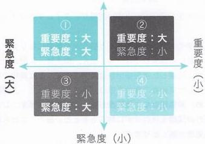
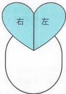
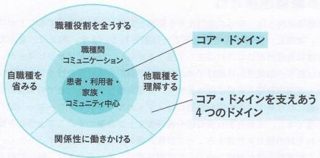
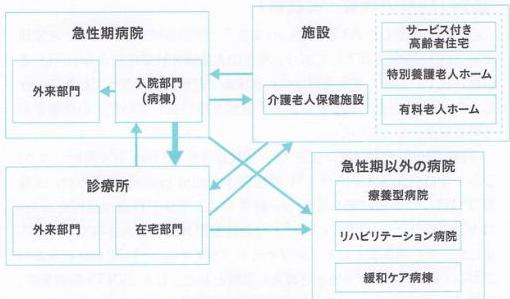
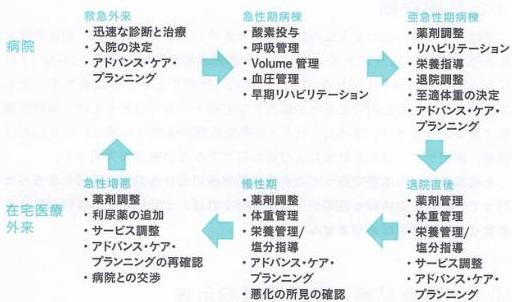

一歩上を行くための内科病棟診療の極意
序文
内科病棟を見回すと、高齢者ばかりというのが今の日本の現状だと思います。多疾患併存の高齢者診療では、内科医として、ただガイドライン通りに治療するというだけでは、立ちいかなくなっているように感じます。そんな現代の日本社会において、一歩上を目指すための総合内科流のエッセンスを皆様にお伝えしたいと思います。
筆者は卒後14年目の総合診療医です。後期研修医までは急性期の病棟診療および救急診療に携わり、どっぷりと急性期医療をしていました。転機は、医師7年目に家庭医療学を病院で実践することを意識し始め、さらに地域包括ケア病棟での診療に従事しました。その際は、他の急性期病院からの転院症例を受け入れ亜急性期から慢性期にかけたケアを実践しました。その中で、地域包括ケア病棟および在宅医療で高齢者を診療するためには急性期の内科診療の知識のみでは不十分であり、老年医学、栄養学、リハビリテーション、緩和ケア、臨床倫理、精神医学などの多種多様な分野について自分なりに深める必要がありました。この際に、家庭医療学の基本原則であるBPSモデルの応用としてこれらの領域を深めていくという考え方ととても有効でした。この頃は急性期医療に、ほとんど従事していませんでした。
しかし、医師9年目に実家の奈良に帰ることになり、再度、急性期病院の総合診療科で急性期病棟および救急医療に従事するようになったことが転機となりました。久しぶりに従事した急性期医療は充実したものでしたが、以前は見えてこなかった風景が見えてきました。それは急性期病棟でこそ、その後の地域包括ケア病棟や在宅医療を見据えたケアを、BPSモデルをベースに行うことが重要ではないかという気づきでした。
浄土真宗では娑婆世界から浄土に行くことを「往相」、浄土から娑婆世界に戻ることを「還相」と呼びます。急性期から慢性期に行くことを「往相」慢性期から急性期に戻ることも「還相」と筆者は勝手に呼んでいます。総合診療や家庭医療の後期研修では急性期病棟と在宅医療を交互に研修するので「往相」と「還相」の気づきは得やすいですが、急性期の内科病棟や救急診療のみでは、「往相」と「還相」の気づきは得られにくいように感じます。
内科のガイドライン通りに診療しているにもかかわらず高齢者診療や複雑困難症例がうまくいかないと感じることはないでしょうか？ その究極の解決策
は「往相」と「還相」の実践だと思います。しかし、多くの内科医は急性期病院から動くことは難しいというのが現状です。
そこで、本書の意義があります。急性期病院でどのように慢性期で重要となる概念を活かすかが本書の主な主題です。また各論では還相として再び急性期病棟に戻り BPS モデルをベースとした視点で内科疾患をどう深めるかについて記載してみました。
日々の内科臨床を深めようと考える若手の内科医や総合診療医にぜひ、本書を手にとっていただければと考えています。この本が急性期と慢性期のケアの架け橋になることを祈っています。
2024年1月20日
市立奈良病院総合診療科
森川暢
大寒を迎える日に
目次
- 序章 病棟診療の目的とは？
- 1. 入院前の日常生活により近い状態で退院することである！
- 第1章 入院前に考えること
- 1. 高齢者の入院後のマネジメントを意識した病歴聴取
- 2. 高齢者の入院後のマネジメントを意識した身体診察
- 3. 高齢者の入院後のマネジメントを意識したルーチン採血検査
- 4. マネジメントを意識した入院時サマリーの書き方
- 第2章 入院時に考えること
- 1. 入院時や入院前から退院後のことを考える
- 2. タイムマネジメント
- 3 一歩進んだ入院指示
- 4 一歩進んだ輸液の考え方
- 5 食事オーダーについて
- 6 薬剤オーダーの考え方
- 7 看護記録および熱型表、コメディカルの記録について
- 8 せん妄
- 9 深部静脈血栓症（DVT）予防について
- 10 超高齢化社会における感染症のTips
- 11 BPSプロブレムリスト
- 12 一歩進んだリハビリオーダー
- 13 高齢者への対応 高齢者総合的機能評価（CGA）プロブレムリスト
- 14 多疾患併存への対応
- 15 急性期病院での緩和ケア・ACP、特に非癌について
- 16 精神疾患の対応
- Column. 1 神経性食欲不振症と中毒
- 第3章 治療各論
- 1 心不全について
- Column. 2 フレイルの高齢者における心不全治療の悩ましさ
- 2 心房細動について
- 3 尿路感染について
- 4 市中肺炎について
- Column. 3 原因不明の肺炎や間質性肺炎疑いで考えること
- 5 誤嚥性肺炎について
- 誤嚥性肺炎で介入可能なABCDEアプローチ
- Column. 4 誤嚥性肺炎は1週間で決まる？
- 6 蜂窩織炎について
- 7 慢性閉塞性肺疾患（COPD）
- 8 上部消化管出血
- 9 偽痛風（CPPD）
- 10 急性腎不全
- 11 肝硬変
- 12 認知症
- Column. 5 認知症と代替栄養
- 13 高齢者の食欲低下
- 14 電解質異常
- 15 血糖異常（血糖管理、高血糖緊急症、低血糖）
- 16 入院中のトラブル（発熱、下痢、便秘、尿閉、血球異常）
- 17 不明熱へのアプローチ
- 第4章 退院後を見据えたケア
- 1. 病状説明と shared decision making
- 2. 多職種連携
- 3. ケアの移行
- 著者プロフィール
1 入院前の日常生活により近い状態で退院することである！
ここでは、そもそも病棟診療は何を目的としているかを、皆様と考えていきたいと思います。
病棟診療の目的は何でしょうか？「何を当たり前のことを……」と思うかもしれません。でも、よく考えてみると、その当たり前のことが意外に難しいのです。病気を治すことは、確かに病棟診療の目的です。実際に、病院には重厚な医療機器と豊富な人材が集中しているので、病院でしかできない医療は存在します。
例えば、心筋梗塞に対する経皮的冠動脈インターベンション（PCI）は病院でないと絶対にできない治療でしょう。そして、その効果は劇的です。また絞扼性イレウスに対する緊急手術も病院でないとできない医療で、同様にその効果は火を見るよりも明らかです。でも……、超高齢社会になり、このようなわかりやすい症例は減ってきました。
この後ご紹介する症例のように、心理社会的要因が複雑で併存疾患も多い高齢者に相対するとき、我々医療従事者は改めて病棟診療の目的について思いを馳せる必要があるのです。
症例（病棟の極意・実践前）
もともと脳出血の既往歴があるが、日常生活動作（ADL）は自立し常食を食べていた高齢男性。日中は家族はおらず独り暮らして、介護サービスは使用していなかった。今回、大腿骨頸部骨折で緊急入院となった。骨折を契機に寝たきりになり、さらにせん妄を発症したことで、抗精神病薬が使用された。その後、手術前に誤嚥性肺炎を発症した。誤嚥性肺炎は抗菌薬で治療したが、嚥下機能は著明に低下した。そして大腿骨頸部骨折も誤嚥性肺炎も治療は終了したので、後は退院するだけになった。家族に「治療は終了したので、すぐに退院してください」と病状説明を行ったところ、「このような状態で家に帰れるわけがないだろう」と激怒された。
病棟の極意
①病棟と日常生活のギャップを意識する
当たり前ですが、病棟とは患者さんの生活の場です。つまり、本来の主役は患者さんであり、医療従事者はそれをサポートする存在と言えます。ところが生活の場であるはずの病院は、実は極めて非日常的な環境です。病院が非日常であることを、医療従事者は思わず忘れてしまいます。なぜなら病院は、医療従事者にとって日常的な職場であり、人生のほとんどの時間を過ごす場所だからです。
この当たり前のこととは、普段は意識しなくても問題ありません。例えば、40代でバリバリ仕事している方が心筋梗塞で入院したとしても、合併症がなければ1週間程度ですぐに日常生活に復帰することができます。ところが、今回の症例のような場合はそう簡単にはいきません。医療従事者にとっては、寝たきりの患者さんの姿が日常です。しかしその姿は、入院前に慎ましく孫に囲まれながら過ごしていた本人の日常とは著しく異なるはずです。
ついつい、我々医療従事者は高齢者を診ることに慣れると、このような寝たきりの状態が当たり前だと思ってしまいます。そして治療した後は「やることがなくなる」と思い、思考停止になってしまいます。ここで重要になることは「想像力」です。どのように日常生活を送っていたのかを目の前でイメージすることができるように問診を行います。難しければADLだけでも、必ず把握することを怠るべきではありません。
入院後しばらくして入院前のADLを確認すると、そのギャップに愕然とすることもあります。また、ギャップはせん妄のリスクにも繋がります。高齢者にとって病院は、穏やかな日常とは異なる非日常で、かつ恐ろしい場所です。そのような場所で少し大声を上げ、そして抑制されればどうなるでしょうか？混乱して、さらに大声を上げたくなるのは仕方ないことではないでしょうか。
「何があっても抑制をするな」とまでは言いませんが、せん妄への非薬物療法とは、可能な限り日常生活に近い環境を入院中であっても用意してあげるということに他なりません。尿道カテーテルは我々医療従事者にとっては日常的なものであっても、それを挿入される患者さんにとっては非日常的で恐ろしい処置かもしれません。
② 真のゴールとは
病棟診療の真の目的はこうです。「入院前の日常生活に、より近い状態で、退院することを目指す生活の場」と言えます。緩和ケア病棟であっても、最近は看取る場というよりも集中的に緩和ケアを実施し日常に帰る場として意識が変わりつつあります。生活の場であるので、可能な範囲で患者さんが行える日常生活の所作は維持すべきです。
最も象徴的なのはトイレです。全身状態が悪ければ尿道カテーテル挿入も仕方ありませんが、状態が改善すれば可能な範囲でトイレに行くことが重要です。トイレに行くことで機能的 ADL の維持も期待できますし、より日常生活に近い環境が維持できるとも言えます。
たまに家族の写真を持ってこられる方も見かけますが、そのように自分が大切としている日用品を持ってくることも良いでしょう。
病気を治すことはもちろん重要で、それには正しい診断と治療が必要であり、内科医として十分な修練を積むことが必要なのは言うまでもありません。しかしその目的は、「患者さんが退院前に近い生活を行えるようにすること」だと、忘れるべきではないと思います。
③ 入院日からゴール設定を意識する
入院時からゴール設定をすることが重要です。短期的には、もともといた自宅や介護施設にそのまま帰るのか、あるいは転院するのかということになります。ただし病状次第では、今回の症例のように著しく ADL が低下していると、すぐに施設や家に帰ることが難しいと予想されます。施設にも種類があるので一概には言えませんが、施設には介護職員が揃っているので、ADL が落ちてもそのまま帰りやすいと言えるでしょう。
しかし今回の症例のように、自宅で、特に介護サービスも使用していない場合は、家に帰るとしても数か月のスパンでリハビリを行い、さらに介護サービスを導入しないと難しいでしょう。そうすると急性期病院だけではそれらの目標を達成することは難しいので、地域包括ケア病棟や回復期リハビリテーション病棟に転院して、長期間のリハビリをしつつ介護サービスなどの社会調整を行わないと家には帰れないでしょう。
このようなゴール設定には、リハビリや介護サービスに関する知識が必要であり、看護師・リハビリテーションセラピスト・メディカルソーシャルワーカー
と密接に連携を取る必要があるのです。多職種カンファレンスの目的は、このようなゴール設定とそれに必要なプロセスを話し合うことであるため、医学的な今後の予想だけでなく、普段のADLと今のADLのギャップ、社会サービスの状況について情報共有し、今後の方針を決定することが主眼になります。
そして、このようなゴール設定を入院したその日から意識する必要があるのです。病気が落ち着いてからでは遅いです。入院時から意識することで、メディカルソーシャルワーカーに早めに声を掛けるべきか、リハビリを早めに行うべきかなどの方針が初めて決定できます。なお、このようなゴール設定を決めるうえで最も重要な要素は、本人と家族の意向です。たとえ難しくても、本人と家族が希望するなら自宅退院をできる道を模索することがプロなのではないでしょうか。
まとめ
- 病棟と日常生活のギャップを意識する必要があり、そのためには想像力が必要。
- 入院前の日常生活により近い状態で退院することを目指す生活の場こそが、病棟のゴール設定である。
- 入院日からゴール設定を意識することが重要であり、ゴール設定には多職種連携が極めて重要になる。
- ゴールを設定するには、本人と家族の意向が何より重要である。
症例（病棟の極意・実践後）
もともと脳出血の既往歴があるが、ADLは自立し、常食を食べていた高齢男性。日中は家族はおらず独り暮らして、介護サービスは使用していなかった。今回、大腿骨頸部骨折で緊急入院となった。骨折を契機に寝たきりになり、さらにせん妄を発症したことで、抗精神病薬が使用された。その後、手術前に誤嚥性肺炎を発症した。誤嚥性肺炎は抗菌薬で治療したが、嚥下機能は著明に低下した。まずは環境調整を行い、可能な限り日常生活に近い状況にすることでせん妄は改善し、抗精神病薬を使用しなくてもよくなった。ADLの低下が著明で嚥下機能も現状ではゼリーレベルだったため、自宅に帰るには少なくとも1～2か月以上のリハビリが必要であった。また介護保険の導入も、自宅に帰るには必要であった。誤嚥性肺炎の治療終了が見込める段階で、本人と家族と多職種を交えて面談を行い、「自宅に帰りたいが現状では難しい」という本人と家族の気持ちを確認で
きた。そのため地域包括ケア病棟に転院し、リハビリと社会調整を行いつつ、自宅退院を目指す方針を提示したところ、家族も納得された様子だった。
第 1 章
入院前に
考えること
高齢者の入院後のマネジメントを意識した病歴聴取
入院する患者さんの病歴聴取は何のためにするのでしょうか？ もちろん病歴聴取の目的は、診断をつけることが第一になります。しかし、特に高齢者では、入院後のマネジメントを円滑に進めるためにも病歴聴取は重要です。そのためのヒントを皆様と共有します。
症例（病棟の極意・実践前）
尿路感染症で自宅から入院した95歳女性。尿路感染症の治療は終了したが、入院後にせん妄を発症し、抗精神病薬を使用することで寝たきりになり、さらに入院後誤嚥性肺炎も併発したため、絶食となった。入院2週間後、家族に抗菌薬治療は終了したので退院は可能だと説明したところ、「こんな状態では帰れない」という訴えがあり、転院調整を開始した。その後、入院中に心肺停止状態となったが、心肺蘇生の甲斐なく、お亡くなりになった。家族からは「もっと何かをしてあげられたのではないか」という発言があった。
病棟の極意
① 食事形態
普段の食事形態、特に嚥下機能低下を確認することで嚥下食の適応を評価します。特に嚥下障害は高齢者では必発ですし、また急性期疾患で一時的に嚥下機能が悪化することは非常に多いです。誤嚥性肺炎を防ぐためにも入院前の食事形態と嚥下機能を把握し、適切な食事形態を決定することが重要です。
② 日常生活動作（ADL）
ADLを入院時に聴取することは重要です。特にトイレ移動に関しては、重点的に聴取する必要があります。完全にオムツなのか、あるいは車椅子でトイ
レに行ってトイレで排泄をしているのかによって、リハビリの目標が変わってきます。
完全に寝たきりで拘縮しており、オムツ排泄であれば、リハビリは急ぐ必要はありません。しかし一見、オムツ排泄のように見えても、日中だけはトイレに行っているというケースもあります。その場合、リハビリの開始が遅れることでトイレ排泄が難しくなり、結果的に自宅への退院ができなくなるという事態に直面します。
③居住環境
まずは家が自宅なのか施設なのかを把握する必要があります。施設であっても、終の住処である有料老人ホームや特別養護老人ホームなのか、介護老人保健施設やショートステイのような一時的な施設なのかを把握する必要があります。
前者のような終の住処では、多少ADLが低下しても問題なく、直接退院可能であることが多いです。一方で後者のような一時的な施設では、直接退院することが難しいことも多く、早めにソーシャルワーカーに転院調整も含めて相談することが必要になります。当然、退院先の決定には、患者さん本人と家族の意向を確認する必要があります。
④介護保険／サービス
介護保険の有無も確認する必要があります。介護保険があれば、担当ケアマネジャーがいるということなので、ソーシャルワーカーに連絡し連携を取ります。また、家族がどれくらい患者さんの介護ができるかも、同時に把握する必要があります。
介護保険が全くない状態で、急激にADLが低下し、さらに家族の介護も期待できない場合は、患者さんが退院して自宅に帰ることが難しくなります。介護保険の有無にかかわらず、介護度やどのようなサービスを使用しているかを具体的に聴取する必要があります。
生活保護の患者さんであれば、生活保護の担当者と連携を取ることで、退院調整がスムーズにいくこともあります。
⑤ 認知症・せん妄リスク
認知症の有無は確認が必要です。具体的に認知症の指摘がなかったとしても、家族に記憶力の低下やコミュニケーション、服薬管理などを確認します。
認知症が疑われる場合は、せん妄予防を意識する必要があります。特にせん妄の既往歴がある場合は、極めてリスクが高いと言えます。
リスクを回避するためには、早期離床や昼夜逆転を防ぐこと、夜間のルートを避けること、不要なモニターやカテーテルを避けること、せん妄を惹起する内服薬を避けることなどの取り組みが挙げられます。
⑥ キーパーソン
重要な決定をする場合、誰に話したら良いか、キーパーソンを確認します。極めて重要な決定をする場合は、遠くにいる近い親族（本人の子供など）がいるかどうかも確認します。
具体的に家族図が書けると良いです。看護サマリーも適宜参照します。キーパーソンが不在の場合、重要な決定をするときには、患者さん本人の意向を尊重しつつ、多職種でカンファレンスを行い、慎重に方針を決定する必要があります。
⑦ Do Not Attempt Resuscitation (DNAR)
心肺停止時に心肺蘇生を行うか、つまりDNARについて確認します。これは入院時に行わないと機会を逸してしまうので、必ず入院時に行います。
また、DNARは「取る」ものではないことは覚えておいてください。老衰が進み、ADLが低下すればするほど、心肺蘇生をしても、いわゆる「延命治療」になり、しんどい思いをするだけになるかもしれないという一般論を伝え、そのうえで患者さん本人がどうしたいのかを確認します。家族に確認する場合も、あくまで患者さん本人だったらどのように思うかという視点で、患者さんの価値観を「引き出す」ように努めます。
ただ、これは入院時に無理やりに決める必要はないので、患者さんや家族が迷われる場合は考える時間が必要です。
またDNARとなれば全く何も治療しないと考える方もいますが、それは違います。DNARは原則として、心肺停止時に心肺蘇生をしないことを確認するだけです。つまりDNARであっても、ICUに入室することや、治療目的の
人工呼吸器を行うことはあり得ることになります。DNAR であれば、人工呼吸器は使用しないことはよくありますが、その場合でも昇圧薬やネーザルハイフロー、抗菌薬などの薬剤投与はすべて行うことも一般的です。DNAR であってもできる治療は可能な範囲で行うことを患者さんや家族に説明しないと、何も治療してもらえないと思われてしまう可能性もあり、注意が必要です。
なお急変リスクが高い状況では、可能な限り個室で家族との時間を最後に作れるように配慮することも重要です。残された家族にとって最後の時間がいかに有意義なものかを考えて、声掛けを行うことも忘れないようにします。
まとめ
- ADL や住居環境、介護保険、サービスを具体的に聴取し、リハビリ・ソーシャルワーカーへの介入依頼を円滑に行う。
- 認知症やせん妄リスクを適切に判断し、せん妄予防策に繋げる。
- 家族図を意識することで、治療方針を決定するためのキーパーソンを理解しておく。
- DNAR は入院時に確認すべきだが、「取る」ものではなく「引き出す」ものである。無理に決める必要はない。また DNAR はあくまで心肺停止時に心肺蘇生をしないというだけであり、DNAR だから治療しないというわけではない。
症例（病棟の極意・実践後）
尿路感染症で自宅から入院した 95 歳女性。入院時に確認したところ、介護保険は要介護 2 であったが、患者さんの意思でサービスは利用していなかった。ここ数か月で徐々に ADL が低下し寝たきりに近い状態となったが、トイレ歩行は可能であった。認知機能低下も認めていた。自宅で長男夫婦と 3 人暮らしで、長男夫婦が介護をしていたが、そろそろ限界になってきたので、介護保険の区分変更やサービスの導入をケアマネジャーと相談していたところだった。食事形態は、最近、刻み食に近いレベルになっていた。
自宅退院を希望されたため、ソーシャルワーカーに入院時から介入を依頼し、早期にソーシャルワーカーとケアマネジャーが連携を取り、区分変更の申請と訪問介護・訪問看護の調整を開始した。キーパーソンは同居の長男夫婦であり、他にキーパーソンとなる家族はいない状態であった。長男夫婦に確認したところ「延命治療はやめてほしい」という患者さん本人
の強い意向があったことが確認できた。
家族で熟考されたうえで、入院3日目にDNARの方針となった。せん妄のリスクが高いため、不要なカテーテル・モニター・夜間持続点滴は避けて、早期にリハビリを導入し日中のトイレ排泄を目指した。また嚥下機能低下も疑われたため、食事はミキサー食として言語聴覚士も導入した。せん妄および誤嚥性肺炎発症は予防できたが、尿路感染に伴い老衰および廃用が進行した。食事はほとんどとれない状態で、急変のリスクも説明したが、家族が自宅での看取りを希望されたため、訪問診療の導入を行い、退院する運びとなった。
しかし退院直前に、状態が悪化し、血圧が低下してきた。家族に連絡し、家族との時間を確保するために、最大投与量を決めたうえで昇圧薬を使用し、個室に移動した。家族が到着し、しばらく個室で過ごした後、心停止となった。最期はあまり苦しそうな様子はなく、家族にも「最期は苦しまなかったに違いない」と申し上げた。家族からは「家で看取れなかったのは残念だけど、できることはしてあげられたので良かった」という発言があった。
2 高齢者の入院後のマネジメントを意識した身体診察
身体診察は忙しい急性期病院ではどうしてもおざなりになりがちですが、診断において極めて重要です。ここでは、内科医として意識したい病棟診療のマネジメントに直結する身体診察のあり方を考えていきます。
症例（病棟の極意・実践前）
89歳男性が誤嚥性肺炎で入院した。ひとまず、いつも通り抗菌薬投与と輸液を行ったが、酸素化改善は不良で、入院後、誤嚥性肺炎を再発した。再発後、嚥下機能は著明に低下した。
病棟の極意
① 脱水の診察
入院患者さんには輸液を行うことが多いですが、高齢者では過剰な輸液による肺うっ血のリスクもあるため、脱水の評価が重要です。脱水は「血管内脱水」と「細胞内脱水」に分けて考えるとわかりやすいでしょう。血管内脱水を示唆する所見として、起立性低血圧および起立時の脈拍増加が挙げられます¹⁾。また、仰臥位で頭部を挙上しなくても顎静脈の同定が困難な場合も、血管内脱水の可能性があります。これらの所見があれば、細胞外液の投与を検討します。
一方で、腋窩の乾燥、口腔の乾燥、舌の乾燥、舌の縦の皺、窪んだ眼窩という所見は、細胞内脱水を示唆します¹⁾。高齢者は口腔内が乾燥することも多く、特異度は高くありませんが、口腔が湿潤であれば細胞内脱水の可能性は低くなります。細胞内脱水を示唆する所見があれば、維持液の投与を考慮します。もちろん血管内脱水と細胞内脱水は合併し得ますし、輸液のメニューは腎機能や電解質も考慮して組み立てる必要があります。
②心不全の診察
心不全を示唆する所見がある場合も、輸液は慎重に行う必要があります。体液量が過剰ならば、利尿薬を使用する必要があります。具体的には心雑音、両肺底部の crackles、III音、IV音、心拡大、頸静脈怒張、腹部静脈逆流、下腿浮腫は、心不全を示唆します²）。特に現状の volume 評価という意味では、脱水同様に頸静脈の診察が極めて重要になります。
本来は内頸静脈を確認すべきですが、難しければ、まずは外頸静脈で良いです。45度ギャッチアップで頸静脈が明らかに張っている場合は、頸静脈怒張と考えます。また、座位でも明らかに頸静脈が張っていれば、頸静脈怒張と考えます。
腹部静脈逆流も非常に有用な診察で、下大静脈を圧迫することで頸静脈圧を意図的に上昇させる手技です。腹部を10秒以上圧迫し、圧迫を解いた瞬間に頸静脈圧が4 cm以上低下すれば、頸静脈圧上昇と判断します。圧迫する場所は、右上腹部の下大静脈（IVC）を意識します。
頸静脈怒張は心不全の治療効果判定にも有用で、静注利尿薬を、頸静脈をモニタリングしながら投与します。
③慢性閉塞性肺疾患（COPD）の診察
COPD を示唆する所見として、樽状胸郭、打診での心濁音界縮小、心窩部の心尖拍動、胸鎖乳突筋肥厚、気管短縮などが知られています³）。COPD の場合、打診は有用で、通常心臓があり濁音になるはずの場所で、気腫化を反映して鼓音となります。
また、気腫化を反映して樽状胸郭となり、心臓が下方に移動することで心窩部に心尖拍動が触れ、さらに甲状軟骨と胸骨の距離が狭くなって気管短縮となります。呼吸筋の使用を反映し胸鎖乳突筋も肥厚します。これらの診察所見は否定には使えませんが、喫煙歴があり、これらの診察所見があれば、COPD の可能性が非常に高いと言えます。
疑わしい場合は積極的に呼吸機能検査を行います。COPD と診断できれば、吸入薬導入、呼吸器リハビリ、禁煙、ワクチン、栄養指導など、包括的な介入を検討します。
④パーキンソン病の診察
パーキンソン病も高齢者では非常にコモンな疾患です。入院をきっかけに、未指摘のパーキンソン病が診断されることもそれほど珍しくありません。動作緩慢、振戦、小字症などが、パーキンソン病に気づくきっかけになります⁴⁾。そうかもしれないと思ったら、静止時振戦、歯車様固縮、小刻み歩行などを確認しにいきます。個人的な印象ですが医師が「そうかもしれない」と疑い、自分の目で患者さんを見に行かなければ、見逃すことが多いです。
静止時振戦は、計算などの負荷をかけることで顕在化しやすいとされています。病歴で静止時振戦を確認することが重要です。
また歯車様固縮も、実際に患者さんの様子を見に行かなければ気づくことはできません。特に、手首や足首など遠位に出現しやすいことに注意が必要です。できるだけ患者さんにリラックスしてもらった状態で行いましょう。歩行を実際に確認することは重要で、小刻み歩行やすり足歩行だけでなく、すくみ足、方向転換が難しいなどの症状で、パーキンソン病を疑うことが可能です。リハビリのときに気づかれることも多いため、リハビリセラピストの情報も確認します（第3章の5「誤嚥性肺炎について」を参照／→P.205）。
⑤肝硬変の診察
肝硬変も身体所見から存在を予測することが可能です。当然、腹水や浮腫は肝硬変を疑う契機になります。また腹水に加えて腹壁静脈怒張を認めれば、より肝硬変らしいと言えます⁵⁾。
肝硬変ではエストロゲン高値を反映し、女性化乳房・体毛減少・精巣萎縮を呈します。さらに末梢血管の拡張を認め、クモ状血管腫だけでなく、手掌紅斑・顔面毛細血管拡張をきたします⁵⁾。特に顔面毛細血管拡張は、比較的感度が高いとされています。
これらの所見を認めれば、積極的に腹部エコーなどの精査を行う必要があります。肝硬変と診断がつけば、ラクツロース、分子鎖アミノ酸製剤、利尿薬などの導入を検討します。
⑥口腔衛生
歯科に関する診察を医学部で学ぶ機会は乏しいため、歯の診察はどうしても軽視されがちです。しかし誤嚥性肺炎予防において、歯科的な評価は必須です。
高齢者ではルーチンに歯科的な診察を行う必要があります。OHAT（Oral Health Assessment Tool）は定量的に評価を行うツールで、東京医科歯科大学のホームページで公開されているので、一度目を通しておくと良いでしょう 6)。
まずは、明らかな齲歯や口腔不衛生がないかをチェックしてください。それらがあれば口腔ケアの徹底や歯科の介入を行うだけでも、誤嚥性肺炎の発症率は低下し得ます。
⑦嚥下スクリーニング
入院時に簡易で良いので嚥下機能の評価を行うと、食事形態のオーダーを安全に行えます。
簡易なスクリーニングとしては、空嚥下で唾を飲んでもらいます。そして1回の空嚥下で十分に甲状軟骨が挙上するかを確認します。また、30秒間に何回空嚥下できるかという「反復唾液嚥下テスト」を行い、30秒間で3回未満であれば異常と判断します。
これらのスクリーニングで陽性になる場合は水を飲んでもらいます。「改訂水飲みテスト」と呼ばれる手法で、3 mLの冷水を使用します。嚥下を認めない場合やムセがひどい場合、呼吸状態が悪化する場合は、異常と捉えます 7)。
その場合は急性期だけでも、食事形態はトロミ水やミキサー食などにしておいたほうが無難です。これらのスクリーニングは内科医が必ず行うべき身体所見の一つと考えています（食事形態の詳細は、第2章の5「食事オーダーについて」を参照／→P.64）。
⑧認知機能評価
認知機能低下があればせん妄のリスクがあるので、せん妄対策を強化する必要があります。認知症の評価には「ミニメンタルステート検査（Mini Mental State Examination：MMSE）」や「改訂長谷川式簡易知能評価スケール（HDS-R）」が有用ですが、スクリーニングとしてはやや煩雑です。
簡易な方法として筆者が好むのは、MMSEのうち「3語想起」と「計算（100から7を順に引いていく）」を行う方法です。このどちらかに異常があれば認知機能低下が示唆されます。その場合は「早期にリハビリを行う」、「余計なモニターや尿道カテーテル、夜間の不要な点滴を避ける」、「不眠時指示は抗せん妄作用があるトラゾドンやラメルテオンにする」などの予防策を講じます。
⑨ サルコペニア
サルコペニアは「骨粗鬆症の筋肉バージョン」と考えればわかりやすく、筋肉量が減少した状態です。明らかな食事摂取量低下、体重減少の病歴があれば、積極的に疑います。
サルコペニアの簡便なスクリーニングとして「指輪っかテスト」が挙げられます⁸）。身長に比較的比例している両手の母指と示指で「指輪っか」を作ります。「指輪っか」のサイズで下腿周囲の最大部分を囲ったときに隙間ができると、サルコペニアの可能性が高いとされています。このテストが陽性であれば、積極的な栄養療法とリハビリを併用するリハビリ栄養を検討する必要があります。
⑩ フォローとしての身体診察
身体診察は最も簡便で安価な検査であると考えて差し支えありません。病棟でのフォローではバイタル測定を基本としつつ、いわゆる元気さ（全身状態）は必ずチェックします。さらに、会話を行うことで認知機能やせん妄のスクリーニングを行います。なお、感染症における局所所見（蜂窩織炎における皮疹）は、毎日の回診でチェックします。全身状態および局所所見は採血のCRPよりも迅速に改善します。他には心不全における頸静脈怒張や浮腫も、モニタリング項目として有用です。このように簡易検査としての身体診察をモニターすることは、病棟診療において非常に重要です。
まとめ
- Volume の評価や心不全、COPD、パーキンソン病の診断など、身体診察の役割は大きい。
- 内科医も口腔衛生の評価や嚥下評価を行えるようにしておく。
症例（病棟の極意・実践後）
89歳男性が誤嚥性肺炎で入院した。入院時は血圧低めで、肺窩の乾燥や頸静脈虚脱も認めたため、脱水と判断して輸液を行った。「改訂水飲みテスト」でムセを認めたので、急性期の間の食事形態はトロミ水とミキサー食で対応した。MMSEの3語想起と計算問題は不正解であり、せん妄の予防を徹底した。口腔衛生も不良であり口腔ケアを徹底した。樽状胸郭、
3 高齢者の入院後のマネジメントを意識した身体診察
心窓部の心尖拍動、胸鎖乳突筋肥厚、気管短縮を認め、COPDの合併を疑った。輸液に伴い頸静脈が徐々に張ってきて、腹部静脈逆流を認めるようになったため、輸液量を絞って対応した。COPDに伴う右心不全として、LAMA吸入とACE阻害薬を導入した。仮面用顔貌および固縮と安静時振戦を認め、パーキンソン症候群の合併を疑った。L-DOPAを導入したところ固縮の改善を認めた。「指輪っかテスト」よりサルコペニアの合併を疑ったため、栄養療法に加えてリハビリを開始した。その後、状態は徐々に改善し、最終的には常食を食べられるようになり退院となった。
参考文献
1) McGee S, et al. The rational clinical examination. Is this patient hypovolemic? JAMA. 1999; 281: 1022-1029.
2) Wang CS, et al. Does this dyspneic patient in the emergency department have congestive heart failure? JAMA. 2005; 294: 1944-1956.
3) Holleman DR Jr, et al. Does the clinical examination predict airflow limitation? JAMA. 1995; 273: 313-319.
4) Rao G, et al. Does this patient have Parkinson disease? JAMA. 2003; 289: 347-353.
5) Udell JA, et al. Does this patient with liver disease have cirrhosis? JAMA. 2012; 307: 832-842.
6) 東京医科歯科大学大学院 地域・福祉 口腔機能管理学分野 ホームページ.
https://www.ohcw-tmd.com/2021/10/01/%E6%97%A5%E6%9C%AC%E8%AA%9E%E7%89%88ohat%EF%BC%88ohat-j%EF%BC%89%E3%81%94%E5%88%A9%E7%94%A8%E3%81%AE%E7%9A%86%E3%81%95%E3%81%BE%E3%81%B8/ (閲覧日：2024年1月5日)
7) 日本摂食嚥下リハビリテーション学会 医療検討委員会. 摂食嚥下障害の評価【簡易版】2015.
https://www.jsdr.or.jp/wp-content/uploads/file/doc/assessment2015-announce.pdf (閲覧日：2024年1月5日)
8) サルコペニア診療ガイドライン作成委員会, 編. サルコペニア診療ガイドライン 2017年版. ライフサイエンス出版, 2017.
3 高齢者の入院後のマネジメントを意識したルーチン採血検査
ルーチン採血検査は非常に重要です。検査を出しっぱなしにせず、入院後のマネジメントに繋げる方法を考えていきます。
症例（病棟の極意・実践前）
86歳女性が食欲不振で入院した。採血では脱水が示唆されたため維持液を開始した。入院4日目に意識レベルが低下し、同日の採血では腎機能の悪化と低ナトリウム血症の悪化、高マグネシウム血症・高カルシウム血症・高カリウム血症を認めたため、腎臓内科にコンサルトし透析を開始した。さらに貧血の悪化や黒色便も認めたため、緊急内視鏡検査を行ったところ、胃潰瘍が見つかった。実は、女性は腰痛のためロキソプロフェン（ロキソニン®）を長期内服し、さらにループ利尿薬、活性型ビタミンD、アンジオテンシンⅡ受容体拮抗薬（ARB）、酸化マグネシウム、スピロノラクトンも内服していたことが判明した。
病棟の極意
① 血算
血算では、まずは白血球・ヘモグロビン・血小板・平均赤血球容積（mean corpuscular volume：MCV）に注目します。血算だけでも1冊の本になるほどなのでここでは詳細は避けますが、貧血と血小板低下の2つに遭遇する頻度が高いです。
貧血
急激な貧血の原因として、①出血、②希釈、③溶血を考えます。特に頻度と緊急性が高いのは、①の出血です。タール便や血便の有無、腹腔内出血の有無を確認する必要があります。
②の希釈は、輸液によるものなので緊急性は乏しいですが、安易に希釈と考
えることは避けます。
③の溶血は、出合う頻度は少ないものの、①や②とは対応が全く変わってくるので常に頭に入れておく必要があります。具体的には、間接ビリルビン上昇・乳酸脱水素酵素（LDH）上昇が、溶血を疑うきっかけになります。出血がないにもかかわらず網状赤血球が増加していることもあります。疑わしければ、ハプトグロビンの低下がないかを確認します。クームス試験が陽性ならば自己免疫性溶血性貧血を、破砕赤血球が見られるならば TTP（血栓性血小板減少性紫斑病）や HUS（溶血性尿毒症症候群）を念頭に置きます。
一方、慢性的な貧血の原因検索は MCV で行います。明らかに MCV が低値ならば鉄欠乏を、MCV が高値ならばビタミン B₁₂ 欠乏を、疑うきっかけとなります。ただ高齢者であれば、ビタミン欠乏と鉄欠乏が合併することもあるため、必ずしも「MCV が正常だから鉄欠乏は否定的」とは言えません。フェリチン・ビタミン B₁₂・葉酸は、貧血の高齢者であればルーチンで検査してもよいでしょう。低栄養がある場合は、ビタミン B₁・亜鉛・銅も貧血の原因として押さえておく必要があります。そして腎不全があれば、腎性貧血を念頭に置きます。
血小板低下
血小板低下の原因として、薬剤性の血球減少も常に念頭に置く必要があります。薬剤性の血球減少は機序によって原因となる薬剤が違いますが、頻度が高いところとして抗菌薬・抗てんかん薬・抗癌薬・免疫抑制薬は押さえておきます¹⁾。尿酸降下薬や制酸薬も薬剤性の血小板低下をきたすことがあります。この判断には病歴が大切で、最近開始した薬剤がないかを確認しましょう。これらの原因検索を行うことで自ずと対処法が決定されます（第 3 章の 16「入院中のトラブル」を参照／→ P.304）。
②ナトリウム
ナトリウムは、輸液のメニューを決めるうえで必須の項目です。
高ナトリウム血症
高齢者、特に認知症高齢者の高ナトリウム血症の原因の大半は脱水です。高ナトリウム血症がある場合は、低張液を中心の輸液メニューとします。具体的には、ソルデム 3A などの 3 号液が挙げられます。ただし、低血圧や腎前性腎不全など血管内脱水の徴候を認める場合は、まずラクテック®などの乳酸リン
ゲル液を併用します。ソルデム 3A は維持液として有名ですが、高ナトリウム血症の治療薬でもあります。裏を返すと低ナトリウム血症を惹起するため注意が必要です。ソルデム 3A で輸液を開始しナトリウムを 1～2 日ごとにモニタリングし、改善が乏しければ、5%ブドウ糖液を併用することもあります。最初から 5%ブドウ糖液のみのメニューとするとナトリウムが急激に低下するリスクがあり、一般内科医にはやや使いにくいかもしれません。
低ナトリウム血症
低ナトリウム血症はさらに頻度が高い病態です。高齢者では、低浸透圧性で脱水気味という病態に遭遇する頻度が高く、具体的には薬剤性やバソプレシン分泌過剰症（SIADH）、さらに鉱質コルチコイド反応性低ナトリウム血症（MRHE）が挙げられます。薬剤性の低ナトリウム血症では、利尿薬や ARB が原因であることが多いです。中枢に移行する抗てんかん薬や向精神病薬は薬剤性の SIADH を引き起こし、低ナトリウム血症を惹起します。脱水のエピソードがない典型的な SIADH に遭遇することは稀です。むしろ高齢者の場合は、SIADH か MRHE かの判断に迷う症例のほうが多いです。判断に迷うときは、メインをリンゲルや生理食塩水などの等張液にしておくほうが無難です。ただし、それらにはカリウムやビタミンが配合されていないので、適宜補充すべきです。食事が十分に摂取できているのであれば、生理食塩水の負荷は不要で、SIADH に準じて水制限のみで良いでしょう。行うとしても純粋な塩分負荷である塩化ナトリウムの経口摂取を選択します。水制限±塩分負荷 + 被疑薬中止でも改善が乏しければ、MRHE と診断してフロリネフ®を 0.05 mg の最小容量から開始を考慮します。
③カリウム
高カリウム血症
高カリウム血症も比較的遭遇し、頻度が高いです。心電図変化が出ている場合は、カルチコールとグルコース・インスリン療法、透析などで急場をしのぎます。高カリウム血症は腎不全が背景にあることが大半ですが、腎不全の治療薬のうち、カリウムが上昇させる内服薬の中止ができるか検討しましょう。具体的には ARB や ACE 阻害薬、カリウム保持性利尿薬、ST 合剤などが挙げられます。脱水があれば生理食塩水による輸液を、心不全などで volume が多い場合はフロセミド（ラシックス®）を使用して、カリウムを低下させます。ポリスチレンスルホン酸ナトリウム（ケイキサレート®）などのカリウム吸収阻
害薬も有効ですが、便秘を惹起するので下剤と併用します。その場合、酸化マグネシウムは腎不全では避けるべきなので、ラクツロース（ラグノス®）、ソルビトール、モビコール®などが使いやすいです。
低カリウム血症
低カリウム血症の原因として頻度が高いものは、intake 不足・薬剤性・低マグネシウム血症です。薬剤性ではラシックス®やサイアザイドなどの利尿薬が原因となります。甘草による偽性アルドステロン症も注意します。
Intake 不足は、高齢者では比較的頻度が高く、低マグネシウム血症を合併することも多いです。低カリウム血症の場合は、ルーチンにマグネシウム血中濃度を測定すべきでしょう。特にアルコール依存・低栄養は低マグネシウム血症のリスクです。
低マグネシウム血症を合併していれば、マグネシウムを点滴で補充します。経口摂取が可能ならば、カリウムの補充は内服で行うことが原則です。健常成人のカリウムの1日の必要量は40 mEq なので、食事や点滴の量をあわせて40 mEq から上乗せしたカリウムを補充します。ただし、腎不全患者や高齢者では控えめにしたほうが無難です。
④ カルシウム・マグネシウム
高カルシウム血症
カルシウムで問題になるのは、大概、高カルシウム血症です。特に原因不明の悪心、嘔吐などでは、高カルシウム血症を念頭に血中カルシウム濃度を測定します。高カルシウム血症の原因は様々ですが、日本では活性型ビタミンDによる薬剤性の頻度が相対的に高いです。特に腎不全患者でリスクが高く、活性型ビタミンDの中止が必須になります。もちろん腎不全の他に、悪性腫瘍や副甲状腺機能亢進症も忘れてはいけません。高カルシウム血症を認めた場合の治療は原則として生理食塩水です。ラクテック®などの乳酸リンゲル液にはカルシウムが含まれているので避けるべきです。
低マグネシウム血症
前述したようにマグネシウムは、低栄養、アルコール依存症などで低マグネシウム血症が問題になります。
高マグネシウム血症
高マグネシウム血症は、腎不全患者に酸化マグネシウムを処方し、脱水になることによる医原性の頻度が極めて高いです。こちらも生理食塩水輸液と酸化マグネシウムの中止で治療します。
重度の高マグネシウム血症は、高カリウム血症と同様に致死性があるため、カルチコールや透析などを検討することもあります。マグネシウムはルーチンで測定する必要はありませんが、低栄養、アルコール依存、腎不全、酸化マグネシウム内服などの状況では測定を検討します（詳細は、第3章の14「電解質異常」を参考／→P.279）。
⑤腎機能
腎機能障害を認めた場合、まず重要なことは以前の腎機能との比較です。以前の腎機能と比べて悪化している場合は、「腎前性」、「腎性」、「腎後性」に分けて原因を考えます。
まず腎後性を真っ先に否定すべきです。「そんなこと言われなくてもわかる！」と思うかもしれませんが、そのつもりで診なければ必ず見逃します。行うことは簡単で、エコーで膀胱の尿貯留と水腎症を見るだけなのですが、これを怠ってはいけません。
明らかに脱水の病歴がある場合や感染症を合併する場合などは、腎前性腎不全として十分な細胞外液の輸液が必要です。ただし心不全合併例では、ただ輸液をすれば良いというわけにはいきません。「Cardio renal syndrome」と呼ばれる概念があり、心不全を伴う腎機能障害では利尿薬を使用することで腎機能も改善し得ます²）。うっ血が高度の場合は腎臓もうっ血するため、利尿薬で改善するというイメージで考えれば良いでしょう。心不全と言っても、心拍出量が低下し腎血流が低下している場合は強心薬が必要になることもあります。腎前性に関しては鑑別が多岐にわたりますが、まず薬剤性を除外し、尿沈渣を行うという対応が必要になります。NSAIDs・抗菌薬・ARB・ACE阻害薬・利尿薬は腎機能を悪化させるため、まずは中止を検討します。尿路感染を伴わないにもかかわらず尿沈渣異常を認める場合は、糸球体腎炎や間質性腎炎を疑います。ピットフォールとして、心房細動患者でLDH上昇を伴う場合は、腎梗塞の可能性を忘れないことです（詳細は第3章の10「急性腎不全」を参照／→P.246）。
⑥肝機能
肝機能障害も、検査値異常がある場合に比較的遭遇しやすいです。AST・ALTのようなトランスアミナーゼが優位な場合と、ALP、γ GTPなどの胆道系酵素が優位な場合に分けて考えます。
トランスアミナーゼが優位な場合（AST/ALT）
トランスアミナーゼが優位な場合にまず考えるのは、アルコールを含めた薬剤性の肝障害と肝炎ウイルスです。そのため、薬剤歴の詳細な聴取と肝炎ウイルスのスクリーニング、腹部エコーが、重要な検査になります。なお、不明熱を伴う場合は伝染性単核球症・成人発症スチル病を、全身状態が不良な場合や心不全を合併する場合はショック肝・うっ血肝を、念頭に置きます。ショック肝やうっ血肝ではLDH優位なトランスアミナーゼの上昇をきたし、さらに血圧低下や酸素化の低下などのバイタルの異常をきたします。具体的にはショックや低酸素の鑑別を行うことになります。また、AST/ALTとγ GTPやALPなどの胆道系酵素が同時に上昇している場合は、胆管炎や総胆管結石、胆管癌などに胆道閉塞をまずは考えます。なお、自己免疫性肝炎も念頭に置く場合は、IgG・抗核抗体を検査に提出します。
胆道系酵素が優位な場合（γ GTP/ALP）
γ GTPやALPなどの胆道系酵素が優位な場合も、まず行うべき検査は腹部エコーです。これによって胆石や肝胆道系悪性腫瘍を除外します。腹部エコーでも異常が明らかではない場合は、腹部造影CTやMRCP（MR胆管膵管撮影）などを検討します。それでも画像から異常がはっきりしない場合は原発性胆汁性肝硬変を念頭に置いて、抗ミトコンドリア抗体を検査します。原発性胆汁性肝硬変であれば、ウルソデオキシコール酸の良い適応です。
薬剤性肝障害
入院中に問題になる頻度が高い事例は、薬剤性肝障害です。薬剤性肝障害は病歴でのみ被疑薬の判別が可能です。そのため、薬剤歴の聴取と被疑薬の中止が重要になります³⁾。どんな薬剤も被疑薬となりますが、抗菌薬、抗結核薬、抗てんかん薬、アセトアミノフェン、NSAIDs、尿酸降下薬、アミオダロン、PPI、H₂阻害薬、抗癌薬、免疫抑制薬、漢方薬、糖尿病治療薬（α-グルコシダーゼ阻害薬、メトホルミン）などが重要です。
⑦ 検査のフォロー
「血液検査をすれば安心」という感覚があるかもしれません（表1-1）。ただ血液検査には限界もありますし、そもそも血液検査の目的を明確にしておく必要があります。一般的に血液検査を行う目的は表1-2の通りです。逆に言えば、これ以外の項目は、血液検査ではモニタリングできないということになります。とはいえ、これらの検査項目をきちんとモニターし、検査異常に対して対応することは病棟診療では重要です。CRPも病棟でのモニターでは重要です。CRPのみで判断することはご法度ですが、CRPの上昇をきっかけに肺炎や尿路感染などがないか身体診察に立ち返るという使い方は非常に重要であると考えています。
表 1-1 筆者の考える血液検査の目安
| 最重症例 | 毎日、または2日に1回 |
|---|---|
| 不安定な急性期 | 3回／週（月・水・金） |
| 急性期 | 2回／週（月・木） |
| 安定している症例 | 1回／週 |
| 治療が終わっている症例 | 1回／2週 |
表 1-2 血液検査を行う目的
| 血球異常のモニター（特に貧血の進行の有無） |
|---|
| 肝機能のモニター |
| 腎機能のモニター |
| 電解質異常のモニター |
| 血糖のモニター |
| アシドーシスのモニター（静脈血液ガスで測定する） |
| 炎症反応のモニター |
まとめ
- ルーチン検査を出しっぱなしにしない。
- ルーチン検査は薬剤の副作用を見抜くチャンスになる。
症例（病棟の極意・実践後）
86歳女性が食欲不振で入院した。採血では腎機能悪化・低ナトリウム血症・高カリウム血症を認めた。酸化マグネシウムを内服していたためマグネシウムを追加したところ、高マグネシウム血症を認めた。ARB・ループ利尿薬・スピロノラクトン・活性型ビタミンD・ロキソプロフェン・酸化マグネシウムはすべて中止した。また貧血を認めたため、フェリチン・ビタミンB₁・ビタミンB₁₂・葉酸をチェックし直腸診を行ったところ、タール便を認めた。プロトンポンプ阻害薬（PPI）を開始し上部消化管内視鏡検査を行ったところ、胃潰瘍を認めた。絶食として生理食塩水の点滴を開始した。開始後、電解質異常はすべて改善し、腎機能も改善した。また食欲も改善し、食事摂取が可能となった。
参考文献
1) Al Qahtani SA. Drug-induced megaloblastic, aplastic, and hemolytic anemias: current concepts of pathophysiology and treatment. Int J Clin Exp Med. 2018; 11: 5501-5512.
2) Rangaswami J, et al. Cardiorenal syndrome: Classification, pathophysiology, diagnosis, and treatment strategies: A Scientific statement from the American Heart Association. Circulation. 2019; 139: e840-e878.
3) 厚生労働省．重篤副作用疾患別対応マニュアル薬物性肝障害．平成20年4月．
https://www.info.pmda.go.jp/juutoku/file/jfm0804002.pdf（閲覧日：2024年1月5日）
マネジメントを意識した入院時サマリーの書き方
多忙な内科医が入院時サマリーに割ける時間は、それほど多くはないと思います。しかし、入院後のマネジメントに繋げるためにも、要点を押さえて入院時サマリーに書くことは重要です。
症例（病棟の極意・実践前）
78歳男性が傾眠傾向と肺炎で入院した。肝障害の既往歴があった。状態が悪そうなので内服薬はすべて中止した。入院翌日に解熱したが、その日に原因不明の強直性痙攣を発症した。ジアゼパム（セルシン®）で止痙したため、内服を継続した。しかし酸素化の改善が乏しく、日常生活動作（ADL）も著明に低下したため、ひとまず他院に転院の方針となった。
病棟の極意
① 現病歴
現病歴には、主訴に関連した内容を簡潔に記載します。この際に意識することは時間軸です。主訴が時間の経過とともにどのように変化したか、一目でわかるようにしましょう。学会で発表する場合などでは、症状を時系列でグラフ化することもあると思いますが、あのイメージが明確に頭に浮かぶような書き方を心がけます。なおプレゼンテーションをする場合では、入院日を起点に何日前から症状があるか発表するほうが望ましいですが、カルテを書く場合は具体的な日付を記載するほうが望ましいです。また、陰性症状を記載する場合は「陰性症状なし」だけで良いですが、主訴以外に陽性症状がある場合は、必ずそれも時系列に含めます。例えば、腹痛が主訴である場合は「随伴症状として下痢あり」の記載だけでは不十分です。いつから下痢があるのかで、鑑別の方向性が全く違ってくるからです。下痢が数年前からあるのであれば、過敏性腸症候群や炎症性腸疾患を念頭に置くべきですが、前日からの腹痛とそれに随伴した下痢であれば、感染性腸炎や虫垂炎などを念頭に置くべきです。このよう
に現病歴を記載しながら、自分の中で鑑別疾患を整理することになります。本人から病歴が聞けない場合は、家族や施設職員などから必ず聴取しましょう。
②その他の病歴
ルーチンに記載する必要はありませんが、sick contact や旅行歴、性交渉歴、食事歴、動物接触歴などは、時に重要な情報をもたらすことがあります。
性交渉歴を聞く際には、必ず「パートナーはいますか？」と聞きます。最近、LGBT という言葉が普及しています。LGBT は Lesbian、Gay、Bisexual、Transgender の頭文字を取ったものです。つまり、男性の性交渉のパートナーは必ずしも女性ではないということです。
また性交渉があった場合は、避妊をしているか、不特定多数のパートナーとの性交渉があるかも確認します。ただし、これらの情報は非常にセンシティブですから、あくまで治療上必要と判断したときに、患者さんにもその旨を伝えたうえで聴取します。不明熟、原因不明の皮疹、その他非典型的な経過を辿る疾患では、これらの情報が重要になる場合もあります。
③既往歴
既往歴を記載する順番は現病歴の後ですが、実際に問診するときは最初に聞いてしまうことも多いです。当然ですが、既往歴は鑑別疾患に明確に影響しますし、入院後のマネジメントにも影響を与えます。
慢性心不全の急性増悪を繰り返している高齢者の呼吸困難では、当然ですが、心不全急性増悪を念頭に置きます。とはいえ、慢性心不全が既往にあるといっても、その程度は千差万別です。もしかしたら、かかりつけ医に「浮腫があるから心不全かもね」と言われただけかもしれません。
狭心症もそうでしょう。一過性の非特異的な胸痛に対して「狭心症疑い」と言われただけという場合と、急性冠症候群に準じた危険な狭心症で緊急カテーテル治療をした場合とでは、そのインパクトは天と地ほどの差があります。
さらに言えば、脳梗塞などもその傾向があります。例えば、脳ドックで指摘された無症候性のラクナ梗塞などは、抗血小板薬の絶対的な適応ではなく、仮に抗血小板薬を内服していたとしても中止は問題なく可能です。一方で、頸動脈狭窄が著明で脳梗塞を何度も再発しているにもかかわらず、頸動脈ステントなどを希望されておらず内科的治療をしている場合は、原則として抗血小板薬の中止は難しいでしょう。
入院後のマネジメントに繋げるためには、既往歴の有無だけを聞くのではなく、詳細な内容を問診して判断する必要があります。患者さんに聞いてわからなければ、主治医に確認することを怠るべきではありません。
④ 内服薬
内服薬は可能であれば飲んでいる量やタイミングまですべて記載するべきですが、難しければ処方内容だけでも記載します。この際に、どの病院のどの診療科から何の薬が処方されているかを必ず書きましょう。
ポリファーマシーが問題となっていますが、ポリドクターの場合、問題はさらに複雑になります。例えば、薬手帳は非常に有用ですが、ポリドクターとなると記載が漏れている場合もあります。さらに、院内処方は薬手帳には反映されないため、より複雑になります。大概はお薬手帳や患者さん・家族からの申告で把握できるため、可能な範囲で記載します。
ポリドクターやポリファーマシーの症例では、入院時の薬剤リストは暫定版としておき、入院後に薬剤師さんに検薬を依頼することで、薬剤リストを完成させます。検薬をすると、意外なところから意外な薬が処方されていることが判明したり、全く薬が飲めていない現状が浮き彫りになったりすることもあります。反対に、過量内服によって薬剤副作用が起きている可能性が明らかになることもあります。
これらの情報は必ずサマリーに記載し、必要に応じて外来主治医に情報依頼を行うと良いでしょう。
なお、薬剤処方歴から既往歴を類推することも可能です。患者さんが「既往歴はない」と言っている場合でも、例えばアスピリン（バイアスピリン®）を内服していることで心筋梗塞の既往歴が判明することもあります。
⑤ 嗜好歴
喫煙歴と飲酒歴を確認します。喫煙歴は言うまでもなく、慢性閉塞性肺疾患（COPD）のリスクです。喫煙の継続期間を確認することが非常に重要になります。Pack-yearsはタバコ1箱（20本）を継続した年数であり、国際的な喫煙歴の基準とされています。20 pack-years、つまりタバコ20本／日を20年継続した患者さんの20％がCOPDであることを覚えておくと良いでしょう¹）。
ただし1日の本数よりも、純粋にタバコを継続した期間が気道閉塞の予測
因子になるという報告もあるため、まずは喫煙年数を確認し、20年以上喫煙を継続している場合は COPD のリスクが高いと判断し、呼吸機能検査をすることを検討します²）。
飲酒に関しては、喫煙よりも正確な量を把握することが難しい傾向があります。なぜなら患者さんが飲酒量を過小報告することが多いためです。そこで正確な飲酒量を類推するためには割り算をします。大酒家は大瓶（2 L など）でアルコールを購入する傾向があります。そのため「大瓶を何日くらいで飲むか」という聞き方をします。2 L の焼酎を 4 日で飲むのであれば、1 日の飲酒量は 500 mL であることが判明します。明らかに飲酒量が多い場合は、ロラゼパム（ワイパックス®）などで離脱予防を行うことを検討します。またアルコール依存の可能性が高い場合は、専門の精神科医へ紹介することを検討します。
⑥生活歴
高齢者は、自宅から来たのか、施設から来たのかの情報は必須です。また介護保険を利用しているか、利用している場合は介護度も記載します。
そして、普段の ADL についても具体的に記載します。可能であれば、すべての ADL を記載したいところですが、最低限、排泄と食事に関してだけでも十分です。オムツなのか、ポータブルトイレなのか、それとも車椅子でトイレに行っているのか、トイレに歩いて行っているとしたら手すりはあるのかなど詳細に記載します。食事に関しては、食事介助が必要なのか、セッティングすれば自分で食べられるのか、誰が食事を用意するのか、普段の食事形態はどうかなどを記載します。排泄と食事を詳細に聞くだけで、ADL の肝が見えてきます。これらの情報は退院できるかどうかに直接関わってくるため、極めて重要です。
家族構成とキーパーソンについても書きますが、家族関係に問題がありそうであれば、それも書いておくと良いでしょう。なお若年者の場合は、職業を記載すると良いと思います。社会復帰を考える際に、職業が重要な要因になることはよく経験されます。
⑦ DNAR
DNAR の確認は、高齢者では入院時に行うべきです。また確認しておきながら、サマリーに書いていないケースがあります。これは、後で主治医以外がサマリーを見たときに困ることになるので、必ず記載しましょう。ただ前述し
た通り、DNARだから何もしないというわけではないので、具体的に書いたほうがわかりやすいことも多いです。例えば、心肺蘇生や人工呼吸器は使用しないが、それ以外の昇圧薬投与やネーザルハイフロー、非侵襲的陽圧換気（NIPPV）、輸血は実施するということを具体的に記述します。ただDNARと書くよりも正確に情報が共有されます。
⑧ アレルギー
薬剤と食事について、それぞれアレルギーの既往歴を確認します。特に慢性咳嗽で喘息を疑う場合などは、花粉症やアトピーの有無もアレルギーの一環として確認します。喘息では、これらのアレルギー体質を合併し得るからです。
⑨ 身体所見と検査
バイタル・身体所見・検査所見について簡潔に記載します。特にバイタルと身体所見は検査結果と異なり、入院時サマリーにしか項目がありません。
入院時、胸部Xpや心電図の検査のルーチンがあるように、入院時のルーチンとして最低限の身体所見は網羅して書くことをお勧めします。後から比較することが可能になり、急変時などに役に立ちます。
⑩ プロブレムリスト
入院時に問題になる新規のプロブレムリストを挙げて、プロブレムリストごとにアセスメント＆プランについて記載します。
ここでは、プロブレムリストの肝についてお話します。例えば、どこからどう見ても誤嚥性肺炎である場合は、プロブレムリストは「#誤嚥性肺炎」としてもよいでしょう。しかし発熱の原因が不明であれば、安易に「#肺炎疑い」というプロブレムは用いず、「#発熱」とだけしておきます。記載するとしても「#発熱 s/o 肺炎 r/o 感染性心内膜炎、薬剤熱」などといった具合に、疑わしい疾患を「s/o」、その他疑わしく除外すべき疾患を「r/o」としてプロブレムの横に書くのが良いでしょう。これは「#肺炎疑い」とすることで、そのプロブレムが独り歩きしてしまい、診断エラーに繋がる可能性があるからです。
アセスメントは「診断アセスメント」と「治療アセスメント」の2つを記載します。プランに関しても、今後の「診断プラン」と「治療プラン」の2つに分けて記載すると良いでしょう。
⑪ 退院時サマリーを入院時に書けるか
入院時サマリーの時点でゴール設定をしておくことを、筆者は強く勧めます。まず、解決すべきプロブレムとそれを解決するのに要する日数を考えます。例えば、市中肺炎であれば抗菌薬投与は長くても7日前後になることがほとんどでしょう。ここで高齢者では、入院前のADLを含めた生活歴を入院時から積極的に聴取することが重要になります。
例えば、重度の敗血症を呈しておりADLの著明な低下が予想される症例で、介護保険を全く利用しておらず、老老介護で、他にキーパーソンがいない場合はどうなるでしょうか。敗血症の治療期間自体は2週間で終了するかもしれませんが、治療終了時にADLが著明に低下していることが予想されます。その状況で直接自宅退院は極めて難しいため、まずは地域包括ケア病棟に転院することがゴールになる可能性が高いと考えます。
もちろん自宅退院か転院か迷うケースもありますが、その場合はその旨をサマリーに記載しておきます。そうすることで多職種との情報共有も円滑になります。また、入院時からソーシャルワーカーの介入を検討してもいいでしょう。
つまり、予測能力が入院時サマリーの質を決めると言っても過言ではありません。極論を言えば、入院時から退院時サマリーを書けることを目指すべきですし、さらに退院後のマネジメントも決定できることを目指すべきです。仮に予測が外れた場合は、なぜ外れたかを考えると、より成長することが可能になります。
まとめ
- 入院時サマリーは情報をまとめつつ、適切なアセスメント・プランに繋げるためのツールである。
- 入院時から退院時のことを見据えたアクションプランを行い、今後を予想することが重要であり、入院時から退院時サマリーを書けるような心づもりをしておく。
症例（病棟の極意・実践後）
78歳男性が肺炎で入院した。肝障害もあり、これについて詳細に問診したところ、アルコール性肝障害であったことが判明した。さらに焼酎500 mL/日を飲み、不眠に対してトリアゾラム0.5 mg/日を内服していたことが判明した。家族から病歴を聴取したところ、不眠に対していつも
よりアルコールを摂取し、さらにトリアゾラムを通常の2倍量内服し、その後嘔吐してから咳嗽と喀痰が増加したことがわかった。以上より、アルコール多飲とベンゾジアゼピン過量内服による傾眠傾向と、それに伴う誤嚥性肺臓炎であるとアセスメントした。また、1日40本の喫煙を40年間継続していることから、COPDのリスクが高いと考えた。
アルコール離脱予防にセルシン®の予防内服を行いつつ、肺炎の治療を行った。その後、セルシン®は漸減を行った。介護サービスは未申請であり、アルコール依存症への対応も含めてソーシャルワーカーに介入を依頼した。呼吸機能検査からはCOPDと診断し、禁煙指導のうえ、吸入薬を処方した。もともとトイレ歩行は伝い歩きでの歩行が限界のレベルで、常食を摂取していたため、常食摂取と伝い歩きを目標としたリハビリも開始した。その後、介護サービスと在宅酸素を導入し、退院後は禁酒外来を受診する方向づけをして、自宅退院となった。
〈実際の入院時サマリーの例（アセスメント＆プランのみ）〉
肺炎 s/o 誤嚥性肺炎
嚥下障害 s/o 薬剤による傾眠
不眠に対して、いつもよりアルコールを飲酒しつつ、さらにトリアゾラムを通常の2倍量を内服し、その後嘔吐してから咳嗽と喀痰が増加したという病歴。また、胸部CTでの重量分布に従った浸潤影より、アルコール多飲とベンゾジアゼピン過量内服による傾眠傾向と、それに伴う誤嚥性肺炎とアセスメントした。化学性の誤嚥性肺臓炎の要素も強いが、喀痰グラム染色ではpolymicrobialであり、アンピシリン／スルバクタムを開始する方針とした。また誤嚥性肺炎の包括的介入として、口腔ケアの徹底、言語聴覚士(ST)および理学療法士(PT)介入、N栄養サポートチーム(NST)介入を依頼する。ADL低下が著明であり、自宅退院か地域包括ケア病棟に転院かの方針を、1週間以内に離床の進み方を見ながら決定する。自宅退院であれば、ケアマネジャーと連携し介護保険の区分変更なども検討が必要である。
アルコール多飲
アルコール離脱の高リスク
アルコール性肝障害
アルコール多数歴およびγ GTPの著増より、アルコール性肝障害と判断した。焼酎800 mL/日ほど飲酒しつつ、不眠に対してトリアゾラム1 mg/日を内服していたため、アルコール+ベンゾジアゼピンの離脱リスクが高いと考えた。ただし傾眠傾向であり、まずはセルシン®の予防内服はなしで経過を見る。覚醒してきて興奮などのアルコール離脱の症状が出現すればセルシン®を開始するとし、漸減する。アルコール依存症スクリーニングテスト（CAGE）スコアからアルコール依存症が疑われたため、退院後、アルコール依存症の専門外来の受診を検討する。
COPD s/o
喫煙歴があり、さらに労作時の呼吸困難の病歴、胸鎖乳突筋の肥厚という点から、COPDを疑う。呼吸機能検査を行い、必要に応じて、LAMA（長時間作用性抗コリン薬）やLABA（長時間作用性β₂刺激薬）吸入の導入や在宅酸素の導入も検討する。
参考文献
1) 亀田メディカルセンター．亀田総合病院 呼吸器内科【呼吸器道場】．https://www.kameda.com/pr/pulmonary_medicine/20packyears20copd.html（閲覧日：2024年1月5日）
2) Bhatt SP, et al. Smoking duration alone provides stronger risk estimates of chronic obstructive pulmonary disease than pack-years. Thorax. 2018; 73: 414-421.
第 2 章
人類時代
巻末流亡と
M
入院時や入院前から
退院後のことを考える
現在の超高齢社会における急性期病院の役割として、急性期内科疾患を治癒させるだけでは不十分と言えるでしょう。外来・訪問診療・病棟をシームレスに繋げるような配慮が必要です。
筆者の尊敬する病院家庭医である大浦誠先生が、ブログで「日本版 Extensivist」という概念を提唱されています¹⁾。急性期だけではなく、急性期が落ち着いた後のケア、さらに退院後のケア、それに加えて、次回の入院を防ぐための予防のケアという視点が必要です（表2-1）¹⁾。そのためには病棟を点で捉えるのではなく、切れ目のない循環の一部と捉える必要があります。病棟は外来や訪問診療と違って、十分に時間を取ることができることが一つの特徴です。それを活かして、退院前カンファレンス・多職種連携を行う場として利用しましょう。
症例（病棟の極意・実践前）
93歳女性。大動脈弁狭窄症による心不全の急性増悪による入院を、ここ数か月で2回繰り返している。今回も急性心不全で入院した。心不全が改善したため退院とした。しかし退院後1週間で、再度心不全の急性増悪を起こし入院となった。重症の急性心不全であり、挿管で人工呼吸器管理となった。家族からは「人工呼吸は望んでいなかったのに……」というクレームが入った。
病棟の極意
ここでは表2-1に基づき、Sub-Acute、Post-Acute、Pre-Acute、Post-Discharge careを病棟でどのように意識するか、心不全を例にして考えます。
① Sub-Acute
Sub-Acuteというのだから、「急性期が落ち着いてから考えれば良い」と思
表 2-1 日本版 Extensivist
| 1. Pre-Acute | 訪問診療 多疾患併存 ACSC の予防 ヘルスメンテナンス |
|---|---|
| 2. Sub-Acute | ACSC※1の早期治療 早期からの退院調整の計画 高齢者総合評価 本人・家族の情報収集 多職種による栄養管理・日常生活動作（ADL）を落とさない介入 |
| 3. Post-Acute | 回復期リハビリ 複雑性へのケア 病院多職種・在宅多職種間の情報共有カンファレンス 特定看護師／NP※2の介入 ACP※3 |
| 4. Post-Discharge Care | 訪問診療（退院後訪問で在宅スタッフ・開業医との情報共有） 複雑性・SDH※4のケア 在宅スタッフと協働 特定看護師／NPの訪問 |
※1 ACSC = Ambulatory Care Sensitive Conditions
※2 NP = Nurse Practitioner、診療看護師
※3 ACP = Advance Care Planning、アドバンス・ケア・プラニング
※4 SDH = Social Determinants of Health、社会的決定要因
1 → 2 → 3 → 4 → 1……の循環で、病院、在宅など含めて治療が必要となります。
（ブログ 南研の病院家庭医が勉強記録を始めました より引用・改変して著者作成）
うかもしれません。心不全では「利尿薬で浮腫や呼吸状態が改善したくらいから考えれば良い」ことになります。しかし実はこれでは遅く、入院時からSub-Acuteを意識する必要があるのです。例えば、退院調整やリハビリが挙げられます。
退院調整については、早期に自宅に帰るか、転院するかなどの方針を立てることで、入院期間の短縮に繋がります。そのためには介護保険などの社会資源、家族構成、家族の介護力などの情報が必須であり、ソーシャルワーカーに早期に介入してもらうことが重要になります。必要に応じて、ソーシャルワーカーからケアマネジャーに連絡を取ってもらうと良いでしょう。
リハビリに関しても、急性期から開始することでADLの低下を防ぐことが可能になります。病棟でのリハビリという考え方も重要です。具体的には、安静度を日々見直して、病棟で寝たきりにならないように工夫をします。これらを行うためには多職種カンファレンスが重要であり、医師は、看護師・リハビリセラピスト・ソーシャルワーカーの意見を吸い上げることを心がける必要が
あります。
栄養状態の評価には、「MNA®-SF（Mini Nutritional Assessment Short Form）」というスクリーニングツールが有用です。日本語版もあるので活用していただきたいです²)。「明らかな低栄養、食欲不振、体重減少などを認める場合は栄養サポートが不可欠である」と意識するだけでも良いでしょう。低栄養が疑われる場合は、栄養サポートチーム（NST）への依頼や管理栄養士との連携が重要になります。特に管理栄養士は、医師が思いつかないような視点で提案をしてくれることもあるため、積極的に相談すると良いでしょう。
なお、院内に専門医が常に在籍していることも急性期病院ならではの強みです。主治医として該当科の専門医と連携を取りながら、主治医の意向を患者さんや家族、在宅チームに伝えることも重要です。
② Post-Acute
Post-Acute のフェーズは、在宅医療への橋渡しと考えて差し支えありません。急性期病院に勤務していると、このフェーズは転院先の病院で考えてもらえれば良いと感じるかもしれません。確かに、この領域を主に担うのは回復期リハビリテーション病棟や地域包括ケア病棟であり、介護保険の調整などは通常、急性期病院の役割ではありません。しかし急性期病院でも、この役割を発揮する必要があります。具体的には、施設から急性期病院に入院しそのまま施設へ帰るケースや、在宅医療のチームが濃厚に介入している症例でそのまま在宅に帰るケースが挙げられます。例えば、心不全のターミナルで何度も入退院を繰り返しているが、患者さんと家族は最期まで在宅での診療を希望される場合を考えます。この場合は退院前に、退院前カンファレンスを行ったほうが良いでしょう。病院側のメンバーは、入院主治医だけでなく、循環器内科専門医・病棟看護師・リハビリセラピスト・ソーシャルワーカーが揃うことが理想です。少なくとも主治医・ソーシャルワーカー・病棟看護師がいることが望ましいですが、主治医があらかじめ各関係者から情報を収集しておくと、カンファレンスがスムーズに運びます。在宅側のメンバーは、ケアマネジャーは必須で、他にも在宅医・訪問看護師・訪問ヘルパーの参加が望ましいです。在宅医と顔が見える関係ができていれば、このフェーズはスムーズに行われるでしょう。
Post-Acute フェーズにおけるケアマネジャーの重要性は、どんなに強調してもしすぎではありません。在宅チームにおける介護面の実質的なリーダーはケアマネジャーです。病院にいるとケアマネジャーの重要性が理解しにくいかもしれませんが、在宅医療は基本的にケアマネジャーが作成したケアプランを
中心に組み立てられています。つまり、十分なケアプランを作成するためにも、退院前にケアマネジャーと情報共有することが重要になるのです。
施設に退院する場合は、施設職員とケアマネジャーを交えてカンファレンスを行い、情報共有しましょう。情報共有する項目として、アドバンス・ケア・プランニング（ACP）は欠かせません。例えば、心不全であれば、「人生の最後をどこで過ごしたいのか」、「人工呼吸器は使うのか」、「モルヒネを使うのか」などについて、患者さんと家族の意向を共有する必要があります。このような意向は、在宅チームや施設の職員がよく知っていることもあります。また、入院中に変わる可能性もあります。
ACPとは、何かを決めることがではありません。これまでの人生をどのように歩み、どのような価値観を大切にしてきたかを共有するプロセスに他なりません。そのすり合わせを、病棟チームと在宅チームで行う必要があるのです。その際に、病棟主治医が自分の価値観を押しつけるのではなく、受容的姿勢でチームメンバーの意見を尊重することが重要です。
また、急性期病院であっても複雑性の高い病態に出合う機会があります。例えば、認知症ターミナルステージで誤嚥性肺炎を繰り返しているケースで、家族が医学的適応の乏しい胃瘻の増設を強く希望している場合などです。そのような症例では「臨床倫理の4分割法」に基づいてカンファレンスを行うことが有用です（表2-2）³,⁴。時間的にそこまでは難しかったとしても、これを意識しながら退院前カンファレンスを行うだけでスムーズに行くでしょう。
③ Pre-Acute
Pre-Acute フェーズは、急性期病院で担うことはあまりないかもしれません。しかし再入院予防のためにも、前述の Post-Acute を充実させ、在宅チームと連携を図るという視点が重要になります。また、急変時は急性期病院がバックアップをしてくれるという保証は、在宅チームにとって非常に心強いものです。例えば、病院への紹介基準を在宅チームと共有しておくことも重要です。
このフェーズで重要になる概念が「Ambulatory care-sensitive conditions (ACSC)」です。ACSCとは「適切にマネジメントすることで、不必要な入院を防ぐことができる可能性のある状態」と定義されます⁵。これらの病態で不要な再入院をさせないためにも、Post-Acute フェーズでの退院前カンファレンスが重要です。例えば心不全であれば、利尿薬のコンプライアンス不良を防ぐために、在宅チームと服薬カレンダーの設置を協議することが重要でしょう。さらに、心不全が悪化したときに起こりうる症状について、患者さんや家族に
表 2-2 臨床倫理の 4 分割法
| 医学的適用 (Medical Indications) |
【善行と無危害の原則】 ・患者の医学的問題は何か？ 病歴は？ 診断は？ 予後は？ ・急性か、慢性か、可逆のか？ ・治療の目標は何か？ ・治療が成功する確率は？ ・治療が奏効しない場合の計画は何か？ ・要約すると、この患者の医学的および看護的ケアから、どのくらいの利益を得られるか？ また、どのように害を避けることができるか？ |
|---|---|
| 患者の意向 (Patient Preferences) |
【自律性尊重の性質】 ・患者には精神的判断力と法的対応能力があるか？ 能力がないという証拠はあるか？ ・対応能力がある場合、患者は治療への意向についてどう言っているか？ ・患者は利益とリスクについて知らされ、それを理解し、同意しているか？ ・対応能力がない場合、適切な代理人は誰か？ その代理人は意思決定に関して適切な基準を用いているか？ ・患者の事前指示はあるか？ ・患者は治療に非協力的か、または協力できない状態か？ その場合、なぜか？ ・要約すると、患者の選択権は倫理・法律上最大限に尊重されているか？ |
| QOL (Quality of Life) |
【善行と無危害と自律性尊重の原則】 ・治療した場合、あるいはしなかった場合に、通常の生活に復帰できる見込みはどの程度か？ ・治療が成功した場合、患者にとって身体的、精神的、社会的に失うものは何か？ ・医療者による患者のQOL評価に偏見を抱かせる要因はあるか？ ・患者の現在の状態と予測される将来像は延命が望ましくないと判断されるかもしれない状態か？ ・治療をやめる計画やその理論的根拠はあるか？ ・緩和ケアの計画はあるか？ |
| 周囲の状況 (Contextual Features) |
【忠義義務と公正の原則】 ・治療に関する決定に影響する家族の要因はあるか？ ・治療に関する決定に影響する医療者側（医師・看護師）の要因はあるか？ ・財政的・経済的要因はあるか？ ・宗教的・文化的要因はあるか？ ・守秘義務を制限する要因はあるか？ ・資源配分の問題はあるか？ ・治療に関する決定に法律はどのように影響するか？ ・臨床研究や教育は関係しているか？ ・医療者や施設側で利害対立はあるか？ |
(Jonsen AR, 他著. 赤木朗, 他監訳. 臨床倫理学 第 5 版. 新興医学出版, 2006. および医学書院ホームページ 週刊医学界新聞: モヤモヤよさらば! 臨床倫理 4 分割カンファレンス. https://www.igaku-shoin.co.jp/paperDetail.do?id=PA03059_02 より引用・改変して著者作成)
十分に教育をする必要があります。「体重がベースラインより 2 kg 増えたらすぐに在宅主治医に連絡する」というのも有効な手段です。また誤嚥性肺炎であれば、不要な再入院を防ぐために、ポジショニングや嚥下食について、入院中に調整した内容を在宅チームに正しく引き継ぐ必要があります。ACSCでの再入院を防ぐという意味でも、退院前カンファレンスと退院後の病院外来でのフォローおよび診療情報提供書の充実が重要になります。
④ Post-Discharge Care
退院後のケアを急性期病院が担うことは少ないです。ただし医学的に不安定な場合などは、退院後すぐに病院の外来でフォローしてから在宅チームに引き継ぐ、という手も考えられます。在宅医療の現場では、検査を速やかに行うことができません。心不全であれば、在宅に戻って塩分摂取量が増加することも考えられます。そのため、退院後に病院外来で検査を施行し、必要に応じて利尿薬の調整を行うことも可能です。この際も、在宅医やケアマネジャーとの連携を意識すると良いでしょう。他には在宅医に退院後すぐに診療をしていただくように手配します。
まとめ
- 急性期病院であっても退院後、ひいては次回の入院を防ぐという視点を持つべし。
- Sub-Acute、Post-Acute、Pre-Acute、Post-Discharge Care を循環的に考え、切れ目のないケアを提供するために連携を意識する。
在宅医療を一度も経験していないとイメージが湧きにくいかもしれませんが、できるだけ想像力を働かせて、退院後のことを考える必要があります。再入院を防ぐために病棟でできることは山のようにあります。皆様の参考になれば幸いです。
症例（病棟の極意・実践後）
93歳女性。大動脈弁狭窄症による心不全の急性増悪による入院を、ここ数か月で2回繰り返している。今回も急性心不全で入院した。今後も再入院のリスクが高く、ソーシャルワーカーに介入を依頼した。
長女夫婦と3人暮らしで、長女は熱心に介護していた。患者さんからも「できるだけ家にいたい。器械に繋がれてまで生きたくはない」という
思いを聴取できた。
そこで循環器内科の主治医に相談したところ、現状では利尿薬による調整やモルヒネなどの緩和ケアのフェーズであることが確認できた。そして、主治医・病棟看護師・ソーシャルワーカー・ケアマネジャー・在宅主治医・訪問看護師・訪問ヘルパーによる退院前カンファレンスを行った。在宅チームからは、「本当に呼吸困難が出現した場合、ご家族では診されないのではないか」という指摘があった。また患者さんからも、「在宅で過ごしたいが、最期は病院で過ごしたい」という思いを聴取できた。そのため「できるだけ在宅でケアをしつつ、呼吸困難が出現した場合は入院し、病院で最期を迎える」という方針になった。また、自宅での塩分摂取過多の指摘が在宅チームからあったため、退院後に外来で利尿薬の調整を行うことになった。
その後、退院後1か月間は在宅で過ごすことができたが、再度心不全が悪化し、呼吸困難が出現したため病院に救急搬送された。最後はモルヒネの持続皮下注射を使用し、病院で看取りを行った。家族からは「良い最期を迎えられた」という感謝の言葉があった。
参考文献
1）ブログ 南砺の病院家庭医が勉強記録を始めました
https://moura.hateblo.jp/entry/2020/03/08/170846（閲覧日：2024年1月5日）
2）MNA®-SF 日本語版
https://www.mna-elderly.com/forms/mini/mna_mini_japanese.pdf（閲覧日：2024年1月5日）
3）Jonsen AR, 他著. 赤木朗, 他監訳. 臨床倫理学 第5版. 新興医学出版社, 2006.
4）医学書院ホームページ 週刊医学界新聞：モヤモヤよさらば！臨床倫理4分割カンファレンス
https://www.igaku-shoin.co.jp/paperDetail.do?id=PA03059_02（閲覧日：2024年1月5日）
5）Purdy S, et al. Ambulatory care sensitive conditions: terminology and disease coding need to be more specific to aid policy makers and clinicians. Public Health. 2009; 123: 169-173.
入院時に考えること
タイムマネジメント
2 タイムマネジメント
ここでは、症例を使わずに解説していきます。少し視点を変えて、病棟でのタイムマネジメントについて考えていきます。タイムマネジメントの原則として「緊急度」と「重要度」に分けて仕事を整理することから始めます。図 2-1¹⁾に沿って、4つの段階に分けて解説をしていきます。
重要度（大）

図 2-1 タイムマネジメントの4つの段階
（タイムマネジメントとは？ 組織全体の生産性を上げる4つの方法．https://achievement-hrs.co.jp/ritori/?p=3378 より引用・改変して著者作成）
病棟の極意
①重要度：大 緊急度：大
当然ですが、仕事の重要度が大きく緊急度も大きい場合、その仕事を最優先に行います。例えば、病棟の患者さんが突然片麻痺になり、脳梗塞が疑われるという場合はどうでしょうか？ この場合、緊急で画像検査や神経内科のコンサルトを行うべきですし、他の何よりも優先されるべきです。
病棟診療で重要度が大きく緊急度も大きいケースは、予想外の急変であることが多いため、可能な限り急変を起こさないように努力することが原則になり
ます。具体的には緊急度を小さくする努力が必要になります。例えば、高齢者が食事を全く食べなくなり衰弱するというのは急変のハイリスク群です。そのようなハイリスク群では、家族との面談を早急に行い、急変時のリスクと急変時の対応をどのようにするかを話し合う必要があります。
他には、心不全を繰り返している患者さんの場合、人工呼吸器を使用するか検討することも例として挙げられます。これを怠るといざ急変したときに慌ててしまい、緊急事態となってしまいます。あらかじめ予想していれば、たとえ急変したとしても緊急の度合いを小さくすることができるので、結果的に費やす時間は短くて済みます。そのため、常にどのような経過を辿るかを先回りして考える癖をつけることが重要になります。
②重要度：大 緊急度：小
この重要度が大きく緊急度が小さい問題が、タイムマネジメントで最も重要になります。
日常の病棟診療でも、この問題をどう扱うかが重要になります。また、この問題を重要ではないと誤解してはいけません。例えば、入院時の主病名が肺炎であれば、それに関連した抗菌薬治療は重要であることは周知の事実です。では、肺炎で入院した高齢者の食欲不振はどうでしょうか？ 入院時の主病名と関係がないため、緊急性もなく重要度も低いように感じます。しかし、このような主病名以外の問題を検討せずに対応を怠ると、後で、これらの問題が悪化してしまい緊急度が高くなります。
特に高齢者では、食欲低下、低栄養、痛み、廃用症候群、嚥下障害、せん妄、便秘、抑うつなど、多種多様な問題が発生します。これらの主病名以外の問題を重要な問題として先回りして検討し対処することで、結果的に緊急度が大きくならず未然に防ぐことが可能になります。本書ではこれらの問題への対応を扱っています。
また、社会的な問題も実は重要な問題です。これらも後回しせず、入院後、可能な限り早く社会背景を把握し、早期にソーシャルワーカーやリハビリセラピストと連絡を取ることで入院期間の短縮に繋がります。これらの主病名以外の問題は、特に若い先生は忘れがちなので後述するBPSプロブレムリストなどを用いて、プロブレムとして把握しておくことが重要です。
他に重要度が高く緊急度が低い課題としては、院外の原稿執筆や研究、が挙げられます。当然、医師の仕事として臨床が最優先ですが、これらの仕事は決
して疎かにはできません。本来は、緊急度が小さい仕事であるはずなのに、締め切りが近くなると緊急度が高くなり、緊急度も重要度も高い問題になることがしばしば経験されます。では、これらの執筆や研究などを効率良く臨床の合間に行うにはどうすれば良いでしょうか？ 個人差があると思いますが、以下に、筆者の個人的な意見を述べます。
研究や執筆などの仕事は、可能な限りマルチタスクにしないということが重要です。若くて元気がある間はマルチタスクで言われた仕事を受けることも必要かもしれませんが、最終的に仕事を選ぶようにしましょう。また、ビジネス書で有名な『エッセンシャル思考 最少の時間で成果を最大にする』²⁾でも述べられているように、「自分が為すべき最も重要な目標を立てて、それに関連することに絞ること」を意識すると良いです。例えば筆者の場合、本書の原稿執筆とともに別に書いている、とある総合診療マニュアルが最も重要な課題です。また誤嚥性肺炎が近年の重要なテーマになるため、それに関連する原稿は可能な限り受けるようにしています。一方で、それ以外の原稿執筆は、エッセンシャル思考という観点から優先度が低下するため、可能な限り断るか、後輩と執筆するようにしています。
また論文執筆や研究、英語のケースレポートの執筆や指導は重要なタスクになるため、これにかける時間は可能な限り確保したいと考えています。研究に関しても、良い雑誌に載りそうなテーマを優先して行うことが重要かもしれません。なお、日本語の総説や研究は業績になりにくいので、優先度は低下します。
学会活動に関しても、現状では自分がリーダーをしている誤嚥性肺炎に関する教育グループの活動を第一に考えていますが、それ以外の学会活動は可能な限り少なくしたいと考えています。
このように自分とって何が優先かを考えることは、より良いアウトプットを達成するためには重要です。
もう一つの観点として、論文執筆や原稿執筆などでは、自分の気分が最も乗っているゴールデンタイムを逃さないことです。例えば、講演をした直後は最も知識が豊富にあります。その講演に関する原稿を書くなら、原稿を書いた直後の時間がゴールデンタイムになるので、そこを逃さずにそのまま原稿を書いてしまうと楽に原稿が書けます。
研究に関しても、学会発表した直後にそのまま論文を書いてしまうほうが明らかに効率的だと思います。また論文執筆では、指導教官に指導された直後は最も気分が乗ったときなので、そこで論文執筆で行うことを即座にメモし、場
合によっては一気に執筆を進めることも良いでしょう。
このような自分が最も気分が乗る時間やタイミングを把握しておき、そこで一気に仕事を進めるというのが、忙しい臨床医には良いと思います。
また原稿執筆に関しても数、原稿の依頼を受けた直後はそこに注意が向いているので、原稿執筆のゴールデンタイムであり、最も効率的に原稿執筆が可能な時間である可能性があります。よって短い原稿であれば、依頼を受けた直後に完成させるほうが効率的です。また長い原稿であっても依頼を受けた直後にある程度の骨子を箇条書きでも良いので書いておいて、後で気分が乗ったときに一気に完成させるというやり方も効率が良いと思います。ちなみに、この原稿のチェックは出張での電車の中や飛行機の中でしています。このような出張の機会は非日常なので、効率が良いような気がします。
なお、岩田健太郎先生の時間の使い方も参考になるので、興味があれば『1秒もムダに生きない 時間の上手な使い方』³⁾をぜひ読んでみてください。筆者の「ゴールデンタイムを逃さない」という考え方も、岩田先生から影響を受けています。
③重要度：小 緊急度：大
締め切りが迫った書類仕事などの単純作業が、典型的な重要度が小さく、緊急度は大きくなると考えています。
話は変わりますが、「院内の単純な書類作成の仕事」と「原稿執筆や研究などの創造的な仕事」をする場合、それらの作業をする時間帯を変えるべきだと考えています。例えば、原稿執筆や研究を行うときは、頭が冴えていないと難しい側面があると思います。よって朝早くや家族が寝静まった後など、最も自分が集中できる時間と場所を選択します。個人的には喫茶店など、普段の業務と隔絶された場所は好みです。少なくとも自分が最も集中できる場所と時間を把握しておくことが重要です。一方で、院内の単純な書類仕事などは当直中や当直明けなど、疲れがピークになっている状態であってやることも考えるべきです。特にレセプトの病名付けなどは、単純作業なので頭が冴えている時間帯にやることはもったいないと感じます。なので、単純作業は締め切りを押さえておいて、あえて頭が働かない時間に淡々とこなすのが良いでしょう。また間に合いそうなら、故意に締め切りギリギリにするという方法もありますが、間に合わなかった場合のリスクもあるので、うまくペースを考えることが重要です。
④重要度：小 緊急度：小
締め切り前の書類仕事などの単純作業が、この典型的な分類になります。例えば、レセプト仕事などもそうだと思います。前述したように当直明けなど頭が働かない時間などを把握しておき、Google カレンダーなどで、単純作業をする時間であると予定を立てて置くのをお勧めします。個人的には Google カレンダーは使い勝手が良く、スケジュールを忘れないことはもちろん、何をする予定かを決めるのにも有効です（例えば、頭が働かない時間に書類仕事を Google カレンダーで予定し、頭が働く時間に原稿や論文の執筆を予定しておくなど）。筆者は to do の管理を Google カレンダーで行うことが最近は多く、いつ何をするかを書くようにしています。
まとめ
- 予測能力を身につけ、先回りすることで緊急事態を避ける。
- 緊急性がなさそうな臨床上の問題を先送りせずに解決する。
- 可能な限りマルチタスクにならないようにする。
- 執筆や研究では最も気分が乗るゴールデンタイムを見逃さず、逆に頭が働かない時間などに単純作業を行うなどのメリハリをつける。
参考文献
1）タイムマネジメントとは？組織全体の生産性を上げる 4 つの方法．
https://achievement-hrs.co.jp/ritori/?p=3378（閲覧日：2024 年 1 月 5 日）
2）グレッグ・マキューン著．高橋璃子，訳．エッセンシャル思考 最少の時間で成果を最大にする．かんき出版，2014．
3）岩田健太郎．1 秒もムダに生きない 時間の上手な使い方．光文社，2011．
3 一歩進んだ入院指示
指示簿は入院時セットでオーダーして終わりになってはいませんか？ 入院時セットは確かに便利ですが、特に高齢者では潜在的に有害な指示がセットになっていることもあります。
また、指示簿は一度入れて終わりではなく、常に吟味する必要があります。看護師にとって医師指示は基本的に絶対的なものであり、医師が思っているよりも絶大な影響力があります。改めて入院指示について考えていきましょう。
症例（病棟の極意・実践前）
82歳の認知症・糖尿病のある要介護3の女性が尿路感染症で入院した。入院時ショック状態であったため、床上安静で、モニター管理・尿道カテーテル挿入・血糖測定を行った。不眠時指示にプロチゾラムを使用した。発熱時指示としてジクロフェナクナトリウム坐剤を使用していたが、入院後腎機能が徐々に悪化していった。抗菌薬で感染症は徐々に改善したが、不眠の訴えが出現した。プロチゾラムを使用したところ、その晩に興奮し不穏状態となった。不穏時指示のハロペリドールの点滴を使用したところ、不穏は改善した。その後、連日ハロペリドールの点滴を使用していたが、認知機能がさらに悪化し、覚醒も不良になった。腎不全もさらに悪化し予後不良であり、看取り目的で療養病院に転院になった。
病棟の極意
① 発熱時
発熱時指示に皆様は何を使っているのでしょうか？ 基本的に筆者は、ロキソプロフェンなどのNSAIDsは発熱時指示に使用しません。特に高齢者では避けるべきです。理由は、発熱時指示にNSAIDsを使うべき根拠が乏しいことが一つです。アセトアミノフェンで基本的には十分です。もう一つは、頓服であっても高齢者ではNSAIDsの副作用が問題となるからです。具体的には
一般選んだ入院指示
胃十二指腸潰瘍、心不全、腎不全などです。筆者の感覚としては、高齢者にとって NSAIDs は「劇薬」です。整形外科領域などではよく使用されていますが、そのような意識で使用することが肝要になります。
もちろんアセトアミノフェンも肝障害が問題になりますが、頓服で使用する場合は基本的には安全です。なお、高齢者で経口摂取が難しい場合は、アセトアミノフェンの坐薬を使用します。アセトアミノフェンの坐薬は小児で使用するイメージかもしれませんが、高齢者でも非常に有用です。結論として、発熱時指示に NSAIDs は使用すべきではないと言えます。
②疼痛時
疼痛時指示はどうでしょうか？ こちらも発熱時指示と同様に、高齢者ではアセトアミノフェンが優先されます。経口摂取ができない場合は発熱時同様に坐薬を選択します。ただし、疼痛コントロールおよび抗炎症作用に関しては NSAIDs が優れています。これは偽痛風で NSAIDs を使用した途端に解熱し、関節炎が改善するという臨床経過からも明らかです。そのことからも NSAIDs はできるだけ短期間の使用にとどめるべき「劇薬」と言えます。
実際、アセトアミノフェンで痛みのコントロールができず、NSAIDs が必要になる症例はあります。よって、第 2 選択の鎮痛薬は NSAIDs になることが多いです。ただし腎不全がある場合や心不全がある場合などリスクがある場合は、ごく少量の投与にとどめておいたほうが無難でしょう。なお、スルピリンは点滴の NSAIDs はショックなどの重篤な副作用があるため、原則使用すべきではない薬です。経口投与が難しいならば、坐薬の NSAIDs を使用すれば良いだけです。今でもルーチン指示に残っていることがありますが、その場合はルーチン指示の変更を考えるべきでしょう。
また、一歩進んだ疼痛時指示として、悪性腫瘍のターミナルなど痛みが悪化し得る状況で、すぐに痛みに対処しないといけない場合は、疼痛時指示が極めて重要になります。緩和ケアにおける鎮痛薬使用の原則である「by the ladder」に基づき、疼痛時指示を個別に作り込みます。例えばアセトアミノフェンの内服のみを使っている状況であれば、次の一手は NSAIDs の頓服になります。しかし既にアセトアミノフェンや NSAIDs、さらにトラマドール（トラマール®、弱オピオイド）まで使用しているのであれば、次の一手は原則としてモルヒネなどの強オピオイドを使用するしかありません。まずは頓服であらかじめモルヒネ（オプソ®）などの短期間持続型の強オピオイドを処方して、痛みに備える必要があります。
「By mouth」の原則に基づき、経口が可能であれば原則経口投与を行います。ただし終末期になると経口投与が難しくなる場合も多いです。その場合は、あらかじめモルヒネなどの持続皮下点滴の指示を、具体的に指示簿に残しておくことが大切です。そして看護師に「痛みが出たら躊躇なく使ってください」と申し添えておくことも重要です。常に、2～3手先まで読んでおくことが重要になります。
③不眠時
不眠時指示も極めて重要です。特に高齢者の不眠は原則として、軽度せん妄、もしくはせん妄の前段階と考えておく必要があります。そのため、抗せん妄作用がある睡眠薬を睡眠時指示としておくと良いでしょう。具体的にはトラゾドン、レンボレキサントが挙げられます¹,²）。一方で、ベンゾジアゼピン系の睡眠薬は、それ自体がせん妄を惹起するため、高齢者の不眠時指示として使用すべきではないと思われます。例外的にベンゾジアゼピンを積極的に使用する状況として、アルコール多飲歴があり、アルコール離脱のリスクが高い場合になります。とはいえ、基本的には不眠時指示としてベンゾジアゼピン系は避けるほうが無難と言えます。
| 〈不眠時指示例〉 |
|---|
| トラゾドン 25 mg 1 錠内服 眠前 |
| レンボレキサント 5 mg 1 錠内服 眠前 |
④不穏時
高齢者で認知症がある場合など「せん妄リスク」が高い症例においては、不穏時指示が必要になります。具体的にはリスペリドンやハロペリドールなど、せん妄の治療薬になります。せん妄を発症したときは病棟看護師の負担が極端に大きくなるため、これらの指示はやむを得ない側面があります。ただし、もともと認知症がない症例や若年者では不穏時指示は使用しないほうが良いです。なぜならせん妄リスクが低い症例で不穏を起こす場合は、せん妄を起こしたと考えるよりも、何か重篤な疾患が発症したことで興奮していると考えるほうが自然だからです。リスペリドンなどを使用することで、重篤な疾患の診断が遅れるリスクが高くなります。仮にせん妄であったとしても、不穏時のリスペリドンを使用する前に看護師にバイタルが正常であることを確認してもらう
ことが理想的です。
また、QT延長がある症例で抗精神病薬、特にハロペリドールを使用する場合は、不整脈のリスクが高くなるため注意が必要です。ハロペリドールの点滴製剤はよく使用されますが、錐体外路症状が特に出やすいため、リスペリドンを使用しても改善しない症例に、やむなく使用するというスタンスが望ましいです。なお不穏時の頓服として使用する場合は、内用液製剤のリスペリドンが即効性もあり望ましいです。一方でクエチアピンは糖尿病では禁忌ですが、錐体外路症状が出にくいこと、睡眠薬としての効果もあります。
いずれにせよ不穏時指示を使ったということは、せん妄を発症したと捉えるべきであり、せん妄の原因検索と介入が必須になります。漫然と毎日、不穏時指示を使うという事態はご法度と考えてください。
⑤ 安静度
入院時指示で最も抜けがちなのは安静度と言っても過言ではありません。具体的には入院時に床上安静の指示が入ったまま、それが入院後も継続されることが散見されます。本当は看護師が離床をさせたくても、床上安静の指示があることで離床できなくなります。
そもそも、入院時に絶対に床上安静ではないといけない病態は何でしょうか？ 急性期脳梗塞や急性心筋梗塞、重篤な心不全などの超急性期では、確かに床上安静が望ましいでしょう。しかし、それらの病態でも状態が安定した後は、むしろ離床を促さないと寝たきりになってしまいます。そして肺炎や尿路感染などの通常の急性期疾患では、実は床上安静を行う意味は皆無であると言っても大げさではありません。
ただ、高熱が出ていて全身状態が悪い場合は離床ができないのではないかという意見は当然あります。確かにその通りなのですが、それくらい状態が悪ければ看護師もわざわざ離床させません。むしろ経験的には床上安静が「入れっぱなし」になることによる廃用・寝たきり・せん妄のリスクのほうが高いです。特に日常生活動作（ADL）が低下した高齢者では、意識的に病棟で車椅子座位保持の時間を長くする必要があるため、あえて指示簿に「トイレを促してください」「車椅子座位を促してください」などの指示を入れておくことも有効です。
⑥ 入浴
入浴も安静度と同様に入院時に「ベッド上清拭のみ」という指示がそのまま
になることがあります。シャワーを使えないことは患者さんにとっては非常に不快ですので、気をつける必要があります。
⑦血糖測定
糖尿病がある症例やステロイドを使用している症例などでは、血糖測定を行います。ただ、こちらも入院時になんとなくオーダーした血糖測定指示が、そのまま継続されることがあります。看護師の負担が増えるだけになることもあり、本当に血糖測定が必要かを常に吟味し続ける必要があります。特に頻回の血糖測定や夜間の血糖測定は、せん妄の発症リスクになり得ます。
⑧バイタルサイン・モニター管理
心不全、不整脈、脳梗塞、ショックバイタルなどではモニター管理が必要になり、バイタルサイン測定も頻回に行うことになります。ただし、モニター管理はそれ自体がせん妄のリスクになり、さらに離床の阻害要因となります。また頻回のバイタルサイン測定は、看護師の負担になることも事実です。超急性期の不安定な時期では仕方ありませんが、状態が安定しても漫然とモニター管理や頻回なバイタルサイン測定をしていないかを吟味しておく必要があります。
なお、バイタルが不安定になれば原則としてドクターコールですが、バイタルが不安定になることが予想される場合は、指示簿を使用し、先手を打つこともあります。
例えば敗血症の患者さんでショックのリスクが高いものの、なんとか一晩は持ちそうな場合は、十分な細胞外液を投与しつつそれでも、血圧低下時にノルアドレナリン開始の指示を入れるという戦術も頻用します。堅牢な末梢静脈ルートが確保すれば末梢静脈でノルアドレナリンを投与し、かろうじて一晩を凌ぐこともよくあります。
また COVID-19 や間質性肺炎などで酸素化が悪化することが予測される場合は、酸素が 5 L 以上になれば、ネーザルハイフローを開始する指示を入れる指示も同様に頻用します。
また、心房細動の患者さんで頻脈発作が起こることが予想される場合は、ビソプロロール（ビソノ®テープ）のようなβ遮断薬の貼付剤を開始する指示や、ジゴキシンの静脈注射の指示を入れておくことも有用な方法です（第3章の2「心房細動について」を参照／→P.182）。
特にバイタル悪化のリスクが高い場合は、状態が悪化する前に持続点滴やネーザルハイフローなどを先に開始して、調整する指示を入れておく方法も有用です。
例えば、敗血症性ショックになるリスクが高い、血圧が低めの感染症患者さんではあらかじめ、ごく少量のノルアドレナリンを開始しておいて、収縮期血圧が90未満の状態が継続すれば、流量を1mL/時アップするなどの指示を入れておくほうが、血圧が低下したときにノルアドレナリンを開始するという指示よりも、状態の悪化を未然に防ぐ可能性が高いです。
なお、本来は敗血症性ショックの評価では平均血圧を使用するべきですが一般病棟では使用しにくいため、収縮期血圧の指示で代用します。
同様に週末など人手が少ない時間に酸素化が悪化することが予想される場合では、あらかじめ低流量のネーザルハイフローを開始しておいて調整する指示を同様に入れておくのも、酸素化の悪化に事前に対応する方法として有用です。
心房細動による頻脈発作も同様であり、頻脈が継続することで心不全や血圧低下のリスクが高い場合は、事前にランジオロール（オノアクト®）などのβ遮断薬の持続点滴を少量で開始しておいて、脈拍に応じて調整する指示を入れることがあります。
このように、あり得るバイタルの悪化を予想し、先回りを行うような指示を行うことも、病棟診療の腕の見せ所になります。
⑨尿量測定
心不全や腎不全、敗血症では、正確な尿量測定が重要になります。その場合、尿道カテーテルも必要になります。ただし、こちらも漫然とオーダーすることは慎むべきです。そもそも尿道カテーテルはせん妄の誘因となります。認知症の高齢者でせん妄リスクが高い場合は、あえて尿道カテーテルを使用せずにオムツなどによる尿量測定を許容することがあります。尿量は正確ではないかもしれませんが、せん妄のリスクを優先すべき状況があります。また当初は尿道カテーテルが必要であっても、安定したらすぐに尿道カテーテルを抜去する必要があります。これは、せん妄だけではなく尿道カテーテル関連の尿路感染予防においても重要です。尿量が本当に必要かどうかも常に吟味しましょう。
⑩体重測定
体重測定は心不全の治療において、極めて重要な治療効果判定の指標です。
また低栄養の指標としても有用で、低栄養におけるモニタリング項目としても重要です。患者さんにとって副作用が少ないことは有用ですが、看護師の負担が増加することは事実です。体重測定もまた、その目的を明確にする必要があります。
⑪ 便秘時
便秘時指示は基本的に頓用での使用になるので、センノシドやピコスルファートナトリウムなどの腸管刺激系の下剤が好まれます。ただし便秘時指示を使っている時点で便秘への対応が必要になります。離床や、酸化マグネシウムなどの浸透圧性下剤の定時使用を考慮します。なお、グリセリン浣腸に関しては便秘時指示として、特に高齢者ではルーチンで使用すべきではありません。グリセリン浣腸は直腸穿孔のリスクが報告³⁾されており、実は危険な手技であると心得る必要があると筆者は考えます。刺激系下剤の内服で難しい場合は、まずは浸透圧性下剤を追加しつつ、摘便や炭酸水素ナトリウム・無水リン酸二水素ナトリウム（新レシカルボン®）の坐薬などの対応を優先します。それでも難しい場合、慎重にグリセリン浣腸を使用するほうが安全だと考えます。
まとめ
- 指示簿は常に吟味して、見直すべし。
- バイタルの悪化を予想して先回りする指示を行う。
- せん妄を発症させない指示簿を作るべし。
- 潜在的に高齢者に害のある指示は避けるべし。
症例（病棟の極意・実践後）
82歳の認知症、糖尿病のある要介護3の女性が尿路感染症で入院した。入院時ショック状態であったため、床上安静で、モニター管理・尿道カテーテル挿入・血糖測定を行った。発熱時はアセトアミノフェン坐剤を用いた。その後、抗菌薬が著効し感染症は改善し、食事摂取も可能になった。腎不全の悪化も認めなかった。せん妄のリスクが高いと判断し、早期に病棟内フリーとして車椅子座位保持を促し、モニターおよび尿道カテーテルを抜去した。血糖も安定していたため血糖測定もいったん朝のみに変更した。不眠の訴えがあったので、不眠時にトラゾドンを使用した。トラゾドン使用後も軽度の興奮を認めたため、リスペリドン頓服を使用したところ熟睡
した。リハビリでさらに離床を促したところ、せん妄は認めなくなった。その後、経過良好であったがADL低下が著しかったため、自宅復帰のためのリハビリおよびサービス調整目的で、地域包括ケア病棟に転院となった。
参考文献
1) Hatta K, et al. Preventive effects of ramelteon on delirium: a randomized placebo-controlled trial. JAMA Psychiatry. 2014; 71: 397-403.
2) Winkelman JW. CLINICAL PRACTICE. Insomnia Disorder. N Engl J Med. 2015; 373: 1437-1444.
3) 大川尚臣，他．保存的に軽快したグリセリン浣腸による直腸穿孔の2例．日臨外会誌．2017; 78: 1041-1049.
4 一歩進んだ輸液の考え方
輸液は漫然と行うべきではありません。そもそも何のために輸液を行うのでしょうか？ 輸液の目的は以下の2つに分類されます。
A. 血管内 volume を速やかに補正し、血圧を維持し、末梢臓器血流を保つこと
これは最もシンプルな目的だと思いますし、わかりやすいです。救急外来や急変時の輸液は、原則として「細胞外液」のみで良いです。なお筆者は、高クロール性代謝性アシドーシスなどのリスクを鑑みて、生理食塩水よりもし-乳酸ナトリウムリンゲル液（ラクテック®）を細胞外液の第1選択としています。ラクテック®のほうが急性腎不全は少ないという報告¹⁾もあります。もちろん、生理食塩水を使用しても良いです。
余談ですが、糖尿病ケトアシドーシス（DKA）であっても、ラクテック®は生理食塩水と少なくとも同等の効果があることが示唆されており、臨床的にはラクテック®のほうが使いやすいです²⁾。ただし、ラクテック®には微量ですがカルシウムやカリウムが含有されているため、高カリウム血症や高カルシウム血症では不向きであることは覚えておいてください。高カリウム血症になりやすい心肺停止状態などでは、生理食塩水のほうが良いです。
B. 必要な電解質やエネルギーを補うための輸液
これは病棟で行われる輸液の目的として最も多いものではないでしょうか？ 実際、この目的の輸液での誤解が最も多いように感じます。そもそも食事が食べられているのであれば輸液は必要でしょうか？ さらに輸液の害についても自覚する必要があります。輸液自体が電解質異常を引き起こすこともありますし、せん妄のリスクにもなります。また、血管内カテーテル感染症も忘れてはいけません。この目的の輸液は「十分な食事や水分が経口で補充できれば不要」なのです。
ここでは、病棟での輸液の主体であるBの輸液について解説します。
82年 人間時に考えること 4 一歩進んだ輸液の考え方
症例（病棟の極意・実践前）
89歳の認知症がある女性が誤嚥性肺炎で入院した。絶飲食として、スルタミシリントシル酸塩（ユナシン®）3 g + 生理食塩水 100 mL を1日4回投与し、さらにソルデム 3A（2,000 mL）/日を持続投与とした。入院後せん妄状態となり、リスペリドンを使用し継続した。また嚥下機能が低下していると判断し、念のため絶飲食と点滴を継続した。その後、呼吸状態が悪化し、心不全の診断となり、利尿薬を開始した。利尿薬開始後、意識レベル低下が見られ検査したところ、低ナトリウム血症を認めた。ビタミン B₁ も測定したところビタミン B₁ 欠乏を認めた。そして低栄養が進行し嚥下機能は著明に低下した。食事摂取は不可能と判断して、慢性期病院に転院になった。
病棟の極意
① 輸液を決める際のポイント
輸液製剤を決めるうえでの4つのポイントは、水分量・ナトリウム・カリウム・栄養です。
水分量
水分量を決定するには、表 2-3³⁾ の法則を覚えておくと良いでしょう。
表 2-3 水分10の法則
| 不感蒸泄 | 10 mL/kg/日 |
|---|---|
| 最低尿量 | 10 mL/kg/日 |
| 尿量に余裕 | 10 mL/kg/日 |
| 発熱・仕事 | 10 mL/kg/日 |
（上田剛士，他．ジェネラリストのための内科診断リファレンス エビデンスに基づく究極の診断学をめざして．医学書院，2014. pp. 55-57 より引用・改変して著者作成）
この法則に従えば、最低 30 mL/kg/日の水分量が必要であり、発熱があれば 40 mL/kg/日の水分量が必要となります。体重が 60 kg であれば 1,800 mL/日、つまり1日2L程度の水分が必要になり、発熱があると 2,400 mL/日、つまり1日2.5L程度の水分が必要になります。そのため発熱がある若
年者では、基本のソルデム 3A（500 mL）4本／日をベースにしつつ、細胞外液などを1本程度加えることは妥当であるということになります。
さらにわかりやすく考えると、そもそも「維持液とは何か」から考える必要があります。維持液の代表格はソルデム 3A だと思います。後述しますが 1 日に必要なカリウムの量は 40 mEq です。ソルデム 3A（500 mL）には 10 mEq のカリウムが含有されています。よって、ソルデム 3A で最低限のカリウムを維持するためには 1 日に 2,000 mL、つまりソルデム 3A（500 mL）が 4 本／日必要ということになります。
維持液とは「成人が絶飲食にした際に、500 mL を 1 日 4 本投与すれば最低限の水分とミネラルを補給できる輸液」であると考えるとわかりやすいです。ただし高齢者では、500 mL を 1 日 4 本投与すれば水分が過量になる傾向があるため、1 日 2～3 本で十分であることが経験されます。心不全があり小柄な高齢者では 1 日 1 本でも十分でしょう。
また、抗菌薬の水分も計算に入れる必要があります。ユナシン®を生理食塩水 100 mL に溶かして 8 時間ごとに投与すると、それだけで 300 mL／日の水分量になります。脱水傾向がない高齢者であれば、ユナシン®を投与する分、維持液を 1 本／日ほど減量することも実際はよくあります。以上をまとめると表 2-4 になります。
なお低ナトリウムなどのリスクを考えて、後述するようにソルデム 3A などの低張液ではなく細胞外液を使用するという考え方もあります。
表 2-4 絶飲食の際の維持液の本数のイメージ
| 絶飲食（若年者） | 維持液 4 本／日 |
|---|---|
| 絶飲食（高齢者） | 維持液 2～3 本／日 |
| 抗菌薬投与中 | 維持液 1 本／日減らすことを考慮（特に頻回投与の抗菌薬） |
| 心不全+高齢者 | 維持液 1 本／日 |
1 本：維持液 500 mL に該当
ナトリウム
維持液のナトリウムに関しては、どのように考えれば良いでしょうか？入院中は医原性の低ナトリウム血症に注意すべきです。つまり漫然とした維持輸液（低張液）の投与による低ナトリウム血症です。
そもそも維持液に含まれるナトリウム濃度をご存じでしょうか？正解はソルデム 3A で 35 mEq/L のナトリウム濃度となります。それでは、血液のナ
トリウム濃度の正常値はどうでしょうか？ 正解は140 mEq/L前後ですね。つまりソルデム3Aは、ナトリウム濃度に関して「維持液」ではなく、ナトリウム濃度を低下させる方向に働くことを覚えてください。実際に高ナトリウム血症をソルデム3Aで補正することもあるくらいです。むしろナトリウム濃度だけであれば、ラクテック®のほうが維持液に近いと言えるでしょう。低ナトリウム血症を予防するために「等張液与細胞外液」を維持輸液として使用することを推奨する論文⁴）も出てきています。小児からの報告がもとになっているので、ナトリウム負荷による心不全のリスクが高い高齢者では、低ナトリウム血症に注意しながら維持液を使用する方針が妥当だと考えています。
ここで、ナトリウム濃度に関して例え話をします。ソルデム3Aは「非常に薄味」の点滴であると考えてください。つまりナトリウム濃度の調整は、料理の塩味の調整と同じように考えれば良いのです。料理の味が薄いと思えば、濃い味にするために塩を加えますね。味見が採血に該当し、塩の調整が輸液だと思ってください。例えば高ナトリウム血症の輸液では5%ブドウ糖液を使用しますが、5%ブドウ糖液は基本的には塩分が全くない「真水」です。料理の味が濃すぎたら水を入れるのと同じです。
これらの輸液のナトリウム濃度を考えるうえで、「味見」に該当する採血によるナトリウム濃度の測定は極めて重要です。ざっくり言ってしまえば、血中ナトリウム濃度が高ければ維持液などの「薄味の」輸液を、ナトリウム濃度が低ければ生理食塩水やラクテック®のような「濃い味の」輸液を中心にメニューを組み立てます。
維持液として細胞外液を使用する場合は糖分が足りないので、ラクテック®Gのような糖分入りの細胞外液が望ましいです。さらに後述するように、カリウムやビタミンを加えることも忘れてはいけません。ナトリウム濃度が正常であれば、ひとまず維持液でも良いです。特に抗菌薬なども併用する場合は生理食塩水も使用しますので、ナトリウム濃度は低下しにくいため維持液で良いでしょう。
しかし、維持液を使用する場合は定期的な「味見」、つまり採血でのナトリウム濃度モニタリングが必須です。維持液は高ナトリウム血症の治療薬であることを忘れてはいけません。
カリウム
カリウムに関しては、腎機能障害がなければ、原則40 mEq/日が必要量と覚えます。高齢者であれば20 mEq/日でも十分です。低カリウム血症がある場合は通常40 mEq/日を超える量が必要になります。
ソルデム 3A（500 mL）にはカリウムが 10 mEq 含有されています。一方でソルデム 1 や生理食塩水にはカリウムは含まれていません。ラクテック®（500 mL）にはごく微量の 2 mEq のカリウムが含有されているのみになります。例えば、ナトリウム濃度および細胞外液が低めの場合は、ソルデム 3A ではナトリウム濃度が低下してしまうため、ラクテック®にカリウムを混注します。逆に言えば、血中カリウム濃度が低い場合は、ラクテック®のみであれば、よりカリウムが低下してしまいます。
なお、末梢で投与可能なカリウムの濃度は 40 mEq/L とされています。生理食塩水 1 本（500 mL）に塩化カリウムを 20 mEq まで混注可能と覚えれば良いでしょう。多少カリウム濃度がオーバーしますが、ラクテック® 1 本（500 mL）に塩化カリウムを 20 mEq 混注することも、臨床的には問題なく可能です。ただ、カリウム濃度が濃くなると末梢静脈炎の原因となるため、原則としてはカリウム製剤の経口投与での補充が望ましいです。
余談ですが、低カリウム血症がある場合は、低マグネシウム血症も同時に評価します。低マグネシウム血症がある場合は、点滴でマグネシウムの補充をしなければ、カリウムも補正されません。
栄養
栄養に関して押さえるべきポイントとして、絶飲食にする場合は点滴内にビタミン B₁ を混注することを忘れないでください。ビタミン B₁ は 1 週間程度で枯渇し、Wernicke 脳症を発症してしまうリスクがあります。特に、もともと経口摂取量が低下していた場合や明らかな低栄養・アルコール依存症の場合では、ビタミン B 群の補充が必須です。なおビーフリード®には、ビタミン B₁ が含有されていますが、低栄養ではビタミン B 製剤の追加が必要です。
また、すぐに経口摂取や経腸栄養ができない場合は、点滴によってエネルギーを投与することが重要になります。末梢輸液のみでは十分量のエネルギーは補充できないのですが、2 g/kg/日の糖質で糖新生抑制効果（筋肉量低下予防）が期待できます⁵）。カロリーに換算すると体重 50 kg で計算すれば 400 kcal/日になります。とはいえ、1 日に食事で摂取するエネルギーが 1,400 kcal/日程度であることを考えても、400 kcal/日でも少ないことは明らかです。ソルデム 3A（500 mL）には 20 g の糖が含まれています。つまり 80 kcal しかエネルギーがないということになります。ソルデム 3A（500 mL）を 1 日 3 本投与したとしても 240 kcal/日程度にしかなりません。つまり維持液は、エネルギーに関しても維持はできないと考えることが妥当です。このような少量のエネルギーのみで絶飲食としていると、低栄養が進行し筋肉量が減少します。
筋肉量の減少を「サルコペニア」と呼びますが、このような過小なエネルギーと絶飲食によって引き起こされるサルコペニアは医原性のサルコペニアと呼んでも差し支えないものです。なお、ソルデム 3AG はソルデム 3A にブドウ糖を追加した製剤で、500 mL 1 本あたり 37.5 g、つまり 150 kcal のエネルギー量となるため、3 本／日であれば 450 kcal／日と最低限のエネルギーが補充できます。ビーフリード®のような糖質とアミノ酸を含有した製剤では 500 mL 1 本あたり 210 kcal のエネルギー量となるため、3 本／日で 620 kcal となり、末梢静脈栄養でも比較的十分な栄養を補給できます。
エネルギーの原則は経口摂取ですが、経口摂取が安定するまでは末梢静脈栄養を行うことは妥当だと考えています。ただしビーフリード®のようなアミノ酸製剤は末梢静脈炎のリスクがあり、特に末梢点滴が確保しにくい症例では使いにくいです。さらに *Bacillus cereus* 菌血症のリスクがあるため、経口摂取が安定次第中止を検討します⁶）。
②輸液速度と持続点滴
維持輸液の速度は「何時間かけて輸液を入れるか」で考えれば良いと思います。ここで注意すべきは、可能な範囲で夜間の持続点滴を避けるということです。例えば、漫然と 24 時間持続で維持液を投与してはいないでしょうか？特に認知症のある高齢者では、夜間の持続点滴は自己抜去のリスクになります。そのため、心不全がある場合や血圧が不安定などの事情がない限り、高齢者は維持液を日中に入れ切るほうが良いことが多いです。また、誤嚥性肺炎で入院した高齢者では抗菌薬も投与するため、維持液は 500 mL を 1 日 2 本でも十分なことが多いです。看護師の勤務体制を考えると勤務の交代時間帯の点滴交換も避けたいです。よって、午前 10 時から維持液 1 本を 3 時間程度で入れ切ると 16 時には点滴が終わるので、看護師も楽ですし、せん妄リスク低減にも繋がります。
③維持液の離脱
維持輸液を継続することのデメリットを考えていきましょう。前述したように、維持液の投与は低ナトリウム血症のリスクです。小児の報告ですが、ソルデム 3A よりも塩分濃度が高い half saline（77 mEq/L）であっても、低ナトリウム血症のリスクがあると報告されています⁷）。よって、維持液を継続するということは、必然的に電解質異常のリスクがあります。
さらに、せん妄、末梢静脈カテーテル感染、転倒などのリスクもあります。食事摂取時は維持液をできるだけ使用しない、もしくは少なめにしたほうが無難です。また食事量が少ないのであれば、食欲低下の原因を精査しつつ、栄養科に相談し、補助食品を付加するなどの工夫がむしろ優先されます。できるだけ早く食事量を安定させ、維持輸液を中止することを目標とすべきです。
では、維持輸液はどのように中止すれば良いでしょうか？ ポイントは食事摂取量です。食事量がどれだけ安定しているかで維持液の量を調整します。例えば、食事を全量食べていて脱水もなければ、維持液は必要でしょうか？ 当然不要です。高齢者であれば維持液 500 mL 3本／日をベースにしつつ、食事量に応じて点滴の量を調整するイメージを持つと良いでしょう。
過量な輸液は心不全の原因となりますし、過少な輸液は脱水の原因となりますが、その際の目安は食事量なのです。以下、食事量と維持液の関係についてざっくりと記載します（表2-5）。食事量を常に熱型表でモニタリングし、漫然と輸液を行うことを避けるように意識しましょう。
表 2-5 食事量と維持液の関係
| 食事を7割～全量摂取 | → | 維持液は不要 |
|---|---|---|
| 食事を3～6割摂取 | → | 維持液を1本追加 |
| 食事を1～2割摂取 | → | 維持液を1～2本追加 |
| 全く食事を食べない | → | 維持液を2～3本追加 |
まとめ
- 点滴では、水分量・ナトリウム・カリウム・栄養を意識する。
- 点滴の目的を常に意識する。
- 漫然と点滴を投与することはご法度である。
症例（病棟の極意・実践後）
89歳の認知症がある女性が誤嚥性肺炎で入院した。当初は絶飲食としてユナシン®を1日4回投与した。心不全およびせん妄のリスクがあるため、維持液は10時から16時までで投与しきる方針とした。低栄養のリスクがあるため、ビーフリード®1,000 mL/日を選択した。入院後、軽度のせん妄を認めたが、すぐに改善した。早期の経口摂取を目指し、食事量が安定次第、維持液も段階的に減量した。その後、食事摂取が安定した
ため、維持液は中止した。電解質異常や心不全は発症せずに経過した。
参考文献
1) Yunos NM, et al. Association between a chloride-liberal vs chloride-restrictive intravenous fluid administration strategy and kidney injury in critically ill adults. JAMA. 2012; 308: 1566-1572.
2) Van Zyl DG, et al. Fluid Management in diabetic-acidosis — Ringer’s lactate versus normal saline: A randomized controlled trial. QJM. 2012; 105: 337-343.
3) 上田剛士，他．ジェネラリストのための内科診断リファレンス エビデンスに基づく究極の診断学をめざして．医学書院，2014. pp. 55-57. *
4) Moritz ML, et al. Maintenance intravenous fluids in acutely ill patients. N Engl J Med. 2015; 373: 1350-1360.
5) Löhlein D. Protein-sparing effect of various types of peripheral parenteral nutrition. Z Ernährungswiss. 1981; 20: 81-95.
6) Sakihama T, et al. Use of peripheral parenteral nutrition solutions as a risk factor for *Bacillus cereus* peripheral venous catheter-associated bloodstream infection at a Japanese tertiary care hospital: A case-control study. Jpn J Infect Dis. 2016; 69: 531-533.
7) McNab S, et al. 140 mmol/L of sodium versus 77 mmol/L of sodium in maintenance intravenous fluid therapy for children in hospital (PIMS): A randomised controlled double-blind trial. Lancet. 2015; 385: 1190-1197.
※診断に関するエビデンスがこれでもかと満載のリファレンスです。治療、栄養や輸液に関する実践的な内容も掲載されています。
5 食事オーダーについて
高齢者が増えている昨今において、食事オーダーは高齢者の病棟診療を安全にマネジメントするための必須スキルです。食事オーダーを甘く見ると、必ず足元をすくわれます。早速、食事オーダーについて解説していきましょう。
症例（病棟の極意・実践前）
認知症と誤嚥性肺炎の既往歴があり、嚥下機能が低下している施設入所中の高齢女性。今回、尿路感染症で内科病棟に入院になった。入院主治医は前回の入院時と同じように常食をオーダーして、尿路感染の治療薬と点滴のオーダーを行った。入院当日、患者さんが常食を食べている最中に急激に酸素化が悪化し、10 L マスクでなんとか酸素化が保てる程度になった。実は施設ではミキサー食を食べていたと後に判明。家族から「なぜ、施設の食事内容を把握していなかったのか」と主治医に対してクレームが入った。
病棟の極意
① 嚥下食
食事オーダーの肝は嚥下機能の評価です。誤嚥性肺炎では、言語聴覚士（ST）が介入して食事を決めるので、医師の仕事じゃないと思う方もいるかもしれませんが、とんでもありません。嚥下機能を適切に評価し、それに見合った食事をオーダーすることは内科医の腕の見せどころです。原則として、施設や家での食事形態は必ず確認を行うべきです。また「ソフト食」という言葉に関しても、それが意味するものがミキサー状の食事であったり、ゼリー状の食事であったり……。実際の食事形態が画像としてイメージできるよう適切に問診を行い、食事のオーダーを行うべきです。そのためには、まず所属している病院の嚥下食の食事形態を具体的に把握しておく必要があります。つまり、ベッドサイドで患者さんがどのような嚥下食を食べているか、実際に見る必要があるのです。
さらに、日本摂食・嚥下リハビリテーション学会の嚥下調整食分類¹⁾も一度は目を通すことをお勧めします。
また普段は常食であっても、高齢者は感染症など全身状態の悪化に伴い、嚥下障害が顕在化することがしばしばあります。入院前の食事形態と全く同じでも大丈夫という保証はないのです。よって、高齢者で全身状態が不良で意識レベルが軽度でも低下している場合などは、最初、食事形態を「落とす」ほうが安全です。例えば常食を食べていたのならば、トロミ付きの刻み食に「落とす」ことを考えます。そこで絶食にすれば良いのではないかと考えるかもしれませんが、完全に絶食にする期間が長くなればなるほど嚥下筋の廃用が起こり、嚥下障害が不可逆になってしまいます。つまり、ゼリー単品だけであっても食事を継続したほうが良いのです。また一度「落とした」食事形態が、そのままというのもいただけません。全身状態が改善し離床が進めば、食事形態もまた徐々に「上げていく」必要があります。目標は入院前の食事形態です。この際、所属している病院にSTがいれば、STと連携することが重要です。しかしSTが所属している病院でなければ、医師が、可能であればベッドサイドに立ち会い、食事形態を「上げる」たびに、安全に食事ができているかを確認する必要があります。なお、最終的な食事形態は、退院時や転院時に必ず診療情報として記載することが重要です。当然ですが、嚥下食を食べていることが十分に伝わらずに常食を食べてしまった場合は窒息のリスクがあります。常に嚥下食に気を配ることが、高齢者診療の原則と言えます。
なお、ミキサー食は嚥下的には安全かもしれませんが、後述する嗜好の問題は食欲低下の原因となります。入院後に安全のために嚥下食に変更した場合では、ミキサー食が口に合わないという可能性を食欲低下の原因として考える必要があります。まずは嚥下食を自分で見てみると良いでしょう。また、自分で食べてみると良いと思います。なかなかミキサー食は一般的な感覚でも食欲が湧かないというのが、正直な感想です。嚥下食が原因で食欲が湧かない場合は、STや管理栄養士と連携しつつ嚥下的に安全な範囲で本人の嗜好に合わせた食事形態を模索することが重要です。
②制限食
高齢者でよくある落とし穴が「塩分制限食」です。皆様は塩分制限6gの味はイメージが湧くでしょうか？基本的にほぼ味がないと思ったほうが良いです。特に認知機能低下をきたした高齢者では、塩分制限食が食欲不振の原因となり、その結果、脱水となるという笑えない話はよくあります。そのような場
合、塩分制限食を解除し、栄養士と連携してむしろ醤油などを付加したほうが良いこともあります。しかし、心不全で塩分制限をしなくてはいけない場合はどうするのかという話題は必ず出ます。塩分制限食をすることで、食事量が減少し、低栄養が進むのであれば、本末転倒でしょう。自宅では結局塩分制限が守れないのであれば、入院時にのみ行う塩分制限にどんな意味があるのでしょうか？
また「蛋白制限食」も同じ誤謬をはらむ可能性があります。食欲が低下した高齢者に、蛋白制限食を行うことで、むしろ筋肉量が低下して、サルコペニアが悪化するといったリスクが出てきます。若年の肥満患者さんと虚弱高齢者の腎不全をまとめて扱うことはできないのです。
③嗜好
制限食とも被りますが、入院中の高齢者の食欲不振の原因として、嗜好の問題が挙げられます。前頭葉機能が低下した場合に顕著になりますが、麺しか食べないなどの極端な偏食が見られます。そのような事態に対応するためにも、日々、食事量をチェックすることが極めて重要です。食事量が少ないのであれば、その原因として不適切な制限食や嗜好の問題がないか、常に考える必要があります。もちろん食欲不振の原因は多岐にわたりますが、栄養士に相談し嗜好を探ることは、原因が何であっても有効です。栄養士と密に連携し、適切な食事を提供することを目指すべきです。なお、そのような試みが難しい場合で、嚥下機能が保たれているのであれば、持ち込み食を家族に頼んでも良いでしょう。できるだけ自宅と同じような環境を整えることが重要です。
まとめ
- 介護施設や家での食事形態は必ず確認を行うべき。
- 塩分制限、蛋白制限は慎重に考える。
- 不適切な制限食や嗜好の問題がないか、常に考える。
症例（病棟の極意・実践後）
認知症と誤嚥性肺炎の既往歴があり嚥下機能が低下している施設入所中の高齢女性。今回、尿路感染症で内科病棟に入院になった。普段はミキサー食だったが全身状態が不良であり、入院してすぐには毎食単品ゼリーのみで経過を見る方針とした。解熱に伴い全身状態は改善し、徐々に食事形態を
ミキサー食に戻していった。しかし、食事量が少ないままであったため、栄養士と相談したところ、濃い味つけが好みであることが判明。練り梅や海苔の佃煮を添えたところ、食事量は改善し、点滴も不要となった。離床も進み、問題なく退院となった。
参考文献
1）日本摂食・嚥下リハビリテーション学会医療検討委員会．日本摂食・嚥下リハビリテーション学会嚥下調整食分類 2013.
https://www.jsdr.or.jp/doc/classification2013.html（閲覧日：2024年1月5日）
第2章
入院時に考えること
食事ナーダーについて
6 薬剤オーダーの考え方
薬をそのまま Do 処方していませんか？ 確かに「持参薬継続」と指示簿に書けば済むので楽です。しかし、本当にそれで良いのでしょうか？ 若年者はそれでも良いです。一方、高齢者は「ポリファーマシー」、「ポリドクター」が問題になり、さらに長期間入院することが予想され、薬剤の適切な把握と調整は明らかにアウトカムに影響を与えます。ここでは薬剤調整の極意について話していきます。
症例（病棟の極意・実践前）
92歳女性が急性腎不全と尿路感染症で入院した。神経因性膀胱と脊柱管狭窄症、抑うつ、心不全、高血圧の既往歴があった。医師は持参薬をすべて継続処方した。入院時に尿閉を認めて尿道カテーテルを挿入した。しかし入院後せん妄を発症し、さらに原因不明の悪心と体動困難で食事が全く進まなかった。経過不良であり、老衰として看取り方針となった。
病棟の極意
① 薬剤性有害事象
皆様は持参薬をどのように扱っているでしょうか？ 最も簡単な方法は持参薬継続の指示を出しておくことでしょう。これは内服薬が少ない若年者では、労力が少なく有効な方法だと思います。しかし高齢者で同じように持参薬をDo処方することは、時に危険であることを認識する必要があります。具体的には、もともと家でコンプライアンス不良で薬剤をほとんど飲めていなかった患者さんが、入院をきっかけに薬剤をすべて内服するようになり、薬剤副作用で致死的になるという事態も発生しうるということです。そもそも入院になったきっかけも薬剤の副作用かもしれません。常に薬剤の副作用による症状ではないかと、疑う目を持っておくことが大切です。
薬剤性有害事象のランドマークスタディである JADE study によると、日本
の急性期病院の入院患者3,459名のうち薬剤性有害事象が1,010件発生したと報告¹⁾されており、薬剤性有害事象は非常にコモンな病態であると考える必要があります。
②薬剤性有害事象とポリファーマシー
一般的に5～6剤以上内服している状態を「ポリファーマシー」と規定します²⁾。特に高齢者では、「ポリファーマシー」と「薬剤性有害事象」および「転倒」は関連性があるとされていて、一般的に薬剤が増えれば増えるほど不良なアウトカムが起こる可能性が高いとされています²⁾。
③ポリドクターの問題
まだ学術的論証はされていない印象ですが、「ポリファーマシー」と「ポリドクター」は明らかに密接な関係があり、臨床的にも非常に重要です。例えば、内科と整形外科に同時に通院しているとします。ひどい場合、同じ薬を内科と整形外科から処方されていることもあります。
薬剤歴を確認するときには、どの施設から処方されているかもすべて確認すべきです。お薬手帳に必ずしも網羅されていないこともあるため注意が必要です。あまりにも通院先が多い場合は入院をきっかけに、総合的な診療が可能なかかりつけ医に、退院後の内服処方を一括して依頼することも考慮します。ただし一元化することにより、もともと通院していた医師との関係が悪化する可能性があるため、本人や家族と十分に相談し、可能であれば一元化したことを元の主治医に伝えることが望ましいです。特に精神科など、もともと本人と深く関わっている主治医がいる場合はポリドクターを許容したほうが良いこともあるため、その都度考える必要があります。
④薬剤性有害事象のリスト
では、具体的にどのような薬剤で有害事象が起こり得るでしょうか。『高齢者の安全な薬物療法ガイドライン2015』²⁾から、薬剤のリストと起こり得る副作用について抜粋します（表2-6）²⁾。
表 2-6 薬剤と副作用
| 薬剤 | 起こり得る副作用 |
|---|---|
| 抗精神病薬全般 | 死亡率上昇、傾眠傾向、薬剤性パーキンソニズム |
| 睡眠薬全般 | 傾眠傾向、誤嚥 |
| スルピリド | 薬剤性パーキンソニズム |
| 抗コリン薬 | せん妄、口腔内乾燥、尿閉 |
| ステロイド | せん妄、高血糖 |
| 抗血栓薬全般 | 出血 (特に腎不全で新規抗凝固薬を使用するときは注意が必要) |
| ジゴキシン | 食欲不振 |
| ARB | 低ナトリウム血症、高カリウム血症 |
| 利尿薬 | 脱水、低ナトリウム血症、腎不全 |
| α遮断薬 | 起立性低血圧 |
| 抗ヒスタミン薬 | せん妄、口腔内乾燥、尿閉 |
| 制吐薬 | 薬剤性パーキンソニズム |
| 酸化マグネシウム | 高マグネシウム血症 |
| 活性型ビタミンD | 高カルシウム血症 |
| 血糖降下薬全般 | 低血糖 |
| 過活動膀胱治療薬 | 尿閉 |
| NSAIDs | 腎不全、胃潰瘍、心不全 |
（日本老年医学会，他．高齢者の安全な薬物療法ガイドライン 2015. メジカルビュー社，2015 より引用・改変して著者作成）
いかがでしょうか？ どれも日常的に使うことが多い薬剤ではないでしょうか？ 特に高齢者で腎不全があるケースでは、薬剤性有害事象が起きやすくなるので注意が必要です。なおガイドラインでは、これらの薬を内服している場合、フローチャートに基づいて減量・中止・変更を考慮するよう、推奨しています²）。
⑤ここまでを踏まえて、持参薬をどうするのか？
では、ここまでの議論を踏まえて、持参薬をどうするべきでしょうか。筆者の結論はこうです。
若年者や明らかに早期退院が見込まれるケース以外では、持参薬の継続処
方はできるだけ行わない。
急性期病院では、入院してすぐは全身状態が不良であることも多く、すべての薬を内服するのが難しいこともよくあります。よって、持参薬の継続処方は行わずに、持参薬を可能な限り把握して、入院時に院内処方で出し直す、ということが良いでしょう。一部の持参薬を継続という指示でもよいです。
なぜ、このような面倒なことをするかというと、入院主治医が処方し直す過程で、真に必要な薬のみを吟味できるからです。吟味するためには、例えば、心収縮能が低下した心不全に対する ACE 阻害薬や脳梗塞 2 次予防目的の抗血小板薬など、エビデンスが明らかな薬の適応を理解しておく必要があります。また、ジギタリス中毒による食欲不振や、抗コリン薬による尿閉など、薬剤による代表的な有害事象も理解しておく必要があります。さらに処方し直す過程で、入院のきっかけが薬剤性有害事象であることに気づく場合もあります（例：急性腎不全と嘔吐で入院した患者さんの薬剤を見直したときに、酸化マグネシウムが処方されていることに気づき、高マグネシウム血症による嘔吐であると診断できるなど）。なお、入院時、既に新規抗凝固薬を処方されているケースも最近増えていますが、その場合は腎機能のチェックが必須です。腎不全が進行したケースでは新規抗凝固薬は禁忌となるため必ず腎機能をチェックし、必要に応じてワルファリン（ワーファリン）への変更を考慮します。
⑥高齢者で入院後に積極的に導入する薬剤
ここからは、高齢者急性期病棟で入院後に積極的に導入を検討する薬剤について解説します。
高齢者でベンゾジアゼピンを使用しているケースは稀ではありません。ベンゾジアゼピンはせん妄のリスクとなるだけでなく、抗コリン作用による尿閉など、非常に多様な副作用を起こします。よって、睡眠薬も含めてベンゾジアゼピンは変更・減量・中止を考慮します。筆者は、高齢者の睡眠薬はトラゾドンを好んで使用しています。トラゾドンは抗せん妄効果も期待できるため、高齢者病棟診療では必須の薬剤と言えるでしょう³）。実際に軽度のせん妄は、トラゾドンでコントロールが可能であることがしばしば経験されます。さらにトラゾドンはもともと抗うつ薬なので、高齢者の軽い抑うつ症状にも使用可能です。なお高齢者ではトラゾドンは、25～50 mg/日の少量にとどめておきます。ただしトラゾドンも嚥下機能低下や尿閉のリスクにはなり得るため、漫然と使用しないことも重要です。
前述した ACE 阻害薬も、高齢者病棟では頻用する薬剤です。ACE 阻害薬は誤嚥性肺炎の予防効果が示唆されているだけでなく、心不全に対する心保護効果もあわせ持っているため、適応があれば積極的に導入を検討します。高齢者医療においては一石二鳥で、1 剤で多種多様な症状を改善しうる内服薬はキードラッグになり得ると言えるでしょう。
また、高齢者の尿道カテーテルはせん妄のリスクとなり得るため、積極的に抜去を目指します。その際に尿閉の治療薬について、内科医や総合診療医も十分に理解しておく必要があります。これらの薬を積極的に導入することで、尿路感染の再発を防ぐことも期待できます。男性でのアプローチはシンプルで、シロドシンのような強力なα₁遮断薬を導入し、3～8 日後にカテーテルの抜去を行います ⁴)。それでも尿が出ない場合は、膀胱収縮力の低下が示唆されます。コリンエステラーゼ阻害薬であるジスチグミンを使用することもありますが、コリン作動性クリーゼのリスクがあるため、一般内科医が高齢者に処方することは可能な限り避けたほうが無難です ⁵)。ベタネコール（ベサコリン®）もコリン作動性クリーゼのリスクはありますが、そのリスクはジスチグミンよりもはるかに低いため、高齢者でも積極的に使用しています。一方、女性であれば、α₁遮断薬としてウラビジル（エプランチル®）のみが使用可能ですが、α₁選択性が比較的低く、血圧低下のリスクも比較的高いことに注意が必要です。女性は前立腺肥大のリスクがありませんので、最初からベサコリン®を使用しても良いです。特に便秘を伴う症例ではベサコリン®が優先されます。なお、高齢者の鎮痛で NSAIDs を漫然と処方することは危険なので、アセトアミノフェンに変更することも考慮します（第3章の16「入院中のトラブル」の排尿障害を参照／→P.310）。
⑦薬剤プロブレムリストの提唱
筆者は通常のプロブレムリストに加えて、薬剤問題のみのプロブレムリストを使用しています。具体的にどの施設からどんな処方がされているかを列挙します。さらに、その薬を中止したか継続しているか、あるいは変更しているかも列挙します。継続している薬剤は「黒色」、中止している薬剤は「灰色」というように、色で薬剤の継続や中止を列挙し、入院中新たに追加した薬は別に列挙します。同時にポリファーマシーや薬剤アドヒアランス不良などもプロブレムリストとして挙げるようにします。
なぜここまで面倒なことをするのかというと、入院中に中止した薬剤で再開すべきものがないか、あるいは追加すべき薬がないかをチェックするためです。
そこで、薬剤師の検薬の情報が極めて重要です。多職種カンファレンスなどで薬剤師の意見を聞くことで、これらの問題が明らかになることも非常に多いです。また、ポリドクターの退院時の診療情報提供にも、Aクリニックにはこの処方を依頼し、Bクリニックにはこの処方を依頼するというように診療情報提供書を使い分けます。なお通院先が多い場合は、退院時に内服薬を特定のクリニックにすべて一括してお願いすることもあります。
⑧退院後のフォローを意識する
退院時のかかりつけ医宛ての診療情報提供書には、薬剤を中止した理由、変更した理由などを詳細に書くことが重要です。薬剤処方はかかりつけ医と患者さんの歴史のうえに成り立つものであり、変更する場合にはそれなりの理由が必要だからです。外来では得てして薬剤が多くなりがちです。かかりつけ医も減らしたいと思いつつ減らせないということもよく経験されます。かかりつけ医が院内にいる場合などは直接話すと良いでしょう。特に薬剤副作用が疑われる場合は詳細な診療情報の記載が求められます。また患者さん・家族にも、薬剤性有害事象およびポリファーマシー・ポリドクターについて説明し、退院後はまず、かかりつけ医に相談するように説明することも重要です。過度にポリファーマシーやポリドクターを目の敵にすることはご法度であり、元の主治医との関係を損ねるリスクがあることにも注意する必要があります。
まとめ
- 高齢者の病棟診療では、薬剤性有害事象が非常に多いことを常に意識する。
- ポリファーマシーだけでなくポリドクターも意識する。ただし、ポリファーマシーやポリドクターへの過度な介入は避ける。
- 高齢者で副作用を起こしやすい薬と、キードラッグとして一石二鳥の効果を期待できる薬を押さえておく。
- 薬剤師と連携し薬剤プロブレムリストを使おう。
- 退院後のフォローを見据えた薬剤調整を心がける。
症例（病棟の極意・実践後）
92歳女性が急性腎不全と尿路感染症で入院した。神経因性膀胱と脊柱
管狭窄症、抑うつの既往歴があった。内服薬を確認すると、内科のクリニックからはフロセミド・酸化マグネシウム、整形外科のクリニックからはロキソプロフェン・H₂阻害薬、泌尿器科からは尿閉に対して抗コリン薬、精神科からはスルビリド・プロチゾラム、皮膚科からは抗ヒスタミン薬が処方されていた。典型的なポリドクターおよびポリファーマシーであると診断した。
尿閉の原因として、抗コリン薬・抗ヒスタミン薬・ベンゾジアゼピン系睡眠薬であるプロチゾラムが考えられた。またH₂阻害薬・抗コリン薬・プロチゾラムは、せん妄のリスクであると考えた。さらに急性腎不全の原因として、フロセミド・NSAIDsはリスクであるため、いったん中止した。そもそもNSAIDsは心不全のリスクでもあった。
また、腎不全にもかかわらず酸化マグネシウムを内服していたため、血中のマグネシウムを測定したところ、高マグネシウム血症を認めたため、酸化マグネシウムを中止した。睡眠薬は抗せん妄作用と抗うつ作用を期待して、トラゾドンに変更した。その後、軽度のせん妄を認めたがすぐに改善した。抗菌薬と輸液で全身状態も改善し、食事摂取量も改善した。ただ嚥下機能低下を認めたため、ミキサー食で対応した。腎機能改善後、高血圧を認めたため、嚥下機能改善および心保護も兼ねて、ACE阻害薬を導入した。さらに尿閉に対して、ウラビジル（エプランチル®）を導入した。リハビリを開始したところ腰痛を訴えたため、NSAIDsの代わりにアセトアミノフェンの定期内服で対応した。便秘に対しては、腎不全があっても使いやすいラクツロースを導入した。その後、経過は退院となった。
退院後は、元のかかりつけで訪問診療にも対応している内科クリニックで、基本的に処方を一括して管理する方向とした。アセトアミノフェンのみ整形外科に処方を依頼し、NSAIDsを処方しないように依頼した。患者さん本人・家族にも薬の有害事象について十分に説明し、まずはかかりつけ医を受診するよう指導した。
参考文献
1) Morimoto T, et al. Incidence of adverse drug events and medication errors in Japan: The JADE Study. J Gen Intern Med. 2011; 26: 148-153.
2) 日本老年医学会, 他. 高齢者の安全な薬物療法ガイドライン 2015. メジカルビュー社, 2015.
3) Okamoto Y, et al. Trazodone in the treatment of delirium. J Clin Psychopharmacol. 1999; 19: 280-282.
4）日本泌尿器科学会．男性下部尿路症状 前立腺肥大症診療ガイドライン 2017．リッチヒルメディカル，2017．
5）Hameed A, et al. Cholinergic crisis following treatment of postoperative urinary retention with distigmine bromide. Br J Clin Pract. 1994; 48: 103-104.
看護記録および熱型表、コメディカルの記録について
病棟診療で、看護記録やコメディカルの記録にきちんと目を通さないことが、多く見受けられます。病棟診療の質を向上するため、これらの記録に目を通す重要性について述べていきます。
症例（病棟の極意・実践前）
89歳男性が尿路感染で入院した。頻脈傾向で診察時に寝ていることが多かったが、尿路感染の経過は良好で解熱しており、バイタルも安定していたため退院可能と考えた。退院する方向で家族に電話した。すると家族からは「日中も食事をほとんど食べていないと看護師から聞いている。それなのに退院させるとは何事か」と怒っている様子であった。
病棟の極意
病棟診療で軽視されているのが「看護記録」と「熱型表」および「コメディカルの記録」の確認だと筆者は考えています。極論を言えば病棟診療は、入院時にしっかりとしたアセスメントプランを立てて治療を開始したうえで、入院後は看護記録と熱型表、コメディカルの記録をじっくり確認し対応するだけで成り立ちます。逆に言えば、いくら診察をしても、これらの記録を無視していれば、病棟診療の質は格段に低下してしまいます。これらは病棟診療の肝と言える部分であり、ベテランの内科医は自然とできていますが、若手の先生はすぐには難しいかもしれません。ここでは病棟診療を行ううえで、これらの記録で注意すべきポイントを記載します。
①看護記録
看護記録は極めて重要な情報源であり、まずチェックすべき情報であるとも言えます。夜間の当直帯で起こったことで看護記録に書かれていることは、つぶさにチェックし対応しましょう。表2-7に、例を挙げます。
表 2-7 看護記録でのチェック例
| チェックポイント | 対応 |
|---|---|
| 夜間に発熱したため解熱薬を使った | 発熱の原因検索を考える |
| 夜間に不眠があり大声を上げていた | せん妄かもしれないと考えて、せん妄に準じた評価と対応をする |
| ムセが多くて食事ができない、発熱と喀痰増加がある | 嚥下障害および誤嚥性肺炎として評価と介入を行う |
| 酸素化が悪化し、酸素が開始されている | 低酸素の原因検索のために、胸部 Xp や採血などの検査や身体診察をすぐに行う |
| 転倒して痛がっている | 診察して、必要に応じて画像検査を行う |
| 便が出ておらず、摘便した | 便秘として評価と介入を行う |
| 尿が出ておらず、導尿した | 排尿障害としての評価と介入を行う |
| 家族から患者の今後について不安の声が上がっている | 患者家族との病状説明の日程を調整する |
| 寝たきりになっており、褥瘡ができている | 離床を促し、リハビリを導入し褥瘡の治療と介入を行う |
| 食事が進まない、病院食が美味しくない | 管理栄養士に連絡して、補助食品などの調整を行ってもらう |
これらのイベントを丁寧に拾い上げ対応することで、病棟診療の質が格段に上昇します。
まずは看護記録を漏れなく見る癖をつけましょう。また、入院時の看護記録には患者背景として、家系図、同居者、介護保険や介護サービス、普段の日常生活動作（ADL）、認知症の有無などが、入院時のアセスメントとして記録されています。これらの情報は後述する BPS®プロブレムリストを構築するうえでも非常に重要ですので、漏れなく把握し記載しておきましょう。
※BPS = Bio（生物医学的問題点）、Psycho（心理的問題点）、Social（社会的問題点）
② 熱型表
熱型表を確認するときは「バイタルサイン」、「五快（快眠、快食、快便、快動、快重）」の 2 つのポイントに注目します。特に五快は軽視されがちです。病棟診療を円滑に進めるために極めて重要ですので注意しましょう。
バイタルサイン
バイタルサインでは、「血圧」、「脈拍」、「酸素飽和度」、「発熱」、「呼吸数」の5つの項目について確認します。ただ、これらの項目の異常は若手の先生でも当然、評価しているため、ここでは最低限の項目のみを述べます。
高血圧
高血圧は、それ自体で症状がなければ緊急対応は不要です。ただ高血圧が、心不全や volume over を示唆することがあり、注意が必要です。症状がなくても高血圧が継続する場合は、内服の降圧薬を検討します。
低血圧
入院中の急激な低血圧では、ショックの鑑別に基づいて、緊急の評価を行います。頻度として高いのは、敗血症性ショックや消化管出血などが挙げられます。ショックの鑑別は図 2-2 のようになります。
閉塞性
（右室への経路が閉塞）
① 緊張性気胸
② 肺塞栓
③ 心タンポナーデ
血管分布異常性
（血管の拡張）
① アナフィラキシー
② 薬物
③ 敗血症
④ 神経原性

心原性
（左室からの output が低下）
① 心筋障害
② 弁膜症
③ 心拍数異常
循環血漿量減少性
（血管内 volume の低下）
① 出血
（消化管出血、腹腔内出血）
② 脱水
図 2-2 低血圧のショックの鑑別
またショックの原因が閉塞性、心原性、血管分布異常性、循環血漿量減少性のどれに当てはまるかは、表 2-8 のような身体診察と簡易なエコー検査で分類することが可能です。
ショックを拾い上げるのに有用な所見が、mottling と capillary refilling time です。mottling は末梢循環不全を早期に検出するのに特異度が高い所見であり、膝周囲に mottling を認めれば末梢循環不全を考える必要があります²）。また capillary refilling time の遅延も特異度が高い所見であり、さらに敗血症
性ショックの効果判定にも使用が可能です 3)。
なお、敗血症性ショックは入院中のショックの原因としては頻度が高いですが、最近の流れとしては細胞外液を補充しても改善が乏しければ早期にノルアドレナリンを投与するという戦略が主流になりつつあります。実際に、ノルアドレナリンの早期投与によって輸液量のみならず死亡率も改善する可能性が示唆されています 4)。他には心不全などで輸液負荷がしにくい場合も、早期のノルアドレナリンを使用が推奨されます。
またノルアドレナリンは低用量であれば、末梢静脈の確保も可能です。夜間に中心静脈ルートの確保は容易ではないこともあります。その場合、上腕や前腕などの中枢側の末梢血管で、堅牢な末梢ルートが確保できた場合はひとまずノルアドレナリンを末梢で投与することが可能です 5)。そして、翌日に中心静脈ルートを確保するという戦略はリーズナブルです。さらにノルアドレナリンを投与する場合に中心静脈ルートを留置するまで投与できないという状況も避けたいので、日中であってもまずは堅牢な中枢の末梢血管でノルアドレナリンを開始してから、中心静脈ルートに変更する方法も有効です。ただし末梢でのノルアドレナリン投与は24時間を超えないよう、注意します。
表 2-8 ショックの原因
| 循環血液量減少性 | 血管分布異常性 | 心原性 | 閉塞性 | |
|---|---|---|---|---|
| 末梢の触診 | 冷たい | 温かい | 冷たい | 冷たい |
| 頸静脈 | 虚脱 | 虚脱 | 怒張 | 怒張 |
| 肺音 | 特に所見なし | 特に所見なし | 両側ラ音 | 患側呼吸音消失（気胸） |
| IVC | 虚脱 | 虚脱 | 怒張 | 怒張 |
| 心エコー | 心収縮亢進 | 心収縮亢進 | 弁膜症心収縮低下 | 心嚢水（心タンポナーデ）右室径2左室径（肺塞栓） |
| 肺エコー | Bline なし | Bline なし | 両側 Bline | － |
頻脈
入院中の頻脈の原因として、高齢者では特に、心房細動が非常に多いです。まずは心電図が重要になります（第3章の2「心房細動について」を参照／→P.182）。ただ洞性頻脈は「最も恐ろしい頻脈発作」という言葉もあるように、入院中に洞性頻脈を急に認める場合は原因検索を行う必要があります。具体的
には、ショック、低酸素、痛み、発熱、薬剤性（離脱を含む）が挙げられます。特にアルコール依存症の患者さんでは、アルコール離脱せん妄でも頻脈が起こることに注意しましょう。
徐脈
まずは徐脈性不整脈の除外が優先ですので、心電図を確認します。
低酸素
入院中の低酸素で頻度が高いものとして、まず心不全、肺炎（誤嚥を含む）の2つが挙げられます。ただし胸部Xpで異常が乏しい場合は、肺塞栓を念頭に置く必要があります。特に高齢者の心不全は、入院中、輸液過多などの医療性の頻度が高いため、常に輸液過多になっていないかを確認します。誤嚥性肺炎も低酸素の原因として非常に頻度が高いため、抗菌薬を必要であれば投与と同時に、食事形態を一時的に嚥下しやすいものに変更することを考慮します。
なお、低酸素になるまでの誤嚥の予兆として、喀痰吸引に注目します。喀痰吸引が増加している場合は嚥下障害があるものと考えて、言語聴覚士の依頼をしつつ、食事形態の見直しや嚥下障害の原因検索を進めることが重要です（第3章の5「誤嚥性肺炎について」を参照／→P.205）。
高体温
詳細は、第3章の16「入院中のトラブル」の発熱の項目（→P.304）で述べますが、肺炎や尿路感染だけでなく、偽痛風、薬剤熱、クロストリジウム・ディフィシル感染症、デバイス感染など、入院中に特徴的な発熱の原因についても集中的に検索します。
低体温
入院中に低体温が急に起こることは非常に稀ですが、あり得ます。まずはβ阻害薬やベンゾジアゼピン、オピオイド、抗うつ薬などの薬剤性の低体温を考えましょう。
敗血症や低血糖も低体温をきたし得るため注意します。甲状腺機能や副腎機能も同時にチェックします。
下垂体や視床下部に異常があると低体温となり得るため、頭蓋内疾患やてんかん発作も同時に考えましょう。ウェルニッケ脳症も低体温の原因として挙げられるため、ビタミンB₁不足のリスクがある場合は積極的に疑う必要があります。
頻呼吸
頻呼吸では呼吸不全に加えて入院中では、やはり敗血症を考える必要があります。熱がなくてもなんとなくしんどそうで、いつもと違うのが高齢者の敗血症の初期症状であることがあります。その場合、いつもに比べて明らかに頻呼吸になっているので気づかれることもあります。
徐呼吸
入院中の徐呼吸の原因としては、モルヒネなどの麻薬による薬剤性の徐呼吸に注意します。薬剤歴に加えて縮瞳を認めれば、より麻薬の過量投与を考える必要があります。
五快（快食、快眠、快便、快重、快動）
「五快」は、佐藤健太先生が書籍で紹介されている概念で、本来は在宅診療の型の一つとして紹介されていました¹⁾。ただ病棟診療においても、この概念は非常に有効であり、特に熱型表や看護記録との相性が良いため紹介させていただきます。五快に注目するだけで、高齢者診療は格段に向上します。
快食
病棟診療において、最も重要な項目といっても過言ではありません。病棟ではバイタルサインが安定し、さらに食事が10割摂取できていれば、ほぼ問題はないと考えることが可能です。それほど食事量は、病棟診療において重要であると考えたほうが良いです。まず食事量が低下している状態が継続する場合は補液を検討する必要がありますし、何よりも原因検索をきちんと行う必要があります。例えば、その原因がせん妄なのか、食事の好みの問題なのか、感染症による倦怠感なのか、便秘が原因なのか、嚥下機能低下なのかなど、その都度、原因を考える必要があります。実際に食事を食べているところを観察すること、管理栄養士や言語聴覚士に評価を依頼することも重要です（第3章の13「高齢者の食欲低下」を参照／→P.272）。
快眠
不眠はせん妄のリスクとなり、さらに昼夜逆転から日中のリハビリが進まず、寝たきりや誤嚥のリスクを高めることになります。不眠がある場合は昼夜逆転しないように、日中の離床を促し、せん妄のリスクがある薬や処置は中止を検討します。また必要に応じて、抗せん妄作用があるトラゾドンなどの薬剤を使用します（第2章の8「せん妄」を参照／→P.87）。
快便
高齢者の便秘は、特に入院中、直腸潰瘍や食欲低下のリスクとなります。直腸潰瘍は大量の血便を認め得るため、可能な限り予防することが重要です。熱型表を丁寧に観察し、排便がしばらくないことを確認すれば、頓用で炭酸水素ナトリウム・無水リン酸二水素ナトリウム（新レシカルボン®坐剤）や摘便、センノシド、ピコスルファート（ラキソベロン®）を使用しつつ、定時内服でラクツロースや酸化マグネシウムなどを併用します。
また入院中の下痢では、まずは薬剤性下痢やクロストリジウム・ディフィシル感染症を考える必要があり、同様に注意して、熱型表を観察する必要があります。
快重
体重も入院中のパラメーターとして、非常に重要です。
体重が増加傾向であれば、まずは心不全や腎不全などの volume over に伴う体重増加を考えます。身体診察での軽静脈怒張や浮腫、胸部聴診の確認、胸部 Xp、心エコーなどを行う必要があります。
また低体重を認めればサルコペニアが示唆されます。この場合、管理栄養士や栄養サポートチーム（NST）に相談し、栄養の改善に努めつつ、リハビリも行う必要があります。なお低栄養時、栄養改善せずにリハビリをすると、むしろ筋肉量が低下するリスクがあることに注意しましょう。
快動
快動とは、ADL チェックを指します。入院中は常に寝たきりになっていないかを確認します。寝たきりになると、それ自体が誤嚥性肺炎のリスクとなります。また自宅退院の阻害因子となり、さらに下肢静脈血栓のリスクも高まります。入院中は、可能な限り離床を行うことが重要です。熱型表には、この記載が乏しいかもしれませんが、看護記録も併用して、寝たきりにならずに動いているかをチェックします。自宅退院が目標なのに、ほとんど寝たきりになっている場合は理学療法や作業療法のオーダーを行いつつ、看護師と連携し、離床を促すようにしましょう。
③ コメディカルの記録
コメディカルの記録では、「リハビリ記録」、「メディカルソーシャルワーカー（MSW）の記録」、「薬剤師の記録」、「管理栄養士の記録」に注目します。
リハビリ記録
リハビリをオーダーしっぱなしではなく、実際にきちんとリハビリをしているかを確認することが重要です。もしリハビリの現場を見たことがないのであれば、一度でいいのでリハビリをしているところを見るのをお勧めします。ただ実際は、リハビリをしているところを常に見ている余裕がありません。だからこそ、リハビリ記録を丁寧に確認します。
例えば、起立性低血圧でリハビリができない、痛みでリハビリができないなど、リハビリがきちんとできない原因は、リハビリ記録を見ればわかります。起立性低血圧があるならば、起立性低血圧を起こす薬剤の中止や、必要に応じてミドドリン（メトリジン®）やドロキジドパ（ドプス®）などの薬剤の調整もします。また痛みでリハビリができないならば、その原因検索や鎮痛薬の投与を行うことが重要です。他には、低酸素や高血圧などバイタルが不安定でリハビリが進まない、リハビリの拒否があるなども記録を見ることで把握が可能です。
さらに、リハビリでのADLが入院前のADLとどれくらいギャップがあるかを確認します。あまりにもギャップがあるならば、いったん転院したほうが良いと判断できます。またリハビリ担当者に電話などで現状を確認し、意見をもらうことも有用なので、怠るべきではありません（第2章の12「一歩進んだリハビリオーダー」を参照／→P.118）。
言語聴覚士の記録も重要で、同様に確認します。嚥下障害がありそうなら、それが先行期（認知面）の問題なのか、咽頭期の問題なのかなども、記録を見れば類推できます。例えば、傾眠傾向で全く経口摂取ができないという場合は、先行期の問題である可能性が高いです。入院中の嚥下障害は、せん妄や昼夜逆転が原因として多いので、これらに対する対応が可能かを考える必要があります。また覚醒は良いにもかかわらず、嚥下ができず送り込めない場合は、咽頭期の問題を考えます。この場合、突然発症で症状が悪化している場合などは、脳梗塞を考える必要があります。言語聴覚士の記録では嚥下機能は問題ないとされているにもかかわらず、誤嚥を繰り返すならば食道期の問題を考えて、内視鏡検査を行う必要があります（第3章の5「誤嚥性肺炎について」を参照／→P.205）。
なお、作業療法士や言語聴覚士は認知機能の評価も行ってくれるので、「ミニメンタルステート検査（MMSE）」や「長谷川式」の記録がある場合は、必ずプロブレムリストに記載するようにします。これらの記録はCGA（高齢者総合機能評価）プロブレムリストで、高齢者の包括的評価をするときに非常に重要です（第2章の13「CGA」を参照／→P.130）。
メディカルソーシャルワーカー（MSW）の記録
MSW はケアマネジャーとの連絡を密に取っています。そのため、在宅に復帰するうえでの課題が、MSW の記録に書かれていることが多いです。また家族と MSW は密接にやり取りすることも多く、家族が抱える不安なども MSW の記録に書かれていることが多いです。BPS プロブレムにおける社会的問題は、ほぼ MSW の記録で網羅されると言っても過言ではありません。特に多くの心理・社会的問題を抱えた高齢者を在宅に復帰させる場合は、ケアマネジャーとの連携が重要になるため、MSW の記録を精読しつつ、MSW と連携し方向性を決めることが重要です。
薬剤師の記録
内服コンプライアンスが不良で残薬があるなどの薬剤師の記録は、非常に重要です。その場合、内服薬を一包化すること、薬剤カレンダーの使用や訪問看護の導入なども考える必要があります。また吸入薬の使い方がわからないなどの薬剤師の記録から、認知機能低下を疑うことも可能です。
管理栄養士の記録
管理栄養士の記録から患者の食事の好みがわかります。管理栄養士はルーチンで患者さんに介入することが少ないので、食事量が低下している場合は、管理栄養士に積極的な介入や評価を依頼します。
多職種カンファレンス
病棟で多職種カンファレンスをする場合、上記の記録に目を通して、心理・社会的問題点が何かを把握したうえでカンファレンスを進めるとき、非常にスムーズにカンファレンスを進めることができます。多職種カンファレンスで、医師が医学的内容ばかりを話し、上記の多職種の記録や問題点を配慮しないことはご法度です（第4章の2「多職種連携」を参照／→P.335）。
まとめ
- 看護記録に丁寧に目を通してイベントをすべて把握し、必要に応じて対応を行うことが重要である。
- 熱型表では、バイタルサインに加えて、五快にも注目する。
- コメディカルの記録も含めて、丁寧に把握し対応を考える。
症例（病棟の極意・実践後）
89歳男性が尿路感染症で入院した。傾眠傾向で診察時には寝ていることが多かったが、尿路感染の経過は良好で解熱しており、バイタルも安定していた。ただ、看護記録を見ると夜間は大声を上げており、不穏時指示も使用されていた。せん妄の可能性が高いと考え、尿道カテーテルを抜去し、トラゾドンを定期内服で使用し、日中は離床を促す方針にした。食事量も低下しており、昼夜逆転に加えて、嗜好の問題もあると考えて、栄養科に食事調整の依頼をした。熱型表を見ると、排便が数日ないことに気づき、摘便と新レシカルボン®座薬で排便を促し、ラクツロースを導入したところ排便を認めた。上記の介入で食事量は徐々に改善していた。ただし、寝たきりになる時間が多く、ムセや喀痰の吸引も記録からは多いような印象だったので、理学療法に加えて言語聴覚療法も導入した。徐々にADLは改善し、食事も摂取できるようになった。とはいえ、ADLは歩行器で数歩歩くのが限界で、食事形態も、刻み食のトロミ付きが現状の限界であった。
しかしMSWの記録を見ると、入院前は高齢の妻と2人暮らしで、妻も最近腰痛を発症し、夫の介護は難しい状態であった。もともと自宅でADLは、なんとか自立し、トイレも1人で行って、常食を食べており、現状のADLとはギャップがあった。介護保険も要支援1であり、家族も今の状態では帰ることは難しいと考えていた。また薬剤師の記録からは内服コンプライアンス不良で残薬も多く、リハビリ記録からは認知機能の低下も明らかであり、未診断の認知症があると考えた。これらの経緯からはいったん、地域包括ケア病棟への転院が妥当であると考え、多職種カンファレンスで相談したところ、同様の意見であった。上記の内容を踏まえて、MSWと看護師とともに家族に方針を伝えたところ、スムーズに転院方針となった。
参考文献
1) 佐藤健太、「型」が身につくカルテの書き方．医学書院，2015.
2) Ait-Oufella H, et al. Alteration of skin perfusion in mottling area during septic shock. Ann Intensive Care. 2013; 3: 31.
3) Hernández G, et al. Effect of a resuscitation strategy targeting peripheral perfusion status vs serum lactate levels on 28-day mortality among patients with septic shock. The ANDROMEDA-SHOCK randomized clinical trial. JAMA. 2019; 321: 654-664.
4) Monnet X, et al. Evidence for a personalized early start of norepinephrine in septic shock. Crit Care. 2023; 27: 322.
5) Lewis T, et al. Safety of the peripheral administration of vasopressor agents. J Intensive Care Med. 2019; 34: 26-33.
8 せん妄
せん妄は高齢者の入院患者を担当していれば、頻繁に出合う病態です。実際に、70歳以上の急性期入院患者の1/3でせん妄が発症するとされています¹⁾。さらにせん妄は、おそらく過小診断となっています。不眠や不穏と扱われ、仮にせん妄と診断されたとしても、とりあえずハロペリドールで興奮だけ抑え身体抑制するという戦略がまかり通っています。
せん妄は「日内変動があり可逆性がある意識変容である」と定義されます。このことからせん妄は可逆性の疾患であり、すぐに改善するというイメージがあるかもしれませんが、実際には入院期間の延長だけでなく、身体機能や認知機能の低下、さらには死亡率との関連があるとされています²⁾。よって発症させないように予防することが極めて重要であり、仮に発症したとしても、早期に介入を行うことが重要です。せん妄をきっかけに、抗精神病薬が開始され廃用が進み、目も当てられない状態となる高齢者は後を絶ちません。ここでは、せん妄に立ち向かうためのエッセンスを皆様と共有します。
症例（病棟の極意・実践前）
89歳の認知症がある女性が尿路感染症による敗血症で入院した。当初、血圧も低下しており、尿道カテーテル・心電図モニター・持続点滴・酸素カヌラ・胃管を使用した。入院後3日目に全身状態は著明に改善し、バイタルも安定した。しかし入院3日目の夜間に不眠となり、不眠時指示のゾルビデムが使用された。ゾルビデム使用後、幻覚を認め大声を上げ興奮したため、身体抑制が開始され、ハロペリドールの点滴が使用された。また、せん妄の可能性があり、リスペリドンの定期使用が開始された。昼夜逆転し日中は傾眠傾向であったため、リハビリも進まず身体抑制が継続された。その後、食事量も全く改善せず寝たきりの状態となり、主治医から家族に老衰による看取りという病状説明がなされ、療養病院に看取り目的で転院となった。
病棟の極意
① せん妄の3つの因子
せん妄は様々な要因が複合して発症する病態です。患者さんがもともと持っているせん妄へのなりやすさを「準備因子」と言います。準備因子は主に、認知症、高齢、うつ病や脳血管疾患の既往歴などが挙げられます。せん妄を起こしやすくなる要因を「誘発因子」と呼びます。これには、入院、身体拘束、尿道カテーテルなどによるストレス、痛みなどが挙げられます。それらの要素があるところに、感染症や電解質異常、薬剤副作用など、直接の原因となる「直接因子」が加わることで、せん妄が発症します。準備因子が“薪”で、誘発因子が“油”で、直接因子が“火”であるとする例えもあるようです。つまり、これらの因子が揃ったときに、閾値を超えてせん妄が発症するということです。逆に言えば、仮に認知症などの準備因子があったとしても誘発因子を可能な限り取り除けば、せん妄は発症しないかもしれません。さらにせん妄が発症したとしても、油にあたる誘発因子を取り除くだけで改善し得るとも言えます。
② せん妄をいつ疑うか？
せん妄と言えば、興奮したり幻視が見えたりというイメージが強いと思います。しかし実際は「低活動型せん妄」と言って、意欲低下や傾眠傾向などが前面にくるタイプのせん妄もあります。
せん妄の患者さんの症状を分析したところ、最も頻度が高い症状は「不眠」と「注意力障害」という報告³）があります。臨床的にも不眠の訴えは非常に重要です。急性期病院では看護記録を常にチェックし、必要に応じて夜勤の看護師に確認することで、せん妄を疑うことが可能です。特に昼夜逆転は、せん妄を疑う非常に重要な所見です。さらに、家族に入院前の状況と現在の状態を確認してもらうことも重要です。入院中、急激に認知症が進んだというのは、せん妄を疑うきっかけとなります。家族から見て入院前と比べて明らかに様子がおかしい、見当識も障害されているというのは、せん妄を強く疑う状況と言えます。
③ せん妄の診断
せん妄の診断は基本的に DSM-5 に則り行います（表2-9）⁴）。
表 2-9 DSM-5 せん妄の診断基準
A）注意の障害および意識の障害（環境に対する見当識低下）
B）障害は短期間のうちに出現し（通常数時間～数日）、もととなる注意および意識水準からの変化を示し、1日の経過中で重症度が変動する傾向がある
C）認知の障害を伴う
D）基準 A・C に示す障害は、他の神経認知障害ではうまく説明されないし、昏睡のような水準の著しい低下という状況下で起こるものではない
E）病歴、身体診察、臨床検査所見から、他の医学的疾患、物質中毒または離脱、または毒性物質への曝露、または複数の病因による直接的な生理学的結果より引き起こされたという証拠がある
（日本精神神経学会，他監．DSM-5 精神疾患の診断・統計マニュアル．医学書院，2014 より引用・改変して著者作成）
特に低活動型せん妄は興奮などが前面に出ず、意欲低下、傾眠、食欲不振などの症状で発症するため、うつ病や認知症と見誤られることが少なくありません。極論を言えば「入院中に急激に進行した認知症は、低活動型せん妄として対応すべし」とも言えます。ただし、脳血管障害や脳炎および脳症などが除外されていることが、せん妄の前提条件です。明らかに悪化傾向で変動も乏しい意識変容では、頭部画像評価や髄液検査、脳波などの神経学的な精査が必要になります。また、せん妄が重篤な疾患の初期症状であることも考えられます。せん妄の直接因子として表 2-10 の覚え方（DELIRIUM）が提唱されています¹⁾。特に急激に発症したせん妄では、実は心筋梗塞や敗血症などの急性期疾患が発症したのではないかと考えることが重要です。低血糖もせん妄のような症状になることがあります。よって、病歴・身体所見・バイタルサイン・薬剤のチェックが重要です。必要に応じて、胸部 Xp・心電図・一般採血も行う必要があります。
表 2-10 せん妄の直接因子
| E | Electrolyte | 電解質 |
|---|---|---|
| L | Lack of drug | 離脱（アルコールやベンゾジアゼピン） |
| I | Infection | 感染症 |
| R | Reduced sensory input | 感覚障害（視覚や聴覚） |
| I | Intracranial disorders | 頭蓋内疾患 |
| U | Urinary and fecal disorders | 排尿や排泄の障害（尿閉や便秘） |
| M | Myocardial and pulmonary disorders | 心筋梗塞や肺塞栓などの心肺疾患 |
(Marcantonio ER. Delirium in hospitalized older adults. N Engl J Med. 2017; 377: 1456-1466 より引用・改変して著者作成)
ただし逆説的ですが、せん妄の診断にこだわり過ぎるあまり「せん妄と断定できないのでせん妄としての介入は不要」と判断することは避けてください。後述する非薬物療法による包括的介入は、少しでもせん妄を疑えば、全例で行うようにすることが重要だからです。
④ せん妄への包括的介入
入院した高齢者に対して、多職種チームで包括的に介入することで、せん妄の予防ができるという強いエビデンスがあります。見当識や認知機能の刺激、睡眠補助、早期からの運動、視力補正、聴力補正、脱水補正を行うことで、せん妄発症率が低下したという大規模ランダム化比較試験が報告⁵) されています。その後コクランレビューからも、包括的介入がせん妄を予防するといった強いエビデンスがあると報告⁶) されています。
さらに、これらの包括的介入は予防だけでなく、実際にせん妄を発症したときにもまず行うべき治療介入であり、これらの包括的介入を行わない限り、いくら抗精神病薬を使用しても意味がないとも言えます。包括的介入はせん妄予防とせん妄治療を兼ね、さらに副作用もほとんどないという最強の治療法です。よって、せん妄の可能性が少しでも頭をよぎった高齢者では、積極的に包括的介入を行うという姿勢が極めて重要だと筆者は考えます。ここでは筆者がルーチンで行っている包括的介入法を紹介します（表2-11）。
⑤ 不快なものを取り除く
せん妄の包括的介入で最も重要なのは、不快なものを取り除くということです。そのために今行っている治療が本当に必要なのか、吟味することが非常に大切です。例えば、敗血症性ショックで状態が不安定であれば、持続点滴やモニタリングは必要ですが、バイタルが安定している肺炎などで、これらは本当に必要でしょうか？ 筆者は、せん妄治療のモードになった際にはベッドサイドに向かい、状況を確認します。例えば、患者さんに持続点滴・経鼻胃管・尿道カテーテル・心電図モニターがついたままになっていて、患者さんがこれらを外そうとします。それを防ぐために身体抑制をしているというケースが非常に多いと思います。このような場合、これらの不快な処置が本当に必要か吟味します。経鼻胃管も嚥下が最低限でも可能であれば、抜去を積極的に検討します。病棟看護師とも協議することが重要ですが、筆者は全身状態が安定している場合は、これらの処置を一斉にやめてしまうこともあります。そうするだけ
表 2-11 せん妄に対する包括的介入
| 感覚への介入 | メガネを使用する 補聴器を使用する 義歯を使用する 疼痛コントロールを十分に行う 栄養士と連携し食事量の増加を促す |
|---|---|
| 運動への介入 | 積極的に離床する リハビリを早期に行う |
| 不快なものを取り除く | 抑制帯を避ける 不要な酸素療法はやめる 不要な輸液ルートは外す 不要な胃管は外す 夜間持続輸液は避ける 不要なモニターは外す 不要な尿道カテーテルは外す 便秘対策を行う 尿閉への薬物療法を行う |
| 認知への対応 | カレンダーや時計で見当識を保たせる 回診時に、「何のために入院して、今どこにいるのか」を適宜説明する 家族の面会を促す 家族の写真や馴染みのあるものを部屋に置く |
で、せん妄が改善に向かうことも経験しました。
⑥ せん妄の薬物介入
● 抗せん妄作用のある睡眠薬への変更
せん妄の薬物介入で最も重要なことは、せん妄の原因となる薬剤を使用しないということに尽きます。せん妄の原因となる代表的な薬剤に、抗ヒスタミン薬・ベンゾジアゼピン系薬・抗コリン薬・抗ヒスタミン薬が挙げられます。これらの薬は、せん妄のハイリスク群およびせん妄を発症した患者さんでは、可能な限り中止や変更を考慮すべきです。これらの薬を眠剤として使用している高齢者が多いのですが、トラゾドン、スボレキサント、ラメルテオンといった抗せん妄作用のある睡眠薬に積極的に変更してみても良いでしょう。筆者が特に多用するのはトラゾドンです。トラゾドンは低活動型せん妄の治療薬でもあり、軽症せん妄でも効果を発揮します。よって筆者は高齢者の不眠時には、トラゾドンを第一選択にしています。ただし、うつ病の保険病名が必要になることに注意します。
また「不穏時指示」と「不眠時指示」を分ける意味があるのかとの声もあるかもしれませんが、明らかに興奮し大声を上げるケースではトラゾドンの効果は発揮されにくいため、後述するクエチアピンやリスペリドンなどが優先されます。しかし、低活動型せん妄やせん妄の初期では不眠が唯一の症状であることもあり、一方、不眠自体がせん妄のリスクである場合もあります。このような高齢者の不眠に対して、ベンゾジアゼピン系睡眠薬を使用することは、火に油を注ぐようなものです。皆様も指示簿のセットを作っていると思いますが、不眠時指示をトラゾドンやレンボレキサントに変更するだけでも、せん妄の予防と治療になる可能性があると考えています（これは臨床研究のネタになりそうですね）。
〈例：抗せん妄作用のある眠剤（不眠時指示も同様）〉
| トラゾドン 25 mg 1 錠内服 眠前 |
|---|
| レンボレキサント 5 mg 1 錠内服 眠前 |
せん妄を発症したら
せん妄を発症し興奮が強い場合は、抗精神病薬を使用する必要があります。しかし、抗精神病薬はそれ自体が高齢者の死亡率を明らかに高める有害な薬剤であることを意識してください⁷。QT延長による突然死のリスクもあります。またリスペリドンやハロペリドールは、薬剤性パーキンソニズムによる固縮のリスクが高いため、長期使用によるADL低下のリスクが高くなります。よって「できるだけ少量で、できるだけ短期間で」というのが抗精神病薬を使用するポイントです。また軽度のせん妄であれば、後述するように、トラゾドンでも対応可能ことがあります。
低活動型せん妄の場合
低活動型せん妄では、トラゾドンを使用し睡眠リズムを作ることを意識します。
〈例：低活動型せん妄〉
| トラゾドン 25 mg 1 錠 夕食後 or 眠前 |
|---|
症状が軽い過活動型せん妄の場合
過活動型せん妄でも症状が軽い場合は、トラゾドンでも対応可能です。抑肝
散も3包定期内服で使用すると、偽性アルドステロン症による低カリウム血症を発症しますが、1包の定期内服であれば基本的に安全です。
<例：症状が軽い過活動型せん妄>
- トラゾドン 25 mg 1 錠 夕食後 or 眠前
- 抑肝散 1 包 夕食後 or 眠前
興奮が強いせん妄の場合
興奮が強い場合は抗精神病薬を少量使用します。基本的にはリスペリドンとクエチアピン、ハロペリドールがあれば、一般内科医は事足ります。なおクエチアピンは即効性が乏しいので、興奮時の頓服としてはリスペリドンかハロペリドールを使用します。ハロペリドールは経口摂取ができないときに点滴で使用します。糖尿病がない場合はクエチアピンの定期内服が優先されます。なお退院時も、せん妄として開始された抗精神病薬が漫然と処方されていることがあります。特に自宅に退院する場合は促進因子が取り除かれるため、基本的に抗精神病薬の中止を検討します。
<例：興奮が強いせん妄の薬物治療>
- 糖尿病なし
クエチアピン 25 mg 1 錠 夕食後 or 眠前
- 糖尿病あり、透析なし
リスペリドン 0.5 ～ 1 mg 1 包 夕食後 or 眠前
- 糖尿病あり、透析あり
ベロスピロン（ルーラン®） 4 mg 1 包 夕食後 or 眠前
- 経口摂取ができないとき
ハロペリドール 2.5 ～ 5 mg 点滴 夕食後（生食 50 mL で 30 分投与）
※自宅や施設への退院時には中止を検討する
<例：興奮が強いときの頓服>
- 経口摂取ができるとき
リスペリドン 0.5 ～ 1 mg 1 包内服 不穏時
- 経口摂取ができないとき
ハロペリドール 2.5 ～ 5 mg 点滴 不穏時
⑦睡眠リズムを作る
せん妄治療薬を使用する場合は、昼夜逆転を是正し睡眠リズムを作ることを意識します。眠前使用で眠気を次の日に持ち越す場合は、夕食後の使用も考慮することがあります。とにかく「日中に覚醒し、夜は寝る」というリズムをしっかり作ることが非常に重要です。よって薬剤治療で夜に寝てもらい、昼間にリハビリを行い、ルート類を外し、尿道カテーテルも抜去してトイレでの排泄を促し、離床させることでメリハリをつけます。
⑧奥の手
せん妄の治療において最も効果的な一手は、実は早期退院です。退院はせん妄治療における「奥の手」であるとも言えます。退院すれば誘発因子をほぼすべて取り除くことが可能になります。ただし「全身状態が安定していること」、「家族や施設の協力や理解が得られること」が条件になります。感染症で全身状態が安定している場合などでは、多少無理をしても経口内服薬にスイッチして、退院できるかを吟味します。そして退院後すぐに外来フォローを入れて、状態が悪化していないかを注意します。もちろん入院が必要な急性期疾患がある状態なので、退院というのはリスクが高い行為ですが、うまくいけば、それだけでせん妄は一挙に解決します。また、長期入院やせん妄による認知機能やADLの低下も回避することができます。
まとめ
- 不眠はせん妄の初期のサインであり、包括的介入による予防と早期治療を行う。
- 身体抑制などの不快なものを取り除くことを最も意識する。
- 薬剤調整では、せん妄リスクのある薬剤を中止変更することが重要であり、せん妄治療薬は最小用量にとどめることを意識する。
- 奥の手として早期退院という選択肢があることを知る。
症例（病棟の極意・実践後）
89歳の認知症がある女性が尿路感染症による敗血症で入院した。当初血圧も低下しており、尿道カテーテル・心電図モニター・持続点滴・酸素
カヌラ・胃管を使用した。入院後3日目に全身状態は著明に改善しバイタルも安定した。しかし入院3日目の夜間に不眠があったため、不眠時指示としてトラゾドンを使用した。それでも興奮気味であったため、リスペリドンを使用後に身体抑制を開始した。次の日の回診では傾眠傾向であり、看護記録および夜勤の看護師の話からも過活動型せん妄が疑われた。見当識も保たれておらず、家族から見てもいつもと様子が違うという点からも、暫定的なせん妄の可能性が高いと考えた。病棟看護師とも相談し、尿道カテーテル・心電図モニター・酸素カヌラ・胃管をすべて抜去し、点滴も日勤帯に入れ切る方針とし、抑制帯も抜去した。リハビリを導入し、トイレでの排泄を促して離床を行った。家族に頼んで家族の写真も持ってきてもらい、また、カレンダーを設置した。そして、本人にも病院に入院して抗菌薬治療をしていることを繰り返し説明した。糖尿病がないため、クエチアピン25 mgを夕食後に導入した。しかし、それでも入院4日目の夜間に興奮して大声を上げたため、追加でリスペリドンを使用した。比較的食事量は安定し、誤嚥の徴候もなく、リハビリ評価でも最低限のトイレ歩行は可能であった。尿路感染の経過も良好であり、抗菌薬感受性が良好な大腸菌が血液培養から検出された。家族に相談し、尿路感染の状態は安定しているがせん妄が問題になっているため、早期退院が必要と話した。抗菌薬はST合剤に変更し、入院5日目に退院とした。退院時にはリスペリドンやクエチアピンは中止し、不眠時のトラゾドンのみ頓服で処方した。退院後8日目の外来フォローでは、夜間の不眠や興奮も消失し全身状態も良好であり、そのままST合剤を合計2週間処方して治療を終了した。
参考文献
1) Marcantonio ER. Delirium in hospitalized older adults. N Engl J Med. 2017; 377: 1456-1466.
2) Inouye SK, et al. Delirium in elderly people. Lancet. 2014; 383: 911-922.
3) Meagher DJ, et al. Phenomenology of delirium. Assessment of 100 adult cases using standardised measures. Br J Psychiatry. 2007; 190: 135-141.
4) 日本精神神経学会, 他監. DSM-5 精神疾患の診断・統計マニュアル. 医学書院, 2014.
5) Inouye SK, et al. A multicomponent intervention to prevent delirium in hospitalized older patients. N Engl J Med. 1999; 340: 669-676.
6) Siddiqi N, et al. Interventions for preventing delirium in hospitalised non-ICU patients. Cochrane Database Syst Rev. 2016; 3: CD005563.
7) Ralph SJ, et al. Increased all-Cause mortality by antipsychotic drugs: Updated review and meta-analysis in dementia and general mental health care. J Alzheimers Dis Rep. 2018; 2: 1-26.
・井上真一郎. しくじり症例から学ぶ 精神科の薬. 羊土社, 2023.※
※とてもわかりやすく必読です
深部静脈血栓症（DVT）予防について
整形外科術後の深部静脈血栓症（DVT）予防は認知されつつありますが、内科病棟では DVT 予防の認知度はまだ低いのではないでしょうか。原則として、すべての内科急性期病棟に入院した患者さんにおいて、DVT 予防について考える必要があります。ここでは内科病病棟に入院した初日に、DVT 予防を行うべきかを考えます。
症例（病棟の極意・実践前）
変形性膝関節症がある肥満の 76 歳女性。下肢発赤で来院し蜂窩織炎の診断で入院した。蜂窩織炎は浮腫も伴い難治性であり、蜂窩織炎が改善するまでは床上安静とした。入院後 1 週間経過すると下肢発赤が消失したため、歩行を開始した。すると、看護師から右下腿部の明らかな腫脹と疼痛を認めると報告があった。下肢静脈エコーを行ったところ、右大腿静脈に明らかな血栓を認めた。造影 CT では軽度の肺塞栓も認めた。循環器内科にコンサルトすると、安静が必要でリハビリは中止し、直接経口抗凝固薬（DOAC）による治療が開始された。血栓の拡大傾向は認めなかったが、廃用が進行し寝たきりに近い状態となったため、地域包括ケア病院に転院となった。
病棟の極意
① DVT リスクの評価
DVT のリスク評価として「Padua スコア」が広く知られています¹⁾。Padua スコアは「MedCalX」という無料アプリで簡単に計算できます。なお MedCalX はその他のスコアもすぐに計算できるため、研修医の先生はスマートフォンにインストールすることをお勧めします。なお、Padua スコアは表 2-12 の通りです。
実際に、急性期病棟に入院したハイリスク群に、電子カルテを用いて DVT
予防を行った研究では、介入群で明らかに DVT と肺塞栓（PE）の発症率が低下したという報告もあり、DVT 予防は非常に重要と言えます 2)。
表 2-12 Padua スコア
| 活動性のある癌 | 3 点 |
|---|---|
| 静脈血栓症の既往歴 | 3 点 |
| 活動性の低下 | 3 点 |
| 既存の血栓症 | 3 点 |
| 1 か月以内の外傷や手術 | 2 点 |
| 70 歳以上 | 1 点 |
| 心不全 or 呼吸不全 | 1 点 |
| 急性心筋梗塞 or 脳梗塞 | 1 点 |
| 急性感染症 or リウマチ性疾患 | 1 点 |
| 肥満（BMI ≧ 30） | 1 点 |
上記の合計が 4 点以上で血栓の高リスク
② DVT 予防方法
では、DVT はどのように予防すれば良いでしょうか？ エビデンスが確立しているのが抗凝固療法です。抗凝固療法により DVT の発症率は明らかに低下しますが、出血リスクも増加するとされています 3)。なお弾性ストッキングは、意外なことに DVT 予防のエビデンスは乏しく、さらに皮膚潰瘍などの合併症を増加させるため、DVT 予防に関しては基本的に効果が乏しいと考えて良いでしょう 4)。むしろ弾性ストッキングは血栓後症候群の予防効果が示唆されているため、基本的には DVT と診断した後に使用するものであると考えます 5)。また抗凝固療法ですが、整形外科術後や外科術後であれば、低分子ヘパリン（エノキサパリン（クレキサン®））、フォンダバリヌクスナトリウム（アリクストラ®）、さらには DOAC であるエドキサバン（リクシアナ®）が使用可能です。実際に、整形外科術後や外科術後における抗凝固療法の必要性は認知されつつあるように感じます。しかし内科疾患の予防に関しては、ヘパリンカルシウムの皮下注射しか保険適用となっておらず、内科急性期入院患者における抗凝固療法の必要性はまだ日本では浸透していないように感じます。なお、ヘパリンカルシウムはすべての病院で採用されているとは言えないかもしれません。ヘパリンカルシウムが院内にない場合は取り寄せをする必要があり、こ
れが内科疾患へのDVT予防のハードルの高さの一因かもしれません。具体的なヘパリンカルシウムの使用方法は以下の通りです。
<例：ヘパリンカルシウムの使用方法>
ヘパリンカルシウム 5,000 単位 皮下注射 1 日 2 回 12 時間間隔
③抗凝固療法
出血リスクを考える
抗凝固療法には前述のように出血リスクが伴います。出血リスクが高い場合、抗凝固療法を行わないほうが良いと言えます。これは心房細動の予防において抗凝固療法を行うかどうか、CHADS スコアで塞栓リスクを考え、HASBLED スコアで出血リスクを考えて判断するという方法と基本的に同じ考えです。DVT における出血リスクは表 2-13 のようにされています 6)。
表 2-13 DVT における出血リスク
| リスクが特に高い | 活動性の消化管出血 過去 3 か月以内の出血 血小板が 5 万 / μL 以下 |
|---|---|
| リスクが高い | 85 歳以上 PT-INR > 1.5 腎不全（GFR < 30 以下） IUC or CCU 入院 中心静脈カテーテル リウマチ性疾患 悪性腫瘍 男性 |
「リスクが特に高い」の項目が 1 つでもあれば出血の高リスク
「リスクが高い」の項目が 2 つ以上あれば同様に出血の高リスク
(Kahn SR, et al. Prevention of VTE in nonsurgical patients: Antithrombotic Therapy and Prevention of Thrombosis, 9th ed: American College of Chest Physicians Evidence-Based Clinical Practice Guidelines. Chest. 2012; 141 (2 Suppl) : e195S-e226S より引用・改変して著者作成)
上記のように出血リスクを鑑みて、実際に抗凝固療法を行うかを決定します。出血の高リスクと判断する場合は、基本的に抗凝固療法は行わずに理学的療法を行います。
● 理学的療法で予防する
出血リスクが高い場合は、理学療法による DVT 予防が優先されます。前述したように、弾性ストッキングには DVT 予防効果は認められていません。唯一エビデンスがあるのが、間欠的空気圧迫装置（フットポンプ）です。ただしこれも脳梗塞急性期におけるランダム化比較試験があるだけで、実際のところはまだ不明です 7)。とはいえ、弾性ストッキングよりエビデンスが豊富であり、理学的療法の中ではフットポンプの使用が推奨されます。ただ、フットポンプは ICU ならともかく、病棟セッティングで使用することは困難かもしれません。その場合はエビデンスが乏しいことを理解したうえで、弾性ストッキングを使用することはあります。
● 抗凝固療法の予防投与の期間について
抗凝固療法の予防投与をいつまで行うかについては明確になっていませんが、『UpToDate』では退院まで抗凝固療法を行うことが多いと記載があります 8)。特にリスクが高い症例は、入院中、抗凝固療法を継続しても良いかもしれません。一方で、リハビリ転院をするような症例であっても抗凝固療法を継続すべきかについては、明らかではありません。退院後に抗凝固療法を延長しても DVT 発症率の改善には寄与できなかったという報告 9) もあります。現実的に、十分に離床できるまでは抗凝固療法を継続し、離床が進んだ段階で抗凝固療法を中止するという戦略を筆者は取ることが多いです。
● 抗凝固療法の適応について
Q1. 下肢適位の DVT に抗凝固療法をすべきかどうか？
A1. 下肢適位（下腿部静脈内）の DVT に抗凝固療法すべきかどうかは、実は明確になっていません。『UpToDate』では、表 2-14 の状況で下肢適位の DVT に抗凝固療法を行うべきとしています 10)。
Q2. 下肢適位の DVT で抗凝固療法を行うべき状況とは？
A2. 表 2-14 10) の通りです。
表 2-14 下肢遠位の DVT であっても抗凝固療法を行うべき状況
●症候性（症状が強い）遠位 DVT
●無症候性でも下記のようにリスクがある場合は治療を考慮
・誘因がない DVT
・D-dimer > 500 ng/mL
・血栓が大きい（> 5 cm in length、> 7 mm in diameter）
・近位に近づいている DVT
・悪性腫瘍など介入できないリスクがある
・DVT・PE の既往歴
・入院中
・長期の安静が必要
(Overview of the treatment of proximal and distal lower extremity deep vein thrombosis (DVT). UpToDate® より引用・改変して著者作成)
下肢遠位の DVT では、無症候性であっても入院中であれば、予防も兼ねて抗凝固療法の対象としてもよいと思われます（その場合は治療として DOAC が使用できます）。特になんらかの原因によって一時的に日常生活動作（ADL）が低下している場合は、抗凝固療法を行うことで、致死的な肺塞栓や近位 DVT の予防効果が期待できます。毎日、左右差のある下腿浮腫などの DVT の微候を診察することも重要ですが、一時的に寝たきりになっている症例で抗凝固療法をしていない場合では、たとえ無症状であっても下肢静脈エコーをチェックすることに一定の意義があると考えています。
なお、近位の DVT は原則としては抗凝固療法になります。未分化ヘパリンの点滴が基本になりますが、近年は DOAC が頻用されています。エビデンスも豊富で使いやすく、ガイドラインでも推奨されています。とはいえ、腎不全で DOAC が使用できない場合は、未だに未分化ヘパリンとワルファリン（ワーファリン）が有用ですので、DOAC しか使った経験がないとならないよう、機会があればヘパリンとワーファリンを使用したほうが良いです。近位の DVT であってもルーチンの下肢静脈フィルターはガイドラインでは不要とされています。また近位の DVT があっても抗凝固療法が十分に効果的であれば、リハビリを実施することも問題ありません。ただ、実際は個別の判断が必要ですので院内の循環器内科と連携しての対応が望ましいと思われます。
Q3.【実践】DVT リスクが高く、出血リスクが低い場合に、急性期内科入院患者の全例で抗凝固療法を行うべきでしょうか？
A3. 上記のエビデンスはすべて、欧米の試験の結果がもとになっています。実際日本では、炎症性腸疾患を対象とした後ろ向きコホート研究で、炎症性腸
疾患は7.1%と比較的高頻度に静脈血栓症を認めますが、それ以外の消化器疾患は0.88%の頻度しか認めていません11)。少なくともICUに入室するような患者さんでは、欧米のガイドライン通りのDVT予防を行うほうが良いと思われます。しかし、一般病棟の内科急性期患者さんのすべてに欧米のガイドライン通りに抗凝固療法を行うことは、潜在的な出血リスクのほうが問題になるのでは、と感じています。むしろ以下に述べるように早期離床をまずはDVT予防の第一選択とするのが良いと思います。
④早期離床の大切さ
DVT予防において最も重要なのは、早期離床であると考えています。特に早期に離床が可能であると予想できる場合は、リハビリテーションの早期導入と離床を優先させるほうが理にかなっていると感じます。入院の早期に離床をしてしまえば、DVTのリスクは減少させることが期待できるからです。また仮にDVTが見つかったとしても、基本的には抗凝固療法さえしていれば、可能な限り早期の離床が推奨されています10)。ただし近位の巨大なDVTでは、現実的に肺塞栓のリスクが高いので、必要に応じて循環器内科医にコンサルトを行います。いずれにせよ、早期離床はDVT予防において最も安全な方法であり、DVTリスクが相対的に低い日本では優先されると考えます。さらに早期離床は廃用の予防にもなります。
⑤DVT予防診療のステップ
上記を踏まえたうえで、筆者はDVT予防に関して表2-15のようなステップで診療を行っています。
表 2-15 筆者が行っている DVT 予防のステップ
| 1. 血栓リスク評価 Paduaスコア4点未満で早期離床が可能 | 早期の離床 |
|---|---|
| 2. 出血リスクが高い場合 | 早期の離床、フットポンプ（なければ弾性ストッキング） |
| 3. 出血リスクが低く血栓リスクも低いが早期離床が可能 | 早期の離床、フットポンプ（なければ弾性ストッキング）、必要に応じて下肢静脈エコーのフォロー |
| 4. 出血リスクが低い場合で早期離床が難しく、血栓リスクが高い | ヘパリンカルシウム |
まとめ
- 血栓リスクと出血リスクを勘案し、DVT予防目的の抗凝固療法を適切に行う。
- 早期リハビリテーションによる早期離床を心がけ、廃用だけでなくDVT予防にも努めるように意識する。
症例（病棟の極意・実践後）
変形性膝関節症がある76歳女性。下肢発赤で来院し、蜂窩織炎の診断で入院した。蜂窩織炎は浮腫も伴い難治性で臥床傾向であった。Paduaスコアは5点（年齢・肥満・活動性低下）であり、下肢静脈血栓の高リスクであった。出血リスクは認めず早期離床も困難であったため、ヘパリンカルシウムによるDVT予防を入院時より開始した。その後早期にリハビリを導入し、蜂窩織炎の改善に伴い徐々に離床を促した。入院後1週間で蜂窩織炎は治癒し、リハビリを継続することで、ADLもほぼ元通りに改善した。下肢静脈血栓の徴候も認めず、ヘパリンカルシウムを中止し、自宅退院となった。
参考文献
1) Barbar S, et al. A risk assessment model for the identification of hospitalized medical patients at risk for venous thromboembolism: the Padua Prediction Score. J Thromb Haemost. 2010; 8: 2450-2457.
2) Kucher N, et al. Electronic alerts to prevent venous thromboembolism among hospitalized patients. N Engl J Med. 2005; 352: 969-977.
3) Alikhan R, et al. Heparin for the prevention of venous thromboembolism in acutely ill medical patients (excluding stroke and myocardial infarction). Cochrane Database Syst Rev. 2014; 2014: CD003747.
4) CLOTS Trials Collaboration, et al. Effectiveness of thigh-length graduated compression stockings to reduce the risk of deep vein thrombosis after stroke (CLOTS trial 1): A multicentre, randomised controlled trial Lancet. 2009; 373: 1958-1965.
5) Azirar S, et al. Compression therapy for treating post-thrombotic syndrome. Cochrane Database Syst Rev. 2019; 9: CD004177.
6) Kahn SR, et al. Prevention of VTE in nonsurgical patients: Antithrombotic Therapy and Prevention of Thrombosis, 9th ed: American College of Chest Physicians Evidence-Based Clinical Practice Guidelines. Chest. 2012; 141 (2 Suppl): e195S-e226S.
7) CLOTS (Clots in Legs Or sTockings after Stroke) Trials Collaboration. Effectiveness of intermittent pneumatic compression in reduction of risk of deep vein thrombosis in patients who have had a stroke (CLOTS 3): A multicentre randomised controlled trial.
Lancet. 2013; 382: 516-524.
8) Prevention of venous thromboembolic disease in acutely ill hospitalized medical adults. UpToDate®.
https://www.uptodate.com/contents/prevention-of-venous-thromboembolic-disease-in-acutely-ill-hospitalized-medical-adults (閲覧日：2024年1月5日)
9) Sharma A, et al. Extended thromboprophylaxis for medically ill patients with decreased mobility: does it improve outcomes? J Thromb Haemost. 2012; 10: 2053-2060.
10) Overview of the treatment of proximal and distal lower extremity deep vein thrombosis (DVT). UpToDate®.
https://www.uptodate.com/contents/overview-of-the-treatment-of-lower-extremity-deep-vein-thrombosis-dvt (閲覧日：2024年1月5日)
11) Ando K, et al. The incidence and risk factors of venous thromboembolism in Japanese inpatients with inflammatory bowel disease: a retrospective cohort study. Intest Res. 2018; 16: 416-425.
10 超高齢化社会における感染症の Tips
抗菌薬や感染症診療において、特に高齢者では教科書通りにいかないケースがあります。超高齢時代の感染症診療について考えていきます。
症例（病棟の極意・実践前）
89歳の女性が尿路感染症で入院した。全身状態は良好だったが、施設からの入院であり神経因性膀胱も認めたため、複雑性尿路感染症として尿道カテーテルを留置し、ビベラシリン／タゾバクタムを開始した。末梢ルート確保が困難であり、末梢挿入型中心静脈カテーテル（PICC）を挿入した。しかし入院後せん妄となり、PICCの自己抜去のリスクが高かったため、体幹抑制、リスペリドン投与で経過を見た。解熱し感染症の経過は良好だったが、寝たきりとなり覚醒も低下した。偽膜性腸炎も発症し追加で治療した。経口摂取もほとんどできず、看取り前提で療養病院に転院になった。
病棟の極意
① 抗菌薬に慣れる
超高齢社会では、発熱で来院する高齢者は非常に多いです。高齢者診療をすると必然的に、肺炎、尿路感染、蜂窩織炎などのコモンな感染症を診療する機会が多くなります。よって頻用する抗菌薬は、用量を暗記するぐらいに慣れ、使いこなすことが重要です。『感染症プラチナマニュアル』¹⁾のような良質な感染症マニュアルを確認すれば、最低限の治療の質を確保できるため、感染症に自信がないなら読むことをお勧めします。なお表2-16は、市中発症で重症ではない感染症の場合の抗菌薬の使用例です。
セフトリアキソン、アンピシリン／スルバクタム、セフメタゾール、セファゾリンの4種類さえ押さえれば、8～9割程度の市中の感染症はカバーできてしまう印象です。いかに、この4種類を使いこなすことが重要だとわかると思います。特にアンピシリン／スルバクタムとセファゾリンに関しては、経
表 2-16 抗菌薬使用例（市中発症で重症ではない場合）
| 市中肺炎 | セフトリアキソン ※中等症ではアジスロマイシン（ジスロマック®）を併用 |
|---|---|
| 誤嚥性肺炎 | アンピシリン／スルバクタム |
| 尿路感染 | セフメタゾール or セフトリアキソン |
| 蜂窩織炎 | セファゾリン or アンピシリン／スルバクタム |
| 肝脱道系感染 | アンピシリン／スルバクタム or セフメタゾール |
| 筋骨格系感染症 | セファゾリン |
口スイッチが可能であるということに大きな特徴があります。それは、経口薬として対応するアモキシシリン／クラプラン酸（オーグメンチン）およびセファレキシン・内服は、経口であっても吸収率が高いためです。なお、スルタミシリントシル酸塩（ユナシン®・内服）は吸収率が低いので、オーグメンチンを使用します。一方、セフメタゾールとセフトリアキソンの経口スイッチに関しては、経口セフェムの吸収率が不安定であるため、そのままセフェムの内服に変更することができません。よって、早期に内服に切り替えざるを得ない状況が予測される場合（早期退院を強く希望しているなど）では、あえて経口へのスイッチがしやすいように、アンピシリン／スルバクタムやセファゾリンを選択することもあります。
②広域抗菌薬は医療介護関連肺炎では全例必要？
『医療・介護関連肺炎診療ガイドライン』²⁾では、入院を要する肺炎で「過去90日以内に抗菌薬の投与がある場合」や「経管栄養が施行されている例」は耐性菌リスクがあり、抗緑膿菌作用のある広域抗菌薬が推奨されています。しかし筆者は、医療介護関連肺炎で抗菌薬使用歴があっても、必ずしも抗緑膿菌作用のある抗菌薬を使用しません。日本からの報告で、集中治療、人工呼吸器、または昇圧剤による治療を必要としない肺炎の症例において、広域抗菌薬を減らすプログラムを導入したところ、死亡率は上昇せず、むしろ医療介護関連肺炎では死亡率が低下する傾向が認められました³⁾。実臨床の感覚としても、院内の肺炎や尿路感染で抗菌薬使用歴があったとしても、軽症で「待てる状況」であればセフメタゾール、セフトリアキソン、アンピシリン／スルバクタムなどで経過を見ることが多いですし、それで予後が悪化する実感はありません。むしろ広域抗菌薬による潜在的な偽膜性腸炎のリスクを考える必要があります。ただし「後がない場合」や「耐性菌の検出歴がある場合」では、ピペラシ
リン／タゾバクタムやメロベネムのような広域抗菌薬を使用せざるを得ないこともあります。ちなみに「後がない場合」とは、集中治療や人工呼吸管理が必要で、バイタルが不安定な症例が挙げられます。
③ 広域抗菌薬は尿路感染症でも必要？
尿路感染症であっても肺炎同様に、広域抗菌薬が必要な状況はそれほど多くないという実感があります。もちろん「後がない場合」や結石性腎盂腎炎のように敗血症に至るリスクが極めて高い病態では、広域抗菌薬を使用します。尿からESBL（基質特異性拡張型βラクタマーゼ）産生菌が検出されている場合も、教科書的にはメロベネムの使用が考慮されますが、重症ではないESBL産生菌感染症に対してセフメタゾールが効果的であることが示唆されています⁴）。よって、ESBL産生菌が検出されていても、全身状態が良好でバイタルが安定していれば、セフメタゾールを使用します。なおESBL産生菌は、入院歴や抗菌薬の使用歴がなくても検出される機会が増えてきているため、入院を要する尿路感染症ではセフメタゾールを使用することが好まれます。ただし、セフメタゾールでは緑膿菌や腸球菌のカバーができないため、本来は尿グラム染色で腸内細菌群であることを確認するほうが理想的です。尿閉や尿路の形態異常などに伴う尿路感染症は「複雑性尿路感染症」と定義され、広域抗菌薬の使用が推奨されています。ただ実際は、複雑性尿路感染症であっても状態が安定していて、尿路の閉塞が尿道カテーテルなどで解除されている場合は、セフメタゾールを開始し、慎重に経過をフォロー可能です。神経因性膀胱の原因が抗コリン薬などである場合は抗コリン薬を中止し、α₁遮断薬を導入するだけで速やかに尿道カテーテルを抜去できるケースもあります。
④ 血液培養の重要性
市中肺炎に血液培養は必要でしょうか？『IDSAガイドライン』では、重症例、広域抗菌薬使用例、MRSAや緑膿菌の検出歴、過去90日以内の経静脈抗菌薬使用、もしくは入院歴がある症例では血液培養を推奨しますが、それ以外の市中肺炎では血液培養をルーチンで推奨しません⁵）。しかし筆者は入院するような症例では、肺炎であってもほぼ全例で血液培養を採取します。特に高齢者では全例、血液培養を行うようにしています。なぜでしょうか？まず、高齢者の肺炎の診断が難しいことが挙げられます。誤嚥性肺炎だと思ったら、尿路感染で嘔吐して肺炎像を認めたという症例をよく経験します。血液培養の
予想外の結果から感染性心内膜炎が診断されることもあります。また早期退院が望ましい症例において、血液培養陰性であれば比較的安全に退院できる目安にもなります（膿瘍や骨髄炎、化膿性関節炎などは例外）。話は逸れますが、熱がなくてリウマチ性多発筋痛症のような全身の痛みがあるという状況が、感染性心内膜炎の症状であることも経験しました。その場合は血液培養陽性という結果によって、治療方針が全く変わるのです。多少のCRP上昇では治療方針に与える影響は乏しいのですが、血液培養陽性はそれとは比較にならないくらい大きなインパクトを持ちます。
⑤経口抗菌薬について
入院は非日常的で、特に高齢者にとってはせん妄の強力な誘発因子です。さらに転倒、末梢静脈カテーテル感染、偽膜性腸炎などリスクを伴います。よって、入院が必要かは吟味しなければなりませんし、せん妄を発症したときには早期退院が必要になることがあります。しかし感染症の治療期間が終わっておらず、退院が難しいと判断されることもあります。このような困った状況で役に立つのが、経口抗菌薬です。静注抗菌薬を経口抗菌薬に変更する基準として「COMS criteria」（表2-17）⁶が知られています。全身状態が安定し、経口摂取が可能で、バイタルが安定し、重篤な感染症や長期間の治療が必要な感染
表 2-17 経口抗菌薬に変更する基準、COMS criteria
| C | Clinical improvement observed | 臨床的改善が観察された |
|---|---|---|
| O | Oral route is not compromised | 経口投与が可能（嘔吐、吸収不良障害、絶飲食、嚥下障害、意識障害、重度の下痢などで妨げられない） |
| M | Markers showing trend towards normal | ・24時間解熱を維持している（＞36℃かつ＜38℃） ・下記の2つ以上の項目を満たさない 1）脈拍数＞90/分 2）呼吸数＞20/分 3）血圧が不安定 4）白血球数＜4,000/μLまたは＞12,000/μL |
| S | Specific indication/deep seated infection requiring prolonged IV therapy | 感染性心内膜炎や骨髄炎、膿胸など長期間の抗菌薬投与が必要な病態、髄膜炎、好中球減少症、重症皮膚軟部組織感染など、経口投与に変更することがリスクである感染症ではない |
(Guideline for the intravenous to oral switch of antibiotic therapy より引用・改変して著者作成)
症でなければ、経口抗菌薬にスイッチが可能になります。いざとなれば経口抗菌薬にスイッチできるか判断するという意味においても、前に述べた血液培養の有用性は理解できると思います。
特に、せん妄を発症し早期の退院が望ましい場合は、経口抗菌薬へのスイッチが唯一の解決策であることがあります。理想を言えば、培養結果を確認してから経口抗菌薬にすることが安全です。しかし、感受性がわかる前に経口抗菌薬にスイッチせざるを得ない状況もあります。あるいは、培養が陰性の場合や培養を取れていなかった場合なども想定されます。そのような場合に備えて、経口吸収率が比較的良好な信頼できる経口抗菌薬を押さえておく必要があります（表2-18）。
表 2-18 経口吸収率が比較的良好な経口抗菌薬
| ・ST 合剤 |
|---|
| ・レボフロキサシン（シプロフロキサシンも可） |
| ・アモキシシリン／クラプラン酸 |
| ・セファレキシン |
| ・ドキシサイクリン／ミノサイクリン |
| ・アジスロマイシン |
| ・メトロニダゾール |
アンピシリン／スルバクタムを使用していて経過が良いならば、感受性がわからなくてもアモキシシリン／クラプラン酸に変更が可能ですし、セファゾリンで経過が良いならば、セファレキシン・内服に変更が可能です。また尿路感染症で点滴が使用できない状況にもかかわらず、経口でしっかり治療をしたい場合は、ST 合剤が非常に良い適応です。ST 合剤は、内服薬ですが経口吸収率が優れ、腎盂腎炎であっても外来で内服のみで治療が可能です。さらに高齢男性の尿路感染症では、前立腺炎か腎盂腎炎か悩むことが多いです。その場合はあえて、前立腺炎に準じて前立腺移行性の良い ST 合剤内服を好んで使用することもあります。アジスロマイシンやミノサイクリンなどは単独で使用することは少なく、市中肺炎において非定型肺炎をカバーする目的でアモキシシリン／クラプラン酸・内服と併用します。メトロニダゾールは軽症の偽膜性腸炎の治療薬として知られていますが、嫌気性菌の治療薬でもあります。よって憩室炎などの腹腔内感染症において、ST 合剤、もしくはレボフロキサシンと併用することで、経口であっても十分な治療が可能になります。さらに ST 合剤はニューモシスチス肺炎のみならず市中肺炎でも使用可能です。これらの経口内服薬、特に ST 合剤とアモキシシリン／クラプラン酸に精通することが経口抗菌薬では重要です。レボフロキサシンなどのニューキノロン系抗菌薬は乱用さ
れている傾向があり、耐性化が進んでおり、さらに肺結核をマスクしてしまうデメリットもあるため、可能な限り温存するという姿勢が望ましいです。とはいえ、ニューキノロン系抗菌薬は経口吸収率に優れ、耐性がなければ、確実な治療効果が期待できるというのも事実です。そのため肺結核が否定的であり、使用するデメリットよりも確実に自宅で感染症治療を行うことができるというメリットが上回る場合で、ST合剤で代用できない場合は、レボフロキサシンの使用に踏み切ります。なお早期退院だけを目指すのであれば、外来でセフトリアキソンを1日1回投与する方法が確実です。毎日通院するデメリットはありますが、確実に治療が可能です。特別訪問看護指示書を使用すれば、在宅でも連日の点滴が可能になります。以下は使用例になります。
<使用例>
1. ST合剤（バクタ®配合錠） 4錠分2 朝夕食後
2. アモキシシリン／クラプラン酸（オーグメンチン 250 RS 1錠＋アモキシシリンカプセル 250 mg 1カプセル） 1日3回 毎食後
3. レボフロキサシン 500～750 mg 1日1回
※クレアチニンクリアランス＜50では用量調整が必要。
※オーグメンチン配合錠に含まれるアモキシシリン 250 mg、クラプラン酸 125 mg とされています。しかし、最も適切な比率はアモキシシリン 500 mg、クラプラン酸 125 mg であり、日本のオーグメンチン配合錠はアモキシシリンの量が足りないという問題があります。よって、アモキシシリン 250 mg をあえて足すことで、理想的な比率になります。なお、商品名がオーグメンチンとサワシリン®であるため、通称「オグサワ」と呼ばれています。
⑥皮下注射
高齢者で認知症があり指示が入らず、拘縮も強く末梢静脈確保が困難な状況で、かといって積極的な治療を行うフェーズではないため、中心静脈カテーテルやPICCが憚られる状況があります。重症例では適応になりくいですが、全身状態やバイタルが落ち着いている場合、皮下注射による抗菌薬投与を行うこともあります。通常の抗菌薬投与法ではないので家族に説明する必要はありますが、確実にかつ少ない侵襲で輸液や抗菌薬投与を行うことができるメリットは大きいです。ラクテック®やソルデム 3A、総合ビタミン剤などの輸液は問題なく使用できます。またβラクタム系抗菌薬は皮下注射が可能とされており、実際にセフトリアキソンやアンピシリン／スルバクタム、セフメタゾールに関
しては皮下注射を、経験上問題なく使用できます。それ以外の広域抗菌薬を使うのであれば、PICCなどが望ましいと思います。とはいえ実際に、入院を要するような誤嚥性肺炎や尿路感染症に対し、皮下注射による抗菌薬治療のみで治療を完遂できることも経験しています。奥の手として知っておいて損はないでしょう。
まとめ
- 早期退院を見据えて抗菌薬をチョイスすることもある。
- 医療介護関連肺炎でも必ずしも広域抗菌薬は必要ないかもしれない。
- 経口抗菌薬へのスイッチや皮下注射による抗菌薬投与などの選択肢を持っておく。
症例（病棟の極意・実践後）
89歳の女性が尿路感染症で入院した。施設からの入院で神経因性膀胱も認め、複雑性尿路感染の定義を満たしていた。しかし全身状態良好であり、末梢ルート確保が困難の場合の皮下注射への変更も念頭に、セフトリアキソンを開始した。抗コリン薬を中止し、ウラビジル（エプランチル®）を導入し、早期の尿道カテーテル抜去を目指した。末梢ルート確保が困難となったため、セフトリアキソンは皮下注射に変更した。入院後、せん妄を認めたが、クエチアピンの定期内服、尿道カテーテルの早期抜去、早期離床、リハビリ導入を行ったところ、せん妄の再燃は認めなかった。さらに早期の退院がせん妄にとって望ましいことを家族に説明したところ、早期退院の方針となった。尿培養の結果はまだ出ていなかったが、血液培養は陰性であった。退院時にST合剤の内服に変更する方針とした。その後尿培養の結果が判明し、ST合剤の感受性が良好であったためST合剤内服を継続した。施設に帰った後はせん妄は改善し、食事摂取量も安定した。その後、計2週間の尿路感染症の治療を完遂した。
アドバイス
さらに全身状態が安定して耐性菌リスクが低いなら、アンピシリン／スルバクタムで治療を開始し、途中でオグサワ内服に変更するという方法もあるかもしれません。
参考文献
1) 岡秀昭. 感染症プラチナマニュアル 2020. メディカルサイエンスインターナショナル, 2020.
2) 日本呼吸器学会 医療・介護関連肺炎（NHCAP）診療ガイドライン作成委員会, 編. 医療・介護関連肺炎診療ガイドライン. 2011.
3) Kamata K, et al. Clinical evaluation of the need for carbapenems to treat community-acquired and healthcare-associated pneumonia. J Infect Chemother. 2015; 21: 596-603.
4) Fukuchi T, et al. Cefmetazole for bacteremia caused by ESBL-producing enterobacteriaceae comparing with carbapenems. BMC Infect Dis. 2016; 16: 427.
5) Metlay JP, et al. Diagnosis and treatment of adults with community-acquired pneumonia. An official clinical practice guideline of the American thoracic society and infectious diseases society of America. Am J Respir Crit Care Med. 2019; 200: e45-e67.
6) Guideline for the intravenous to oral switch of antibiotic therapy. http://mikrobiologie.lf3.cuni.cz/nottces/Full%20Guidelines/iv%20switch%20policyupdate%20dec08_final.pdf（閲覧日：2024年1月5日）
11 BPS プロブレムリスト
プロブレムリストをどのように記載されているでしょうか？ 生物学的問題だけを記載するというプロブレムリストが一般的ですが、ゴール設定や多職種連携をするためには、心理・社会的要因も把握し介入することが不可欠になります。そのために必要な BPS プロブレムリストを解説します。
症例（病棟の極意・実践前）
80歳の認知症と糖尿病がある患者さんが尿路感染で入院した。抗菌薬と強化インスリン療法による治療で病状は速やかに安定したため、入院7日目に退院とした。しかし退院後7日目に、尿路感染および高浸透圧性高血糖状態を発症して再入院した。失禁状態で、糖尿病治療は、退院後全くできていなかったとのことであった。
病棟の極意
① プロブレムリストの書き方
このような症例で、病棟のプロブレムリストをどのように書いているでしょうか？ おそらく次のような形ではないでしょうか？
- # 尿路感染
- # 糖尿病
- # 認知症
これでは患者背景が全くわかりません。「患者背景がわからなくても治療はできる」と思われるかもしれませんが、実際の病棟診療はガイドライン通りにできないことも多々あります。特に多疾患併存、複雑な社会的問題、フレイルなどが重なると、できる治療をすべて行うことが必ずしも正しいというわけではなくなります。例えば、特に既往歴がない40歳の単なる市中肺炎は、従来の
プロブレムリストで全く問題ありません。しかし、プロブレムリストで果たして全体像が捉えられるでしょうか？
② BPS プロブレムリスト
さて、BPS モデルをご存じでしょうか？ BPS モデル（Bio-Phycho-Social model）は、日本語で言えば「生物心理社会モデル」となります。精神科医の Engel が 1977 年に、生物医学的モデル一辺倒の診療を批判し、BPS モデルを提唱したことが始まりでした 1)。その背景には、人間機械論と還元主義により、医学が飛躍的に発展を成し遂げた一方、個々の患者さんの個別性が切り捨てられたことに対する批判がありました。BPS モデルは、総合診療医の基本となるオペレーションシステムだと筆者は考えています。総合診療医は、心理社会的問題を生物医学的問題と同じレベルで重要視し、扱う姿勢を持っていることが特徴であると言っても過言ではないでしょう。総合診療の思考プロセスは一朝一夕に身につくものではありませんが、まずは、普段の病棟のプロブレムリストを BPS モデルに基づいて分類し直すことをお勧めします。筆者はこれを「BPS プロブレムリスト」と呼んでいます。
③ 心理的・精神的問題のプロブレムリストの挙げ方
まずはシンプルに、うつ病と認知症がないかを考えましょう。これらは高齢者診療では特に重要になります。また統合失調症や躁うつ病などの精神科的問題も、ここで挙げます。そして病棟で問題になることが多い、せん妄やせん妄のハイリスクも重要なプロブレムなので、必ずプロブレムリストに挙げます。さらに忘れてはならないのが、精神的な病名がつかないような問題も、プロブレムとして意識すると良いでしょう。患者さんの何気ない言葉を見逃さないこと、そして看護記録を精読することをお勧めします。患者さんの中に、医師には言えない不安を看護師に打ち明けることが、ままあるからです。実際に看護師から情報を聴取することは重要です。これらの漠然とした問題を医師がプロブレムリストに挙げることは、多職種連携の観点からも良いと考えます。
④ 社会的問題のプロブレムリストの挙げ方
職業、貧困や独居、セーフティーネットの不在などの社会的問題も、意識してプロブレムリストに挙げるようにします。家族の問題やキーパーソンの不在
などもプロブレムになり得ます。社会的問題においては、ソーシャルワーカーの役割が極めて重要です。社会的問題がありそうだと思えば、早めにソーシャルワーカーに依頼します。また、看護記録で看護師がこのような情報を入院時に集めてくれていれば、それをそのまま使用しても良いでしょう。さらに、リハビリセラピストからの情報も積極的に聴取するようにしましょう。セラピストはリハビリの観点から、家の中の生活環境について、詳細に状況を把握していることが多いからです。このように社会的問題についても多職種連携が重要になります（第4章の2「多職種連携」を参照／→P.335）。
⑤ BPS プロブレムリストの使い方
プロブレムリストをBPSモデルに基づき分けていくのですが、ただ問題をBPSに分類するだけでは、BPSモデルは真価を発揮しません。大切なのは、BPSの3つの要因が相互に作用し影響しあうシステムであると意識することが大事です。このシステムは円環的であること、またレバレッジポイントを意識することが重要です。なお、レバレッジポイントとは「てこの力点」という意味ですが、小さな力でシステムを大きく動かすことができるポイントと言えます。では、具体例を見ていきましょう。図2-3のようなBPSプロブレムリストの患者さんがいたとします。
この患者さんは、貧困、独居、セーフティーネットの欠如などの社会的問題と、抑鬱気分、不眠などの精神的問題、さらに心不全や肝性脳症などの生物学的問題が密接に関わっているとわかります。心不全などの生物学的問題のコントロールが不良な背景には、心理社会的背景があると考えます。よって、生物学的問題のみにアプローチしても問題は解決されません。実は、この患者さんは経済的に余裕がないために医療費が払えず、さらに薬剤コンプライアンスが不良であるため、心不全が安定していません。そのため、効果が高いレバレッジポイントとして、貧困などの経済的問題にアプローチすることが重要になります。例えば、生活保護を受けることで医療費が払えるようになります。そうすれば心不全も安定し、それによって呼吸困難感も改善し、精神的問題も改善することが期待されます。さらに介護保険を導入し、訪問薬剤師の指導・薬剤カレンダーの利用や、朝のみ内服の一包化を行います。このような社会的介入により生物学的な問題が安定し、精神的問題の安定化にも繋がるという好循環が動き始めます。このようにBPSモデルを捉えることは総合診療医の本質的な能力の一つになります。
| B：生物 | #末期肝硬変 |
肝性脳症
心筋梗塞後
心不全
コンプライアンス不良
心房細動
CKD | 〈介入例〉
・訪問診療導入
・薬剤カレンダー利用
・薬は朝のみ一包化 |
| P：心理、精神 | #孤独 |
経済的不安
不眠
抑うつ気分
希望の喪失
病院嫌い | 〈介入例〉
・不安の軽減
・「最期は家で安らかに死にたい」
という声を拾う |
| S：社会 | #貧困 |
身寄りがない
公営住宅に独居
無職
セーフティーネットの欠如 | 〈介入例〉
・生活保護申請
・介護保険申請 |
図2-3 ある患者さんのBPSプロブレムリスト
⑥ BPS プロブレムリストと多職種連携
BPSモデルでレバレッジポイントを考える際には、俯瞰的な視点が不可欠です。BPSモデルで全体像を把握したうえで、医師として自分がどのような役割を果たすとシステムが良い方向に動くのか考えることが重要です。そのためには多職種カンファレンスの実施が極めて重要です。医師だけの議論ではどうしても視野が狭くなるため、看護師やソーシャルワーカーなどの意見を広く聞きます。多職種カンファレンスで、医学的問題についてのみ語る医師がたまにいますが、多職種カンファレンスで話すべき内容をBPSの観点で整理すれば、より有効な連携が可能になります。また家族に病状説明するときにも、BPSプロブレムリストを意識します。患者と家族と現状を把握するときに、細かい医学的な問題を言ってもなかなか理解してもらえません。そうではなく、BPSで全体像を把握したうえで病状説明をすることで、良好な共通理解を得ることができるのです。なおBPSモデルだけでは機能的問題の把握が難しいので、リハビ
リセラピストと協働して、日常生活動作（ADL）や手段的日常生活動作（IADL）についても把握しておき、プロブレムリストの近くに記載すると良いでしょう（後述するリハビリの項目を参照）。
まとめ
- BPS プロブレムリストで全体像を把握する。
- BPS プロブレムリストは円環的に捉え、レバレッジポイントを意識する。
- BPS プロブレムリストの肝は多職種連携。
症例（病棟の極意・実践後）
80歳の認知症と糖尿病がある患者さんが尿路感染症で入院した。BPSプロブレムリストで把握したところ、表2-19のようなプロブレムリストが挙げられた。
表 2-19 80歳尿路感染症で入院した患者のプロブレムリスト
| B：生物 | #尿路感染 |
コントロール不良の糖尿病 |
| P：心理、精神 | #認知症 |
インスリン使用不可能
介入を拒否する傾向 |
| S：社会 | #独居 |
ゴミ屋敷
介護保険未申請
キーパーソン不在
貧困
ADLは伝い歩きレベルでトイレ歩行が限界 |
多職種でカンファレンスを行い、直接の自宅退院は難しいと考えた。また、生活保護・成年後見人・介護保険の申請も必要であると考えた（レバレッジポイント）。インスリンが必要だが、強化インスリン療法の実施は難しいため、持続インスリンと内服によるBOT療法とした。介護保険の申請などに時間がかかるため、いったんは地域包括ケア病棟に転院として、これらの社会的調整を行う余裕を作る方針とした。
参考文献
1) Engel GL. The need for a new medical model: A challenge for biomedicine. Science. 1977; 196: 129-136.
東立東
入院時に考えること
BITSプログレムリスト
12 一歩進んだリハビリオーダー
リハビリオーダーを漫然としていないでしょうか？ 実は、リハビリオーダーを国際生活機能分類（ICF）に基づいて行うだけで、リハビリオーダーの質が明確に向上します。リハビリセラピストと協働するためにも、ICFについて勉強しましょう。
症例（病棟の極意・実践前）
82歳女性。変形性膝関節症と認知症があるが独居で、徐々に日常生活動作（ADL）の低下と認知機能の低下を認めていた。今回、菌血症を伴う尿路感染症を発症し入院した。尿路感染の治療を2週間で終えたが、その間に廃用が進行し、寝たきりの状態となった。施設入所しかないと考えて家族に病状説明を行ったところ、家族より「“どうしても自宅に退院したい”という患者本人の意志があるため、家に帰したい」と言われ困惑してしまったが、ひとまずリハビリ転院と伝えた。
病棟の極意
① ICFとは
ICFは、「心身機能」、「活動」、「参加」の3つの要素に、「環境因子」、「個人因子」、「健康状態」を加えた6つからなるフレームワークです（図2-4）。
ICFは前節で取り上げたBPSモデル（生物心理社会モデル）と明らかに類似しています。ICFに基づくリハビリも、生活や行動などのマクロな視点を基盤としているため、基本的なアプローチはかなり似ています。あえてわかりやすくBPSモデルとICFを対比すれば、表2-20のようになります。
つまりICFというのは、BPSに加えて機能的問題を扱ったモデルだと考えるとわかりやすいと思います。その機能的問題を、「機能」、「活動」、「参加」という3つの要素に分類して深掘りしていることが特徴です。では、詳しく見ていきましょう。
| 健康状態 | ||
|---|---|---|
| 疾病など | ||
| 心身機能 | 活動 | 参加 |
| 機能（片麻痺や筋力低下などの機能面の問題） | ADL や手段的日常生活動作（IADL）などの問題 | 仕事や趣味、デイサービスなどの社会面の問題 |
| 環境因子 | 個人因子 | |
| 年齢、性別、価値観や生活観など | 家族、サービス、手すりなど |
図 2-4 ICF の全体像
表 2-20 BPS と ICF の対比
| BPS モデル | ICF |
|---|---|
| B：生物 | 健康状態 |
| P：心理、精神 | 個人因子 |
| S：社会 | 環境因子 |
| +機能的問題（Functional） | 機能、活動、参加 |
②「機能」について
例えば、優位半球の中大脳動脈の脳梗塞を考えてみます。内科的には、神経診察を詳細に行い、異常所見を拾い上げ、脳梗塞と診断し、抗血栓療法の適応を考える、という流れになります。しかしその際に、「機能」という観点で考えてみると、以下のような問題点が挙がります。
- # 嚥下障害
- # 認知機能低下
- # 片麻痺
- # 高次脳機能障害
- # 膀胱直腸障害
これは、リハビリ的なプロブレムリストと呼んで良いものです。内科的にプ
ロブレムを挙げるのと同様に、機能的問題についてもプロブレムを挙げていきます。ICF の概念を理解するために最も特徴的な考え方であると言えるかもしれません。リハビリをオーダーする際に、上記のような機能障害があるか考えることが重要です。なお、筋力低下、痛み、変形、呼吸障害、聴力障害、視力障害なども重要な機能的障害です。つまり本症例では、変形性膝関節症や廃用症候群による筋力低下などが重要な機能的問題であると言えます。
③「活動」とその評価について
機能的問題は評価の基盤ですが、機能的問題があるから動けないというわけではありません。機能的問題の把握は、「活動」に繋げるために行います。「活動」とは、ADL や IADL であると考えて差し支えないと思います。なお、ADL と IADL の覚え方は、表 2-21、表 2-22 の DEATH と SHAFT が有名です。
表 2-21 ADL
| D | Dressing | 着替え |
|---|---|---|
| E | Eating | 食事 |
| A | Ambulation | 歩行 |
| T | Toileting | 排泄 |
| H | Hygiene | 清拭 |
表 2-22 IADL
| S | Shopping | 買い物 |
|---|---|---|
| H | Housekeeping | 家事・掃除など |
| A | Accounting | 口座管理 |
| F | Food preparation | 食事準備 |
| T | Transportation | 移動 |
まずは DEATH を用いて、ADL だけでも確認すると良いでしょう。ただし、ここで注意点があります。DEATH のそれぞれの項目に関して、「自立」または「介助」のみ記載することがありますが、これでは ADL が全くイメージできません。セラピストが使用している評価法として機能的自立度評価法 (FIM) が有名ですが、FIM は「運動 ADL」13 項目と「認知 ADL」5 項目の合計 18
項目で構成され、さらにその18項目を以下の7つの段階で分類します（表2-23）。リハビリセラピストがこれほどまでに精密にADL評価を行っていることを、まずは知っておきましょう。明らかな自立や寝たきりはいいのですが、それ以外に関しては、表2-23のFIMによる分類に準じ、どれくらいの介助度が必要なのかを把握することが重要です。
表 2-23 FIM による分類
| 自立 | 7 完全自立 6 修正自立（時間がかかる、補助具が必要、安全性の配慮が必要） |
|---|---|
| 部分介助 | 5 監視・準備（監視・指示・促し・準備） |
| 介助あり | 4 最小介助（75%以上自分で行う） 3 中等度介助（50%以上75%未満を自分で行う） |
| 完全介助 | 2 最大介助（25%以上50%未満を自分で行う） 1 全介助（25%未満しか自分で行わない） |
コツとしては、まずADLの中でも「入浴」を確認すると良いでしょう。入浴は最も難易度が高い行為なので、入浴が自立していればADLは自立と判断して構いません。
その次に、「排泄」を評価します。排泄は自宅退院が可能かどうかを判断するために、最も重要な項目です。ベッドからトイレまでの道筋や行動をイメージしながら、詳細に評価すると良いでしょう。具体的には、以下の項目をチェックします。
<排泄のチェック項目>
- 1人でトイレまで歩いているか？
- トイレまで手すりがあるか？
- 介助歩行でトイレまで歩いているか？
- 1人でズボンの上げ下ろしができるか？
- 紙パンツを使用しているか？
- 失禁をすることはあるか？
なお、簡易にFIMを評価する方法を佐藤健太先生が提唱されており、実践的であるのでご紹介します¹⁾。
自立（介助者不要、手出し不要）：6点
監視（介助者必要、手出し不要）：5点
介助（介助者必要、手出し必要）：4点
DEATHの5項目を上記のように評価し点数をつけ、平均点を算出します。平均点の解釈は以下のようになります。
6点 → 問題なく帰宅可能
5点 → サービス調整で帰宅
4点 → 施設入所レベル
④「参加」について
機能および活動を評価し、その後に具体的な生活を評価するのが「参加」です。例えば、片麻痺がありADLが車椅子レベルだとしても、認知機能が保たれ、自分で車椅子を運転できるのであれば、屋外での活動は可能です。仕事に行くことも可能でしょう。このように社会への参加を評価します。車椅子レベルで認知症がある高齢者だとしても、デイサービスなどに参加することは可能です。
⑤ゴール設定について
ではなぜ急性期病院で、このような評価を行う必要があるのでしょうか？それはリハビリのゴール設定を行うためです。具体的には機能的問題を把握したうえで、活動と参加のゴールを設定するということになります。ここで本症例に戻ります。「機能」、「活動」、「参加」の観点で入院前の状態を整理すると、以下のようになります。
| 機能 | #軽度認知機能低下、#膝関節の痛み |
|---|---|
| 活動 | トイレおよび入浴は可能 |
| 参加 | 外出は買い物程度 |
しかし、脳梗塞発症後はこうなりました。
| 機能 | #下肢筋力低下、#軽度認知機能低下、#膝関節の痛み |
|---|---|
| 活動 | トイレはオムツ排泄、入浴は介助 |
| 参加 | 現状は介護がないと日常生活が困難 |
入院前の状況と比べて明らかにギャップがあります。特に「活動」、つまりADLのギャップに注目してください。ゴール設定においては、入院中のADLのみで判断しないことが重要です。病院では寝たきりに近くても、入院前の状況を確認すると、思ったよりADLが良好であったということはよくあります。その場合、まず入院前に近いADLを目指すことが重要になります。もちろん完全に入院前と同じ状況になるのは難しいことも多く、リハビリによる伸びしろは個人差があります。これについては、リハビリセラピストに直接確認すると良いでしょう。さらにBPSモデルに準じて、健康状態（生物的問題）、個人因子（精神的問題）、環境因子（社会的問題）は以下のようにになります。
| 健康状態 | #脳梗塞、#認知症、#高血圧 |
|---|---|
| 個人因子 | 人に頼りたくない性格、認知症 |
| 環境因子 | 独居、介護サービスなし |
先に述べた機能的問題の入院前と入院後のギャップ、そしてこのBPSモデルを使って、全人的に考えることでゴール設定を行います。本症例では、長期的なゴールは以下のようになるでしょう。
| 長期的ゴール | 施設入所、もしくは介護保険を十分に利用しての自宅生活 |
|---|
どちらを選ぶかは本人および家族ですが、どちらかわからない場合は、より高度なゴールである自宅生活を目標にしておきます。その長期的ゴールを達成するために、長期的なADLのゴールを設定します。前述したように、排泄が自宅退院の規定要因となることが多いため、伝い歩きでトイレ排泄を目指すというのが長期的なADLのゴールになります。ただ、すぐに長期的なADLのゴールを達成することは難しいため、まずは短期的なゴールを設定します。
短期的なゴールは、急性期病院で最低限達成すべきゴールと言えるでしょう。基本的には、以下のように設定することが多いです。
| ADL | 車椅子移乗が安定、伝い歩き |
|---|---|
| 食事 | 嚥下食でもいいので経口摂取が安定 |
ここまでのゴール設定ができないと、本当の意味でのリハビリオーダーはできないと言っても過言ではありません。漫然とリハビリオーダーするのではなく、ゴール設定を意識したリハビリオーダーをしましょう。さらに、これらの
ゴール設定ができていると、転院調整も格段にスムーズになることを付け加えておきます。
⑥早期リハビリテーションについて
前述の通り、これらの短期的ゴールは急性期病院で達成すべきです。リハビリテーション病院に転院してからでは遅いことも多いからです。実際に、高齢者を対象とした早期に集中的なリハビリテーションを行うことで、通常群に比べて身体機能が改善されたという報告があります²）。入院時から退院後のことを想定し、早期に短期的なADLのゴールを達成するようにリハビリテーションを行うことが重要になります。
⑦セラピストの種類
リハビリをオーダーするときには、リハビリセラピストの得意分野を意識してオーダーすることが重要です（表2-24）。
表 2-24 セラピストの種類とリハビリ内容
| 理学療法士（PT） | 作業療法士（OT） | 言語聴覚士（ST） | |
|---|---|---|---|
| 訓練内容 | 下肢・体幹を中心とした機能訓練、呼吸訓練、歩行・移動のADL訓練 | 上肢・上半身の巧緻動作、ADL訓練 | 嚥下訓練、コミュニケーション機能訓練 |
| 対象疾患 | 腰・下肢疾患で移動能力が落ちた運動器患者、廃用を防ぎたい内科患者 | 上肢の機能障害、認知機能障害、廃用を防ぎたい内科患者でPTと組み合わせて活動量を上げる | 嚥下障害のある高齢者や脳卒中患者、失語や視聴覚障害 |
| あまり知られていない仕事 | ポジショニングの指導、下肢装具・歩行器の選択、環境測定・家屋改造の提案 | ADL訓練（食事動作含む）、上肢装具の作成、高次脳機能検査 |
本症例であれば下肢筋力低下が目立つため、PTは必須ですが、ADL障害と認知機能障害があるため、ADLの専門家であり高次脳機能の評価もできるOTもオーダーしても良いでしょう。嚥下障害もあるためSTも必須ですが、STは嚥下だけを扱っているわけではなく、言語などの高次脳機能障害の専門家であることも覚えておきましょう。
⑧病棟でのリハビリについて
短期的 ADL を達成するためには、病棟もリハビリの場と捉えることが重要です。具体的には、安静度を常に見直すことです。例えば、入院時は状態が不良で安静が必要だとしても、状態が落ち着いてからも安静の指示が継続されたままでは、廃用のリスクが高まるだけです。筆者は、脳梗塞やショックなど安静が必要な病態以外、安静度は入院時から院内フリーにしておくことが多いです。また、排泄は車椅子でも良いので、可能な限りトイレで行うようにすることで、寝たきりを防ぐことができます。完全な寝たきりにならないように、車椅子レベルを目指すのが最低ラインです。よって、看護師に車椅子座位保持を可能な限り長くとることを依頼します。
⑨リハビリの中止基準とは
リハビリの中止基準も明確にしておくと良いです。通常セラピストは、特に指定がなければ、標準的な中止基準で動くことが多いです。そのため、COPD（慢性閉塞性肺疾患）ですぐに酸素化が低下する場合などは、中止基準（特にバイタルサイン）を明確にしておかないと、すぐにリハビリが中止されてしまいます。例えば「酸素は 88% 以下でリハビリ中止、リハビリ時には酸素 3 L までアップ可」などの指示を入れるだけで、リハビリセラピストの安心に繋がり、リハビリをよりしっかり行うことが可能になります。
⑩リハビリ栄養とサルコペニア
リハビリを考えるうえで栄養状態の評価は切っても切れないものです。栄養状態のスクリーニングとして Mini-Nutritional Assessment（MNA）の簡略版である MNA-SF が非常に使いやすいです（表 2-25）³）。MNA-SF は、食事量減少、体重減少、歩行、疾患の罹患、精神的問題、BMI の 6 項目で評価するツールであり、MNA-SF で 7 点以下を低栄養状態と判断します。Web では日本語版が公開されているという点も使いやすいです。
また、サルコペニアもリハビリを考えるうえで重要です。サルコペニアは広義には「すべての原因による筋肉と筋肉量の減少」と定義されています⁴）。2014 年に Asian Working Group for Sarcopenia（AWGS）がアジアでのサルコペニアの診断基準となる AWGS 2014 を報告し、2019 年に改訂版である AWGS 2019 が発表されています⁵）。サルコペニアの確定診断は、骨格筋量計
表 2-25 MNA®-SF
| スクリーニング | |
|---|---|
| A | 過去 3 か月間で食欲不振、消化器系の問題、咀嚼、嚥下困難などで食事量が減少しましたか？ 0 = 著しい食事量の減少 1 = 中等度の食事量の減少 2 = 食事量の減少なし |
| B | 過去 3 か月間で体重の減少がありましたか？ 0 = 3 kg 以上の減少 1 = わからない 2 = 1～3 kg の減少 3 = 体重減少なし |
| C | 自力で歩けますか？ 0 = 寝たきりまたは車いすを常時使用 1 = ベッドや車いすを離れられるが、歩いて外出はできない 2 = 自由に歩いて外出できる |
| D | 過去 3 か月間で精神的ストレスや急性疾患を経験しましたか？ 0 = はい 2 = いいえ |
| E | 神経・精神的問題の有無 0 = 強度認知症またはうつ状態 1 = 中程度の認知症 2 = 精神的問題なし |
| F1 | BMI 体重(kg) + 〈身長(m)²〉 0 = BMI が 19 未満 1 = BMI が 19 以上、21 未満 2 = BMI が 21 以上、23 未満 3 = BMI が 23 以上 |
BMI が測定できない方は F1 の代わりに F2 に回答してください。<br/>
BMI が測定できる方は F1 のみに回答し、F2 には記入しないでください。
| F2 | ふくらはぎの周囲長(cm)：CC 0 = 31 cm 未満 3 = 31 cm 以上 |
|---|---|
| スクリーニング値 (最大：14 ポイント) |
☐ |
| 12～14 ポイント：☐栄養状態良好 8～11 ポイント：☐低栄養のおそれあり (at risk) 0～7 ポイント：☐低栄養 |
(Rubenstein LZ, et al. Screening for undernutrition in geriatric practice: developing the short-form mini-nutritional assessment (MNA-SF). J Gerontol A Biol Sci Med Sci. 2001; 56: M366-372 より引用・改変して著者作成)
測が二重エネルギー X 線吸収測定法（Dual-energy X-ray absorptiometry：DXA）による筋肉量の測定ですが、実際の臨床の現場ではやや使いにくい印象です。
古典的なサルコペニアのスクリーニングとして、上腕周囲長 21 cm 以下、もしくは下腿周囲長 28 cm 以下、筋力の低下（例：握力男 < 30 kg、女 < 20 kg）という所見が知られていますが、まずはこれらのスクリーニングに加えて前述した MNA-SF で低栄養であれば、暫定的にサルコペニアと見なして介入することは妥当です。
サルコペニアに対するリハビリテーション栄養に関しては、低栄養を合併している状態でのレジスタンストレーニングや持久力増強訓練は、低栄養を悪化するリスクが高いのが重要なポイントです。そのため、低栄養状態であれば栄養状態の改善を優先し、リハビリの運動強度は低強度にとどめる必要があります。そして、栄養状態が改善してから徐々にリハビリの強度を上げることで、ADL の改善を目指していきます。このような概念は、近年「リハビリ栄養」と呼ばれ、栄養はリハビリのバイタルサインであるとも言われています 6)。
栄養に関しても、前述のように ICF に基づいてゴール設定を行い、そこから逆算して考える必要があります。全エネルギー消費量は、「基礎エネルギー消費量（Harris-Benedict の式より推定）×活動係数×ストレス係数」で計算されます。体重を 1 kg 増加させるのに 7,000 kcal が必要とされているため、低栄養状態で体重増加を目指すには全エネルギー消費量に加えて、200～500 kcal/日の上乗せのカロリーを加えたエネルギー摂取量を目指す必要があります 6)。筆者は栄養補給に関しては、可能な限り経口摂取での栄養摂取を原則としつつ、経口摂取が改善するまで、末梢静脈栄養でアミノ酸入りの点滴と脂肪製剤を併用するという方法を頻用しています。経口摂取が進まない場合は、管理栄養士と密接に連携し食事の嗜好の聴取や、補助食品の工夫、あるいは持ち込み食なども併用しながら経口でのカロリー摂取量の向上に努めます。ただ、それでも栄養状態の改善が乏しい場合は、中心静脈栄養や経鼻胃管を併用して体重増加と ADL 向上を目標として栄養療法を行います。
低栄養を放置して栄養療法を疎かにすると ADL が改善しないことも経験されます。このような場合、ADL が改善しない原因をリハビリセラピストに求めることは慎むべきであり、リハビリ栄養の概念を知っておくことは重要です。
まとめ
- 廃用を防ぐために、高齢者では特に早期のリハビリ介入が必要。
- ICF に基づいて、全人的に評価を行いゴール設定することが重要。
- 病棟生活もリハビリの場と捉えるべきである。
- リハビリを行う際、栄養も同時に評価するリハビリ栄養の概念が重要。
症例（病棟の極意・実践後）
82歳女性。変形性膝関節症と認知症があるが独居である。徐々にADLの低下と認知機能の低下を認めていた。今回、菌血症を伴う尿路感染症を発症し入院した。入院直後は寝たきりの状態だったが、入院2日目には全身状態が改善した。廃用を防ぐために、理学療法士と作業療法士にオーダーを出した。そして入院日に今後の目標を家族に確認したところ、自宅に帰したいとのことだったので、転院し介護保険の調整を行ったうえで、自宅退院を目指す方針とした。短期的には車椅子移乗の安定と伝い歩きを目指すことにして、その旨をリハビリオーダーに記載した。また中止基準の特記事項は、収縮期血圧が90以下で中止としたが、それ以外は一般的な中止基準で問題ないことを伝えた。また、MNA-SFからは低栄養が疑われ、下腿周囲径やBMI低値、握力低値などからはサルコペニアの合併も疑われた。まずは管理栄養士に依頼し蛋白質中心の補助食品とアミノ酸製剤による末梢静脈栄養を行った。入院2週間の時点では車椅子移乗が安定し、歩行器歩行もかろうじて可能になった。今後の自宅退院を目指すために、入院2週間目に地域包括ケア病棟に転院となった。
アドバイス
急性期病院に入院する高齢者を扱ううえで、リハビリは必須です。普段からICFを意識した診療を行うことが重要です。
参考文献
1) 佐藤健太, 編. G ノート増刊 Vol.4 No.2 これが総合診療流！ 患者中心のリハビリテーション～全職種の能力を引き出し、患者さんのQOLを改善せよ！羊土社, 2017.
2) Martínez-Velilla N, et al. Effect of exercise intervention on functional decline in very elderly patients during acute hospitalization: A randomized clinical trial. JAMA Intern
1928年1月1日
文部科学省人文社会保障局人文社会保障部
Med. 2019; 179: 28-36.
3) Rubenstein LZ, et al. Screening for undernutrition in geriatric practice: developing the short-form mini-nutritional assessment MNA-SF). J Gerontol A Biol Sci Med Sci. 2001; 56: M366-372.
4) Muscaritoli M, et al. Consensus definition of sarcopenia, cachexia and pre-cachexia: joint document elaborated by Special Interest Groups SIG) "cachexia-anorexia in chronic wasting diseases" and "nutrition in geriatrics". Clin Nutr. 2010; 29: 154-159.
5) Chen LK, et al. Asian working group for sarcopenia: 2019 consensus update on sarcopenia diagnosis and treatment. J Am Med Dir Assoc. 2020; 21: 300-307.e2.
6) 若林秀隆. リハビリテーションと臨床栄養. Jpn J Rehabil Med. 2011; 48: 270-281.
13 高齢者への対応 高齢者総合的機能評価（CGA）プロブレムリスト
超高齢社会では急性期病院でも、高齢者を包括的に評価し介入することが重要になります。ここでは、高齢者への包括的介入である高齢者総合的機能評価（CGA）について勉強していきたいと思います。
症例（病棟の極意・実践前）
糖尿病が既往歴にある82歳男性。今回、心房細動による心不全で入院した。心不全は利尿薬で改善したため退院とした。しかし、退院後に自宅で転倒し、慢性硬膜下血腫を認め、再度入院となった。
病棟の極意
① CGAとは？
そもそもCGAとは何でしょうか？ CGAは高齢者総合的機能評価（comprehensive geriatric assessment）のことです。高齢患者を包括的に評価する老年医学の手法であり、高齢者の死亡率低下や機能改善に寄与するとされています¹⁾。老年医学の世界では非常に重要な手法で、実際にCGAを集中的に病棟で行ったところ、患者の死亡率を低下させたというエビデンスもあります²⁾。CGAで評価する項目は表2-26³⁾の通りで、多岐にわたります。
② CGAプロブレムリストについて
では、どのようにCGAを病棟で行えば良いでしょうか？ 表2-26の項目をすべて、その都度考えるのは大変です。そこで筆者は、以前ご紹介した「BPSプロブレムリスト」（第2章の11「BPSプロブレムリスト」を参照／→P.112）を応用した「CGAプロブレムリスト」を用いています⁴⁾。特に、多種多様なプロブレムがある高齢者が入院したときに、CGAプロブレムリストの出番になります（表2-27）。
表 2-26 CGA の項目
| ・機能的能力 |
|---|
| ・転倒リスク |
| ・認知機能 |
| ・気分 |
| ・薬剤 |
| ・栄養／体重の変化 |
| ・尿失禁 |
| ・性機能 |
| ・視覚／聴覚 |
| ・歯 |
| ・生活状況 |
| ・社会的支援 |
| ・経済的問題 |
| ・ケアの目標 |
| ・アドバンスケアプランニング |
| ・スピリチュアルケア |
(Ward KT, et al. Comprehensive geriatric assessment. UpToDate. https://www.uptodate.com/contents/comprehensive-geriatric-assessment より引用・改変して著者作成)
表 2-27 CGA プロブレムリスト
| Ethical | 倫理的な問題 |
|---|---|
| Biomedical | 生物学的な問題 |
| Psychological | 精神的な問題 |
| Social | 社会的な問題 |
| Functional | 機能的な問題 |
| Drug | 薬剤に関する問題 |
(佐藤健太，他監．病院家庭医新たな Speciality. 南山堂，2020 より引用・改変して著者作成)
「BPS プロブレムリスト」は、「B（生物）」、「P（心理・精神）」、「S（社会）」の 3 項目で成り立っていました。つまり「CGA プロブレムリスト」は、「BPS プロブレムリスト」に「倫理的な問題（Ethical）」、「機能的な問題（Functional）」、「薬剤に関する問題（Drug）」を加えたものです。筆者はこの CGA プロブレム
リストを、高齢者を病棟で診療するときの基本としているだけでなく、外来や訪問診療で高齢者を定期フォローする場合にも使用しています。「BPS プロブレムリスト」に慣れ、ある程度使いこなせるようになったら「CGA プロブレムリスト」に挑戦してみてください。
③ CGA フレームワークと ICF の関係
前節でご紹介した「ICF」（第2章の12「一歩進んだリハビリオーダー」を参照／→P.118）とCGAプロブレムリストとの関係についても考えていきます。CGAプロブレムリストは、BPSプロブレムリストやICFの応用系と考えるのがわかりやすいと思います。個人的には表2-28のように使い分けています。
表 2-28 筆者の BPS プロブレムリスト、ICF、CGA プロブレムリストの使い分け
| ・基本 | → | BPS プロブレムリスト |
|---|---|---|
| ・リハビリがメインの症例 | → | ICF |
| ・複雑な問題を抱える高齢者全般 | → | CGA プロブレムリスト |
ICF は、BPS プロブレムリストに「機能的な問題（Functional）」を加えたイメージですが、さらにそこに「倫理的な問題」や「薬剤にまつわる問題」を加えたのが CGA プロブレムリストです。「倫理的な問題」には、緩和ケアで重要となるアドバンスケアプランニングや予後予測なども含まれます。では、本症例を CGA プロブレムリストに準じて考えるとどうなるか、見ていきましょう。
④ CGA プロブレムリストの実際
Ethical（倫理的な問題）
高齢者では、DNAR をどうするかが日常的に確認されています。DNAR は本人への確認が原則であり、家族はあくまで本人の代理意思決定者であるというのが基本的なスタンスです。アドバンスケアプランニングでは、決定した内容よりも、なぜその決定を行うかというプロセスのほうが重要になるため、その思いも書いておくと、意思決定支援がスムーズに行えます。QOL や予後予測、病状説明の有無などもここにメモしておくと良いでしょう。筆者は Ethical な問題をプロブレムリストの先頭に記載します。
<プロブレムリスト Ethical 記載例>
CODE: DNAR
胃瘻や中心静脈栄養の希望なし
人工呼吸などの侵襲的な処置は希望せず、最低限の点滴などのみ行う
十分生きてきたので、最後は楽な形で過ごしたいと
Biomedical（生物学的な問題）
従来の生物学的な問題は、このフレームで扱います。高齢者では、急性疾患だけではなく、慢性心不全のように徐々に進行する疾患についても意識する必要があります。実際に最近、佐藤健太先生が「慢性臓器障害」という概念を提唱されています⁵⁾（後述する第2章の14「多疾患併存への対応」を参照／→P.142）。具体的には、慢性心不全・COPD・慢性腎臓病（CKD）・肝硬変（慢性肝不全）に関して、特に高齢者は意識して精査することが必要になります。なお「#」を使った記載方法ですが、下の例のように、原因となる疾患を左に、その結果起こっている合併症を右にずらして書くと良いと思います。
<Biomedical 記載例>
心房細動
慢性心不全 NYHA III度
COPD GOLD III期 FEV1: 40%
CKD G3b 糖尿病性腎症
糖尿病
糖尿病性腎症
糖尿病性神経障害
糖尿病性腎症
便秘症
Psychological（精神的な問題）
認知症と抑うつは、高齢者では特に重要です。特に食欲不振がある場合、抑うつが背景にあることもしばしば経験されるため、「PHQ-9」などのツールを用いて、積極的に抑うつのスクリーニングを行う必要もあります。認知症がある場合や入院前から既に興奮している場合、せん妄の既往歴がある場合などは、
せん妄のリスクが高いため、せん妄リスクをプロブレムリストに挙げる必要があります。せん妄のリスクを把握し、適切に予防に努める必要があります。また、退院後に自宅生活が可能かを判断するためには、認知機能の判断も重要になります。入院をきっかけに認知症が指摘されることもあります。「長谷川式」や「ミニメンタルステート検査（MMSE）」で客観的に認知機能評価を行うことが重要です。ただし入院中は特殊な環境であり、認知機能を過小評価しがちです。入院中、認知症があるように見えても退院し、日常生活に戻れば認知機能も回復することがあり得ることにも注意しましょう。認知機能低下が明らかであれば、介護サービスの導入や施設入所も検討する必要があります。
また、アルツハイマー型認知症では「FAST」というステージング分類が知られています（表 2-29）⁶）。FAST は概ね、ADL によって重症度が決定され
表 2-29 認知症 FAST 分類
| ステージ | 臨床診断 | 特徴 |
|---|---|---|
| 1 | 健常成人 | 主観的にも客観的にも機能障害なし |
| 2 | 正常老化 | 物の置き忘れ、もの忘れの訴えあり。喚語困難あり |
| 3 | 境界領域 | 職業上の複雑な仕事ができない。熟練を要する仕事において同僚によって機能低下の指摘がある。新しい場所への旅行は困難 |
| 4 | 軽度 | パーティーの計画、買い物、金銭管理など日常生活における複雑な仕事ができない |
| 5 | 中等度 | 状況に合わせた適切な洋服を選べない。 入浴させるために説得が必要なこともある |
| 6a | やや重度 | 独力では服を正しい順で着られない |
| 6b | やや重度 | 入浴に介助を要する、入浴を嫌がる |
| 6c | やや重度 | トイレの水を流し忘れたり、拭き忘れたりする |
| 6d | やや重度 | 尿失禁 |
| 6e | やや重度 | 便失禁 |
| 7a | 重度 | 言語機能の低下（最大約 6 個に限定） |
| 7b | 重度 | 理解しうる語彙は「はい」など、ただ一つの単語 |
| 7c | 重度 | 歩行能力の喪失 |
| 7d | 重度 | 座位保持機能の喪失 |
| 7e | 重度 | 笑顔の喪失 |
| 7f | 重度 | 頭部固定不能、最終的に意識喪失（混迷・昏睡） |
(Sclan SG, et al. Functional assessment staging (FAST) in Alzheimer's disease: reliability, validity, and ordinality. Int Psychogeriatr. 1992; 4 Suppl 1: 55-69 より引用・改変して著者作成)
ます。認知症が原因で寝たきりとなっているのであれば「FAST 7d」と重症に分類され、予後は半年程度とされています。なお、FAST 分類は主治医意見書で記載する認知症高齢者の日常生活自立度にほぼ対応しています。FAST のランク 7d 以上の重度認知症は、認知症高齢者の日常生活自立度のランク IV 以上と臨床的には同義と考えて差し支えありません。つまり、ランク IV 以上の認知症の予後は、半年程度かもしれないと推定することが可能です。これは、アドバンスケアプランニングを行ううえで極めて重要な情報です。認知症高齢者の日常生活自立度の評価をきちんと行うことは、認知症の重症度評価を行うことと同意義となるため、非常に重要です。
```html
| 《Psychological 記載例》 |
|---|
| # 認知症 MMSE 14点 FAST 6d |
| # せん妄ハイリスク |
| # 不眠症 |
| # 眠剤使用 |
```
Social（社会的な問題）
高齢者を診療する際、社会的な情報も重要になります。具体的には、介護申請、サービス使用状況、経済状況、家族構成／家族の介護力、生活保護、教育歴／職業歴などを把握します。例えば、認知症で独居にもかかわらず、介護保険未申請、家族や身寄りはいないなどの状況の方が、急性期病院に入院することもあります。その場合、ソーシャルワーカーにすぐに介入を依頼することが重要になります。ケアマネジャーがいる場合は、情報を聴取し共有することも重要です。
```html
| 《Social 記載例》 |
|---|
| 介護保険 要支援 1 |
| 独居で、身寄りなし 家族などもいない |
| もともとは、建設業をしていた |
| 年金暮らしだが、生活費は困窮しており薬を買う余裕もない |
```
Functional（機能的な問題）
高齢者の機能的な問題を、ここで網羅します。リハビリの ICF で扱った機
舵的なプロブレムリストを扱います。ADL や IADL は、前節で伝えたように、それぞれ「DEATH」と「SHAFT」で評価することが理想です。まず ADL に関して、トイレ排泄と入浴を中心に記載します。IADL に関しても、食事準備と買い物が最も生活の根幹に関わるので、それらを丁寧に記載します。さらに、高齢者特有の機能的問題も意識してチェックするようにします。具体的には、視力や聴力の問題、易転倒性、フレイル、サルコペニア、栄養状態、歯科的な問題になります。必要に応じてリハビリセラピスト・管理栄養士・看護師と連携し、身体機能の維持・改善を目指す必要があります。例えば視力低下があれば、白内障を念頭に眼科コンサルトを考えます。また聴力低下があれば、補聴器で聴力が改善するかもしれません。これらの介入で認知機能の改善も期待できます。高齢者では緩徐な下肢筋力低下を認めることも多く、「低栄養による筋力低下＝サルコペニア」が原因かもしれません。さらに変形性関節症による痛みが ADL 低下の原因かもしれません。これらの状態では、栄養改善、変形性膝関節症への鎮痛・治療、リハビリを行うことで、下肢筋力低下が改善し転倒を防ぎ、大腿骨頸部骨折を予防できるかもしれません。また、圧迫骨折などがあり骨粗鬆症もあるならば、ビスホスホネートを導入し、骨粗鬆症の治療を行うことも検討してもよいかもしれません。誤嚥性肺炎のリスクがある場合は、ST による嚥下評価、嚥下訓練および歯科介入が有効です。内科研修では、ここまでの機能的問題を網羅していないことが多いですが、高齢患者の場合は意識してチェックすることが重要です。
さて、ここで、Functional な問題とフレイルについて述べます。フレイルの定義は「加齢とともに心身の活力（運動機能や認知機能など）が低下し、複数の慢性疾患の併存などの影響もあり、生活機能が障害され、心身の脆弱性が出現した状態であるが、一方で適切な介入・支援により、生活機能の維持向上が可能な状態像」とされます。また、サルコペニアとフレイルは密接に関連があり、高齢者のフレイルの原因の大部分はサルコペニアと言っても過言ではありません（第 2 章の 12「一歩進んだリハビリオーダー」を参照／→ P.118）。
フレイルは、日本では要介護と健康の間というイメージですが、海外ではフレイルは要介護も含めた連続的な概念になります。「Clinical Frailty Scale」は海外で頻用され、シルエットと簡単な説明で視覚的に、短時間に 9 つの段階に、frailty を評価する指標です。併存疾患、合併症、入院期間の延長、転倒、認知機能および身体機能の低下と関連があるとされます。特に車椅子生活・重度のフレイル・寝たきりは、非常に重度のフレイルと定義されており、大変予後が不良であると示唆されます。こちらも主治医意見書で使用する障害高齢者
の日常生活自立度とほぼ相関しています。つまり非常に重度のフレイルは、寝たきり度のランク C 以上とほぼ同意義です。よって、障害高齢者の日常生活自立度を評価することはフレイルの評価を行うことであり、高齢者の予後を評価するうえで必須となります（表 2-30）。
表 2-30 障害高齢者の日常生活自立度（寝たきり度）判定基準
| 生活自立 | ランク J | なんらかの障害を有するが、日常生活はほぼ自立しており独力で外出する。 ①交通機関などを利用して外出する。 ②隣近所へなら外出する。 |
|---|---|---|
| 準寝たきり | ランク A | 屋内での生活は概ね自立しているが、介助なしには外出しない。 ①介助により外出し、日中はほとんどベッドから離れて生活する。 ②外出の頻度が少なく、日中も寝たきりの生活をしている。 |
| 寝たきり | ランク B | 屋内での生活はなんらかの介助を要し、日中もベッド上での生活が主体であるが坐位を保つ。 ①車椅子に移乗し、食事、排せつはベッドから離れて行う。 ②介助により車椅子に移乗する。 |
| ランク C | 1日中ベッド上で過ごし、排泄、食事、着替えにおいて介助を要する。 ①自力で寝返りをうつ。 ②自力では寝返りもうたない。 |
|
| ランク | 判定基準 | |
| ランク J (生活自立度) |
身体に障害（病気の後遺症などによる）はあるが、日常生活はほぼ自立しており、1人で外出できる人 | |
| ランク A (準寝たきり) |
屋内での日常生活は食事・トイレ・着替えなど自力ででき、近所への外出時には介護者の援助が必要な人 | |
| ランク B (寝たきり) |
1日の大半をベッドで過ごし、食事・トイレ・着替えのいずれかで介護者の援助が必要な人 | |
| ランク C (寝たきり) |
ランク B より障害の程度が重く、食事・トイレ・着替えのいずれも介護者の援助が必要な人 |
<functional 記載例="">
ADL：トイレ歩行はかろうじて伝い歩きで可能だが、入浴は一人では難しくなっており、入浴をしていない
IADL：独居であり、出来合いの弁当しか食べていない。弁当は近くのコンビニに毎日買いに行っているが不規則である
137</functional>
```txt
視力低下 d/t 白内障
聴力低下 d/t 老人性難聴 補聴器未使用
頻尿 d/t 前立腺肥大
軽度嚥下機能障害
低栄養状態
サルコペニア／フレイル
齲歯／義歯不良
変形性膝関節症
膝痛
```
Drug（薬剤に関する問題）
まずは、現在内服している薬をすべて確認します。筆者は現在内服している薬は黒文字で、入院中は中止している薬は銀文字で、電子カルテ上、文字の色を使い分けて整理しています。そして薬をすべて把握したうえで、薬剤有害事象やポリファーマシーが起きていないかを検証していきます。ポリファーマシーは一般的に「5剤以上の薬剤を内服している状態」とされており、薬剤に関連した有害事象や転倒のリスクとされています7)。さらにポリファーシーを惹起する要素として、臨床的には「ポリドクター」というべき患者さんが複数の診療科に通院している状態が挙げられます。日本のデータは乏しいですが、「ポリドクター」は明らかにポリファーマシーのリスクであり、同じ薬が別の診療科や病院から処方されていることも経験します。よって、異なる医療機関から処方が出されている場合、医療機関ごとに処方を列挙することが重要です。また薬剤の有害事象による症状に対して、別の薬が処方されるという負のカスケードに陥っていることもあります。高齢者の非特異的な倦怠感などでは、まず薬剤の有害事象を疑うことが重要です。日本老年医学会から『高齢者の安全な薬物療法ガイドライン2015』が発行されていますが、そこに高齢者にとってリスクがある薬剤がリスト化されています。インターネットでも閲覧可能であり、ぜひ目を通すと良いでしょう7)。高齢者にとってリスクとなる代表的な薬は、抗精神病薬・ベンゾジアゼピン・睡眠薬・スルピリド・抗コリン薬・ジギタリス・利尿薬・酸化マグネシウム・抗ヒスタミン薬・制吐薬・NSAIDs・糖尿病治療薬が挙げられます。特に高齢者では、ベンゾジアゼピンや睡眠薬などは有害事象を起こしやすいので、常にチェックをすると良いでしょう。高齢者は認知機能低下により、薬剤のコンプライアンスが低下することが非常に多いです。薬剤師と連携し内服状況を確認し、場合によっては1日1回投与にする薬剤カレン
ダーを使用するなどの対応が必要です（第2章の6「薬剤オーダーの考え方」を参照／→P.68）。
<drug 記載例="">
ポリファーマシー
薬剤有害事象 d/t ベンゾジアゼピンによる転倒
なお、具体的な薬剤をすべて列挙する。異なる医療機関から処方が出されている場合は、以下のように医療機関ごとに処方を列挙する。
A 内科医院
フロセミド 20 mg 2錠 分2
アムロジピン（アムロジン®）10 mg 2錠 分2
エドキサバン 60 mg 1錠 分1
ラベプラゾール 10 mg 2錠 分2
酸化マグネシウム 3錠 分3
ジギタリス 0.125 mg 2錠 分2
B 整形外科医院
ロキソプロフェン 3錠 分3
ファモチジン 20 mg 2錠 分2
C 耳鼻科
レボセチリジン 5 mg 1錠 分1
D 内科医院
グリメピリド（アマリール®）1 mg 2錠 分1
ミチグリニド 10 mg 3錠 分3
ゾルピデム 10 mg 1錠 分1
エチゾラム 1 mg 3錠 分3
⑤ CGA プロブレムリストからどのようにするか？
以上、最初に提示した症例をCGAプロブレムリストで整理しました。状況を整理すると非常に複雑な症例であったことが理解できると思います。実際、こ
139</drug>
のような複雑な症例では、看護師などのコメディカルがその複雑性に気づき、ソーシャルワーカーに相談することがほとんどです。ただし医師もそのような複雑性に気づき、多職種で連携することが極めて重要になります。具体的には、CGA プロブレムリストで問題を整理し、BPS プロブレムリストで扱ったように多職種連携を行い、さらにレバレッジポイントがどこかを探すことが重要になります。
⑥主治医意見書について
最後に、主治医意見書について考えてみます。病棟でも書く機会がある書類です。主治医意見書を記載する際に前述した障害高齢者の日常生活自立度を記載します。ランク B とランク C の境界線がトイレに行けるか行けないかの瀬戸際であり、ランク C ではなんらかのサービスや介助がないと在宅生活は難しいとされています。
最近、日常生活自立度（寝たきり度・認知度）が客観的な ADL 指標（Barthel Index）と相関があるという論文が佐賀大学から発表されました ⑤。主治医意見書では、認知機能や社会的な問題についても記載する必要があります。したがって主治医意見書を丁寧に書くことで、自然と CGA が実施できると考えると、モチベーションも上がると思います。
まとめ
- CGA プロブレムリストで網羅的に評価しよう。
- 高齢者医療では、特に多職種連携が極めて重要である。
症例（病棟の極意・実践後）
糖尿病が既往歴にある 82 歳の男性。今回、心房細動による心不全で入院した。心不全は利尿薬で改善した。しかし CGA プロブレムリストで評価したところ、非常に複雑な症例であることがわかった。
まずは薬剤の有害事象として、腎不全に対して NSAIDs・ファモチジン（ガスター®）が処方されていたので中止した。レボセチリジン・ゾルビデム・エチゾラム（デパス®）は転倒のリスクであり、離脱を起こさないように慎重に漸減し中止した。ジギタリスも腎不全があるため中止した。心不全があり ACE 阻害薬と β 阻害薬を導入した。エドキサバンは腎不全
があるため、腎機能に応じて減量した。酸化マグネシウムも腎不全があるため、PEG製剤に変更した。SU製剤は腎不全があり低血糖のリスクがあるため、肝代謝型のDPP-4阻害薬に変更した。
認知機能を精査したところ認知症が明らかになった。せん妄のリスクが高く、眠剤はトラゾドンを使用した。認知機能から独居はかなり難しいと考えられ、介護保険の申請が必須と思われた。社会的な問題もあり、ソーシャルワーカーからケアマネジャーに連絡した。その結果、成年後見人の申請を開始する方針とした。機能的にも低栄養に伴うサルコペニア、ADL低下、転倒リスクが著明であり、栄養科と相談して高蛋白質の食事を提供しつつ、理学療法と作業療法を導入した。歯科衛生も不良であり、後日歯科受診する方針とした。眼科を受診したところ糖尿病性網膜症と白内障を認めた。後日、白内障の治療を行う方針とした。難聴があり耳鼻科を受診したところ、補聴器を使用する方針となった。すぐに自宅に帰ることは現実的ではなく、上記の社会的調整とリハビリを行うために地域包括ケア病棟に転院とした。本人は可能な限り自宅での生活を希望されたため、社会的調整を行った後、訪問診療も導入し自宅に帰る方針となった。
参考文献
1) Stuck AE, et al. Comprehensive geriatric assessment: a meta-analysis of controlled trials. Lancet. 1993; 342: 1032-1036.
2) Rubenstein LA, et al. Impacts of geriatric evaluation and management programs on defined outcomes: overview of the evidence. J Am Geriatr Soc. 1991; 39 (9 Pt 2): 8S-16S; discussion 17S-18S.
3) Ward KT, et al. Comprehensive geriatric assessment. UpToDate. https://www.uptodate.com/contents/comprehensive-geriatric-assessment（閲覧日：2024年1月5日）
4) 佐藤健太, 他監. 病院家庭医新たな Speciality. 南山堂, 2020.
5) 佐藤健太. 慢性臓器障害の診かた, 考えかた. 中外医学社, 2021.
6) Sclan SG, et al. Functional assessment staging (FAST) in Alzheimer's disease: reliability, validity, and ordinality. Int Psychogeriatr. 1992; 4 Suppl 1:55-69.
7) 日本老年医学会, 編. 高齢者の安全な薬物療法ガイドライン 2015. メジカルビュー社, 2015. https://www.jpn-geriat-soc.or.jp/info/topics/pdf/20170808_01.pdf（閲覧日：2024年1月5日）
8) Tago M, et al. High inter-rater reliability of Japanese bedriddenness ranks and cognitive function scores: a hospital-based prospective observational study. BMC Geriatrics. 2021 21; 168.
14 多疾患併存への対応
超高齢社会では、多疾患併存（マルチモビディティ：multimorbidity）が非常に問題になっています。病棟でのマルチモビディティへの対応を考えていきましょう。
症例（病棟の極意・実践前）
認知症、慢性閉塞性肺疾患（COPD）、間質性肺炎、心筋梗塞、大動脈弁狭窄症、糖尿病、脊柱管狭窄症の既往歴があり、要介護3の85歳の女性が、肺炎による心不全の急性増悪で自宅から入院した。心不全に対してループ利尿薬を導入したところ酸素化は改善し、肺炎の経過も良好であったため、退院とした。しかし退院後に再度、心不全が悪化して入院した。確認すると前回の退院後は、寝たきりで薬も全く飲めておらず、塩分制限も十分にできていなかったことが判明した。
病棟の極意
① マルチモビディティとは？
複数の慢性疾患を有することは「マルチモビディティ」と呼称され、総合診療の領域における最も重要な研究領域の一つです。マルチモビディティの定義は完全に定まっていませんが、「慢性疾患を2つ以上有する状態である」という定義が一般的です。マルチモビディティは、死亡率上昇・生活の質（QOL）低下・身体機能低下との関連が示唆されています¹⁾。
実際に日本で内科病棟診療をしていると、患者の高齢者の比率が極めて高いことは自明の理です。入院中の高齢者は主病名が心不全でも、主病名以外に糖尿病や腎不全、電解質異常などあり、主治医は複数の疾患をケアすることが求められます。病棟の高齢者は、ほとんどがマルチモビディティであるという実感があります。
マルチモビディティは5つのパターンに大別されます（表2-31）²⁾。
表 2-31 マルチモビディティの 5 つのパターン
| マルチモビディティのパターン | 疾患 |
|---|---|
| 心血管／腎／代謝 | 高血圧、糖尿病、脂質異常症、脳卒中、心疾患 |
| 神経／精神疾患 | 精神疾患、神経疾患 |
| 骨格／関節／消化器 | 関節炎／リウマチ、腰椎疾患、消化器疾患 |
| 呼吸器／皮膚 | 慢性呼吸器、皮膚疾患 |
| 悪性疾患／消化器／泌尿器 | 悪性疾患、消化器疾患、泌尿器疾患 |
(Aoki T, et al. Multimorbidity patterns in relation to polypharmacy and dosage frequency: A nationwide, cross-sectional study in a Japanese population. Sci Rep. 2018; 8: 3806 より引用・改変して著者作成)
最も注目しているのは心血管／腎／代謝のパターンで、非常に頻度が高く、予後も悪い印象であり、注意が必要だと感じています。このパターンは、糖尿病や脂質異常症、高血圧がベースにあり、糖尿病性腎症による慢性腎不全、心筋梗塞による慢性心不全、脳梗塞による身体機能低下など、多種多様な問題を引き起こす可能性があります。このような患者さんは薬剤が増え、多剤併用状態（ポリファーマシー）となり、QOL が低下する傾向があります。
②「慢性臓器障害」とマルチモビディティ
佐藤健太先生が「慢性臓器障害」という概念を提唱しており、マルチモディティを考えるうえで有用です（表 2-32）³）。これは、慢性心不全や慢性肺疾患、慢性腎不全などの慢性経過で進行する臓器障害を一括して、「慢性臓器障害」と呼称します。具体的には臓器障害を、第 1 群（心臓、肺の障害）、第 2 群（肝臓、腎臓の障害）、第 3 群（脳、筋肉の障害）の 6 つに分類します。
慢性臓器障害という概念でユニークなのは、通常の心不全や腎不全などの臓器障害にとどまらないという点です。つまり認知症を脳の臓器障害と捉え、進行したフレイルを筋肉の臓器障害と捉えるという発想です。この 2 つの臓器障害は、通常の内科的な枠組みでは見逃しがちです。しかし高齢者診療では、慢性脳障害と慢性筋障害という枠組みを追加するほうが、理解が進む印象があります。
さらに臓器障害ごとに、ステージングを意識することも重要です。例えば、要介護 5 で寝たきりの高齢者は、慢性筋障害という枠組みではターミナルステージであると認識できます（最重症のフレイルと捉えることも可能です）。このようなステージングの概念は、予後予測およびアドバンス・ケア・プラン
表 2-32 慢性臓器障害の全体像
| ステージ | A 期 | B 期 | C 期 | D 期 | E 期 |
|---|---|---|---|---|---|
| 英語略称 | At risk | Basal change | Clinical symptom | De-compensation | End stage |
| 臨床像 | リスク期 (検査正常) |
不顕性期 (器質的異常) |
有症候期 (症状出現) |
非代償期 (入院率増加) |
終末期 (予後半年) |
| 慢性心障害 CHD |
Stage A | Stage B | Stage C | Stage C ～ D | Stage D |
| 慢性肺障害 CPD |
Stage 0 | Stage 1 | Stage 2 ～ 3 GOLD A・B 群 |
Stage 3 ～ 4 GOLD C・D 群 |
Stage 4 GOLD D 群 |
| 慢性肝障害 CLD |
無症候性 キャリア |
慢性肝炎 | Child A ～ B | Child B ～ C | Child C |
| 慢性腎障害 CRD |
G1 ～ 2 | G2 ～ 3A | G3B ～ G4 | G4 ～ 5 | G5・ESRD |
| 慢性脳障害 CBD |
なし | pre-clinical AD ～ MCI |
軽度～中等度 認知症 FAST 3 ～ 5 |
重度認知症 FAST 5 ～ 6 |
末期認知症 FAST 7 |
| 慢性筋障害 CMD |
なし | ロコモティブ シンドローム |
運動器不安定 症 |
要介護 3 ～ 5 身体障害 1 ～ 3 級 |
要介護 5 身体障害 1 級 |
（佐藤健太．慢性臓器障害の診かた，考えかた．中外医学社，2021 より引用・改変して著者作成）
ニング（ACP）を考えるうえで重要です。また、この臓器障害ごとのステージングを考える際、慢性心不全のステージングの概念を、他の臓器にも応用するという発想も重要です。
『急性・慢性心不全診療ガイドライン（2017 年改訂版）』では「慢性心不全は急性増悪を繰り返しながら進行する疾患であり、ステージ別に対応が異なる」という考え方を採用しています 4)。つまり、初期のステージでは慢性心不全が進行しないよう、予防に重点を置くようなアプローチが重要となります。具体的には、ACE 阻害薬／ARNI、β遮断薬、SGLT2 阻害薬などの予後改善薬を、早期では積極的に投与し予後の改善を目指します。しかしステージが進行するにつれて、これらの予後改善薬の効果は徐々に乏しくなり、ターミナルステージでは利尿薬の投与に加えてモルヒネを必要に応じて使用することで、症状緩和を行います。つまり心不全のステージによって、対応や治療を徐々に変化させていくことが重要です。慢性臓器障害のステージアプローチは、慢性心不全のステージアプローチを、他の臓器でも応用すると捉えれば良いと思います。また慢性臓器障害は、マルチモビディティの上位概念と捉えるとわかりやすい
です。例えば、COPDと間質性肺炎、心筋梗塞、大動脈弁狭窄症、さらに認知症の既往歴があるフレイルの患者さんは、以下のようなカルテが記述できます。
| 〈慢性臓器障害のカルテ記載例〉 |
|---|
| #慢性呼吸不全 ステージ C |
| # CODP |
| #間質性肺炎 |
| #慢性心不全 ステージ C |
| #心筋梗塞 |
| #大動脈弁狭窄症 |
| #慢性脳障害 ステージ C |
| #認知症 |
| #慢性筋障害 ステージ E |
| #サルコペニア |
| #脊柱管狭窄症 |
実際、ここまでカルテに記述することは少ないのですが、このようなイメージでプロブレムリストを整理することは重要だと感じます。また上記の例では、慢性心不全はステージ C 相当でターミナルステージというわけではありません。しかし慢性筋障害（フレイル）のステージで考えるとターミナルと考えることが可能です。つまり慢性心不全としてはステージ C 相当であっても、慢性筋障害（フレイル）という点ではターミナルであるステージ E 相当となるため、全体的には緩和ケアを重視したマネジメントが妥当ということになります。
③マルチモビディティとガイドライン
マルチモビディティの高齢者では、すべてガイドライン通りに治療を行うことが望ましいのでしょうか？ 例えば、駆出率が低下した心不全（HFrEF）では、ガイドラインで推奨されるエビデンスが豊富な治療として、β遮断薬、アンジオテンシン受容体ネプリライシン阻害薬（ARNI）、ミネラルコルチコイド
阻害薬、SGLT2阻害薬の4つが挙げられます。HFrEFだけでも内服薬が4つとなります5)。さらに糖尿病や脂質異常症などの併存疾患があれば、内服薬の種類が増えていきます。ガイドライン通り、治療をすべて行うと、患者負担が増える可能性があります。
JAMA誌に、COPD、2型糖尿病、骨粗鬆症、高血圧、変形性関節症などの慢性疾患があり、マルチモビディティである架空の79歳の女性について、関連する診療ガイドラインからの推奨事項を検討した報告6)があります。この検討では、独立した2人の専門家が、患者の嗜好や周囲の状況などは考慮せずに診療ガイドライン通りの治療を推奨したところ、12種類の薬剤が必要になり、薬剤相互作用のリスクが高まり、また月に406ドルの費用負担が必要となったとのことでした。さらに日本では、かかりつけ医やプライマリ・ケアの普及が遅れているため、心不全は循環器内科、腎不全は腎臓内科、糖尿病は糖尿病内科、COPDは呼吸器内科、変形性関節症は整形外科、前立腺肥大症は泌尿器科と、専門医の診療も分断されています。筆者はこれらの状態を「ポリドクター」と呼称しています（第2章の6「薬剤オーダーの考え方」を参照／→P.68）。都会では、それぞれの専門医を受診することがステータスだと感じる患者さんもいるので、一概にだめだとは言えませんが、費用的にも身体的にも相当の負担になることが予想されます。
④ マルチモビディティとBPSモデル、バランスモデル
マルチモビディティ診療においても、基本原則はBPSプロブレムリストでの整理が重要です。「BPSモデルで整理し、また、それらの相互関係を意識しながらレバレッジポイントを探す」という基本は同じです。
マルチモビディティでは、特にバランスモデルの使用が推奨されます。バランスモデルは大浦誠先生が普及活動をしています。大浦先生の以下の連載は必見ですので、マルチモビディティを勉強したい先生はぜひご覧ください。バランスモデルでは以下のようにまず減らしたい要素と増やしたい要素に分けて考えます。
〈ケースで学ぶマルチモビディティ（医学界新聞）〉
https://www.igaku-shoin.co.jp/paper/series/191
⑤ マルチモビディティのバランスモデル
マルチモビディティと減らしたい要素
（ポリファーマシー、ポリドクター、過度な生活指導）
一般的に5種類以上の薬を内服している状態を「ポリファーマシー」と呼び、患者負担となり得ます。マルチモビディティの患者が入院したときは、まず内服薬を最小限にできないかを考えます（第2章の13「高齢者への対応 高齢者総合的機能評価（CGA）プロブレムリスト」を参照／→P.130）。例えばACE阻害薬は、肺炎の予防効果だけでなく慢性心不全のキードラッグでもあり、「一石二鳥」を狙える有用な介入です。入院時、一石二鳥を狙える最小限の内服薬にできないかを考えることは重要です。
なお、漫然としたNSAIDsとPPIの投与は心不全や腎不全、肺炎のリスクがあり、それ自体が患者負担となる可能性があります。また高齢者では、漫然とした抗コリン薬や抗精神病薬の投与が有害事象に繋がることがあります。
薬を一包化し朝のみにするのも、薬剤コンプライアンスの意味で重要な介入です。ただし薬剤を中止・減量する際は、患者さんや家族の同意を得ること、また処方医には減量や中止した理由をきちんと診療情報に申し送ることが重要になります。薬剤の処方は、かかりつけ医と患者さんの長い歴史に裏づけられており、安易な中止はご法度だとも考えます。
そもそも通院が負担になっている場合は、患者さんの同意を得られれば、在宅医療にしてしまうのも良いかもしれません。そうすることで処方を管理しやすくなります。例えば、循環器内科、皮膚科、糖尿病内科、整形外科などポリドクターとなりそれぞれが個別に処方されている場合で、また入院をきっかけに日常生活動作（ADL）が低下している場合に、提案してみると良いでしょう。ただ前述したように、元の主治医との関係に配慮して患者さん・家族中心に相談することが重要であり、一方的にポリファーマシーやポリドクターを「切り捨てる」ことは慎む必要があります。
なお過度な生活指導は、マルチモビディティの患者さんでは負担になることがあります。例えばフレイルの高齢者で、塩分制限を厳密に行ったことで食欲が低下し、低栄養になるリスクがあります。また慢性腎不全の蛋白質制限も、筋肉量が低下した高齢者では低栄養を悪化させるかもしれません。
マルチモビディティと増やしたい要素
（社会的サポート、レジリエンス、患者の疾患理解）
一石二鳥という意味では、栄養に配慮したリハビリテーション（リハビリ栄
養）は、心不全と慢性呼吸器疾患、フレイルなどの多岐にわたる病態の予後を改善させる可能性が高く有用です。マルチモビディティの高齢者で積極的に行う価値のある介入と言えるでしょう。ただし、ターミナルステージでは過度な介入になり、患者さんの負担となりデメリットとなる可能性があります。
リハビリ栄養と同時に、社会的サポートの強化も入院初期から可能な介入です。具体的に、介護保険の区分変更による介護サービスの調整などです。特に訪問看護は在宅医療において、薬剤管理、リハビリ、疾患のモニターなど非常に重要な役割を担います。
また高齢者では、趣味に参加するなど、可能な限り人と接するよう社会調整をすることも考えます。例えば、写真や山歩きの趣味があったがやめてしまった場合、そのような趣味は患者の強みなので、再開を働きかけるよう、写真や山歩きを促します。
さらに、丁寧な説明で患者さんの疾患理解を促すことも重要です。疾患理解はACPとも繋がりがあり、現状や予後を正しく共有することで、患者さんや家族の意向に沿った意思決定が行えるようになります。
⑥バランスモデルとBPSモデル、多職種連携、ケア移行
バランスモデルを効果的に実践するためには、医師1人では不可能です。BPSモデルをベースとして、多職種で上記のような介入を考えることが重要です。
さらにマルチモビディティ患者さんでは、ケア移行を断絶させないことが特に重要です。急性期病院において、入院担当医とプライマリ・ケア医の間でコミュニケーションを取るのは3～20%程度であり、退院後の初回外来受診までに、退院サマリーがプライマリ・ケア医の手元に届くという基本的な事項が達成できているのも12～34%という結果でした7)。また、診療情報提供書を書いたとしても、十分な診療情報が提供できていないことも、しばしば経験されます。
まずは、BPSモデルとバランスモデルに基づいて状況を多職種で評価し、在宅医やかかりつけ医に、確実に漏れなく情報が伝わるよう、診療情報提供書を工夫しましょう。BPSモデルがアセスメント、バランスモデルが実際のプランと考えるとわかりやすいかもしれません。またケアマネジャーがいるなら、病院のメディカルソーシャルワーカー（MSW）からケアマネジャーに連絡を取ってもらうのも有用です（第4章の3「ケアの移行」を参照／→P.341）。
まとめ
- 慢性臓器障害の概念を持とう。
- BPS モデルとバランスモデルを利用する。
- 多職種で連携しつつ、さらに退院後のケア移行も見据えたマルチモビディティ診療をする。
症例（病棟の極意・実践後）
認知症、COPD、間質性肺炎、心筋梗塞、大動脈弁狭窄症、糖尿病、脊柱管狭窄症の既往歴があり、要介護3の85歳の女性が、肺炎による心不全の急性増悪で自宅から入院した。心不全に対してループ利尿薬を導入したところ酸素化は改善し、肺炎の経過も良好であった。慢性臓器障害として捉えると、以下のように整理できた。
```txt
慢性呼吸不全 ステージ C
COPD
間質性肺炎
```
```txt
慢性心不全 ステージ D
心筋梗塞
大動脈弁狭窄症
```
```txt
慢性脳障害 ステージ C
認知症
```
```txt
慢性筋障害 ステージ E
サルコペニア
脊柱管狭窄症
```
服用中の薬剤は、チオトロピウム（スピリーバ®）吸入・アンブロキソール（ムコソルバン®）・バイアスピリン・SGLT2阻害薬・ループ利尿薬・β遮断薬・スピロノラクトン・メマンチン・ドネベジル・α-グルコシダーゼ阻害薬・グリニド・活性型ビタミンD・NSAIDsであった。さらに、循環器内科・呼吸器内科・神経内科・整形外科・糖尿病内科に、通院中であっ
た。
心不全はステージ D 相当であるが、本人と家族の意向で、大動脈弁狭窄症の積極的な治療を行わなかった。ループ利尿薬によるボリュームコントロールをメインとした。また薬剤も最低限として、ムコソルバン®・スピリーバ®吸入・メマンチン・ドネベジルは中止した。誤嚥性肺炎予防も兼ねて、ACE 阻害薬を導入した。糖尿病治療薬も DPP-4 阻害薬のみに変更し、α-グルコシダーゼ阻害薬・グリニドは中止した。活性型ビタミン D および NSAIDs を中止し、痛みはアセトアミノフェンで鎮痛を行った。低栄養があり SGLT2 阻害薬も中止した。
さらに、今後の在宅移行を見据えて患者さん・家族と相談し、薬剤はすべて一包化にし、朝に服用することとした。また、薬カレンダーも用いつつ、在宅診療所に内服薬の一括管理をお願いした。
なお塩分指導については、高齢者夫婦の 2 人暮らしで厳密に行うのは難しいため、配食サービスなどを利用し可能な範囲で行う方針とした。また、低栄養に対して栄養補給を行いつつ、リハビリも行う方針とした。
社会調整として、介護保険の区分変更も行い、訪問看護・デイサービス・訪問介護の導入も行った。患者さん・家族に、慢性心不全および慢性筋障害のターミナルステージであることを共有し、今後は可能な限り在宅で、QOL を重視しながら診療する方針を確認した。もともとは編み物が好きだったとのことで、ケアマネジャーと情報共有し、デイサービスで編み物ができるように配慮した。そして、これらの内容を多職種カンファレンスで共有し、在宅クリニック、ケアマネジャーにも情報を共有したうえで、退院とした。退院後、心不全の増悪はきたさずに経過した。
参考文献
1) 高橋亮太, 他. プライマリケアにおける multimorbidity の現状と課題. 日プライマリケア連会誌. 2019; 42: 213-219.
2) Aoki T, et al. Multimorbidity patterns in relation to polypharmacy and dosage frequency: A nationwide, cross-sectional study in a Japanese population. Sci Rep. 2018; 8: 3806.
3) 佐藤健太. 慢性臓器障害の診かた. 考えかた. 中外医学社, 2021.
4) 日本循環器学会, 他編. 急性・慢性心不全診療ガイドライン (2017 年改訂版). http://www.j-circ.or.jp/cms/wp-content/uploads/2017/06/JCS2017_tsutsui_h.pdf (閲覧日: 2024 年 1 月 5 日)
5) Bauersachs J. Heart failure drug treatment: The fantastic four. Eur Heart J. 2021; 42: 681-683.
6) Boyd CM, et al. Clinical practice guidelines and quality of care for older patients with
multiple comorbid diseases: implications for pay for performance. JAMA. 2005; 294: 716-724.
7) Kripalani S, et al. Deficits in communication and information transfer between hospital-based and primary care physicians: implications for patient safety and continuity of care. JAMA. 2007; 297: 831-841.
15 急性期病院での緩和ケア・ACP特に非癌について
病棟での緩和ケアおよびアドバンス・ケア・プランニング（ACP）の実践は非常に重要です。緩和ケアの重要性は癌では認識されていますが、非癌ではまだ認識されていない印象です。ここでは、非癌を中心とした緩和ケアおよびACPについて考えます。
症例（病棟の極意・実践前）
認知症で寝たきり、要介護3で、自宅で家族に介護されている94歳の男性。認知機能も徐々に低下しており、経口摂取も低下。車椅子移乗も徐々に難しくなっていた。誤嚥性肺炎を何回か繰り返し、ミキサー食をかろうじて食べている。今回、誤嚥性肺炎で入院した。嚥下機能は著明に低下し、さらに酸素も10 L/分となって、致死的な状態だった。抗菌薬は継続したが、家族には「もう何もできることはない」と話したが、家族は納得していなかった。酸素は4 Lカヌラまで改善したが、必要な状態が継続していた。経口摂取は絶望的であった。家族に経口摂取は不可能で、また自宅に帰ることは不可能とインフォームドコンセントを行ったところ、胃瘻を希望された。しかし全身状態が不良であり、胃瘻造設は不可能であった。そして入院後10日目に亡くなった。家族からは説明がもっと欲しかったとクレームがあった。
病棟の極意
① 緩和ケアについて
緩和ケアは、身体症状の緩和的薬物治療の「使い方」というイメージが先行しています。しかし緩和ケアとは、「包括的で全人的なケア」を指します。ACPや臨床倫理も緩和ケアに含まれます。
実際に緩和ケアではトータルペインとして、身体的苦痛・精神的苦痛・社会的苦痛・スピリチュアルな苦痛の4つの痛みが知られています。筆者は、BPS
プロブレムリストをもとに、以下の緩和ケアのプロブレムリストを提唱しています。
②緩和ケアのプロブレムリスト
緩和ケアのプロブレムリストは Biomedical（身体）、Phycological（精神）、Social（社会）の BPS プロブレムリストに加えて、Ethical（ACP・倫理）、Spiritual（スピリュアル）を加えたイメージです（表 2-33）。
表 2-33 緩和ケアのプロブレムリスト
| 1. Biomedical（身体） |
|---|
| 2. Phycological（精神） |
| 3. Social（社会） |
| 4. Ethical（ACP・倫理） |
| 5. Spiritual（スピリュアル） |
特に Ethical は最重要ポイントであると言っても、過言ではありません。緩和ケアではモルヒネの使い方に目が行きがちですが、特に非専門医が行う緩和ケアでは Ethical な部分が重要となります。以下で詳しく見ていきましょう。
③ Ethical（ACP・倫理）
まず重要なのは、予後予測です。予後予測の指標としては「PaP スコア（Palliative Prognosis Score）」および「PPI（Palliative Prognostic Index）」が知られています¹⁻³）。これらのスコアで重視されているのは、「経口摂取低下」と「パフォーマンスステータス」です。なお、パフォーマンスステータスは癌で重要視される指標ですが、日常生活動作（ADL）と言い換えても良いと思います。フレイルとも非常に近い概念です。食欲と ADL（要介護度）の 2 つが徐々に低下している場合、予後不良であると考えます。
もう一つ重要なのは「Illness trajectory（終末期の軌道）」の概念です。例えば癌は、比較的予後予測がしやすく、ADL がターミナルステージでも保たれています。つまり死期の 1 か月前までは、意外と旅行に行ってしまうこともあります。しかし亡くなる直前の 1 か月で急激に ADL が低下し死を迎えるというのが、癌の典型的な illness trajectory となります。よって、その
illness trajectory を家族が理解していないと急な悪化に戸惑うため、事前に illness trajectory の概念を共有することが重要です。一方、心不全などでは、急性増悪と改善を繰り返します。心不全を代表とする非癌の心不全の最も重要な特徴は、予後予測が難しいことです。最重症で致死的な状態であっても集中治療を行うことで、元通りの日常生活を遅れるようになることも経験されます。また、中等症程度の急性増悪だと考えて入院させた途端、急変して死亡するということも経験され、家族の動揺が大きくなります。基本的に、急性増悪を繰り返すたびに徐々に弱っていくことは確実で、そのイメージを早い段階から本人と家族と共有することが重要になります。その意味で、以下の慢性心不全の患者さん向けの定義は秀逸であり、この定義を患者さんや家族と共有しましょう。
<慢性心不全の患者さん向けの定義>
「心不全とは、心臓が悪いために、息切れやむくみが起こり、だんだん悪くなり、生命を縮める病気です」⁴
この定義の背景に、心不全の5年生存率が50％と予後不良で、さらに完治しない疾患であることを、一般の方に知ってもらいたいという意図があります。ちなみに、誤嚥性肺炎も広義に、慢性筋障害（フレイル）および慢性脳障害（認知症）の急性増悪であるという考え方も可能です（第2章の14「多疾患併存への対応」を参照／→P.142）。
つまり、慢性筋障害（フレイル）や慢性脳障害（認知症）では、誤嚥性肺炎を繰り返していくたびに徐々に臓器障害が悪化し、ステージングが進行すると考えることができます。誤嚥性肺炎をこれらの臓器障害の急性増悪と捉えて、さらに急性増悪を繰り返すうちに、徐々にステージングが進行するという概念を家族と共有しましょう。
ただし、このような非癌の予後予測は難しいことが知られています。例えば、非常に重症な心不全で人工呼吸器管理となり、看取りの話をしなければいけないような重度の状態から、治療により経口摂取な状態まで回復することができます。そうかと思えば、予想よりも急激に状態が悪化し、入院してすぐに死亡する経過を辿るような心不全の急性増悪も経験されます。
認知症も診断をしてから徐々に進行し、最終的に死に至る疾患です。パーキンソン病などの神経変性疾患も、そのような経過を辿ります。そのため、この
ような illness trajectory を家族と共有できていないと、徐々に弱っていく患者さんの姿に、「こんなはずでは……」という思いを抱かせてしまい、後々の意思決定に不具合を生じさせることがあります。
このような illness trajectory を、患者家族と共有する理由は以下の 4 つです。
① より良い意思決定を支援するため
② 自己決定により遺族負担を減らすため
③ 遺族悲嘆を軽減するため
④ 家族間コミュニケーションを促進するため
ただし押しつけはご法度で、本人が知りたいかを確認することが大切です。最悪な状況に備えつつ最善を考えるのが鉄則になります。
さらに高齢者における意思決定の難しさは、以下の 3 つの要素に凝縮されます。
① Multimorbidity
② 不確実性
③ 複雑性
これらの 3 つの要素があるため、高齢だから、常に看取りで、治療撤退するのが正しいわけではありません。特に非癌ではそうです。確かに急性増悪を繰り返しながら悪化していくのですが、高齢であっても集中治療を行うことで、入院前に近い状態まで改善することもあり得ます。
ここで重要なのは、医療従事者がこうすべきというのを押しつけないことと、患者さんや家族に決定を丸投げしないことです。そのうえで、ACP および shared decision making（SDM）の概念が重要になります。
これらの経過を考えるうえで、徐々に弱ってきているのかという視点も重要です。認知症やフレイルがベースにあり、年単位で徐々に弱っている場合、基本的に可逆性の要素はあまりありません。一方、数日の経過で急激に悪化した場合、基本的に可逆性のある疾患があると考える必要があり、安易に看取りとするのはご法度です。
アドバンス・ケア・プランニング (ACP)
ACPとは将来の意思決定能力低下に備えて、治療方針・療養についての気がかりや自分が大切にしてきた価値観を、患者・家族と医療従事者が共有し、ケアを計画する包括的なプロセスです。あくまで意思決定のプロセスが重要であり、胃瘻をするかしないか、人工呼吸器管理をするかしないかを決定することが、ACPではありません。もしもの時を想像し、そのときに大事にしたいことや希望を、患者・家族と確認するプロセスです。そのプロセスを通して、価値観を「共有する」ことは1回限りで終了ではなく、病状の変化などがあれば適宜確認することが必要となります。病棟や外来での雑談も実は大切で、雑談を通して、「プチ ACP」を行うイメージを持つと良いと思います。そういう意味で、リハビリセラピストや看護師などの多職種にボロッと患者さんが漏らす言葉が、意思決定支援で重要となり得ます。
臨床倫理の4分割表
非常に悩ましい意思決定では、「臨床倫理の4分割表」を用いて現状を評価します（図2-5）。
I. 医学的適応
① 診断と予後
② 治療目標の確認
③ 医学の効用とリスク
④ 無益性
⑤ 医療ミス
2. 患者の意向
① 患者の判断能力
② インフォームドコンセント
③ 治療拒否
④ 事前の意思表示
⑤ 代理決定
3. QOL
① QOLの定義（身体、精神）
② 誰がどのように決定するか
③ 偏見の危険
4. 周囲の状況
① 家族や利害関係者
② 守秘義務
③ 経済
④ 施設方針
⑤ 教育、法律、宗教
⑥ 情報開示状況
図2-5 臨床倫理の4分割表
B → P → S → QOLの順番で考える
これも基本的にはBio（医学的適応）、Psychological（患者さんの意向）、Social（周囲の状況）のBPSモデルの応用と考えるとわかりやすいでしょう。
BPS に QOL を加えたものが、臨床倫理の 4 分割表です。考える順番も B → P → S → QOL で考えてい n t ます。また、臨床倫理の 4 分割表を用いて、多職種でカンファレンスを行うことが重要です。多職種でカンファレンスをすることで、意外な情報が共有されたり、また足りない情報がわかったりすることもあります。これより、患者さんの QOL を重視した意思決定支援がスムーズにできるようになります。この際、圧倒的に不全感を持つスタッフがいないように配慮し、多職種の意見を吸い上げるように配慮します。
Shared decision making (SDM)
もともと医師が一方的に意見を押しつけることは、パターナリズムとして否定されてきました。ただしパターナリズムは、例えば緊急性が高く、明らかに医学的に行うことが妥当な場合は、許容されます。また、若く仕事をバリバリとしている中年の男性の心筋梗塞の場合は、緊急でカテーテル治療をする方向でパターナリズム的に意思決定することも妥当です。
近年の意思決定の流れは、インフォームドコンセントであり、意思決定は患者・家族にしてもらいます。なお、インフォームドコンセントの欠点は、意思決定を患者・家族に「丸投げ」するリスクがあることです。特に、非常に状況が複雑である場合、病気の専門家である医師と人生の専門家である患者さんが、お互いの思いを共有して、共同で意思決定を行います。これを Shared decision making（SDM）と呼称します 5)。このときまず医師は患者さんや家族が何を重視しているかを把握する必要があります。そのため、前述の臨床倫理の 4 分割表を用いて、全体像を把握します。この際、医学的適応のみに捉われず、患者さんの意思、周囲の状況、患者さんの QOL という軸で考えることで、全体像を把握できます。そして、患者さんの意向や QOL を重視して、最も適切な選択肢を提示することが可能になります。あくまで患者さんに丸投げでなく、全体像を illness trajectory、臨床倫理の 4 分割表のフレームワークで把握したうえで、適切な意思決定を共同で行うことが可能になります。
ここで生きてくるのが ACP です。例えば前回の入院で illness trajectory を意識して今後の経過を説明し、そのうえで今後どのように療養したいかを、患者・家族に相談する時間が取れていれば、複雑な症例であっても、意思決定はスムーズになります。
その意味で、誤嚥性肺炎や心不全などの急性増悪を繰り返す疾患は、入院を ACP の絶好の機会だと考えて、今後について患者・家族と共有することが重要です。
また家族が医学的には納得できないような要望を言ってくる場合は、その背
景にある家族のストーリーを聴取します。家族や患者さんの本音を引き出すことで、別の選択肢をこちらから提示することも可能になります（第4章の1「病状説明とshared decision making」を参照／→P.328）。
④ 在宅医との連携について
急性期病院の医師でありがちな間違いは、「全身状態が悪化している状態では、とても家に帰せない」と思うことです。これは、責任感からきており、状態を改善させることが病院の責務だと考えているのかもしれません。しかし、予後予測やACPを通じて、患者・家族の残された時間が少ないと認識し、患者・家族がリスクを承知で自宅に帰ることを望んだ場合は、可能な限り早期に自宅に帰ることを考えるべきです。その中、自宅に帰る選択肢自体を提案しない医師がいます。これは後々、家族が「家に帰りたかったのに帰れなかった」という後悔を生む原因となります。
急性期病院で予後予測を即座に行い、自宅に帰るよう調整するプロセスは、非常にダイナミックであり、緊急性が高いと考えます。また、信頼できる在宅医と顔が見える関係を構築できていれば、緊急の看取り目的の退院も決断しやすくなります。
⑤ 緩和ケアのトータルペイン
身体的苦痛について
ここでは、最低限の身体的苦痛を軽減する方法について記述します。まず、身体的症状を速やかに緩和することが最も重要です。そのため、皮下注射に習熟する必要があります。皮下注射で、モルヒネやハロペリドール（セレネース®）、ミダゾラム、ステロイド、抗菌薬（セフトリアキソン）が使用可能です。また、皮下注射を使うことが可能ならば、末梢ルート確保が困難でも、緩和ケアのための点滴が使用可能です。癌では痛みが多いのですが、非癌疾患では痛みと同様に、呼吸困難の訴えの緩和も必要になります。痛み、呼吸困難の緩和において、最も基本的となる薬剤はモルヒネです。以下のように使うことが簡便です。
---
《処方例》
モルヒネ 10 mg(1 mL) + 生理食塩水 9 mL で、合計 10 mL(1 mg/mL)
腎機能問題なし+若年：0.4 mL/時で開始、0.4 mL フラッシュ（疼痛時）
腎不全＋高齢者： 0.1 mL/時で開始、0.1 mL フラッシュ（疼痛時）
それ以外： 適宜 0.1～0.4 mL/時の間で調整する
高度な腎不全があれば、ヒドロモルフォンのほうが使いやすいため、モルヒネではなく、ヒドロモルフォンを使用しても良いです。
ここで注意すべきことは、モルヒネの使用は生命予後を短くしないことを家族に伝えること、さらにモルヒネは完全なターミナルステージ以外でも使用して良いという2点です。特に非癌疾患では、心不全治療などを行うことが緩和にも繋がりますが、治療と同時並行でモルヒネを使用することはリーズナブルです。心不全に伴う苦痛をモルヒネで緩和しつつ、治療が成功した場合は、モルヒネを徐々に減量して中止するという戦略も可能です。
次に、モルヒネで十分に苦しさが緩和できない場合は、鎮静を考慮します。夜間使用のみの間欠的鎮静がリーズナブルですので検討しましょう。また鎮静の前に、上記の医療用麻薬を十分に使う、せん妄への対応を行う、傾聴を行う、抗不安薬を使用するなど、可能な範囲でできることを行います。しかし、それでも苦痛が継続する場合は、持続的な鎮静を考慮します。また持続的に鎮静をする場合でも、原則として調整型の鎮静を優先してコミュニケーションを取れる余地を残します。持続的な深い鎮静は、確実に本人の苦痛を取ることはできますが、コミュニケーションの手段が完全に失われます。鎮静は、確実な苦痛緩和効果に反して倫理的な問題があるため、使用する場合、他に代替できる手段がないことを、可能であれば院内の緩和ケアチームと確認し、その上で家族に説明し、多職種で話し合ってから実施しましょう。「しんどそうだから、なんとなく鎮静を使う」というのは、倫理的な問題があります。緩和的鎮静を行う場合は、『がん患者の治療抵抗性の苦痛と鎮静に関する基本的な考え方の手引き2018年版』が、インターネットで見られるため、必ず目を通すようにします⁶）。
また、聖隷三方原病院の『症状緩和ガイド』に、以下の薬剤の使い方も載っています³）。ここで扱わなかった主訴についても記載がありますので、見ることを勧めます。
<処方例>
ミダゾラム 1A + 生理食塩水 8 mL、合計 10 mL（1 mg/mL）
●調節的鎮静の場合
0.2～0.5 mL/時で開始、適宜状態を見ながら調整
●持続的深い鎮静の場合
2～4 mL/時で開始、フラッシュを適宜しながら、鎮静が得られるまで増量
社会的苦痛について
ターミナル期は、社会的苦痛も重要です。非癌であっても、予後の告知が重要なのは、患者・家族が、やり残したことがないよう、また、後悔を残さないようにするためです。例えば、家を整理するために、一時的にでも帰宅することが必要になる状況もあり得るでしょう。
また、在宅医療に移行する際は、介護保険の申請が重要になります。特にターミナルであることを強調できれば、要介護4や5などの認定がつく可能性が高くなり、訪問看護などを介護保険で使用することも可能になります。
そして、特別訪問看護指示書もターミナルと判断した場合は、使用可能となります。特別訪問看護指示書は、急性感染症などの急性増悪期や、末期の癌などで末期または退院直後で「週4日以上の頻回の訪問看護の必要がある」と主治医が認めた場合に、交付できるものです。これを用いることで訪問看護師が、ほぼ毎日訪問することも可能になります。ターミナルであることを患者・家族が理解したうえで、それでも自宅で最期を迎えたいということであれば、このような調整が必須となります。
精神的苦痛について
精神的苦痛として、入院中、せん妄の対策と対応を行うことが重要です（第2章の8「せん妄」を参照／→P.87）。まず、非薬物療法による包括的介入が重要で、せん妄を予防することを意識します。また、せん妄のリスクが高い場合、トラゾドンが非常に使いやすいです。癌患者を対象にした前向き多施設コホート研究で、低用量のトラゾドンの使用は、せん妄の重症度の改善に有効であったと報告されています⁷）。
以下のような低用量でも効果は実感できます。あわせて、もともとが抗うつ薬なので、抑うつの改善作用も期待できます。緩和ケアのセッティングとしても非常に使いやすい薬剤だと思います。
<処方例>
トラゾドン 25～50 mg/日、1日1回、眠前
スピリチュアルな苦痛について
スピリチュアルペインの定義は、「人生の意味、罪の意識、死の恐怖などの根源的な痛み」とされています。これらの苦痛がある場合でも、上記のBPSプロブレムリスト＋Ethicalなアプローチを行います。まずは身体的苦痛を取ることが優先です。しかし、それでも根源的な痛みが残ることがあり得ます。スピリチュアルな苦痛への対応の原則は、多職種連携であると思います。医師1人で対応しようとせず、可能であれば緩和ケアチームにコンサルテーションをためらわないようにしましょう。また上記の臨床倫理カンファレンスも、必要に応じて行いましょう。
これは今後の課題ですが、臨床宗教師、つまり終末期にある人に、宗教の立場から心理面での寄り添いを行う宗教者がスピリチュアルな問題への対応として非常に重要になるのではないかという期待があります。キリスト教のチャプレン（教会外の施設で働く聖職者）のイメージですが、キリスト教に馴染みが少ない日本では、仏教者つまり僧侶が臨床宗教師として、急性期病院に必要ではないかと考えています。非癌であっても、臨床宗教師が死に向かう患者さんに寄り添う意味は非常に大きいのではないかという期待があります。特に急性期病院は、その必要性が認められてはいませんが、急性期病院でこそ、患者・家族のスピリチュアルな問題に寄り添う臨床宗教師が求められているように感じます。
まとめ
- ACPは患者・家族と意思決定を共有するプロセスであり、何かを決めることではない。
- Shared decision makingの考えで相手の意思を引き出し、有効な意思決定支援を行う。
- 包括的に緩和ケアのフレームワークに準じ介入を行い、多職種および在宅チームとの連携を行う。
症例（病棟の極意・実践後）
認知症で寝たきり、要介護3で、自宅で家族に介護されている94歳の男性。認知機能も徐々に低下しており、経口摂取も低下。車椅子移乗も徐々に難しくなっていた。誤嚥性肺炎を何回か繰り返し、ミキサー食をかろうじて食べている。今回、誤嚥性肺炎で入院した。嚥下機能は著明に低下し、さらに酸素も10 L酸素となって致死的な状態だった。
家族に現状を説明し、また今までの緩徐な経過で、全身状態が悪化し誤嚥性肺炎を繰り返していた背景より、人生のターミナルステージに差し掛かっている状態だと伝えた。家族からは胃瘻の増設の希望があったため、理由を尋ねると、「なんとしても自宅に連れて帰りたい。本人が以前から“最期は自宅で過ごしたい”と言っており、自宅に連れて帰るには胃瘻が必須であると考えていた」という考えからだった。「看取り方針が決まっているのであれば、在宅酸素や在宅医療、特別訪問看護指示書などを用いることで、自宅で看取りにすることは可能。胃瘻はなくても自宅に帰れる」と伝えたところ、「ぜひ、その方向でお願いしたい」とのことだった。
患者は酸素10 L投与で苦しそうだった。そこで、家族に、モルヒネの使用を提案したところ、「ぜひ使ってほしい」と回答があり、少量のモルヒネを皮下注射した。その後、酸素化は4 Lカヌラまで改善し、呼吸苦も改善したため、モルヒネを中止した。そして、モルヒネ中止後も呼吸困難の悪化はなかった。
しかし、頻回に喀痰吸引が必要な状態であった。多職種でカンファレンスを行い、喀痰吸引は家族に覚えてもらい、在宅酸素の手配や在宅診療所の手配をすれば、自宅に帰ることは妥当だという方針になった。家族に再度話して、酸素4 Lカヌラで在宅酸素を手配して、信頼できる在宅クリニックに連絡して自宅で看取る方針とした。入院7日目に在宅酸素を使ったまま、自宅に戻った。自宅に戻った3日目（入院10日目）に看取ったという連絡が、在宅クリニックの主治医からあった。また家族からは、「大変感謝している」という伝言を受け取った。
参考文献
1) Maltoni M, et al. Successful validation of the palliative prognostic score in terminally ill cancer patients. Italian Multicenter Study Group on Palliative Care. J Pain Symptom Manage. 1999; 17: 240-247.
急性期病院での緩和ケア・AＣＰ
特に非癌について
2) Morita T, et al. The Palliative Prognostic Index: a scoring system for survival prediction of terminally ill cancer patients. Support Care Cancer. 1999; 7: 128-133.
3) 聖隷三方原病院 症状緩和ガイド．E. 予後の予測．
https://www.seirei.or.jp/mikatahara/doc_kanwa/contents7/71.html（閲覧日：2024年1月5日）
4) 一般社団法人日本循環器学会．日本循環器学会ホームページ．『心不全の定義』記者発表について．
https://www.j-circ.or.jp/five_year/teigi.htm
5) 石川ひろの．Shared Decision Making の可能性と課題 がん医療における患者・医療者の新たなコミュニケーション．医療と社会．2020; 30: 77-90.
6) 日本緩和医療学会 ガイドライン統括委員会，編．がん患者の治療抵抗性の苦痛と鎮静に関する基本的な考え方の手引き 2018 年版．金原出版，2018.
7) Maeda I, et al. Low-dose trazodone for delirium in patients with cancer who received specialist palliative care: A multicenter prospective study. J Palliat Med. 2021; 24: 914-918.
16 精神疾患の対応
精神疾患合併の内科的病態での対応について考えていきます。ここでは、2つの症例を挙げて解説します。
症例1 統合失調症（病棟の極意・実践前）
78歳男性。統合失調症の既往歴があり、アリビプラゾール6mgとリスペリドン3mgを内服している。今回、肺炎が改善しないとのことで、当院に搬送された。タゾバクタム・ビペラシリンナトリウム（PIPC/TAZ）を投与したが誤嚥を繰り返し、経過は不良であった。経鼻胃管を挿入したが、嚥下機能の低下が著しかった。経鼻胃管を継続したまま看取り方針となった。
病棟の極意
①統合失調症と内科的疾患
抗精神病薬は高齢者の肺炎リスクとして知られています¹⁾。認知症の高齢者で抗精神病薬を使用することで、誤嚥性肺炎になることはよく経験されます。また統合失調症患者さんも高齢になると、肺炎のリスクが高まります。統合失調症は誤嚥性肺炎のリスクとされ、特に高齢であること、非定型抗精神病薬を使用していること、抗精神病薬の使用量が多いことがリスクとされています²⁾。統合失調症患者さんの「治らない」肺炎の中には、抗精神病薬の薬剤性パーキンソニズムによる嚥下障害から、誤嚥性肺炎を繰り返すという症例があることを意識することが重要です。この場合、抗精神病薬の減量や中止で薬剤性パーキンソニズムが改善し、それにより誤嚥性肺炎も再発しないということが経験されます。
他に統合失調症では、電解質異常の頻度も非常に高い印象です。特に薬剤による抗利尿ホルモン不適合分泌症候群（SIADH）や多飲、さらにはリチウムによる尿崩症などの電解質異常も多いです。
内科医は、精神科合併の内科病棟管理を避ける傾向があるように感じます。筆者もどうしても苦手意識が払拭できません。実際、精神科の閉鎖病棟があり、さらに内科病棟もあるような大規模病院でないと、管理できない精神疾患と内科疾患の合併例もあります。ただし、もともと統合失調症がある場合でも、精神状態が安定していれば精神科の常勤医がいなくても対応できることが多いです。
抗精神病薬の副作用が強く疑われる場合は、抗精神病薬を思い切って減量することです。特にハロペリドール（セレネース®）やリスペリドンなどの薬剤性パーキンソニズムが起こりやすい薬剤の減量は、誤嚥性肺炎症例では必須です。抗精神病薬の多剤併用例で単剤にできないか検討します。
確かに抗精神病薬の減量は非精神科医にとって、恐ろしいと感じることは理解できます。しかし、これらの薬剤の副作用による内科的病態では、抗精神病薬の減量や中止をしなければ改善することは不可能です。また、当然ですが抗精神病薬を処方している精神科医に直接連絡を取り、減量の許可を得ることも非常に重要です。
なお高齢者は、感染症の急性期は2～3日倦怠感が強く、ベースの投与量にもよりますが、抗精神病薬を一時的に中止しても問題になることは少ない印象です。少なくとも半量にするなどの減量で問題になることはほぼない印象です。
また、抗精神病薬による薬剤性パーキンソニズムは、薬剤を中止してもすぐには改善せず、1か月程度改善までに時間がかかることもあります。そのため、安易に諦めず、リハビリなどで粘って対応することも重要です。抗精神病薬の薬剤副作用のマネジメントをすれば、あとは通常の内科疾患と統合失調症合併の内科疾患とで大きな差はありません。過度に恐れる必要はないでしょう。
なお、このような抗精神病薬の減量を行うことは認知症による興奮で抗精神病薬を定期的に内服している高齢者でも非常に有用な方法です。
まとめ
- 統合失調症や認知症で抗精神病薬を内服している場合は、薬剤性パーキンソニズムを常に考える。
- 抗精神病薬の副作用が疑われる場合は、精神科医と連携しつつ減量や中止を検討する。
症例1 統合失調症（病棟の極意・実践後）
78歳男性。統合失調症の既往歴があり、アリビプラゾール6mgとリスペリドン3mgを内服している。今回、肺炎が改善しないとのことで当院に搬送された。そしてPIPC/TAZを開始した。因縮が著明であり、抗精神病薬による薬剤性パーキンソニズムを考えた。また、精神科医と相談し、リスペリドンを中止し、アリビプラゾールは3mgに減量した。さらに、経鼻胃管で経腸栄養を行いつつ、リハビリを継続した。徐々に嚥下機能は改善し、それに伴い喀痰量も減量した。経鼻胃管で栄養投与を継続しつつ言語聴覚療法および理学療法を継続すると、徐々に嚥下機能も改善し、発声も可能となった。日常生活動作（ADL）も徐々に改善し、ミキサー食を食べることが可能になったため、経鼻胃管は抜去した。肺炎の再燃はなく、もとの精神科病院に転院した。
症例2 高齢者のうつ合併（病棟の極意・実践前）
86歳の女性が原因不明の食欲不振で入院した。点滴を継続したが食事量は改善せず、徐々に衰弱が進行した。家族には看取り方針と説明し、療養病院に転院した。
病棟の極意
①高齢者のうつ合併
高齢者の体重減少や食欲不振より、うつ病を認めることがあります。うつ病は若年者の疾患というイメージが強いかもしれませんが、高齢者でも非常にコモンです3）。また、主訴が抑うつではなく、食欲不振や倦怠感などの身体症状が全面に出るため、内科的問題と見誤られることがあり注意が必要です。
スクリーニングには「PHQ-2」を使用し、最近2週間の「気分の沈み込み・抑うつ気分」と「興味の低下・消失」を質問します。このうち、どちらかが陽性になれば、うつ病の可能性を考えます。ただし高齢者では、抑うつに見える病態として、ビタミン欠乏（B₁欠乏、B₁₂欠乏）、銅や亜鉛などの微量元素欠乏、甲状腺機能低下症、副腎不全などがあります。スクリーニングが陽性の場合、「DSM-5」の大うつ病の診断基準を満たすかを確認します。診断基準を満たす
場合、「PHQ-9」や「GDS-15」などのスコアで定量的評価を行います。PHQ-9 は 10 点以上がカットオフの一つの目安とされています 4)。また 20 点以上で重症と定義されます。なお、PHQ-9 が最もメジャーな基準ですが、GDS-15 のほうが YES か NO で返答が可能であり、使いやすい印象です。
器質的疾患が否定的で、うつ病の診断基準を満たし PHQ-9 も高値であれば、うつ病としての介入を考慮します。高齢者のうつ病では、三環系抗うつ薬は副作用の観点から避けたほうがよいとされており、選択的セロトニン再取り込み阻害薬（SSRI）やミルタザピンを使用します。基本的には SSRI が第 1 選択となりますが、不眠や食欲不振を合併する場合は、ミルタザピンが食欲増進作用を期待できるため有用です 5)。また不眠を合併する場合は、トラゾドンを併用することで、不眠の改善のみならずせん妄の予防にも繋がり効果的です。
なお、高齢者のうつの特徴として、高率で、栄養障害を合併するということです。高齢者の原因不明の食欲不振を診る際は、うつ病を常に鑑別に挙げましょう。そして、うつや低栄養の治療、合併するサルコペニアの治療を、栄養状態に応じた強度のリハビリで行うことが重要になります。管理栄養士と連携し、補助栄養食や食事内容を工夫し、さらには末梢静脈栄養でアミノ酸製剤や脂肪製剤なども併用して、徐々に栄養状態を改善していきます。栄養状態の改善に伴い、リハビリの強度も徐々に上げます。これらの介入を行うことで、低栄養を伴ううつ病高齢者の状態を上向きに持っていくことが可能です。なお、通常の高齢者診療同様に、介護保険の調整などの社会的介入も重要となります。
まとめ
- 高齢者の原因不明の食欲不振では常に、うつ病の合併を考える。
- 高齢者のうつ病では抗うつ薬に加えて、低栄養の管理、リハビリ、社会調整などの包括的介入を行うことが重要である。
症例 2 高齢者のうつ合併（病棟の極意・実践後）
86 歳の女性が原因不明の食欲不振で入院した。PHQ-2 は 2 点陽性であり、PHQ-9 を評価したところ 20 点と高値で、DSM-5 でも大うつ病の診断基準を満たした。ビタミン欠乏（B₁ 欠乏、B₁₂ 欠乏）、銅や亜鉛などの微量元素欠乏、甲状腺機能低下症、副腎不全は、採血結果から否定的で
あった。当初からうつ病の可能性を考えつつ、栄養科と連携し、本人が食べやすい食事を模索し個別食対応としつつ、栄養補助薬（ラコール®）も併用した。さらに、アミノ酸製剤による末梢静脈栄養も投与した。また、うつ病と考えて、ミルタザビン 15 mg を開始した。それでも不眠が残存したため、トラゾドン 25 mg も併用した。さらにリハビリも導入し、日中の離床も図った。これらの介入の結果、徐々に食事量は改善し、ミルタザビンとトラゾドンを併用しつつも離床が進むようになった。そして、介護保険の区分変更を行った。地域包括ケア病棟に転院し、今後は在宅復帰を目指す方針となった。
参考文献
1) Herzig SJ, et al. Antipsychotics and the risk of aspiration pneumonia in individuals hospitalized for nonpsychiatric conditions: A cohort study. J Am Geriatr Soc. 2017; 65: 2580-2586.
2) Haga T, et al. Risk factors for pneumonia in patients with schizophrenia. Neuropsychopharmacol Rep. 2018; 38: 204-209.
3) Park M, et al. Geriatric depression in primary care. Psychiatr Clin North Am. 2011; 34: 469-487.
4) Levis B, et al. Accuracy of the PHQ-2 Alone and in combination with the PHQ-9 for screening to detect major depression: Systematic review and meta-analysis. JAMA. 2020; 323: 2290-2300.
5) 日本うつ病学会. 日本うつ病学会治療ガイドライン 高齢者のうつ病治療ガイドライン. https://www.secretariat.ne.jp/jsmd/iinkai/katsudou/data/guideline_20220720.pdf (閲覧日：2024年1月5日)
Column
① 神経性食欲不振症
神経性食欲不振症の患者さんを入院で診ることは少ないと思います。本来は、神経性食欲不振症に慣れた精神科医や心療内科医がいて、全身管理が可能な内科医もいるような大規模病院で診療すべき疾患です。しかし稀に、このような患者さんが普通の市中病院に身体疾患で入院することがあります。精神科医との連携が不可欠ですが、低栄養の治療も非常に重要です。このとき Refeeding 症候群のハイリスクであるため、最初は非常に少ないカロリー（300 kcal/日程度）から開始しつつビタミン補充を十分に行い、次に、電解質管理をしつつカロリーを徐々に上げていく必要があります。さらに神経性食欲不振症では低栄養により脳機能も低下しているため、倫理的な問題はありますが、経腸栄養でカロリーを十分に補充し体重が増加することで、心身が改善するということが経験されます。治療可能な病態として認識することが重要です。
② 中毒
救急医が診ることが多いと思われますが、精神科系の薬剤の多量内服を診療する機会が内科医でもあるかもしれません。中毒では、どの種類の内服を、どれくらい内服したかが、極めて重要となります。中毒の種類によっては致死的となるため、その都度、致死量と種類を確認します。お勧めの書籍は『急性中毒診療レジデントマニュアル』（医学書院）ですが、日本中毒情報センターに確認するのも良いでしょう。
中毒で最も多いのは睡眠薬の中毒ですが、これらは補液のみで改善します。ただ種類によっては致死的となるため要注意です。また、解毒薬がある中毒系の薬も注意が必要です。例えば、アセトアミノフェン中毒は解毒薬となるため、致死的な場合は即座に投与を検討します。そして最も重篤な病態として、三環系抗うつ薬が知られています。最重症では致死的な痙攣を惹起するため、集中治療管理が不可欠です。有機リン中毒もアトロピンを使用しつつ解毒薬の PAM を使用します。さらに注意が必要なのはリチウムです。治療域でなくても長期内服で尿崩症をきたし、大量内服では遅発性に重篤な病態を起こすことが知られています。血液透析も適応となることもあり、これらの薬剤の種類をきちんと同定する努力を行いましょう。なお再発予防のために、退院後は精神科と連携することが重要です。忘れずに行いましょう。
第〇章
お尊き語
1 心不全について
心不全の患者さん向けの定義が日本循環器学会から発表されましたが、示唆に富む内容となっています。アドバンス・ケア・プラニング、緩和ケアなど心不全を取り巻く状況は、超高齢化社会において徐々に異なる様相を呈しています。
症例（病棟の極意・実践前）
89歳女性。最近、徐々に労作時呼吸困難が悪化している。今回、呼吸困難を認めて救急要請された。収縮期血圧（sBP）180 mmHg と高値で、胸部Xpでは肺水腫を認めた。心不全としてはフロセミドの静脈投与と酸素マスクでの酸素投与を行った。酸素化の改善は乏しく、酸素が改善するまでに時間がかかり、廃用が進行した。ループ利尿薬で酸素化は改善したが廃用が著しく、看取り目的で療養病院に転院になった。
病棟の極意
① 適切な心不全のマネジメント
急性心不全のクリニカルシナリオ
クリニカルシナリオ（CS）は主に、収縮期血圧による急性心不全の分類です（表3-1）。
CS 1は、sBPが原則として140 mmHg 以上であり、突然の呼吸困難で発症し肺水腫が前面に出現し、末梢の浮腫や胸水は乏しい病態です。
CS 2は、sBP 100～140 mmHg であり、比較的ゆっくりした経過で、肺水腫は乏しく、末梢の浮腫および胸水が前面に出る病態です。ただし、実際にはこの2つの病態が混在することもあります。
CS 3は、sBP 100 mmHg 未満であり低心拍出状態であり、心原性ショックと同意義と考えてもいいと思います。
肺水腫があるかどうかの判断は、胸部Xpのみならず肺エコーでのBlineの
表 3-1 CS 1 と CS 2 の臨床所見と検査所見による分類
| CS 1（水分再配分） | CS 2（水分貯留） | |
|---|---|---|
| 肺エコーの両側 Bline / XP での肺水腫 |
あり | なし |
| IVC／顕静脈 | 正常～やや怒張 | 怒張 |
| 胸水／浮腫 | なし（あっても良い） | あり |
評価が極めて有用です。Bline は「彗星」のように見える高エコーであり、間質の肥厚や水分貯留を示唆します。Bline は 3 本以上で有意とされます。喘鳴や呼吸困難がある低酸素患者で両側に Bline が明らかに見えれば、まずは心不全を考える必要があります。
CS 1 での肺水腫が目立つ病態では、非侵襲的陽圧換気（NIPPV）が後負荷の軽減に非常に有用であり、すぐに導入を検討します。そしてニトログリセリンの持続点滴を用いて、血圧をコントロールする必要があります。ニトログリセリンのみで血圧がコントロールしきれない場合は、カルシウムチャネル拮抗薬の持続点滴も追加します。ただし、クリニカルシナリオ 1 でも体液貯留を合併していることも多く、現実的にはループ利尿薬（フロセミド）も併用することが多いです。CS 2 では、フロセミドによる体液量の適正化が重要となります。CS 3 の本態は低心拍出量であり、原則として循環器内科にコンサルトする必要があります。ノルアドレナリンやドブタミンなどの昇圧薬を使用しつつ、必要に応じてフロセミドの持続静注も使用し、昇圧と利尿をバランス良く行い、体液管理をします。
急性期の利尿薬では、フロセミドの静脈注射が一般的に使用されます。筆者は低カリウム傾向の場合はラシックス®静脈注射に加えて、カリウム保持性利尿薬であるカンレノ酸（ソルダクトン®）も併用するようにしています。
<目標尿量の設定（例：24 時間で 2,000 mL、12 時間で 1,000 mL）>
フロセミド静脈注射 10～20 mg/日で開始し 20～40 mg/日で継続。
●低カリウム血症合併例
フロセミド 10 mg + ソルダクトン® 250 mg + 生理食塩水 10 mL を静脈注射。適宜、カリウムを補充。
反応乏しければ、20 mg/日→40 mg/日→60 mg/日 80 mg/日と段
階的に增量する（安全な目安は 100 mg/日まで）。
※腎不全があれば高用量のフロセミドが必要になる傾向があります。20～40 mg/日でも反応が乏しければ、循環器内科や腎臓内科と相談を行うほうが無難でしょう。
なお低血圧でフロセミドの静脈注射は、血圧低下のリスクがあります。血圧が不安定な状況ではフロセミドの持続静注を行うことがあります。フロセミド 20～40 mg を少量の生理食塩水と混合し、24時間かけて持続注射を用います。フロセミドは持続注射で用いるほうが血中濃度は安定するので、血圧の低下のリスクが少なく、安定して尿量を確保することが可能です。
また、急性期は腸管浮腫があるため内服の利尿薬は使いにくいですが、安定次第、経口の利尿薬に変更します。基本的には経口の利尿薬のほうが安全に使用可能です。ループ利尿薬は長期間作用型のアゾセミドとトラセミドは効果が安定し頻用されます。トラセミドはカリウム保持作用があることが特徴的です。ただ、フロセミドの内服も効果発現時間は短いですが安価であり、フロセミドの内服で状態が安定しているのであれば無理にアゾセミドなどに変更する必要はありません。理論的に「フロセミド 40 mg ⇒ アゾセミド 60 mg ⇒ トラセミド 8 mg」と考えれば良いですが、フロセミド内服は吸収されにくいこともあり、実際は「フロセミド 40 mg ⇒ アゾセミド 30 mg ⇒ トラセミド 4 mg」のイメージで考えておくと良いと思われます。
ARNI や ACE 阻害薬は、血圧が高い症例では急性期から投与すると良いですが、腎不全悪化や高カリウム血症、低血圧に注意が必要です。SGLT2 阻害薬は、利尿薬としてこちらも早期に導入可能ですが、同様に低血圧や脱水に注意する必要があります。一方、β遮断薬は、急性期に心拍出量を低下するリスクがあるので酸素化が改善した後に、低用量から徐々に導入する必要があります。トルバプタンは、ルーチンで使用する必要はありませんが、低ナトリウム血症を認める心不全、ループ利尿薬で反応が不良な心不全では使用しても良いです。ただし、ナトリウムが急激に上昇する可能性があるため、導入時は頻回な採血フォローが必須となります。
②原因検索と増悪因子の検索
心不全の原因検索
急性発症の心不全では、まずは急性冠動脈症候群を除外することが原則になります。特に急激な肺水腫では急性冠動脈症候群を常に念頭に置くべきです。ただ急激な肺水腫を繰り返す場合は、腎動脈狭窄症も鑑別になります。
他に緊急性の高い病態として、感染性心内膜炎などの急性の弁破壊、心筋炎も致死的になり得るため、注意が必要です。基本的に病歴、身体診察、心電図、心エコーで、原因は明らかになることが多いと思いますが、原因不明の頻脈や発熱があれば必ず甲状腺機能はチェックします。また意外に頻度が多いのがビタミンB₁欠乏による心不全であり、低栄養やアルコール依存患者で心収縮がむしろ過剰な高心拍出性心不全では積極的に疑う必要があります。肺高血圧もB₁欠乏による心不全を疑う所見です。原因検索の覚え方は表3-2の通りです。なお大動脈弁狭窄症は、超高齢化社会で明らかに増加している疾患であり、近年、経カテーテル大動脈弁留置術が実施できるようになってからは、フレイルの高齢者であっても弁置換術が安全に実施できるようになりました。身体所見では駆出性の心雑音を認めるため、心雑音で疑い、心エコーを実施し、循環器内科の専門医に繋げることが重要です。
表 3-2 心不全の原因検索（MR. CHAMPH）
| M | Myocarditis | 心筋炎 |
|---|---|---|
| E | Right-sided heart failure | 右心不全（収縮性心膜炎を忘れない） |
| C | Acute coronary syndrome | 急性冠動脈症候群 |
| H | Hypertensive emergency | 高血圧緊急症 |
| A | Arrhythmia | 不整脈 |
| M | Acute mechanical cause | 急性の機械的合併症（急性の弁膜症、心室中隔穿孔、乳頭筋断裂など） |
| P | Acute pulmonary embolism | 急性肺塞栓 |
| H | High output heart failure | 高拍出性心不全（ビタミンB₁欠乏、甲状腺機能亢進症、貧血、動静脈シャント） |
心不全の増悪因子の検索
増悪因子（表3-3）として塩分過多や内服コンプライアンス不良は頻度が高く、チェックすべきです。高齢者では梅干しや味噌汁なども塩分過剰の原因となりやすく、管理栄養士と連携しながら食事をチェックします。内服コンプライアンス不良が疑わしければ、薬剤師と連携し、残薬の確認を行い、必要に応じて訪問薬剤指導や服薬カレンダーなどを利用します。致死的で、介入が速やかに可能である点からも、急性冠動脈症候群や弁膜症は増悪因子として常に考える必要があり、急激に悪化した慢性心不全で塩分やコンプライアンスの問題がなければ、心エコーでの精査を怠らないようにしましょう。
薬剤師・診療看護 1 心不全について
表 3-3 心不全の増悪因子（FAILURE）
| F | Forgot Medicine | 内服コンプライアンス不良 |
|---|---|---|
| A | Arrhythmia and Anemia | 不整脈、貧血 |
| I | Infection and Ischemia | 感染、虚血性心疾患 |
| L | Lifestyle | 生活習慣（塩分過剰摂取やストレス） |
| U | Upregulators | 甲状腺機能亢進症や妊娠 |
| R | Rheumatic | リウマチ性を含めた弁膜疾患（AR、MR、IE） |
| E | Embolism | 肺塞栓 |
③患者指導など
前述したように栄養指導や服薬指導も、多職種と連携して行います。ただし過度な塩分制限を行うことは、生活の質（QOL）の低下や食事量低下を招くこともあり、また心不全の増悪を塩分制限で予防できるかも不明瞭です。実際は管理栄養士と連携しながら本人のQOLを損なわず、また過度な塩分制限にならない範囲での塩分は許可したほうが良い場合があります。
また、体重測定を家族に指導することも重要です。入院中にベストな体重が把握できれば、そこから体重が増加すればすぐに受診するよう、指導が可能になります。さらに肺炎球菌ワクチンやインフルエンザワクチン接種、COVID-19のワクチン接種も行われているかを確認するようにします¹⁾。リハビリも心不全では非常に重要になるため、状態が安定次第リハビリを導入し、徐々に離床を図ることが重要です。退院後もリハビリが継続できるように介護保険を利用し、訪問リハビリや通所リハビリの導入を行うことも再発予防には重要です。なお、これらの患者教育のためのツールとして、日本心不全学会から『心不全手帳』が無料公開されているので、積極的に活用しましょう²⁾。
④アドバンス・ケア・プランニング（ACP）
患者さん向けの心不全の定義は「心不全とは、心臓が悪いために息切れやむくみが起こり、だんだん悪くなり、生命を縮める病気」とあります¹⁾。また、心不全もターミナルステージになるにつれて徐々に治療抵抗性になり、身体機能も低下し、相対的に緩和ケアや終末期ケアの割合が高くなっていきます（第2章の14「多疾患併存への対応」を参照／→P.142）³⁾。前述の illness trajectory を本人と家族と共有し、今、どのあたりにいるかを伝えましょう。
そのうえで、今後について相談をします。つまり、アドバンス・ケア・プランニング（ACP）が重要と言えます。ACPの肝は、本人や家族の価値観をどのように引き出すかです。心臓カテーテル検査や弁膜症の治療を行うかどうかも、本人の価値観を尊重して意思決定を行います。ただし癌と違い心不全では、予後予測が不確実であることも共有しておきます4)。心不全のACPのタイミングとして、定期的な通院でのチェックだけでなく、何か心不全に関連したイベントがあるたびに話し合う必要があるとされています5)。つまり心不全急性増悪による入院こそが、ACPを行うチャンスであるとも言えます。
例えば、弁置換術を行わない大動脈弁狭窄症の予後は不良で、ターミナルステージではボリュームコントロールおよび血圧管理が困難になり、心不全の増悪を何度も繰り返すことが経験されます。このような場合、弁置換術を行わないことによるデメリットを患者さんや家族と共有し、そのうえで意思決定を行うことが重要になります。
⑤緩和ケア
緩和ケアの定義は「生命を脅かす疾患による問題に直面している患者とその家族に対して、痛みやその他の身体的問題、心理・社会的問題、スピリチュアルな問題を早期に発見し、適切なアセスメントに基づく治療やケアを行うことによって、苦痛を予防または和らげることで、QOLを改善するアプローチである」とされています6)。つまり、心不全などの非癌も緩和ケアの対象となります。ただし癌と違い心不全の治療は、緩和ケアも兼ねるということは意識する必要があります。それは心不全に対して、利尿薬やACE阻害薬などで適切な治療を行い、心不全のコントロールすることが緩和ケアに直結するため、心不全の治療を最期まで継続する必要があります。ただし予後改善薬の効果はターミナルステージでは乏しくなり、基本的には利尿薬によるボリュームコントロールの占めるウェイトが大きくなります。また、ペースメーカー、植込み型除細動器（ICD）、心臓再同期療法（CRT）、植込み型左心補助装置（LVAD）などをいつまで行うかは悩ましいところであり、循環器専門医を交えて十分な議論が必要です。
ステージが進行した心不全では、QOL改善のための緩和ケアが心不全ガイドラインでも推奨されています1)。呼吸困難を認める場合の第1選択薬はモルヒネです。まずは経口投与を試しますが、状態が不良である場合、モルヒネの持続皮下投与の使用を考慮します。心不全患者さんにおいても疼痛が合併し得ます。痛みがある場合、アセトアミノフェンを使用しますが、コントロールが
不良の場合、やはりモルヒネを使用します。
⑥ケア移行
心不全の緩和ケアにおいて、多職種による身体・心理・社会的評価を頻回に行う必要があるため、多職種連携が極めて重要であると言えます。しかし病院でどれだけ良い介入をしたとしても、それが在宅チームに引き継がれなければ意味がありません。理想を言えば本人・家族・多職種だけでなく、退院前カンファレンスで訪問診療医、訪問看護師、ケアマネジャーなどの在宅チームを交えて、退院前カンファレンスを行う必要があります。またその際には医学的な内容のみならず、本人の意向や嗜好、社会的背景なども同様に引き継ぐことも重要です（第4章の3「ケアの移行」を参照／→P.341）。
まとめ
- 心不全に対する標準的な治療戦略を押さえて実践することが重要である。
- 心不全では原因検索と悪化要因を検索することが重要であり、再発予防に繋げる。
- 薬物療法のみならず、ACP、緩和ケア、リハビリ、栄養指導、ワクチン、ケア移行などの包括的な介入が重要である。
症例（病棟の極意・実践後）
89歳女性。最近、徐々に労作時呼吸困難が悪化していた。今回、呼吸困難を認めて救急要請された。sBP 180 mmHg と高値で、胸部Xpでは肺水腫を認めた。sBP 180 mmHg と高値でありCS1と判断し、NIPPVを早期に導入し硝酸薬も開始した。浮腫や胸水もあり体液貯留の合併も考えて、フロセミドの静注も併用した。また心不全の原因検索として心雑音を聴取したところ収縮期の駆出性雑音を認め、心エコーでは重度の大動脈弁狭窄症を認め、さらにEF（ejection fraction：駆出率）は38%と低下していた。ただ明らかな局所的な壁運動低下やST変化などは認めず、急性冠動脈症候群は否定的であった。入院の3日目には浮腫や呼吸状態も改善したため、アゾセミドの内服に切り替えた。NIPPVも離脱できたため、ニトログリセリンの持続点滴も中止し、降圧も兼ねてアンジオテンシンⅡ受容体／ネプリライシン阻害薬（ARNI）も100 mg/日の最小量から開
始し 200 mg/日まで増量した。SGLT2 阻害薬を導入し慎重にフォローした。次に、やや頻脈であったこともあり、最小量のビソプロロールも慎重に導入した。ミネラルコルチコイド受容体拮抗薬は高カリウム傾向を認め、追加は断念した。脱水や低血圧にならない範囲でアゾセミドの内服も継続した。状態の改善とともに理学療法を導入し、徐々に日常生活動作（ADL）の改善を図った。栄養士が聞き取り調査したところ、最近、梅干しを健康のために1日2つも食べていたことが判明。患者さんは塩辛い食事が好きなので、過度な塩分制限は本人のQOLの低下や食事量低下を招くと考えて、少量の梅干しを1日1個は許可し、塩分制限も9 g/日までは許可した。薬剤管理にも不安があり、薬剤師の指導とともに薬カレンダーを導入することにした。大動脈弁狭窄症に関しては、循環器内科の医師からも説明してもらったが、経カテーテル大動脈弁留置術は希望されなかった。ただ根治的な手術をしない場合、増悪と寛解を繰り返しながら徐々に悪化することを、本人と家族に共有した。患者さんはそれでも大動脈弁狭窄症に対しての侵襲的な治療は希望されておらず、これからも希望しないとのことであった。また可能な限り自宅で最期まで過ごしたいという意向であり、自宅への退院調整を行う方針とした。呼吸困難の訴えも強かったため、必要時に経口モルヒネも頓服で使用した。今後、急性増悪を起こした際の対応や心不全における注意点、本人の意向を共有するために、訪問診療の主治医、訪問看護師、ケアマネジャーを交えて退院前カンファレンスを行った後、退院とした。また介護保険も導入し、退院後も訪問リハビリを継続した。肺炎球菌とインフルエンザおよび COVID-19 の予防接種も行った。その後、退院後2か月ほど特に何もなく、自宅で過ごすことができた。
Column
フレイルの高齢者における心不全治療の悩ましさ
心不全の治療は近年、急激に進歩しました。駆出率が低下した心不全（HFrEF）ではβ遮断薬、ミネラルコルチコイド受容体拮抗薬に加えて、アンジオテンシンⅡ受容体／ネプリライシン阻害薬（ARNI）と SGLT2 阻害薬というエポックメイキングな薬剤が登場しました。この4つは「Fantastic Four」と呼ばれ予後改善薬として、非常に重要な地位を占めています。ACE 阻害薬は心不全の中心的な薬剤でしたが、現在は ARNI に取って代わられた感があります。ただ、高齢者を診療している立場からは、この傾向について少し感じるところがあります。特に SGLT2 阻害薬は、尿路感染のリスクがあるとされており、高齢者では重度の尿路感染を起こすことを経験します。また ARNI も、実際は腎不全や血圧低下で高齢者には忍容性という観点で導入が難しいことも経験します。その意味で ACE 阻害薬は安価なことを考えても、今でも高齢者の心不全では有用な局面が多いように感じます。ただ最近のレビューでも、フレイルの高齢者であっても Fantastic Four は予後改善に有用であり、導入をすべきとされています 7)。特に HFrEF 患者さんでは、これらの予後改善薬の恩恵を受ける可能性が高いので、フレイルの高齢者でもまずは導入を考慮し、尿路感染を繰り返す場合や忍容性がない場合は導入を諦めるというスタンスが妥当だと思われます。一方、駆出率が保たれた心不全（HFpEF）では、SLGT2 阻害薬は、心不全の入院率を低下させるというエビデンスも近年、発表されています 8)。ただ HFpEF では、SGLT2 阻害薬の死亡率などの hard outcome の改善効果は明確ではありません。HFpEF では、むしろ利尿と降圧を行いながら増悪を防ぎつつも、高齢者総合的機能評価（CGA）を行い介入することや併存疾患の管理のほうが重要度は高いように感じます。その意味で、高齢者の HFpEF ではより総合診療的なアプローチが有用であると考えます。
参考文献
1）日本循環器学会／日本心不全学会合同ガイドライン．急性・慢性心不全診療ガイドライン（2017年改訂版）．
https://www.j-circ.or.jp/cms/wp-content/uploads/2017/06/JCS2017_tsutsui_h.pdf（閲覧日：2024年1月5日）
2）日本心不全学会．心不全手帳 第2版．
http://www.asas.or.jp/jhfs/pdf/techo_book_new1_katamen.pdf（閲覧日：2024年1月5日）
3）Lynn J, et al. Living well at the end of life: Adapting health care to serious chronic illness in old age. Rand Health. 2003: 8.
https://www.rand.org/pubs/white_papers/WP137.html（閲覧日：2024年1月5日）
4）関根龍一．全疾患を対象とした，緩和ケアサポートチームの横断的活動．週刊医学界新聞．医学書院，2013.
https://www.igaku-shoin.co.jp/paperDetail.do?id=PA03047_03（閲覧日：2024年1月5日）
5）Allen LA, et al. Decision making in advanced heart failure: a scientific statement from the American Heart Association. Circulation. 2012; 125: 1928-1952.
6）Sepúlveda C, et al. Palliative care: the World Health Organization's global perspective. J Pain Symptom Manage. 2002; 24: 91-96.
7）Bauersachs J. Heart failure drug treatment: The fantastic four. Eur Heart J. 2021; 42: 681-683.
8）Anker SD, et al. Empagliflozin in heart failure with a preserved ejection fraction. N Engl J Med. 2021; 385: 1451-1461.
2 心房細動について
心房細動は高齢に伴い増加します。特に高齢者の心房細動はコモンであり、かつ対応に難渋することが多く、適切に対応できるようになることが必要です。
症例（病棟の極意・実践前）
78歳男性が肺炎で入院した。肺炎の経過中に心房細動の発作を認めたため、ベラバミル（ワソラン®）を静注した。その直後、血圧低下を認めたため、輸液負荷を行った。輸液が過剰となったためフロセミド（ラシックス®）を使用したところ、心原性脳梗塞を発症してしまった。
病棟の極意
① Rate control と Rhythm control
入院中に、心房細動の頻脈発作を認めることが多いでしょうか？ 循環器内科がいる環境であれば相談すれば良いですが、一般内科医でも最低限の対応ができるようになることが必要です。
まず大前提として、頻脈発作によってショックバイタルとなる場合、同期下除細動の適応であり、循環器内科へのコンサルトが必須となります。ショックバイタルでない場合、rate control と rhythm control のどちらかを選択します。AFFIRM trial では薬剤による有害事象として、入院は rhythm control 群のほうが多かったと報告されています¹⁾。一般内科医は、まず rate control に習熟するほうが無難だと思います。ただし発作性心房細動を繰り返し QOL が低下する場合など、rhythm control が優れる状況があることも注意します。
心房細動の rate control として真っ先に思い浮かぶのは、カルシウム拮抗薬であるワソラン®でしょう。緩徐に静注する方法もありますが、筆者は生理食塩水にワソラン®を混ぜるほうが簡便であり好みです。ただし、血圧低下および心拍出低下の副作用があるため、血圧および心機能が保たれた例にのみ使用します。心不全に使用すると心停止のリスクも伴います。ワソラン®投与時は
心電図と血圧をモニターする必要があります。
<例：心不全を認めず血圧も保たれている場合>
ワソラン® 5 mg 1 A + 生理食塩水 50～100 mL を 30 分で投与
では血圧が低めで、かといって除細動するほどでもない場合は、どうすれば良いでしょうか？ 心機能が保たれていれば、カルシウム製剤であるカルチコールを使用した後にワソラン®を使うという裏技があります²⁾。具体的に、カルチコール 8.5% 10 mL をワソラン®投与前に 3 分以上かけて投与します。この裏技は、ワソラン®投与で血圧が低下したときのレスキューとしても使用可能です。なおジルチアゼム（ヘルベッサー®）は、ワソラン®と同じくカルシウム拮抗薬ですが、低用量の持続注射で用いることでワソラン®に比べて、血圧低下が少ないことが指摘されています³⁾。
<例>
ヘルベッサー® 2 V + 生理食塩水 50 mL 2.5 mL/ 時で開始最大 7.5 mL/ 時
なお、頻脈発作を伴う心房細動で血圧が低下した場合、フェニレフリン（ネオシネジン）は頻脈を惹起せずに血圧を上昇させるため、比較的使いやすいです。
では、心機能が低下している場合はどうでしょうか？ 一般内科医でも使いやすい薬剤としてジギタリス（ジゴシン®）が挙げられます。中毒のイメージがありますが、急性期に静注製剤をモニターしながら使用する場合は、ほとんど副作用が問題にならないことも多いです。持続静注が不要と言うのも一般病棟では魅力的です。腎不全があっても軽症例への単回投与であれば、慎重に使用可能です。もちろんジゴシン®を既に内服している場合は避けたほうが良いですし、閉塞性肥大型心筋症も禁忌になりますので注意が必要です。なおジゴシン®の副作用として、低カリウム血症・低マグネシウム血症があります。低カリウム血症はそれ自体が心房細動のリスクであり補正の必要があります。心房細動に合併した低カリウム血症は補正を行うことは当然として、マグネシウムの点滴投与も同時に行うことを考慮します（ただし、マグネシウム製剤を内服している場合は除く）。実際、ジゴシン®にマグネシウムを併用するほうが良好な rate control を達成する可能性があります³⁾。
<例：心不全を伴う心房細動で、閉塞性肥大型心筋症を認めずジゴシン®を内服していない場合>
ジゴシン® 0.25 mg を緩徐に静脈注射
※腎不全がなければ 2～4 時間ごとに効果が出るまで繰り返し投与可能（1 日 2 回までにとどめるほうが無難）。腎不全があれば単回投与にとどめる。
ただしジゴシン®は、漫然と使用すると中毒のリスクが高くなるので、急性期のみの使用にとどめ、再発予防は後述するβ遮断薬などで行うべきです。心不全を伴う心房細動でジゴシン®が使いにくい場合は、短時間作用型β遮断薬であるランジオロール（オノアクト®）の持続静注も選択肢に入ります。心不全を合併した心房細動患者において、ジゴシン®に比べて低血圧を認めやすいものの、より良好な rate control を達成したという報告があります 4)。ただし理論的には、高用量の使用で心拍出量を低下させるため、低用量で慎重に使用するほうが無難です。
<例>
オノアクト® 50 mg + 生理食塩水 50 mL 2 mL/時で開始。心拍数・血圧を測定しながら慎重に投与する。MAX 10 mL/時
心筋梗塞や心不全など不安定な症例に合併する心房細動では、アミオダロン（アンカロン®）が有効です。原則として、循環器内科のコンサルトが必須ですが、他に選択肢がない場合、アンカロン®の内服を低用量から慎重に投与することもあります。ただし、間質性肺炎など致死的な副作用を発症しうる安易な投与は慎み、可能な限り短期間の投与にとどめます。
他の注意点としては、WPW 症候群に合併した心房細動は、β遮断薬・カルシウム拮抗薬・ジギタリスは禁忌になります。WPW 症候群を合併した心房細動は、発作時の QRS 幅が広く「偽性心室頻拍」と呼ばれ、原則として循環器内科専門医が対応すべきです。
ではこれらの薬剤で急性期の rate control を達成した後は、どうすれば良いでしょうか。再発予防のためにできるだけ早期に内服薬を導入します。基本的にはβ遮断薬、特に脈拍数の抑制効果に長けたビソプロロール（メインテート®）を第 1 選択薬として使用します。洞調律維持効果も報告されており、rhythm control の効果も期待できます 5)。ワソラン®の内服も選択肢に入りますが、筆者はメインテート®を優先することが多いです。ビソプロロールテープ（ビ
ソノ®テープ）という貼付剤もあり、経口摂取が難しい状況でも使用可能です。ただしメインテート®は、心不全の急性期では心拍出を低下させ得るので注意が必要です。
<例>
- メインテート® 0.625 mg 1錠 分1から開始し2～3日ごとに漸増
- ワソラン® 40 mg 3錠 分3 毎食後
- ビソノ®テープ 2 mg 1日1回 貼付
なお、徐脈頻脈症候群を合併する心房細動で rate control を行うと、洞不全症候群を発症してしまうため、ペースメーカーを導入したうえでの rate control が必要になります。
②抗凝固療法の適応を考える
心房細動を診たときは、常に抗凝固療法の適応を考えるべきです。原則として、CHADS₂ スコア 1 点以上は抗凝固療法を考えます⁶)。
ところで、発作性心房細動患者で rhythm control で洞調律を維持していれば抗凝固療法は不要でしょうか？ 実は、その考え方は誤りです。原則として、ガイドラインにも rhythm control は脳梗塞予防ではなく、QOL 改善のために行うと記載があります⁶)。また CHA₂DS₂-VASc スコアとワルファリン（ワーファリン）使用で調整した場合、発作性心房細動と持続性心房細動の脳梗塞発症率に差がないという報告もあります⁷)。最近は直接経口抗凝固薬（DOAC）が主流の時代になりつつあります。ガイドラインでも積極的に DOAC を推奨しています⁶)。実際、入院中に心房細動を認め、ヘパリンの持続静注が負担になるような状況では、DOAC が良い選択肢になり得ます。またワーファリンは使用に慣れが必要であり、頻回に PT-INR をモニターできる状況でなければ使いにくいです。反面 DOAC は「オートマチック」に使えるのは大変魅力的です。ただし DOAC は、リアルワールドではワーファリンと比べ、出血も脳梗塞の発症率に差がないという報告もあります⁸)。ワーファリンより DOAC が優れるとは必ずしも言えないかもしれません。また DOAC は添付文書通りに使う必要があり、過小投与では十分な脳梗塞予防効果を発揮しません。そもそも僧帽弁狭窄や人工弁がある場合、ワーファリンの使用が必須です。ワーファリンのほうが圧倒的に安価であるため、コスト面でもワーファリンが明らかに優れます。そして DOAC はオートマチックに使える反面、厳密なモニタリング
グが困難です。特に腎不全症例では、過量投与のリスクが高まるため、頻回に腎機能のチェックが必要です。一方、ワーファリンは、PT-INRを常に至適域で調整する必要がありますが、裏を返せば、厳密にモニタリングが可能とも言えます。服薬アドヒアランス低下例、腎機能低下例など、きめ細かい患者指導や用量調節が必要なケースにワーファリンが向くというエキスパートオピニオンもあります⁹)。よってDOACかワーファリンかどちらを使用するかは、メリットとデメリットを天秤にかけ、個別に判断する必要があります。少なくともワーファリンの使い方にも習熟しておくことが重要です。
そもそも人口弁や僧帽弁狭窄症では、ワーファリンのほうがDOACよりも推奨されていることも注意しましょう⁶)。最近発表されたランダム化比較試験では、心房細動にワーファリンを使用しているフレイルの高齢者に対してワーファリンからDOACに変更したところ出血が増加し塞栓イベントは減少しませんでした¹⁰)。もちろんワーファリンで不安定な高齢者ではDOACが良いかもしれませんが、少なくともワーファリンの使用でPT-INRが安定しているフレイルの高齢者では、DOACへの変更はしないほうが良いと言えます。
そもそも抗凝固療法を行うかどうかも重要です。「HAS-BLEDスコア」で出血リスクが高リスクに分類される場合、抗凝固療法の適応を慎重に考えるべきですし、転倒を繰り返す高齢者も抗凝固療法には慎重になる必要があります。認知症終末期、多臓器不全などでは、そもそも抗凝固療法を行わないという選択肢も考慮すべきです。患者や家族の意思を尊重しつつ、医学的に現状や予後予測を正確に伝えたうえで方針を決定していきます（表3-4）。
表3-4 HAS-BLED スコア（3点以上で出血の高リスク）
| スコアの内容 | ポイント | ||
|---|---|---|---|
| H | Hypertension | 高血圧 | 1 |
| A | Abnormal renal / liver function | 腎機能障害 or 肝機能障害 | 2 |
| S | Stroke | 脳卒中 | 1 |
| B | Bleeding | 出血 | 1 |
| L | Labile INRs | 不安定な PT-INR | 1 |
| E | Elderly | ≥ 65 歳の高齢者 | 1 |
| D | Drugs / alcohol | 抗血小板薬や NSAIDs などの使用 or アルコール依存症 | 2 |
③ 合併症の治療を行う
急性期の心房細動において感染症、心不全、脱水、低カリウム血症などによって、心房細動が惹起されます。そのため、感染症治療・心不全治療・脱水補正・電解質補正だけで、心房細動がコントロールされることも経験されます。また慢性期の心房細動でも、心不全・高血圧を適切にコントロールすることが重要です。特に心不全を合併する心房細動は、ビソプロロール（メインテート®）やカルベジロール（アーチスト®）などβ遮断薬の良い適応です。ACE阻害薬による降圧療法や利尿薬による体液量管理も重要です。
④ アブレーションの適応を判断する
デバイスの進歩によりカテーテルアブレーションが劇的に進化しています。2018年にガイドラインも改訂されましたが、左房拡大や左室機能低下を認めない若年者は、カテーテルアブレーションの非常に良い適応です¹¹）。最近では、心不全を伴う心房細動患者にカテーテルアブレーションの治療で、死亡率が低下すると報告されています¹²）。
理論的にも長期間継続する心房細動自体が、心不全のリスクになります。寝たきりや認知機能低下が著明など不適切な場合を除き、カテーテルアブレーションの適応を循環器内科に相談する必要があります。そのためにもカテーテルアブレーションに長けた医療機関や循環器内科医と顔が見える関係を作っておくことは重要です。
まとめ
- 急性期のレイトコントロールに一般内科医も習熟しておく必要がある。
- 抗凝固療法の適応と実施を常に考えるが、ワーファリンの使い方にも習熟しておく。
- 合併症の治療をしっかり行う。
- アブレーションの適応についても、常に考える。
症例（病棟の極意・実践後）
78歳男性が肺炎で入院した。肺炎の経過中に心房細動の発作を認めた。もともと心不全の指摘を認めていた。血圧も低めであり、閉塞性肥大型心筋症をエコーで否定してから、ジゴシン®を静脈投与した。高血圧の既往
歴もあり、CHADS₂スコアは3点であり、ヘパリンの持続静注も開始した。また心不全によるvolume overを認めて、低カリウムと低マグネシウムを認めた。ラシックスでvolume controlを行いながら、カリウムとマグネシウムの補充を行いつつ、ACE阻害薬を導入した。心不全のコントロールとともに頻脈も改善したため、メインテート⊕を導入した。腎不全もあり、また経済面の問題もあったため、ヘパリンはワーファリンに変更した。心房細動に伴い血圧低下を認めたため、アブレーションの適応については循環器内科にコンサルトした。
参考文献
1) Wyse DG, et al. A comparison of rate control and rhythm control in patients with atrial fibrillation. N Engl J Med. 2002; 347: 1825-1833.
2) Moser LR, et al. The use of calcium salts in the prevention and management of verapamil-induced hypotension. Ann Pharmacother. 2000; 34: 622-629.
3) Ho KM, et al. Use of intravenous magnesium to treat acute onset atrial fibrillation: a meta-analysis. Heart. 2007; 93: 1433-1440.
4) Nagai R, et al. Urgent management of rapid heart rate in patients with atrial fibrillation / flutter and left ventricular dysfunction: comparison of the ultra-short-acting β1-selective blocker landiolol with digoxin (J-Land Study). Circ J. 2013; 77: 908-916.
5) Ishiguro H, et al. Antiarrhythmic effect of bisoprolol, a highly selective beta1-blocker, in patients with paroxysmal atrial fibrillation. Int Heart J. 2008; 49: 281-293.
6) 日本循環器学会. 心房細動治療（薬物）ガイドライン（2013年改訂版）. https://www.jstage.jst.go.jp/article/naika/106/3/106_562/_pdf/-char/ja（閲覧日：2024年1月5日）
7) Inoue H, et al. Thromboembolic events in paroxysmal vs. permanent non-valvular atrial fibrillation. Subanalysis of the J-RHYTHM Registry. Circ J. 2014; 78: 2388-2393.
8) Yamashita Y, et al. Current status and outcomes of direct oral anticoagulant use in real-world atrial fibrillation patients - Fushimi AF Registry. Circ J. 2017; 81: 1278-1285.
9) 小田倉弘典. プライマリ・ケア医のための心房細動入門リターンズ 第4回 ワルファリンかNOACか 絶滅危惧種？ ワルファリンの使い道はここだ. 日経メディカル, 2018. https://medical.nikkeibp.co.jp/leaf/mem/pub/series/odakura2/201809/557791.html (閲覧日：2024年1月5日)
10) Joosten LPT, et al. Safety of switching from a vitamin K antagonist to a non-vitamin K antagonist oral anticoagulant in frail older patients with atrial fibrillation: Results of the FRAIL-AF randomized controlled trial. Circulation. 2023. Online ahead of print.
11) 日本循環器学会. 不整脈非薬物療法ガイドライン（2018年改訂版）. https://www.j-circ.or.jp/cms/wp-content/uploads/2018/07/JCS2018_kurita_nogami.pdf（閲覧日：2024年1月5日）
12) Marrouche NF, et al. Catheter ablation for atrial fibrillation with heart failure. N Engl J Med. 2018; 378: 417-427.
3 尿路感染について
尿路感染は高齢者では非常にコモンです。ただ、発熱で細菌尿があれば尿路感染と考えて、ひとまず抗菌薬を使う簡単な疾患と捉えていませんか？ 実は尿路感染の診断は意外に難しく、さらに治療において考えるべきポイントがいくつかあります。ここでは、尿路感染でのポイントについて解説します。
症例（病棟の極意・実践前）
84歳の男性が発熱で来院した。症状は乏しかったが肺炎疑いとしてセフトリアキソンを投与し入院とした。入院後解熱し、抗菌薬は5日で終了した。しかし終了後、再度発熱を認め、さらに尿閉も発症した。前立腺は著明に腫大しており、尿道カテーテルを留置した。泌尿器科に相談したところ、急性前立腺炎および前立腺膿瘍の合併として、ドレナージと長期間の抗菌薬投与が必要になるとのことであった。また前立腺癌も合併していた。家族からは、なぜ早く介入できなかったのかとクレームがあった。
病棟の極意
① 膀胱炎について
膀胱炎の診断と治療は、意外に難しいものです。原則として、膀胱刺激症状の3点セット（排尿時痛・残尿感・頻尿）を確認します。これらが全くない場合は、たとえ多少細菌尿を認めたとしても、膀胱炎とは言えないことに注意が必要です。膀胱炎の診断の原則は「症状＋細菌尿」と言えます。さらに膣分泌物や陰部掻痒感などの症状がないことも、膀胱炎の前提条件として重要です。なぜなら、それらの症状があれば、性器感染症を考える必要が出てくるからです¹）。なお症状があるにもかかわらず細菌尿を認めない場合は、間質性膀胱炎や好酸球性膀胱炎などの特殊な病態を念頭に置く必要があります。
ところで若年男性の膀胱炎は極めて稀です。万が一、見かけることがあれば、尿道の奇形か性感染症のどちらかを考える必要があります。一方、女性の膀胱
炎の治療はどうすれば良いでしょうか？ 筆者は、第1世代セフェムの内服薬（セファレキシン）の5～7日投与を第1選択としています。アンピシリン／クラプラン酸＋アンピシリンも代替薬として有効です。筆者の実感として、膀胱炎にキノロン系を用いることは極めて稀です。耐性菌が既に検出されている場合くらいでしょうか。膀胱炎は自然に治ることもあるので、よほどの免疫不全状態か気腫性膀胱炎のような特殊な膀胱炎でなければ、セファレキシンで治療が可能です。ST合剤の3日投与も良い方法です。
②無症候性細菌尿について
細菌尿を認めているにもかかわらず症状がない場合は、無症候性細菌尿と判断します。無症候性細菌尿は通常治療対象にならず、経過観察が原則です。特に高齢者では、尿の白血球および細菌の両者を認めても、無症状であっても良いです²）。
無症候性細菌尿で抗菌薬を投与する場合、泌尿器科の処置前や妊婦などの限られた状況のみとなります。また尿道カテーテルを留置している場合、細菌尿は必発です。この場合、尿道カテーテルの抜去が最も効果的な対策になります。そして残尿を認める場合、残尿への対応を行います。α遮断薬の導入が基本となりますが、女性であればコリン作動薬であるベタネコール（ベサコリン®）を最初から使用しても良いでしょう。
③腎盂腎炎
腎盂腎炎の診断は、実はとても難しいです。そもそも膀胱炎と違い腎盂腎炎では発熱、悪心、食欲不振などの全身症状が特徴的です。
では、尿所見の異常を伴う発熱は、すべて腎盂腎炎となるのでしょうか？ 当然ですが、無症候性細菌尿に胆管炎や肺炎などを合併しても良いです。よって尿所見の異常を伴う発熱というだけでは腎盂腎炎とは言えません。腎盂腎炎らしさを判断すること、他に熱源となり得る異常がないことの2つを確認することが重要です。
それでは、腹部CTで診断するのでしょうか？ 腹部CTにおける腎盂の毛羽立ちは、陽性尤度比1.7、陰性尤度比0.48程度という報告があり、診断的意義は乏しいとされています³）。実感としても腎盂の毛羽立ちというCT所見もグラデーションがあるように感じます。どう見ても明らかに異常で左右差がある腎盂の毛羽立ちは、腎臓の炎症を示唆します。一方で、左右差がはっきり
しない腎盂の毛羽立ちなどは、無症状であることもあります。さらに腎盂の毛羽立ちを全く認めない腎盂腎炎は、実はとてもコモンです。CT所見がないため腎盂腎炎でないという理論を展開する医師は、率直なところ臨床的センスを疑います。やはり診断において重要なのは、病歴・身体診察です。若年者であれば腎盂腎炎であっても、膀胱刺激症状3点セットのどれかを伴うことがあるため、しっかり確認すべきです。
CVA叩打痛にこだわることも大切です。CVA叩打痛は陽性尤度比1.7、陰性尤度比0.9とされており、診断特性は劣るように感じます¹⁾。実際に高齢者の腎盂腎炎や尿路感染では、CVA叩打痛が陰性であることもよく経験します。しかし左右差を意識したり、陰性でも位置をずらして叩打をしたりすることで、CVA叩打痛の診断特性は上昇します。特に若年者女性の腎盂腎炎でCVA叩打痛が全くない場合は、他の診断を考慮したほうが良いかもしれません。なおCVA叩打痛を認めた場合は、エコーで水腎症を確認しておくほうが無難かもしれません。結石性腎盂腎炎はドレナージをしなければ、重度の敗血症に至るため見逃してはいけないからです。水腎症を認めれば、CTで結石の有無を確認します。
なお、尿グラム染色は入院患者の尿路感染の診断において、感度93%、特異度95%で、非常に有用な検査です⁴⁾。尿グラム染色で全く細菌を認めない場合は、尿路感染ではないと考えるべきです。一方で、グラム染色で細菌が確認できても、無症候性細菌尿であることもあり得ます。よって、腎盂腎炎の診断の原則は除外診断です。つまり総合的な診断能力が求められ、頭の先から足の先まで病歴および身体診察を実施することにより、他に熱源がないと判断した場合にのみ、腎盂腎炎の診断は可能となります。
腎盂腎炎は血液培養が陽性になる確率が高いので血液培養が必須です。そして原則として、入院での治療が必要になります。最近は基質特異性拡張型βラクタマーゼ（ESBL）産生菌の検出率が上昇しているので、グラム染色で腸内細菌が認められる場合は、セフメタゾールが無難でしょう。また、グラム陽性球菌が認められ腸球菌も念頭に置く場合は、アンピシリン／スルバクタムを用います。そして重症例で抗菌薬を外すことができない場合は、ピペラシリン／タゾバクタムやメロベネムを考慮します。外来で治療を希望される場合は、培養結果が判明するまでセフトリアキソンを毎日点滴するという方法があります。どうしても内服で治療する場合は、ST合剤やキノロンが有用です。ただしキノロンの耐性菌率が明らかに上昇しているため、ST合剤が使える状況な
ら ST 合剤を優先します。ST 合剤は、ニューモシスチス肺炎のイメージが強いかもしれませんが、米国では尿路感染の標準治療薬であり、使い慣れておくと良いでしょう。
抗菌薬の効果判定においてもグラム染色は有用で、抗菌薬が有用であれば次の日には菌体は消失しています。逆に、菌体が残存している場合や経過が不良な場合は、耐性菌の存在や腎臓癌などを念頭に置くべきです。解剖学的に異常を伴う尿路感染は複雑性として定義されますが、高齢者では神経因性膀胱や前立腺肥大による残尿が尿路感染の原因となるケースがとても多いです。急性期には尿道カテーテルを留置し、しっかりとドレナージを行うことが大切です。一方で尿道カテーテルを漫然と留置することは、カテーテル関連尿路感染を惹起しますので、尿閉に対する薬物療法の導入を行い、尿道カテーテルを抜去します。また抗コリン作用のある薬剤は、それ自体で尿閉をきたすため、中止を検討します。なお、腎盂腎炎の抗菌薬投与期間は古典的に14日とされています。ただし女性の腎盂腎炎では、シプロフロキサシンの投与で7日の投与期間でも14日間と非劣性とされています⁵)。個人的には解剖学的な異常が乏しい女性の単純性の腎盂腎炎で、血液培養が陰性で、かつ経過が良ければ、7日でも良いかと考えています。今後、腎盂腎炎の治療期間はより短い方向になることが予想されます。とはいえ、個別に考えることが重要であり、安易に7日投与とすることは再発のリスクにもなり得ることに注意します。
④急性前立腺炎
中年から高齢男性の尿路感染症では、常に急性前立腺炎を考えるべきです。前立腺炎は腎盂腎炎に比べて、膀胱刺激徴候が出やすい傾向があります。前立腺炎の診断において、直腸診は極めて有用です。具体的には前立腺の圧痛を評価しますが、前立腺を押すときと対側を押すときとで、明らかに痛みに差があるかを確認します。
また前立腺特異抗原（PSA）の上昇も、急性前立腺炎の診断に有用です。ある報告では、PSA の診断能は感度 69%、特異度 96%⁶) とされています。ただし過信は禁物で、PSA が上昇していないから前立腺炎ではないとは言えません。またカットオフの評価も難しく、前立腺肥大などで PSA が上昇していた可能性も否定できないため、可能であれば前値との比較が必要です。導尿・バルーン挿入後に採血をすると、PSA が上昇してしまうことにも注意が必要です。なお PSA は、もともとは前立腺癌のマーカーであり、前立腺癌が背景
にあることも常に考えましょう。急性前立腺炎の原因が前立腺癌という可能性を常に考えフォローします。
なお前立腺の腫大に伴い、尿閉として発症することもよく経験されます。以前の画像があれば、前立腺の大きさを比較すると良いでしょう。尿閉を合併する場合は、急性期に尿道カテーテルが必要になることも多いです。また、抜去前にα遮断薬を導入しておくほうが無難です。さらに、尿閉の悪化要因を取り除くことも重要です。例えば、抗コリン作用がある薬剤は常に中止や減量ができないかを考えることが重要です。さらに高齢者では早期のリハビリによる離床やせん妄対策などを包括的に行うことで、早期に尿道カテーテルの抜去を目指すことも非常に重要になります。寝たきりでは尿道カテーテルの抜去は困難になるからです。
血液培養が必須という点も腎盂腎炎と同様です。急性期の抗菌薬のレジュメは基本静脈注射で行い、腎盂腎炎と大差はありません。しかし尿培養の感受性が判明した後は、前立腺への移行性に優れた ST 合剤かキノロンに変更をします。筆者は理由がなければ ST 合剤を選択することが多いです。キノロンを可能な限り温存する理由は、キノロンは頻用されすぎて薬剤耐性の問題があること、さらに肺結核の治療薬なので可能な限り温存したいことが挙げられます。
抗菌薬投与期間は最低 2 週間で、反応性によっては最長 4 週間の投与を検討します。初回の前立腺炎で反応性が良ければ、2～3 週間の投与で十分だと思います。前立腺膿瘍の合併を認める場合は 6～8 週以上の投与が必要になりえます。不適切な抗菌薬投与は、前立腺炎の慢性化や膿瘍形成を招くリスクがあるため、高齢男性の尿路感染症で迷ったら前立腺炎としての対応をしたほうが無難と言えるでしょう。また治療経過が不良な前立腺炎では前立腺膿瘍を念頭に造影 CT を実施します。
まとめ
- 尿路感染の診断には、病歴と身体診察が極めて重要である。
- 腎盂腎炎は除外診断と心得る。
- 男性の尿路感染症を診たときは前立腺炎を考えるべき。
症例（病棟の極意・実践後）
84 歳の男性が発熱で来院した。本人の訴えは乏しかったが、こちらから聴取すると排尿時痛を認めた。前立腺炎を疑い直腸診をしたところ、前
立腺の圧痛が著明であった。提出した PSA も高値であった。病歴と身体診察を頭の先から足の先まで念入りに行ったが、他に熱源は認めなかった。尿のグラム染色では腸内細菌を認めた。血液培養を提出し、セフメタゾールによる治療を開始した。エコーでは前立腺腫大を認めた。また頻尿に対して抗コリン薬を内服していたが尿閉のリスクであり中止した。さらに尿閉には至っていないが残尿を認めたため、α遮断薬を導入した上で尿道カテーテルを挿入した。血液培養と尿培養からは感受性が良好な大腸菌が検出された。しかし発熱が継続したため膿瘍の存在を疑い、造影 CT を実施したところ、前立腺に微小な膿瘍を認めた。早期にリハビリテーションを導入し離床を促し薬剤調整を行ったところ、尿道カテーテルは抜去可能であった。ST 合剤に変更し、合計 6 週間の治療を行う方針とした。その後、再燃は認めていない。ただし前立腺癌の合併も否定できないため、泌尿器科で前立腺の MRI で評価する方針になった。後日、前立腺癌が指摘され、前立腺癌としての治療が開始された。
参考文献
1) Bent S, et al. Does this woman have an acute uncomplicated urinary tract infection? JAMA. 2002; 287: 2701-2710.
2) Ducharme J, et al. Can urine cultures and reagent test strips be used to diagnose urinary tract infection in elderly emergency department patients without focal urinary symptoms? CJEM. 2007; 9: 87-92.
3) Fukami H, et al. Perirenal fat stranding is not a powerful diagnostic tool for acute pyelonephritis. Int J Gen Med. 2017; 10: 137-144.
4) Am Fam Physician (IF: 3.29; Q2). 2005; 71: 933-42. Diagnosis and management of acute pyelonephritis in adults.
5) Zorc JJ, et al. Diagnosis and management of pediatric urinary tract infections. Clin Microbiol Rev. 2005; 18: 417-422.
6) van Nieuwkoop C, et al. Treatment duration of febrile urinary tract infection: A pragmatic randomized, double-blind, placebo-controlled non-inferiority trial in men and women. BMC Med. 2017; 15: 70.
7) Everaert K, et al. Diagnosis and localization of a complicated urinary tract infection in neurogenic bladder disease by tubular proteinuria and serum prostate specific antigen. Spinal Cord. 1998; 36: 33-38.
4 市中肺炎について
入院で、肺炎を診ることは多いです。では市中肺炎は、抗菌薬を使用されていますし、これには、抗菌薬の適正使用にとどまらず、トラブルシューティングまで考えるべき事柄はたくさんあります。
症例（病棟の極意・実践前）
80歳男性が肺炎で入院した。ひとまずセフトリアキソンを使用したが、症状の改善は乏しかった。そしてメロベネムに変更したが改善が乏しく、レボフロキサシンに変更すると解熱傾向であった。またレボフロキサシンを中止したところ再度発熱を認めた。呼吸器内科医に相談すると、肺結核の可能性があるとのことだった。抗酸菌3連痰を施行したところ、肺結核が陽性であった。
病棟の極意
① 患者背景
抗菌薬を選択するためには、患者背景・臓器・微生物の3つの要素で考える必要があります。特に患者背景は極めて重要です。というのも、同じ肺炎であっても、20歳の既往歴のない健康な若年者と90歳の寝たきりの高齢者では、アプローチ方法が全く異なるからです。前者は非定型肺炎を積極的に念頭に置いて、非定型肺炎のカバーをする必要があります。また後者は誤嚥性肺炎に準じたマネジメントが必須になります。さらにsick contactや流行歴も重要です。例えばインフルエンザが大流行している場合、たとえインフルエンザ迅速検査が陰性であっても、インフルエンザ肺炎を念頭に置く必要があるでしょう。また、免疫抑制剤を長期間内服している場合、ニューモシスチス肺炎を考える必要があります。さらに、最重症の市中肺炎でバイタルも不安定で意識レベルも不良であれば、肺炎球菌とレジオネラのカバーが必須になります。日本の入院
患者は非常に高齢であり、それ自体で、明らかな既往歴がなくても結核のリスクになります。つまり患者背景から念頭に置くべき微生物が違うのです。
また肺炎を疑う場合、本当に肺という臓器の問題なのかも常に考える必要があります。胸部Xpで異常影があっても肺炎とは限りません。やはり病歴と身体診察、バイタルサインが重要になってきます。例えば、咳嗽・喀痰が明らかでそれが増悪傾向で、他に随伴症状が乏しく、酸素化も不良で、身体診察を行っても他に熱源がない場合は、肺炎が疑わしいです。しかし仮に胸部Xpで異常があっても喀痰・咳嗽に乏しい場合は、心不全に尿路感染を合併しただけかもしれません。あるいは敗血症だけでも酸素化低下を認めます。このように臓器特異的所見に関わる感染症診療の原則を基本とすべきです。
②肺結核を考えるとき
高齢者であること自体が肺結核のリスクです。ここでは、特に肺結核を疑う状況について考察を深めます。肺結核の既往歴は肺結核の可能性を高めます。患者さんは、いわゆる「肋膜」の既往歴と言うかもしれません。この際、結核を最大限治療したかどうかでリスクが変わってきます。
1960年代に、イソニアジドを中心とした3剤併用療法が確立されました。3剤併用療法で十分に治療された場合、肺結核のリスクが低くなります。具体的には入院で内服薬を使用し治療したことが明らかであれば、有効な治療が行われた可能性が高いです。そうでない場合、肺結核を十分に治療していないことになるので、再活性化のリスクが高まります。また既往歴がはっきりしなくても、画像上、肺尖部に炎症後変化がある場合も、肺結核の既往歴がある可能性が高いです。若年者であっても肺結核があり得るため注意が必要です。
病歴は非常に重要で、肺結核であれば数日～数週単位の比較的長い経過で発熱・寝汗・咳嗽・喀痰が悪化傾向であることが多く、これは通常の細菌性肺炎とは明らかに異なります。また肺尖部の浸潤影や空洞影も肺結核の可能性を高めます。全身状態が保たれていて外来治療が可能である場合は、外来で内服抗菌薬投与を行いつつ、抗酸菌の3連痰を行います。具体的には痰を家族に持って来てもらいます。万が一に備えて、本人ではなく家族に持ってきてもらうことがポイントです。
また入院が必要な場合、個室入院で、サージカルマスクを患者さんに装着してもらい、医療従事者は3連痰の結果が出るまでN95マスク対応とします。3連痰は通常、早朝の喀痰を毎日提出しますが、時間によってチールニールセン染色の感度は変化しないという報告もあるため、理論的には1日で3連痰
を完了させることもできるかもしれません 1)。とはいえ、まだコンセンサスは得られていない領域です。筆者は肺結核かどうか迷うような程度の事前確率であれば、3連痰は1日で終了可能と考えています。ただし肺結核の事前確率が高い場合、早朝の喀痰を3回提出するほうが無難です。
なお、ニューキノロンは肺炎の治療として多用されていますが、肺結核の治療薬でもあることに留意するべきです。レボフロキサシンを使用することで結核の診断が遅れるリスクもあるため、レジオネラを確実にカバーする場合を除き、原則として肺炎にニューキノロンを使用するべきではないと考えます。
他に注意すべきは、クラリスロマイシンも同様に非結核性抗酸菌症の治療薬であることも留意すべきです。クラリスロマイシンは急性上気道炎に多用されていますが、非結核性抗酸菌症の耐性化を進めるという意味でも使用は可能な限り慎むことが望ましいです。慢性気管支炎で肺炎を繰り返す場合はマクロライド長期投与が行われますが、その場合もクラリスロマイシンは避けてエリスロマイシンを投与することが望ましいです。
③ 抗菌薬選択と微生物
抗菌薬は、どの微生物をターゲットにおいて使っているかを念頭に置くことが極めて重要です。例えば、セフトリアキソンを使用する際にどの菌を対象として使用するか、常に念頭に置きます。通常の市中肺炎であれば、肺炎球菌やインフルエンザ桿菌、モラキセラを考えます。インフルエンザ感染後であれば、メチシリン感受性黄色ブドウ球菌も考えて使用することになります。一方、マイコプラズマやレジオネラなどの非定型肺炎の起因菌は、セフトリアキソンではカバーできていません。このように起因菌を明確にし、抗菌薬を使用すれば、改善が乏しいときも、次の一手を迷いなく打つことができるようになります。その意味で喀痰グラム染色は極めて有用で、良質な検体が採取できた場合は、高い確率で起因菌の推定が可能になります。実際、グラム染色において90％以上の特異度で、肺炎の起因菌の推定が可能であるという報告があります 2)。さらに肺炎球菌は培養で同定されにくいというピットフォールがありますが、これもグラム染色なら推定が可能です。
また日本から、人工呼吸器関連肺炎においてグラム染色を用いて抗菌薬を使用する戦略は、ガイドライン通りに抗菌薬を使用する戦略に比べて、死亡率を悪化させずに、抗広域抗菌薬の使用を減少（抗MRSA薬は100％から61％に減少し、抗緑膿菌薬は100％から70％に減少）させたという多施設ランダマイズコントロール研究も報告されています 3)。よって、グラム染色を市中肺炎
に用いることは、抗菌薬の適正使用および耐性菌対策という意味で極めて重要になります。
グラム染色を行う行為自体、起因菌を推定する訓練にもなるため、大変有用です。まずは、院内の細菌検査技師さんに教えてもらうと良いでしょう。ただし不良な喀痰（好中球が少なく、扁平上皮が多い）では、喀痰グラム染色は有用ではありません。さらに不良痰では、喀痰培養の検出率も低下します。喀痰グラム染色をすることで、良質痰を提出する姿勢が自然に身についてきます。なお良質痰にもかかわらず起因菌が見えない場合は、ウイルス性肺炎、肺結核、非定型肺炎、その他の炎症の存在を考える必要があります。
④尿中迅速検査について
肺炎の迅速検査と言えば、尿中レジオネラ抗原と尿中肺炎球菌抗原が有名です。最近では、マイコプラズマの迅速検査も使えるようになりました。これらの迅速検査に共通した特徴は、特異度は比較的高めですが感度は低い傾向があります。言い換えるならば、除外には向かないということです。
尿中肺炎球菌抗原の使いどころは、肺炎球菌性肺炎の補助診断になります。喀痰グラム染色で肺炎球菌が疑わしい場合で、さらに尿中肺炎球菌抗原が陽性であれば、肺炎球菌性肺炎であることが確定的になります。ただし肺炎球菌抗原が陰性であっても市中肺炎であれば、原則として肺炎球菌のカバーが必要です。
尿中レジオネラ抗原は陽性になればレジオネラ肺炎と診断可能ですが、感度は決して高くありません。また肺炎球菌性肺炎はコモンですが、レジオネラ肺炎の頻度はそれほど高いものではありません。よって尿中レジオネラ抗原は、レジオネラ肺炎の事前確率が高い場合に限定して使用します。また免疫不全者の最重症の市中肺炎は、レジオネラ肺炎のカバーが必須になるため、尿中抗原の結果のみでカバーを外すという使い方はご法度です。
⑤抗菌薬選択について【内服編】
基本は外来セッティングですが、内服で肺炎を治療することは可能です。前述のように結核をマスクするリスクを考えると、ニューキノロンは可能な限り避ける必要があります。また経口の第3世代セフェムは吸収率の低さから、原則として使用しません。
内服での肺炎治療の基本薬は、アモキシシリン／クラプラン酸（オーグメンチン）です。肺炎球菌やインフルエンザ桿菌、モラキセラをバランス良くカバーできます。ただし、β-lactamase-negative, ampicillin-resistant（BLNAR）という耐性機序を持ったインフルエンザ桿菌では、オーグメンチンは無効です。オーグメンチンに含有されているアモキシシリンの量は少ない傾向があるため、実際に使用するときはオーグメンチン3錠分3に加えて、アモキシシリン（サワシリン®）250 mgを3カプセル分3で併用することで、アモキシシリンの量を最適化します（第2章の10「超高齢化社会における感染症のTips」参照／→P.104）。非定型肺炎もカバーする場合は、「オグサワ」にアジスロマイシン（ジスロマック®）を併用します。「オグサワ」＋ジスロマック®で大概の市中肺炎はカバーできます。これで治療できない場合は、そもそも内服治療は難しいと考えます。
なお、若年者で白血球増多や肺雑音の乏しい肺炎では、特にマイコプラズマを念頭に置く必要があります。ジスロマック®でも良いですが、明らかにマイコプラズマが疑わしい場合は、ドキシサイクリン（ビブラマイシン®）の使用を考慮します。マイコプラズマに対するマクロライド系抗菌薬の耐性が問題になっていることからも、ドキシサイクリンは有用な選択肢です。ドキシサイクリンは、肺炎球菌など一般的な起因菌もある程度は対応するため、単剤でも使用可能です。ただし『サンフォード感染症治療ガイド2022（第52版）』で推奨しているドキシサイクリンの投与量は100 mg 2錠分2と、添付文書よりも多い量であることに注意します⁴）。
⑥ 抗菌薬選択について【点滴編】
肺炎における代名詞的な抗菌薬は、セフトリアキソンだと思います。肺炎球菌やインフルエンザ桿菌、モラキセラを確実にカバーすることが可能であり、さらに1日1回投与でも良いので、外来での投与も可能であるという汎用性の高さが特徴です。ただし、なんでもかんでもセフトリアキソンだと応用が利かなくなります。例えばグラム染色と尿中抗原の結果より、肺炎球菌性肺炎の可能性が極めて高い場合、ベンジルベニシリン（ベニシリンG）やアンビシリン（ビクシリン®）による治療が許容されます。もちろん全身状態が不良であれば、無難にセフトリアキソンを使うべきですが、ベニシリンGやビクシリン®で肺炎球菌性肺炎を治療できることは、起因菌を正しく推定できる証左になります。同じ非定型肺炎でもマイコプラズマと違い、レジオネラは免疫不全患者さんの低ナトリウム血症や高CPK（クレアチンフォスフォキナーゼ）血
症を伴う大葉性肺炎で特に念頭に置き、レボフロキサシンやアジスロマイシンを使用する必要があります。
レボフロキサシンもアジスロマイシンも状態が不良であれば、点滴での投与を考慮します。通常の市中肺炎は、セフトリアキソンとアジスロマイシンの点滴併用で大概はカバーできます。言い換えれば、これで改善がなければ通常の起因菌ではない、もしくは細菌性肺炎以外の原因を考える必要があります。
⑦肺炎が良くならないときに考えること
肺炎の効果判定はどうすべきでしょうか？ 発熱やCRP（C反応性蛋白）はわかりやすい指標ですが、まずは臓器特異的所見を使うべきです。具体的には、咳嗽、喀痰、酸素飽和度、呼吸数、肺雑音など、肺炎と診断した根拠で効果判定を行います。胸部Xpも有用ですが、肺炎が改善しても浸潤影が継続し得ることに注意が必要です。例えば、咳嗽・喀痰、呼吸状態が改善しているにもかかわらず発熱が継続している場合は、抗菌薬の薬剤熱の可能性があります。逆に解熱していたとしても咳嗽・喀痰、呼吸状態が悪化する場合は、肺炎の悪化と考える必要があります。
では、抗菌薬で効果が乏しい場合に、どのような可能性を考えるべきでしょうか？ 見逃してはいけないのは、ドレナージできる病態がないかという評価です。具体的には膿胸や肺化膿症が出てはまります。経過不良の場合の胸部Xpは極めて有用で、画像上の悪化があれば、胸部CTを積極的に撮像すべきです。耐性菌の問題も考慮します。前述したようにセフトリアキソン＋アジスロマイシンでも効果が乏しい場合は、アジスロマイシンの効果が乏しいマイコプラズマ肺炎やレジオネラ肺炎の重症例が挙がります。前者であればミノサイクリンやドキシサイクリンを、後者であればレボフロキサシンの使用を考慮します。なんらかの肺の基礎疾患があれば緑膿菌を念頭に置いて、ピペラシリン／タゾバクタムやメロベネムの使用を考慮します。他には、肺結核やニューモシスチス肺炎、ウイルス性肺炎も鑑別に入れる必要があります。その場合はもう一度病歴に立ち返り、性交渉歴、旅行歴、sick contact、動物接触歴などを詳細に確認します。例えば、同性との性交渉歴があれば、HIV感染症とそれに伴うニューモシスチス肺炎を想起する必要があります。
また感染症以外の原因も考慮すべきです。間質性肺炎や好酸球性肺炎は想起しやすいですが、肺塞栓や心不全も肺炎と見誤られることがあります。経過不良の場合、これらを念頭に頸静脈、心雑音、浮腫、下腿左右差などの身体所見に加えて、下肢静脈エコーや心エコー、胸部造影CTを考慮することがあります。
す。いずれにせよ網羅的に、感染症、非感染症、肺、肺以外と様々な可能性を考えていく必要があります。
まとめ
- 病歴・身体診察・バイタルサインといった基本を大切にする。
- 臓器・微生物・患者背景を踏まえ、抗菌薬を選択する。
- グラム染色は起因菌の推定をするための有用なツールである。
- 肺炎が良くならないときに、どこまで思考を巡らせることができるかが、臨床医の腕の見せどころである。
症例（病棟の極意・実践後）
80歳男性が肺炎で入院した。喀痰・咳嗽が明らかで、他に症状や身体所見が乏しいことから、肺の問題であると考えた。しかし1～2週間の経過で悪化傾向である点、胸部Xpで右肺尖部に浸潤影を認める点から、肺結核の可能性があると考えた。全身状態が不良であり、入院せざるを得ないことから、医療従事者はN95対応、患者さんはサージカルマスクで、陰圧個室に入院とした。一般的な市中肺炎の肺炎球菌、インフルエンザ桿菌、モラキセラに加えて、レジオネラも念頭に、セフトリアキソン+アジスロマイシンの点滴加療を開始した。しかし発熱の改善が乏しく、咳嗽・喀痰・呼吸状態も改善が乏しかった。また心不全や下肢静脈血栓症を疑う所見も乏しかった。ポータブルの胸部Xpフォローでも膿胸を疑う所見は乏しく、やはり肺結核に矛盾しない経過であった。3日目の喀痰のチールニールセン染色で抗酸菌が陽性であり、喀痰PCRからも肺結核と判明したため、結核専門病院に転院となった。
参考文献
1) Iwata K, at al. The validity of three sputum smears taken in one day for discontinuing isolation of tuberculosis patients. Int J Tuberc Lung Dis. 2015; 19: 918-920.
2) Fukuyama H, et al. Validation of sputum gram stain for treatment of community-acquired pneumonia and healthcare-associated pneumonia: a prospective observational study. BMC Infect Dis. 2014, 14: 534.
3) Yoshimura J, et al. Effect of gram stain-guided initial antibiotic therapy on clinical response in patients with ventilator-associated pneumonia: The GRACE-VAP randomized
clinical trial. JAMA Netw Open. 2022; 5: e226136.
4) David N. Gilbert, 他編. 菊池賢, 他訳. サンフォード感染症治療ガイド 2022 (第 52 版)
日本語版. ライフサイエンス出版, 2022.
Column
原因不明の肺炎や間質性肺炎疑いで考えること
市中肺炎を診療していると原因不明の肺炎や抗菌薬不応性の肺炎に遭遇することがあります。そのときに考えるべきことを整理します。
免疫不全者やステロイド使用者の肺炎では、前述のレジオネラ肺炎のカバーに加えて、ニューモシスチス肺炎のカバーを行うかが重要になります。現実的には免疫抑制者で ST 合剤などの予防投与がされていない場合は、ニューモシスチス肺炎の治療を考慮する必要があります。特に低酸素のわりに陰影が乏しいスリガラス影で考える必要があります。β D グルカンはニューモシスチス肺炎では原則として上昇しているため、チェックします。確定診断には気管支鏡や喀痰の PCR 検査が有用です。なお、近年はニューモシスチス肺炎の ST 合剤は従来の半量でも良いかもしれないというエビデンスも出てきています 1)。特に、低体重の高齢者では ST 合剤を減量して使用しても改善されることが経験されます。
さらに、前述した市中肺炎としての抗菌薬治療は継続しつつ、いつ間質性肺炎に準じてステロイドパルスを実施するかが重要になります。間質性肺炎と既に診断がついている患者では、間質性肺炎の急性増悪を早期することは、比較的容易です。しかし、もともとそれらの診断がされていない場合に、特殊な間質性肺炎やそれに類した病態を想起することは、時に困難です。最も危険な病態の一つが肺胞出血です。急激な呼吸不全で喀血を認める場合は、肺結核を除外しつつ、常に念頭に置く必要があります。原因疾患として ANCA 関連血管炎が代表的であり、紫斑および糸球体腎炎を疑う尿沈渣の異常、腎不全の有無について確認します。全身性エリテマトーデスも肺胞出血の原因として遭遇することがあります。蝶形紅斑や凍瘡などの皮疹、レイノー、関節炎、日光過敏、血球減少などを確認します。抗リン脂質抗体症候群も稀に重症な肺胞出血を引き起こします。他には、関節リウマチや全身性
強皮症も肺疾患の合併が多いことが知られています。これを念頭に自己抗体を提出しながら、呼吸器内科と連携しつつ、早期の気管支鏡による確定診断およびステロイドパルスやエンドキサンパルスなどの早期の治療介入を考慮します。特に急激に腎不全が悪化する場合は、Goodpasture症候群を念頭に抗GBM抗体を提出しつつ、早期の血漿交換も考慮します。ただし、近年は重症のCOVID-19も特にワクチン未接種では問題となるため、まずはCOVID-19の否定を行います。
また、さらに緊急性が高い病態として抗MDA5抗体陽性皮膚筋炎に合併する間質性肺炎が重要です。この病態では手に特徴的な逆ゴットロン徴候と呼ばれる手掌に認める皮疹が特徴的です。さらに手指の潰瘍形成も認めます2)。指に典型的な皮疹があれば、抗体検査を待たずに、抗MDA5抗体陽性皮膚筋炎に合併する間質性肺炎として、膠原病内科医や呼吸器内科にコンサルトしつつ、ステロイドパルス、カルシニューリン阻害薬に加えて、エンドキサンパルスの3剤併用療法を考慮します。非常に致死的な病態であり、典型的な皮疹を見逃さずに治療に繋げることが重要です。他に特徴的な皮疹を呈する病態として機械工の手の合併が有名な抗ARS抗体陽性間質性肺疾患も挙げられます。つまり、間質性肺炎を疑う状況では皮膚筋炎を疑う所見がないか、まずは手を診察することが重要と言えます。
過敏性肺膿炎も原因不明の肺炎として時に遭遇しうる病態です。住宅環境や羽毛布団のチェックなどの病歴が重要です。また、入院するだけで自然に改善し、自宅に帰宅すると悪化する肺炎という特徴的な病歴がある場合は積極的に過敏性肺膿炎を疑う必要があります。この場合は原因となるカビを自宅から除去しなければ改善は望めません。若年者の喫煙後の急激な肺炎では、好酸球性肺炎を鑑別に入れる必要があります。急性好酸球性肺炎では、慢性好酸球性肺炎と違い、血中の好酸球上昇は認めないことが典型的です。なお、興味深いことに、古い家の引っ越しをすることで抗原に暴露され急性好酸球性肺炎となり、自然に無治療で改善したという症例も報告されています3)。抗原の曝露という意味ではフッ素樹脂加工鍋の「空焚き」でポリマーヒューム吸入による肺障害を起こした症例も報告されています4)。これらの報告から病歴が重要であることがわかると思います。
好酸球が上昇している場合は、慢性好酸球性肺炎を考えます。特にコントロール不良の喘息があり、他に原因がない、スリガラス影で血中好酸球上昇
を認める場合は、慢性好酸球性肺炎を考えます。他に、血中好酸球上昇を認める病態として、アレルギー性気管支肺真菌症を考える必要があります。アスペルギルスが原因としては有名ですが、アスペルギルス以外の真菌を包括する形で、新しい診断基準が提案されています 5)。特に胸部 CT で、高い CT 値を伴う特徴的な気管の粘液栓の有無が診断に有用です。
他に原因不明の「肺炎」では肺癌と肺梗塞を考えることが重要です。浸潤性粘液産生性腺癌では肺炎のようなコンソリデーションを呈することが有名です。一過性に改善しても全く消失しない浸潤影では肺腺癌を念頭におく必要があります。また、肺炎らしく見える病態として肺梗塞も忘れないようにします。肺塞栓は肺野の病変が乏しい低酸素が典型的ですが、肺梗塞では浸潤影を呈して、肺炎や浸潤性粘液産生性腺癌との鑑別がときに困難です。寝たきりや活動性の腫瘍など肺塞栓のリスクが高い場合は、造影 CT で肺塞栓の除外を行うことが重要です。他には、炎症反応の高値が継続する改善が乏しい浸潤影では器質化肺炎を念頭におく必要があります。この場合も自己抗体の結果を待ちつつ呼吸内科に気管支鏡の適応を相談しつつ、ステロイドの開始を検討します。
参考文献
1) Hammarström H, et al. Treatment with reduced-dose trimethoprim-sulfamethoxazole is effective in mild to moderate pneumocystis jirovecii pneumonia in patients with hematologic malignancies. Clin Infect Dis. 2023; 76: e1252-e1260.
2) Wang WY, et al. Sleeve sign and inverse gottron's papules in anti-mda5 dermatomyositis. N Engl J Med. 2023; 389: 1032.
3) 皿谷 健．医学書院連載 身体所見×画像×エビデンスで迫る呼吸器診療（終了）[第6回]アレルギーを考える．
https://www.igaku-shoin.co.jp/paper/archive/y2017/PA03251_04（閲覧日：2024年1月5日）
4) 八木太門．フッ素樹脂加工鍋の過燃焼にて発症したポリマーヒューム吸入による肺障害の1例．気管支学．2016; 38: 190-194.
5) 浅野 浩一郎．ガイドラインのワンポイント解説 アレルギー性気管支肺真菌症の診療の手引き．アレルギー．2020; 69: 164-168.
5 誤嚥性肺炎について
誤嚥性肺炎は非常にコモンな疾患ですが、ただ抗菌薬を投与するだけの簡単な疾患でもありません。感染症のみならず、非常に広範囲な問題を扱う必要であり、主治医の力量が最も試される疾患の一つと言っても過言ではありません。ここでは誤嚥性肺炎のエッセンスについて解説します。
症例（病棟の極意・実践前）
86歳女性。既往歴は認知症（MMSE：14）、不眠症、高血圧がある。日常生活動作（ADL）は伝い歩きが限界で徐々に衰えていた。湿性咳嗽が多く、誤嚥性肺炎をここ1年で3回繰り返していた。内服薬はアムロジピン、リスペリドンである。要介護4で、サービスを使いながら自宅で過ごしていた。今回、誤嚥性肺炎で入院した。入院時から絶飲食とし、アンビシリン／スルバクタムを使用した。不眠に対してプロチゾラム（レンドルミン®）を使用したところ、せん妄を発症し、リスペリドンを増量した。入院5日目に解熱したタイミングで、言語聴覚士（ST）による評価を行うと、嚥下は難しそうという判断だった。経鼻胃管（NGチューブ）を挿入し転院の方向とした。家族からは「少しでも好きなものを食べさせたい」という訴えがあったが、STが嚥下は無理だと言っているので、その旨を家族に伝えた。
病棟の極意
① 誤嚥性肺炎で介入可能なABCDEアプローチ
誤嚥性肺炎のマネジメントは非常に多岐にわたります。誤嚥性肺炎は絶食で、NGチューブを入れて、リハビリ転院などと思っていませんか？ 例外を除き、誤嚥性肺炎でNGチューブを使用することはほとんどありません。なぜそれが可能になるかというと、包括的介入を行っているからです。その包括的介入を「ABCDEアプローチ」と呼称しています（表3-5）。
表 3-5 ABCDE アプローチ
| A | Acute problem | 急性疾患の治療 |
|---|---|---|
| B | Best position / assist / meal form | 適切なポジショニング、食事介助、食事形態 |
| C | Care of oral | 口腔ケア |
| D | Drug | 薬剤 |
| D | Disorder of neuro | 神経疾患 |
| D | Dementia / Derrium | 認知症／せん妄 |
| E | Energy | 栄養 |
| E | Exercice | リハビリテーション |
| E | Ethical | 倫理的問題 |
誤嚥性肺炎の診断基準に定まったものはありませんが、嚥下障害を伴い、誤嚥性肺炎に矛盾しない画像所見や、誤嚥性肺炎に矛盾しない喀痰所見、肺炎の診断などから、総合的に診断します¹⁾。また誤嚥性肺炎を診断したときは、嚥下障害の原因検索も同時に行いましょう。表 3-6¹⁾ に嚥下障害の原因を示しますが、特に重要なのは、①神経疾患（脳卒中、パーキンソン病、認知症など）、②消化器疾患（逆流性食道炎、食道癌、食道裂孔ヘルニア）、③薬剤性（ベン
表 3-6 嚥下障害の原因検索
| 機能的問題 | 構造的（器質的）問題 | |
|---|---|---|
| 脳 | アルツハイマー型認知症、レビー小体型認知症、前頭側頭型認知症、脳血管性認知症、薬剤性 | 薬物中毒、腎不全、肝不全、甲状腺機能低下、副腎不全、電解質異常、ビタミン欠乏症、正常圧水頭症、脳腫瘍、慢性硬膜下血腫、神経梅毒、髄膜炎、HIV、アルコール依存症 |
| 歯 | シェーグレン症候群、薬剤性口腔乾燥症 | 齲歯、義歯不良 |
| 舌 | 神経疾患（脳梗塞、パーキンソン病、パーキンソン症候群、ALS など）、廃用症候群 | 舌癌、舌炎、口腔カンジダ |
| 咽頭 | 神経疾患（脳梗塞、パーキンソン病、パーキンソン症候群、ALS など）、廃用症候群、反回神経麻痺 | 咽頭癌、喉頭癌、Killer sore throat（扁桃周囲膿瘍、咽後膿瘍など） |
| 食道 | 食道アカラシア、強皮症、逆流性食道炎 | 食道癌、食道裂孔ヘルニア |
(森川暢，他編．誤嚥性肺炎ただいま回診中！中外医学社，2021 より引用・改変して著者作成)
ゾジアゼピン、抗精神病薬）の3つが挙げられます。
Acute problem
誤嚥性肺炎は、口腔内の細菌が徐々に肺に侵入して発症する細菌性肺炎であるので、抗菌薬を使用します。明らかな食事の誤嚥のエピソードははっきりしないことが多いです。これらを意識することで抗菌薬の適正使用に繋がります。ただし判断が悩ましい場合は、抗菌薬を使用することは致し方ないと思われます。
一方で誤嚥性肺臓炎は、無菌性の嘔吐や食事などの誤嚥による炎症であり化学性の肺炎であるため抗菌薬は不要です。例えば、食事を窒息して肺炎像を呈した場合、誤嚥性肺臓炎が疑わしいと考えます（表3-7）¹。
表3-7 表誤嚥性肺炎と誤嚥性肺臓炎の鑑別
| 特徴 | 誤嚥性肺臓炎 | 誤嚥性肺炎 |
|---|---|---|
| 機序 | 無菌性胃内容物の誤嚥 | 口咽頭の常在菌を含む誤嚥 |
| 病理生理学的プロセス | 酸・胃内容物による急性肺障害 | 細菌や菌の産生物に対する急性炎症反応 |
| 細菌の関与 | 初期は無菌性、2次感染あり | グラム陽性球菌（GPC）、グラム陰性杆菌（GNR）、（稀）嫌気性菌 |
| 主な原因 | 意識レベルの著明な低下 | 嚥下障害、胃蠕動運動低下 |
| 年齢 | 全年齢（若年が多い） | 高齢者 |
| 誤嚥のイベント | 目撃され得る | 通常目撃されない |
| 典型像 | 意識障害の既往のある患者が肺浸潤影と呼吸器症状を呈する | 嚥下機能が低下している施設入所者が肺炎の臨床所見と肺葉に従った浸潤影を呈する |
| 臨床所見 | 誤嚥後2～5時間は無症状、乾性咳嗽、頻脈、気管支攣縮、血痰、泡沫痰・呼吸困難はない | 頻脈、咳嗽、肺炎の微候 |
（森川暢，他編．誤嚥性肺炎ただいま回診中！中外医学社，2021より引用・改変して著者作成）
なお高齢者では、誤嚥性肺炎に心不全や慢性閉塞性肺疾患（COPD）を合併することもあり、それらのコントロールができていないと、同様に嚥下機能が低下することにも注意が必要です。
誤嚥性肺炎の抗菌薬はアンピシリン／スルバクタムが使用されることが多い
ですが、嫌気性菌カバーはそれほど必要ないかもしれないという意見もあり、セフトリアキソンも使用されます。ただし口腔衛生が不衛生な場合は嫌気性菌のカバーをしたほうが良いので、アンビシリン／スルバクタムが選択されるため、抗菌薬使用前に必ず口腔内評価をします¹⁾。また、耐性菌リスクがあっても重症度が低く余裕がある場合は、ビペラシリン／タゾバクタムなどの抗緑膿菌作用がある広域抗菌薬は温存し、アンビシリン／スルバクタムやセフトリアキソンを使用することが妥当です。
Best position / Best position / Best meal form
誤嚥性肺炎診療で最重要の原則を教えます。それは「最速で、安全に食事を開始する」という原則です。「誤嚥性肺炎で安易に絶食にすることは禁忌である」と考えてください。
ある論文では、評価せずに絶食する戦略に比べて、入院時から食事を開始し、絶食にするとしても入院直後に ST による嚥下評価を行った群では、誤嚥性肺炎患者さんの入院期間が短くなり、嚥下機能が保たれるという報告があります²⁾。ここ数年の流れですが、誤嚥性肺炎は食べながら治療することが徐々に常識になりつつあります。しかし食事をすることで、誤嚥するリスクは当然つきまといします。よって、嚥下評価による適切な食事形態と食事の際のポジショニングの選定が重要になります。もし可能であれば、ST による評価を入院翌日までに全例で行うべきです。そして、ゼリーだけでも良いので食事を継続します。急性期は無理せずに嚥下しやすい食事にしておくほうが無難ですが、急性期の状態が改善次第、食事形態を元に戻していくことを考えましょう。
この早期に安全に経口摂取をするという原則を徹底するだけでも、誤嚥性肺炎診療の質が見違えるように改善するでしょう。また ST がいなくても嚥下評価は簡易に可能です。例えば入院日は絶食でも、入院翌日から嚥下ゼリーだけでも開始すれば良いのです。この際、可能であれば、自分でゼリーを食べる様子を観察します。これは「フードテスト」と呼ばれ、きちんとポジショニングを整えたうえで嚥下時にムセがないか、1 回で嚥下できるか、嚥下後に酸素が低下しないかを評価します。ムセや嚥下後の酸素化低下がなければ、その食事形態は継続できます。
経口摂取開始の目安は、気道、酸素化、血圧、意識、口腔衛生の 5 つで考えます。表 3-8 の 5 つの要素を満たしていれば、土・日曜や夜間など、嚥下ゼリーだけでも開始すれば安全に早期に経口摂取が可能になります。
入院初日の状態が悪いときの嚥下評価で、仮に嚥下が難しいと判断しても、
表 3-8 経口摂取開始の要素
| 気道 | 喀痰に溺れていない |
|---|---|
| 酸素化 | 酸素カヌラまで酸素化は安定 |
| 血圧 | 昇圧薬を使用していない |
| 意識 | 傾眠傾向ではない |
| 口腔衛生 | 口腔衛生が不良ではない |
今後ずっと嚥下が難しいと判断するのは避けるべきです。例えば、肺炎をしっかり治療し全身状態が改善すれば、嚥下機能は自ずと改善することもあります。よって、嚥下評価は一度で終わりではなく、嚥下リハビリをしながら繰り返し行うことが重要です。
ポジショニングも工夫が必要です。原則として頸部は、軽度前屈でギャッチアップは 60 度前後で、可能な限り安楽な体位で、体とベッドの間に隙間ができないように工夫します。そして、2 日ごとに食事形態を徐々にアップしていきます。これらを徹底すれば、NG チューブを使う必要はありません。ただし脳卒中は例外で、急性期の治療が終了し症状が改善すれば、嚥下機能は自然に改善するので、急性期の NG チューブ留置は妥当です。ちなみに NG チューブは、それ自体が嚥下機能を低下させるだけでなく QOL を著しく低下させ、さらにせん妄を惹起させ、ADL 低下の原因にもなります。可能な限り NG チューブを使わない誤嚥性肺炎診療を目指しましょう。実際に、最近発表された後ろ向きコホート研究では、経鼻胃管による栄養療法と、食事介助による栄養療法を比較しました。60 歳以上の進行性認知症患者さんを対象としています。結果的に経鼻胃管と食事介助の 1 年生存率に有意差はありませんでした。それだけでなく、経鼻胃管は、肺炎発症の有意なリスク因子であることが示されました（調整後ハザード比 1.41、95% CI 1.08-1.85）³。この結果からも、認知症がベースにある誤嚥性肺炎患者さんでは可能な限り経鼻胃管は避け、原則後述する末梢静脈栄養と経口摂取での栄養補給を行うほうが良いと考えます。
では、ST が嚥下は難しいと評価した場合、どうすれば良いでしょうか。ST の評価は現時点では難しいというだけであって、包括的介入を行った後でも難しいかどうかはわかりません。また嚥下ができないという判断は、患者さんの人生にピリオドを打つ行為かもしれません。筆者はそのような重要な判断を ST に丸投げするべきではないと考えています。よって ST の嚥下評価には、可能な限り立ち合い現場を見ることが極めて大切であると考えています。
Care of oral
嚥下評価を行い、食事を開始する前に必ずやっておくべきことがあります。それは口腔状態を評価したうえで、口腔ケアを食事前に徹底し、口腔内を清潔にしておくことです。
口腔状態の評価は、可能であれば東京医科歯科大学のホームページで公開されている OHAT（Oral Health Assessment Tool）で定量的に評価することが望ましいですが、まずは残存歯や虫歯の有無、口腔清掃、義歯不良について評価しましょう。
口腔ケアの意味を理論的に考えると、口腔内の細菌数が減少していれば、仮に唾液を誤嚥したとしても肺炎にはなりません。実際、施設入所中の高齢者に口腔ケアを徹底することで誤嚥性肺炎を予防できたという報告もあります⁴）。急性期に口腔ケアを徹底することで、誤嚥性肺炎を予防できるかのデータはまだ乏しいですが、基本的に誤嚥性肺炎患者さんでは全例に、口腔ケアを入院時から徹底するというスタンスが望ましいです。
さらに齲歯や義歯不良など、明らかに歯科的な問題があれば、歯科にコンサルトするべきです。院内に歯科がない場合は、院外の歯科と連携をしましょう。いずれにせよ誤嚥性肺炎では、ルーチンに歯科衛生を評価し、口腔ケアを徹底するという原則を守る必要があります。
なお入院時に口腔の問題を見つけた場合は、歯科にコンサルトするだけでなく、退院後はかかりつけ歯科と連携することも再発予防のためには重要です。
Drug
薬剤調整も誤嚥性肺炎診療の肝です。大概は薬剤による傾眠傾向が問題になります。具体的には抗精神病薬、睡眠薬、抗コリン薬など、傾眠傾向をきたす薬剤の減量や中止を考えることです。必要に応じて、精神科医との連携を図ることも重要です。
また抗てんかん薬も傾眠傾向をきたすことがあり、神経内科と連携しつつ、減量や変更を考慮することもあります。なお薬剤性パーキンソニズムは、嚥下機能低下の要因として重要です。
抗精神病薬の中でも、特にリスペリドンは注意が必要です。またスルピリド（ドグマチール®）は、薬剤性パーキンソニズムの原因の中でも最多とされます⁵）。薬剤性パーキンソニズムを疑った場合、原因薬剤の中止が重要ですが、改善するのに1か月近くかかるケースもあることに注意が必要です。可能であれば薬剤師に検薬してもらうだけでなく、薬剤の減量や中止についても連携できることが理想です。なお高血圧患者さんでは、ACE阻害薬が嚥下を改善
し得るため、積極的に使用しても良いですが、基本的には嚥下障害を起こす薬剤の減量や中止が優先されます。
半夏厚朴湯は小規模な研究で認知症患者さんの肺炎を予防するというエビデンスがあります 5)。また、去痰薬としての効果も期待されます。エビデンスは乏しいですが、筆者は誤嚥性肺炎患者さんにおいて、超急性期から半夏厚朴湯を去痰薬として使用することも多いです。これは早期に可能な限り絶飲食は避けるという意味で、水ゼリーやトロミ水で半夏厚朴湯を内服し、嚥下機能低下を防ぐ意図もあります。
Disorder of neuro
神経疾患も誤嚥性肺炎の原因として常に考えるべきです。最も代表的な疾患はパーキンソン病です。超高齢社会で急増しているため、未診断のパーキンソン病が、誤嚥性肺炎を契機に発見されることも珍しくなくなってきました。さらに、レビー小体型認知症も同様に注意が必要です。特にレビー小体型認知症はリスペリドンなどの抗精神病薬への過敏性を認めるため、副作用が出やすいです。レビー小体型認知症では睡眠障害、幻視などを認めます。
これらの病態ではL-DOPAが著効することがあり、それに伴い嚥下機能も改善します。よって固縮や無動、すり足歩行などを認めれば、パーキンソン病を積極的に疑います。院内に神経内科医がいれば相談すると良いでしょう。また院内にいない場合は、L-DOPAを試します。簡易のL-DOPAチャレンジテストとして、200 mgのL-DOPA製剤を内服し、内服後30分程度の時点で、内服前と比べて嚥下、固縮、発声の3点を評価する方法が簡便です。この際はリハビリセラピストにも評価してもらうと、より正確な評価になります。L-DOPAに効果があればL-DOPAを継続しますが、嚥下機能の改善を目的とする場合は、食前投与にすれば食事の際に嚥下機能が改善していることが期待できるため有用です。なお、慢性硬膜下血腫や正常圧水頭症、脳卒中などが、誤嚥性肺炎の原因となることもあります。誤嚥性肺炎患者さんに、徐々に悪化する歩行障害や急性発症の脱力などの病歴を認める場合は、これらの神経疾患を念頭に精査を検討します。
Dementia / Derrium
認知症やせん妄も、誤嚥の原因として非常に重要です。特にせん妄を起こすと、抗精神病薬を使用することになり、嚥下機能がさらに悪化します。いかにせん妄を予防するか、さらにせん妄が起こったときに確実に鎮静化するかが重要になります。
睡眠薬は、せん妄予防作用があるトラゾドンやラメルテオンを優先して使用します。ベンゾジアゼピン系の睡眠薬や抗コリン薬は嚥下機能の低下のみならず、せん妄のリスクでもあるため、減量や中止を検討します。
また最も重要な事項は、せん妄への包括的介入です。具体的には不要な尿道カテーテルを避ける、夜間の持続点滴を避ける、昼夜逆転しないように日中に離床する、不要なモニターやNGカテーテルを避ける、メガネや補聴器を使用する、カレンダーや時計を部屋に置くなどが挙げられます。これらの包括的介入は予防だけでなく治療も兼ねているため、非常に重要です（第2章の8「せん妄」を参照／→P.87）。
Energy
低栄養状態は嚥下機能悪化の明らかなリスクです。前述した通り可能な限り経口摂取でカロリー摂取をすることが原則ですが、嚥下機能が低下している場合、当初は経口のみで十分なカロリーを補充できないこともあります。解熱し全身状態が良好であれば、アミノ酸製剤や脂肪製剤などで末梢静脈栄養を試す戦略を筆者は多用しています。ただし経口のみで十分量のカロリーを摂取できれば、末梢静脈栄養は中止します。例えばアミノ酸製剤（ビーフリード®）1,000 mLと脂肪製剤（イントラリポス®）20% 250 mLを使用すれば、1日920 kcalのカロリーを確保できます。経口摂取が安定するまで、このようにすれば最低限のカロリーを確保することが可能です。実際に最近の論文によると、日本の病院で、誤嚥性肺炎で入院した患者さんにおける絶食期間中の栄養管理は、推奨量に比べて著しく低いという報告もあります8)。栄養管理を行うことで誤嚥性肺炎の予後が改善するかは、まだエビデンスが不足しています。しかし最近発表された後ろ向きコホート研究では、入院した低栄養患者さんに栄養管理を行うことで死亡率が改善したと報告されており、栄養管理は有用である可能性が高いです9)。実際には栄養補助剤や栄養療法の選択など個別性が高いので、管理栄養士と連携しましょう。前述したリハビリ栄養の概念を用いて、低栄養状態では栄養療法の実施を優先することも重要です9)。
なお、稀に著明な低栄養に伴う筋肉量の減少（サルコペニア）によって、嚥下ができないケースに遭遇します。認知機能は比較的保たれているにもかかわらず、著明な低栄養と嚥下筋の筋肉量の低下で嚥下ができないというケースが典型的です。その場合、NGチューブによる経腸栄養の良い適応です。NGチューブで栄養補給をしつつ、徐々にSTによる嚥下リハビリと理学療法士（PT）による体幹リハビリを行うことで、嚥下機能の改善を見込める可能性があります10)。
Exercise
ST は、嚥下評価だけでなく嚥下訓練も行うことでも非常に重要です。実は完全に絶飲食であっても嚥下訓練は可能です。食事や水を使用しない嚥下訓練を「間接嚥下訓練」と呼称します。具体的には空嚥下や開口訓練、発声訓練などが挙げられます。どうしても嚥下が難しく NG チューブを一時的に使用するとしても、嚥下訓練は行うことができます。ただし原則として、前述のように NG チューブは使用せずに、可能な限り早期に、安全な経口摂取を ST と連携して目指しましょう。
さらに ST だけでなく PT も、誤嚥性肺炎診療では極めて重要です。実際に誤嚥性肺炎で、PT が早期に介入したほうが予後は良くなるという論文もあります 7)。
寝たきりでは喀痰の喀出力が低下します。寝たきりよりも座位、座位よりも歩行ができるほうが、ADL の改善とともに喀出力が改善します。嚥下は、喉だけではなく体幹で行うと考えれば良いでしょう。
また病棟でのリハビリも意識します。医師の安易な安静指示のせいで、看護師が離床させたくてもできないということが散見されます。安静指示は、最初から病棟内フリーにしても良いくらいです。そうすれば、看護師の裁量で動かせるからです。また、トイレを病棟内リハビリの機会にすることが重要です。つまりポータブルトイレを使うだけでも、トイレのたびに移乗するためリハビリになります。可能な限り離床をするという心構えが重要です。
Ethical
誤嚥性肺炎は認知症やフレイルの急性増悪という視点が重要なのは前述の通りです（第 2 章の 14「多疾患併存への対応」を参照／→ P.142）。誤嚥性肺炎を繰り返すうちに徐々にターミナルステージとなっていくという経過は、実際に避けることができません。経口摂取が安定しても次回に誤嚥性肺炎が起こったときも、同様に経口摂取が可能になる保証は全くありません。よってアドバンス・ケア・プランニング（ACP）が重要になるため、経口摂取ができないとなったときにどうするか、あらかじめ話し合うことが重要です。入院をきっかけに、もともとの主治医とも相談してもらいます。また情報提供を行うことは怠らないように注意します。また、経口摂取が安定しない場合の代替栄養の選択も難しい問題です。代替栄養のメリットとデメリットを共有しながら可能な限り患者さんの意向を探りましょう（表 3-9）。患者さん自身が意思決定できない場合は家族が意思決定することになりますが、その場合でも患者さんがもし自身で意思表示できるなら、どのようなことを希望するか、という視点で
話し合うことが重要です。
表 3-9 代替栄養のメリットとデメリットと予後の目安
| メリット | デメリット | 予後 | |
|---|---|---|---|
| 胃瘻 | ・胃の不快感がなく経口摂取 との併用が可 ・生存期間延長の可能性がある ・消化管を使った生理的な栄養補給 |
・造設術時の合併症 ・肺炎のリスクがある |
約 2 年 |
| 経鼻胃管 | ・簡単に開始、終了ができる ・一時的な栄養補給として優れる ・消化管を使った生理的な栄養補給 |
・鼻の不快感が強い ・嚥下の阻害になる ・せん妄のリスクとなる ・肺炎のリスクがある |
約 1～2 年 |
| 中心静脈栄養 | ・肺炎のリスクはない ・増設時の負担が少ない |
・生理的な栄養補給ではない ・敗血症や血栓症のリスクが高い |
約半年 |
| 末梢点滴 | ・負担が少ない ・皮下注射ならばルート確保の負担もない |
・予後延長効果は乏しい | 1～2 か月 |
| 人工栄養なし | ・水分の負荷はしないため浮腫や喀痰増加も認めにくい | ・寿命が最も短くなる ・家族の心理的負担が大きい |
2 週間後 |
まとめ
- 誤嚥性肺炎では、いかに安全に早期に経口摂取を開始するかが重要。
- ABCDEで包括的に介入し行うことをすべて行い、本当に経口摂取ができないのかを吟味する。また、退院後の再発予防もできることはすべて行うことが重要である。
- 誤嚥性肺炎は、フレイルや認知症の急性増悪という側面もあり、ACPが重要になる。
症例（病棟の極意・実践後）
86 歳女性。既往歴は認知症（MMSE：14）、不眠症、高血圧がある。ADLは伝い歩きが限界で、徐々に衰えていた。湿性咳嗽が多く、誤嚥性肺炎をここ 1 年で 3 回繰り返していた。内服薬は、アムロジピン、リス
ペリドンである。要介護4で、サービスを使いながら自宅で過ごしていた。今回、誤嚥性肺炎で入院した。抗菌薬を開始しつつ、入院当日は絶食とした。なお、入院翌日は土曜日でST介入は難しかったが、喀痰に溺れておらず、酸素2Lカヌラで酸素化も安定し、血圧や意識レベルも比較的良好であった。残歯および虫歯を認めたが口腔衛生は比較的保たれていたため、入院2日目から食事前の口腔ケアとポジショニングを徹底したうえで、嚥下ゼリーを開始した。やや喀痰も多く、去痰薬として半夏厚朴湯も入院2日目から開始した。
入院4日目からSTと一緒に嚥下評価を行った。そして、嚥下ゼリーの摂取は可能だと判断し、嚥下ゼリーを毎食継続した。また、嚥下の際のポジショニングを再度、看護師に周知徹底した。虫歯と残歯に関しては歯科にコンサルトし、口腔ケアの徹底と、後日、残歯を抜歯し義歯作成の方針となった。不眠に対してはせん妄予防を狙い、トラゾドンを使用した。アムロジピンはACE阻害薬に変更した。パーキンソニズムを認め、幻視の病歴も認めたため、レビー小体型認知症を疑い、リスペリドンを中止した。L-DOPAチャレンジテストを実施したところL-DOPAに効果があり、L-DOPAは食前投与で継続した。せん妄予防も兼ねて早期にPTに介入を依頼し、余分なカテーテルやモニターは避け、離床を促した。経口摂取が安定するまではアミノ酸製剤と脂肪製剤を用いて、末梢静脈栄養を行った。夜間の点滴はせん妄のリスクであり避けた。その後、徐々に食事形態をアップし、ミキサー食を安定して食べることが可能になった。食事の嗜好で経口摂取が進まなかったが、管理栄養士と連携し栄養補助食を工夫することで、徐々に経口摂取も安定するようになった。そして、点滴は中止し自宅に退院となった。ただし、誤嚥性肺炎を繰り返すうちに経口摂取ができない可能性が高いため、経口摂取が今後できなくなったときにどうするかをあらかじめ家族で相談してもらうようにし、かかりつけ医にも情報提供を行った。しかし、かかりつけの歯科がなかったので、退院後は歯科にも通院してもらい、残歯の抜歯と義歯の作成を行う方針になった。退院後、誤嚥性肺炎の再発はしばらく認めなくなり、本人と家族からも感謝の声が聞こえた。
参考文献
1）森川暢，他編．誤嚥性肺炎ただいま回診中！中外医学社，2021. 58
2）Maeda K, et al. Tentative nil per os leads to poor outcomes in older adults with
aspiration pneumonia. Clin Nutr. 2016; 35: 1147-1152.
3) Yuen JK, et al. Reduced pneumonia risk in advanced dementia patients on careful hand feeding compared with nasogastric tube feeding. J Am Med Dir Assoc. 2022; 23: 1541-1547. e2.
4) Yoneyama T, et al. Oral care reduces pneumonia in older patients in nursing homes. J Am Geriatr Soc. 2002; 50: 430-433.
5) Shirakawa N, et al. Clinical features of drug-induced Parkinsonism. Neurol Int. 2018; 10: 7877.
6) Iwasaki K, et al. A pilot study of banxia houpu tang, a traditional Chinese medicine, for reducing pneumonia risk in older adults with dementia. J Am Geriatr Soc. 2007; 55: 2035-2040.
7) Momosaki R, et al. Effect of early rehabilitation by physical therapists on in-hospital mortality after aspiration pneumonia in the elderly. Arch Phys Med Rehabil. 2015; 96: 205-209.
8) Maeda K, et al. Nutritional management in inpatients with aspiration pneumonia: a cohort medical claims database study. Arch Gerontol Geriatr. 2021; 95: 104398.
9) Kaegi-Braun N, et al. Evaluation of nutritional support and in-hospital mortality in patients with malnutrition. JAMA Netw Open. 2021; 4: e2033433.
10) 若林秀隆. リハビリテーション栄養とサルコペニア. 外科と代謝・栄養. 2016; 50: 43-49.
※誤嚥性肺炎について深く学びたい場合は、本書がお勧めです
Column
誤嚥性肺炎は1週間で決まる？
誤嚥性肺炎でABCDアプローチを十分に実践し1週間経過しても経口摂取ができない場合、予後は厳しい印象です。筆者が当院で行った後ろ向き研究（発表予定）では合計70人の誤嚥性肺炎の患者を対象に入院1週間の時点で経口摂取が不安定（Functional oral intake scale が2以下）の場合は、6人（33%）が入院日より30日以内に死亡し、経口摂取が入院1週間の時点で安定している場合（Functional oral intake scale が3以上）は30日以内の死亡は1人（0.02%）のみでした。入院1週間で経口摂取をいかに安定させるかが誤嚥性肺炎診療の肝です。
6 蜂窩織炎について
蜂窩織炎は非常にありふれた発熱の原因です。しかし、きちんと診療するためのポイントは多岐にわたります。
症例（病棟の極意・実践前）
85歳の女性が右下肢の蜂窩織炎で入院した。研修医はひとまず、セファゾリン1 g/12時間でオーダーして、症状安静で入院とした。セファゾリン開始後も局所の発赤の改善は乏しかったが、経過を見ていた。入院7日目まで安静を継続していたが右下肢の腫脹がさらに悪化したため、下肢静脈エコーを行うと下肢静脈血栓症を膝窩静脈に認めたので、ヘパリンが開始された。セファゾリンを適量に増量しヘパリンを継続したところ、症状は改善傾向だったが廃用が進み、帰宅は難しい状態になった。
病棟の極意
① 診断
蜂窩織炎の診断は意外に難しいことがあります。原因不明の発熱で紹介されたにもかかわらず、蜂窩織炎であることがあります。なぜでしょうか？ それは、蜂窩織炎は下肢に生じることが多いため、靴下に隠れて気づかれないことがあるからです。靴下を脱がせるというひと手間を惜しむことで、蜂窩織炎の診断がなされないことがあります。また逆に、安易に蜂窩織炎と判断することを慎む必要があります。急性の片側性の下腿浮腫では原則として、蜂窩織炎だけでなく下肢静脈血栓症を想起します。鑑別は時に難しいですが、浮腫が目立つわりに発熱および発赤が乏しい場合は、下肢静脈血栓症を積極的に疑います。寝たきり、悪性腫瘍、ピルの内服、手術後など、深部静脈血栓症（DVT）は特に高リスクなので注意しましょう。DVTを疑えば、下肢静脈エコーを行います。ただし技師が不在ですぐにオーダーができない場合は、鼠径部の総大腿静脈および膝窩部の膝窩静脈がエコーで潰れるかどうかを確認する方法があります。
総大腿静脈から可能な範囲で、遠位の大腿静脈を追って潰れるかも確認します¹⁾。この検査が陰性であれば、少なくとも近位の DVT の可能性は低くなります。ただし疑わしい場合は、技師によるエコーの再検や造影 CT も考慮すべきです。
実は、蜂窩織炎を外見のみで診断することは困難です。JAMA の総説でも、純粋に外見のみで診断することは困難であるとされています²⁾。とはいえ、発熱を認め、他に熱源がなく、明らかに疼痛・発赤・腫脹・熱感を認める場合は、やはり蜂窩織炎を考えます。そのため総合的な判断が求められると言えます。なお「ブヨブヨ」した浮動感を触知する場合は、皮下膿瘍の可能性があります。この場合は後述するようにエコーを行うことが診断に有用です。
②壊死性筋膜炎を見逃さない
蜂窩織炎診療で最も重要な点は、壊死性筋膜炎を見逃さないことです。壊死性筋膜炎は致死的であり、早急にデブリードマンを行わない限り、予後は極めて不良です。よって速やかに診断する必要があります。
壊死性筋膜炎の診断では、臨床所見が極めて重要です。具体的には発赤と一致せず、明らかに広範囲に痛みがある、進行が急激である、バイタルが不安定である、意識変容を伴う、臓器障害を認める、血液ガスでアシドーシスを認める、紫斑や水疱形成が見られるなどは、壊死性筋膜炎を疑うきっかけになります。しかし、壊死性筋膜炎の診断は非常に難しいです。よくあるのが「単純 CT で皮下気腫がないため壊死性筋膜炎は否定的」という誤解です。皮下気腫がない壊死性筋膜炎もあり得るため、否定の根拠にはなりません。
他に臨床的なピットフォールとして、発熱がない、皮膚所見が乏しい、痛みが乏しい、悪心や下痢が主訴となるなどが挙げられます³⁾。わずかな発赤程度の軽微な皮膚所見を見逃さず、こまめにフォローすることが重要です。時間単位で急激に悪化するのが、本疾患の特徴になります。
なお、壊死性筋膜炎の診断にエコーが有用という報告もあります。基本的にはリニアプローブを用いることが望ましいです。解釈するのに慣れが必要ですが、筋膜上に液体貯留がある場合は壊死性筋膜炎を疑うきっかけになります。ある報告では対側と比べて 4 mm 以上の液体貯留を陽性と捉えたときに、エコーは壊死性筋膜炎の診断において、感度 88.2%、特異度 93.3% とされています⁴⁾。筆者も壊死性筋膜炎を疑ったときは、必ずエコーを当てるようにしています。また壊死性筋膜炎の診断では試験切開が最も有用ですが、試験切開を
する場所も、身体所見で圧痛や紫斑などが目立ち、かつエコーで最も液体貯留が目立つ場所を狙えば、より正確な診断が可能になります。なおエビデンスは乏しいですが、試験切開のハードルが高い場合は、液体貯留が目立つ場所をエコーで同定し、試験穿刺するという方法もあります。穿刺液をグラム染色し、菌が同定できれば壊死性筋膜炎の可能性が非常に高くなります。侵襲度も低い検査なので、まずは試してみても良いでしょう。とはいえ、診断において決定的に重要な検査は、試験切開です。侵襲度は高いですが、可能であれば壊死性筋膜炎の手術歴のある外科医による試験切開が望ましいです。筋膜から、とぎ汁のようなやや濁った浸出液を認め、筋膜に容易に指が入っていくならば、壊死性筋膜炎です。グラム染色で浸出液から菌が検出されれば確定です。いかに試験切開に繋げるかが重要であると言っても過言ではありません。
エコーは皮下膿瘍の検出にも有用で、皮下に低エコー領域があれば膿瘍を疑うことが可能です 5)。この場合もエコーガイドに液体貯留をしているところに試験穿刺を行い、グラム染色で菌が同定できれば診断は確定的になります。経過が不良、進行が急激、全身状態が不良な蜂窩織炎では、必ずエコーを実施しましょう。
③蜂窩織炎と抗菌薬、効果判定
蜂窩織炎のキードラッグはセファゾリンです。大概の蜂窩織炎はセファゾリンで改善します。メチシリン感受性黄色ブドウ球菌（MSSA）に対する切れ味は抜群です。抗菌薬は広域なほど効果が高いわけではないことを示す、最も良い例の一つです。ただし十分量を使って初めて、効果が発揮されることに注意してください。『サンフォード感染症治療ガイド』などの信頼できる感染症の教科書で適切な量を確認しましょう。腎機能が問題なければセファゾリンは2gを8時間ごと（6g/日）が標準の投与量です。
なお、市中発症のMRSAも問題になりつつあります。重症例や医療関連感染のリスクが高い症例では、バンコマイシンの投与も検討します。また、褥瘡感染症や糖尿病性足壊疽など嫌気性菌が問題になる場合、アンピシリン／スルバクタムを使用することが多いです。セファゾリンほどではありませんが、MSSAにも効果的な抗菌薬です。
そして、最重症例や壊死性筋膜炎を疑う症例では、決して抗菌薬を外すことができないため、バンコマイシンに加えて、ピペラシリン／タゾバクタムかメロベネムを使用します。さらに、毒素産生予防の効果も期待してクリンダマイシンも併用します。ただ壊死性筋膜炎では抗菌薬のみで救命が難しいため、基
本的には速やかにデブリードマンを行うことが重要になります。
なお、抗菌薬の効果判定は原則として、皮膚の局所所見で行います。CRPはあくまで効果判定において補助的な役割と考えます。血液培養が陰性であれば、皮膚局所所見消失後2～3日が抗菌薬投与期間の目安とされています。皮膚局所所見の改善が乏しい場合は、まず壊死性筋膜炎や皮下膿瘍の可能性を考えてエコーを実施することが重要です。他には、下肢静脈血栓症など非感染症の原因についても検討します。うっ滞性皮膚炎は、蜂窩織炎に合併することも多いですし、それ自体が蜂窩織炎のように見えることがあります。うっ滞性皮膚炎では深部静脈血栓症を除外したうえで、下肢挙上に加えて、弾性ストッキングの使用を考慮します。
④蜂窩織炎とリハビリ
高齢者の蜂窩織炎で最も重要なポイントの一つが、早期離床とリハビリです。確かに蜂窩織炎では、改善のために下肢挙上が重要になります。しかし、寝たきりにしておくことは廃用のリスクがあるため、非常に危ないと考えるべきです。普段は下肢挙上、しかしトイレやリハビリの際は積極的に離床する、とメリハリをつけることが大切です。蜂窩織炎が改善するまで、完全に安静にするという選択肢もあるかもしれませんが、高齢者では寝たきりによる廃用のリスクが高くなります。
さらに、臥床による下肢静脈血栓症のリスクも無視できません。早期リハビリオーダーや、病棟でのトイレ移動を積極的に行うことで離床を促します。また蜂窩織炎が原因で離床が進まない場合は、ヘパリンカルシウムによるDVTの予防も考慮します（第2章の9「深部静脈血栓症（DVT）予防について」を参照ノ→P.96）。
特に高齢者で、トイレ歩行がギリギリできているレベルのADL（日常生活動作）の場合、離床を怠ると家に帰れなくなります。帰るために入院時から、日々のADLを明確に映像化できるレベルまで把握することが重要です。ADLのゴールから逆算して離床を行う必要があります。
⑤再発予防
リンパ浮腫は再発性の蜂窩織炎の原因として重要です。再発予防として皮膚衛生を良好に保つことが重要で、ケアマネジャーと必要に応じ連携して、退院後の再発予防を心がけます。また弾性ストッキングを使用し、浮腫を軽減させ
ることも再発予防に有効です。さらにアトピー性皮膚炎など皮膚疾患のコントロールが不良である場合は皮膚感染症のリスクになるため、皮膚科と連携して、ベースとなる皮膚疾患をコントロールすることが重要となります。特に足の蜂窩織炎を診た場合、白癬が合併しているものと考えましょう。白癬がある場合、速やかに治療介入をすることで、蜂窩織炎の再発予防に繋がることが期待できます。
まとめ
- 蜂窩織炎では十分量の抗菌薬を使用することが重要である。
- 壊死性筋膜炎を見逃さないようにする。
- 廃用症候群を防ぐための早期リハビリが重要。
症例（病棟の極意・実践後）
85歳の女性が右下肢の蜂窩織炎で入院した。発赤・腫脹・熱感が明らかで、他に熱源もなく、蜂窩織炎と考えた。また壊死性筋膜炎を疑うような強い痛みや紫斑、水疱形成、意識変容などは認めず、セファゾリン2g8時間ごとでオーダーした。下肢挙上を徹底したところ、入院3日目には局所所見は改善傾向であったため、リハビリ・早期離床を試みた。入院前はかろうじてトイレに伝い歩きできるADLであったため、トイレ歩行を目指して、リハビリ介入を開始した。ただ蜂窩織炎でADL低下し、DVTのリスクも高いと考えて、ヘパリンカルシウムによるDVT予防を行った。蜂窩織炎の皮膚の局所所見は完全に消失しないため、念のためエコーを実施したが明らかな液体貯留は認めず、壊死性筋膜炎や皮下膿瘍の可能性は低いと考えた。皮膚科にコンサルトしたところ、白癬とうっ滞性皮膚炎を認めた。白癬の治療に加えて、弾性ストッキングの使用、下肢衛生の徹底を実施した。その後、皮膚異常所見は消失し、皮膚局所所見消失後3日間、抗菌薬を投与し終了した。その後、症状の再燃は認めず、ADLの低下も早期のリハビリ介入で最小限に抑えられたため、自宅に退院の方針とした。
参考文献
1) Needleman L, et al. Ultrasound for lower extremity deep venous thrombosis: Multidisciplinary recommendations from the society of radiologists in ultrasound consensus conference. Circulation. 2018; 137: 1505-1515.
2) Raff AB, et al. Cellulitis: A review. JAMA. 2016; 316: 325-337.
3) Stevens DL, et al. Necrotizing soft-tissue infections. N Engl J Med. 2017; 377: 2253-2265.
4) Yen ZS, et al. Ultrasonographic screening of clinically-suspected necrotizing fasciitis. Acad Emerg Med. 2002; 9: 1448-1451.
5) O'Rourke K, et al. Ultrasound for the evaluation of skin and soft tissue infections. Mo Med. 2015; 112: 202-205.
7 慢性閉塞性肺疾患 (COPD)
慢性閉塞性肺疾患（COPD）では高齢者の占める割合が多く、包括的な介入が求められる疾患であると言えます。ここでは、高齢化社会における COPD のマネジメントについて考えます。
症例（病棟の極意・実践前）
83 歳男性が COPD 急性増悪で入院した。メチルプレドニゾロン、抗菌薬、短時間作用型 β₂ 刺激薬（SABA）吸入で改善した。今回が 4 回目の入院であった。入院中に呼吸困難の訴えがあり、認知機能も低下しているため、リハビリは行わなかった。また、今回の入院中に ADL が低下したが、家族の希望で退院した。退院 1 か月後、肺炎球菌性肺炎による COPD 急性増悪で再入院した。非常に重度の COPD 急性増悪であり、気管挿管を行ったが、その甲斐なく亡くなられた。家族からは「もっと何かしてあげられたのでは」という声が聞かれた。
病棟の極意
① 抗菌薬
COPD 急性増悪ではルーチンの抗菌薬使用は推奨されていませんが、現実的に中等症～重症の COPD 急性増悪で抗菌薬を使用しますし、胸部画像評価で肺炎が明らかであれば同様に抗菌薬を使用します。
では、軽症～中等症の COPD 急性増悪はどうでしょうか。古典的に、喀痰膿性化・喀痰増加・呼吸苦増悪の 3 つが抗菌薬使用の目安とされています。近年の報告では CRP > 4 mg/dL と、喀痰膿性化が抗菌薬使用の目安とされおり、臨床的な感覚とも合致します¹⁾。抗菌薬はセフトリアキソンが無難ですが、誤嚥の要素があればアンピシリン／スルバクタムを、重症例、頻回の抗生剤使用例、緑膿菌検出歴があれば、ピペラシリン／タゾバクタムを考慮します。ただ可能であれば、良性の喀痰が採取できれば喀痰グラム染色を実施することが
望ましいです。喀痰グラム染色が陰性であれば、ウイルス感染の可能性が高く、抗菌薬なしで経過を見ることも妥当かもしれません。また、COPD 急性増悪の原因として誤嚥性肺炎も非常にコモンであり、誤嚥性肺炎のリスクが高い状況で喀痰が多ければ、抗菌薬使用も同様に妥当だと考えます。
②急性増悪での治療
COPD 急性増悪の治療の中心は、SABA の吸入です。急性期はネブライザーを使用することが多いです。短時間作用型抗コリン薬（SAMA）はオプションとして、重症例に SABA と併用します。また全身ステロイドに関しては、wheeze を聴取する症例、血液ガスで CO₂ が貯留する症例に対しては原則、使用します。COPD の患者さんも当然肺炎になるので、純粋な肺炎のみで wheeze および CO₂ 貯留のどちらも認めない場合は、ステロイドを使用せずに SABA のみで様子を見ることは妥当です。ステロイドの投与期間に関しては長くても 2 週間、短ければ 5 日程度でも可能とされています²）。
重症例でなく、経口摂取が可能であれば、ステロイドは内服のプレドニゾロンで十分です。量の目安は概ね 1 mg/kg ですので、プレドニゾロン 40～60 mg/日を使うことが多いです。軽症例であれば、20～30 mg/日でも十分です。筆者は wheeze の消失を目安にステロイドは中止することが多く、必ずしも全例でステロイドを 5 日間で中止するべきとは考えていません。wheeze が継続しているなら、10 日程度まで全身ステロイドの投与を延長することは妥当だと考えます。なおステロイドは 14 日以内であれば漸減せずに中止して良いですが、それ以上延長するようであれば副腎不全のリスクを考えて漸減を行います。とはいえ、よほど重症例でなければ、14 日以内に中止して問題ありません。
機械的補助換気を有する重症例では、静注のメチルプレドニゾロンが好まれます。重症例では、メチルプレドニゾロンを 80～160 mg/日を分割投与し、徐々に 40 mg/日程度に漸減していくことが多いです。実際に、最近のランダム化比較試験では、COPD 急性増悪のステロイドをプレドニゾロン 40 mg/日で固定する群と、各患者の因子によりプレドニゾロンの量を調節する群に割り付けたところ、治療の失敗率は調整群のほうが少ないという結果でした³）。つまり、COPD のステロイドの投与期間と量は、個別に重症度や治療反応性を考慮しつつ、調整する必要があると思われます。
③酸素／人工呼吸
COPDではCO₂貯留を防ぐために、酸素飽和度の目標は88～92%程度で良いことが多いです。また酸素カヌラが第1選択であり、マスクは避けたほうが無難です。CO₂貯留を恐れるあまり低酸素を許容することはご法度です。pH < 7.3、PCO₂ > 50 mmHgでは、非侵襲的陽圧換気療法（NIPPV）を使用する目安になります。
他にも、治療に反応しない低酸素状態の場合、呼吸困難感が高度の場合、呼吸筋疲労を認める場合にも検討します。ただし、気胸、循環動態不安定、喀痰貯留、意識障害、不穏などではNIPPVは不適当です。NIPPV装着後も、適宜血液ガスや呼吸状態をフォローする必要があります。
NIPPVに反応しない場合やNIPPVが使用できない症例では、原則として侵襲的陽圧換気法（挿管）を行います。呼気時間をできるだけ長めにして、auto PEEPができないように工夫します。鎮静薬は気管支拡張作用を期待して、プロポフォールを使用することが多いです。
なおネーザルハイフローはCO₂貯留の改善効果はNIPPVに比べると劣りますが、多少のPEEP効果が期待できます。喀痰貯留でNIPPVが使用できない症例では挿管を回避するために、SABA吸入と併用してネーザルハイフローを使用することがあります。苦痛も少ないため特に挿管を希望されない場合は、選択肢として覚えておいても良いかもしれません。
④禁煙、ワクチン、酸素
COPDにおいて禁煙は最も根本的な治療で、唯一進行を遅らせることができます。入院をきっかけに、禁煙外来に繋げることができると良いでしょう。
またCOVID-19ワクチン、インフルエンザワクチンおよび肺炎球菌ワクチンもCOPDでは必須であるため、入院した症例も含めて、すべてのCOPD患者さんで必ず確認する癖をつけます。
そして運動負荷時に低酸素を呈する症例では、在宅酸素療法を積極的に考慮します。在宅酸素により日常生活動作（ADL）の向上を図ることも可能であり、結果的に死亡率の軽減にも繋がります。
⑤リハビリ栄養と吸入薬
COPD患者さんにおいて呼吸器リハビリは極めて重要です。実は低栄養を
合併した COPD 患者さんでは栄養補充を十分に行い、リハビリは低強度にとどめたほうが身体機能の改善が見込めることがわかっています⁴)。具体的には、薬品として処方できる、エネーボ®などの経腸栄養剤を食間に内服すると良いでしょう。また栄養サポートチーム（NST）と協働し、補助食品などを工夫することも有用です。
低栄養状態でリハビリ強度を上げても、筋肉の異化が進み、筋肉量が低下してしまいます。呼吸器リハビリでは呼吸に目が行きがちですが、最も重要なのは下肢です。いかに寝たきりにならないか、いかに歩けるか、これが COPD の予後を決めると言っても過言ではありません。
COPD において長時間作用型抗コリン薬（LAMA）や長時間作用型β刺激薬（LABA）などの吸入薬は、それ自体で予後を劇的に改善させるわけではありません。EF が低下した慢性心不全における ACE 阻害薬やβ遮断薬とは、やや意味が違います。しかし、急性増悪を抑制し得るという効果は大きいですし、何より労作時呼吸困難を軽減することで歩行距離が長くなる可能性を秘めています。その意味で吸入薬の意義は大きいと考えます。
COPD のリハビリのゴールは呼吸改善のみならず、ADL の改善であるという意識が非常に重要です。入院した症例では、退院後もリハビリを行うことを意識します。具体的には介護保険を申請し、訪問リハビリや通所リハビリができるように積極的に調整を行います。実際に最近の報告で、COPD の増悪で入院した患者さんに対して退院後にリハビリを行う群では、行わない群に比べて死亡率が改善したという報告があります⁵)。
在宅酸素や吸入薬を使用し、労作時呼吸困難感を軽減することで、歩行訓練を行い、その結果 ADL の改善を目指すことが、COPD 患者さんにおいては極めて重要です。
⑥ 気管支拡張薬
前述したように、急性増悪予防効果および呼吸困難軽減による ADL 改善効果を期待し使用します。LAMA が、COPD では最も基本的な吸入薬になります。
Global Initiative for Chronic Obstructive Lung Disease（GOLD）のガイドラインでは、急性増悪の回数と自覚的な呼吸困難の症状の 2 つの軸で治療薬を決定することを推奨していました。また 2023 年からは、ABE の 3 つの分類に基づいた重症分類を行うようになっています⁶)。入院を要するような増悪が 1 回でもある場合、もしくは 2 回以上の中等度以上の増悪を認める場合は、グループ E として LABA + LAMA の併用が推奨され、末梢血好酸球 ≥ 300/
pL なら吸入ステロイド（ICS）の併用も考慮されます。そしてこれらの合剤はコンプライアンスの面から、単一のデバイスでの投与が推奨されます。さらに自覚症状として mMRC 呼吸困難スケール ≥ 2、COPD アセスメントテスト（CAT） ≥ 10 の症状があれば、グループ B として LABA + LAMA の併用が同様に推奨されます。
つまり、入院を要するような増悪が 1 回でもある場合や 2 回以上の中等度以上の増悪を認める場合、自覚症状が強い場合は、LAMA と LABA の合剤が適応となり、末梢血好酸球 ≥ 300/pL ならば加えて ICS を併用するのがガイドラインの方針となります。
また、増悪歴および自覚症状が上記のどちらにも当てはまらなければ、グループ A として LAMA、LABA、SABA 頓服のどれかを使用します。グループ A では基本的に運動時などの SABA 頓用のみで経過を見つつ、禁煙、ワクチン、リハビリ、栄養などの非薬物療法を優先するスタンスで良いと思います。ただ呼吸困難などで ADL が阻害されるならば、SABA 頓服よりも LAMA や LABA が望ましいと個人的には考えます。
最後に、吸入薬の選択と同時に、吸入薬を実際にきちんと吸入できているかを確認することは極めて重要です。特に高齢者では、認知機能の低下、肺活量の問題で、実際は全く吸入ができていないことが経験されます。病院では、薬剤師に吸入指導を依頼することが有用であり、入院のたびに確認しましょう。外来であっても、実際に吸入しているところを観察し、看護師に指導を依頼します。また吸入力が低下した高齢者ではカプセルの吸入が難しいことも多いため、レスピマット®製剤が望ましいことも経験されます。同様に基本的に吸入デバイスは合剤が望ましいですが、吸入力の問題で、LAMA をレスピマット®製剤とする場合に、ICS／LABA のエアゾール製剤を併用するという方法もあります。これらの吸入薬の選択は、薬剤師との連携が重要です。
⑦ アドバンス・ケア・プランニング（ACP）
COPD 患者さんで呼吸状態が悪化した場合、全例で NIPPV や挿管を行うべきなのでしょうか。例えば NIPPV は、本当に非侵襲的なのでしょうか？大きなマスクによる圧迫感は、苦痛以外の何者でもないかもしれません。それに実際、せん妄のリスクになります。挿管もそうです。COPD のターミナルステージの方に挿管しても、抜管できる保証がありません。望まない最期を迎えることになるかもしれません。そこで予後予測が重要になります。
「BODE index」は、COPDの予後予測として非常に有用です。BODE indexが高値であればあるほど、死亡率が上昇することが知られています⁶)。特にBODE indexが7点以上になると、52か月で80%の患者さんが死亡すると予想されています（表3-10）⁷)。
表 3-10 BODE index
| 0点 | 1点 | 2点 | 3点 | |
|---|---|---|---|---|
| BMI | 21以上 | 21以下 | ||
| 1秒率（FEV1） | 65%以上 | 50～64% | 36～49% | 35%以下 |
| mMRC呼吸困難スケール | 0～1 | 2 | 3 | 4 |
| 6分間の歩行距離（6MWD） | 350 m以上 | 250～349 m | 150～249 m | 149 m以下 |
(Celli BR, et al. The body-mass index, airflow obstruction, dyspnea, and exercise capacity index in chronic obstructive pulmonary disease. N Engl J Med. 2004; 350: 1005-1012 より引用・改変して著者作成)
BODE indexを読み解くと、低栄養、ADL低下、労作時呼吸困難の強さ、1秒率が予後予測に関連していると言えます。さらに認知症、急性増悪を繰り返している症例も、予後不良因子である可能性が高いです。例えば、「著明な低栄養状態で認知症もあり、寝たきりで少し動くだけで息切れがする高齢のCOPD患者さんに挿管しますか？」という話になります。実際、COPDの予後予測は難しく思いのほか早く悪化する場合や、逆に急性増悪を繰り返しつつも思いのほか大丈夫なこともあります。さらに高齢者であっても、きちんとCOPD急性増悪の人工呼吸器管理を行うことで、元の生活に戻れることもあります。高齢者だから人工呼吸器管理を行うべきではないと一律には言えないのです。だからこそCOPDではACPが非常に重要になります。
ACPの本質は何かを決めることではありません。挿管をするかしないかを決めることがACPではないのです。挿管という事態に備えて、可能であれば本人・家族・多職種を交えて、できるだけ本人の意思を尊重し「どう過ごしたいか」を考えていく「プロセス」がACPなのです。よって医療従事者の価値観を押しつけずに、患者さんや家族の価値観をうまく引き出すことが重要です。職業や出身地など一見、医学と関係ない情報から価値観が浮かび上がることもあります。
NIPPVや挿管をするかしないかという非常に切羽詰まった状況で、本人の意思が確認できない場合、家族に決めてもらう必要があります。そのような場
合でも「人工呼吸について、患者さんは今までに何か言っていましたか？」、あるいは「もしご本人がお元気なら、どうしてほしいと思いますか？」などの質問をすることで、可能な限り患者さん本人の意思を引き出します。
また、COPD 急性増悪で退院するときは ACP について考える良い機会です。その際「Illness trajectory」を意識します（第 2 章の 15「急性期病院での緩和ケア・ACP 特に非癌について」を参照／→ P.152）。COPD では急性増悪を繰り返すうちに徐々に悪化します。また急性増悪を起こすと、回復したとしても、入院前より身体機能は低下します。また心不全と同様に COPD もステージングを意識して、そのステージを患者さんと家族と共有することが重要です。そのうえで「今後どう過ごしたいか」を考えてもらいます。1 回で決める必要はありません。そのため退院後の主治医にうまく情報提供を行うことで、切れ目のないケアを提供するように意識します（第 4 章の 3「ケアの移行」を参照／→ P.341）。
⑧緩和ケア
最後に、COPD の緩和ケアについても触れます。COPD や心不全のような非癌の緩和ケアでは、下記のような特徴があります。
① 痛みよりも呼吸困難が問題になりやすい。
② 病気自体の治療が緩和ケアになり得る。
よって、ターミナルステージでも可能な範囲で気管支拡張薬やステロイドを考慮します。また、悪性腫瘍の緩和ケアでは終末期に限らない早期からの緩和ケア介入が近年は重要視されつつあります。つまり緩和ケアは終末期になってから行うでは遅すぎるのです。COPD や心不全のような非癌疾患においても、このような考え方は有用である可能性があります 8)。
COPD における緩和ケアでのキードラッグはモルヒネで、唯一、呼吸困難を軽減し得る薬になります。また最近は、ヒドロモルフォンが使えるようになり、腎不全患者さんでも安全に麻薬を使用できるようになりました。終末期のステージでは、モルヒネやヒドロモルフォンの持続皮下注射が極めて有用です。しかし麻薬を使用しても苦痛が改善しきれない場合は、緩和的鎮静を考慮します。詳細は、日本緩和医療学会の『がん患者の治療抵抗性の苦痛と鎮静に関する基本的な考え方の手引き』を参照ください 9)。ただし、深い鎮静をすることで会話はできなくなるという倫理的な問題があります。緩和的鎮静を行う場合
は「麻薬を含めた他の方法で、どうしても苦痛が緩和できないとき」が前提になります⁹）。また可能であれば多職種で、適応についての妥当性を話しましょう。まずは夜間のみの間欠的な鎮静や、調節的に浅い鎮静から始めることが妥当だと思われます。
COPD患者さんでは終末期に、難治性のCO₂貯留を経験することがあります。CO₂が貯留するとNIPPVを考えますが、終末期のCO₂は「神様からの贈り物」であり、自然の麻酔薬であるため、緩和的になり得ます。ただし可逆性があり、陽圧換気で治療することで改善する余地（可逆性）がないかは、常に考える必要があります。安易に看取りとすることはご法度です。
まとめ
- COPDは包括的介入が極めて重要な疾患である。
- 吸入薬は実際に吸入できているかを確認し、さらにリハビリ栄養に繋げる。
- 緩和ケアやACPを意識して、終末期のCOPD患者へ対応する。
症例（病棟の極意・実践後）
83歳男性が、COPD急性増悪で入院した。メチルブレドニゾロン、抗菌薬、SABAで改善した。今回が4回目の入院であった。著明な低栄養を認めたため栄養科と相談し、補助食品を導入し低栄養が進行しないようにした。リハビリは低強度にとどめたが、リハビリ時に酸素飽和度の低下を認めたため、在宅酸素も導入した。既に禁煙はしており、LAMAの吸入を行っていた。そこで薬剤師に吸入指導を依頼したところ、十分に吸入ができないことがわかり、LAMAはレスピマット®に変更した。好酸球上昇を認め、重度のCOPDで急性増悪を繰り返しているため、吸入ステロイドと長時間作用型β₂刺激薬吸入の合剤（ICS／LABA）も導入する方針とした。薬剤師と相談し、ICS／LABAはエアゾール製剤とした。またBODE indexは8点であり、予後は不良であると考えられた。患者さんと家族に、illness trajectoryを意識して、現在はCOPDのターミナルステージになりつつあることを共有した。また今後、起こり得ることを説明し、意向を確認したところ、「今まで十分頑張って生きたので、最期は楽になりたい。でも、最後に家族で旅行もしたい」という意向が確認できた。介護保険の区分変更を行って、訪問リハビリを導入する方向で調整し、退院後の栄養補助食も栄養科から家族に指導してもらい、退院とした。
退院後に肺炎球菌ワクチン、インフルエンザワクチンを接種し、COVID-19ワクチンの追加接種も行った。
退院後2か月ほど自宅で療養し、最後に行きたかった旅行にも行くことができた。2か月後、COPD急性増悪で入院した。ネーザルハイフローを導入しつつ治療を行ったものの、治療反応は不良で呼吸困難が出現した。家族に相談したところ、NIPPVや挿管は希望されなかった。またNIPPVを使用したところで、改善するフェーズとは思えなかったため、家族の同意のもと、酸素投与とともにモルヒネ持続皮下注射を開始した。その後、CO₂も徐々に貯留してきて、苦痛も自然になくなっていった。そして最期は、眠るように息を引き取った。家族からは「できることはしてあげられた」という声が聞かれた。
参考文献
1) Miravitilles M, et al. Is it possible to identify exacerbations of mild to moderate COPD that do not require antibiotic treatment? Chest. 2013; 144: 1571-1577.
2) Leuppi JD, et al. Short-term vs conventional glucocorticoid therapy in acute exacerbations of chronic obstructive pulmonary disease: The REDUCE randomized clinical trial. JAMA. 2013; 309: 2223-2231.
3) Li L, et al. Personalized variable vs fixed-dose systemic corticosteroid therapy in hospitalized patients with acute exacerbations of COPD: A prospective, multicenter, randomized, open-label clinical trial. Chest. 2021; 160: 1660-1669.
4) Sugawara K, et al. Effects of nutritional supplementation combined with low-intensity exercise in malnourished patients with COPD. Respir Med. 2010; 104: 1883-1889.
5) Lindenauer PK, et al. Association between initiation of pulmonary rehabilitation after hospitalization for COPD and 1-year survival among medicare beneficiaries. JAMA. 2020; 323: 1813-1823.
6) Global Strategy for Prevention, Diagnosis and Management of COPD: 2023 Report (GOLD2023).
7) Celli BR, et al. The body-mass index, airflow obstruction, dyspnea, and exercise capacity index in chronic obstructive pulmonary disease. N Engl J Med. 2004; 350: 1005-1012.
8) 関根龍一. 全疾患を対象とした、緩和ケアサポートチームの横断的活動. 週刊医学界新聞. 第3047号. 2013年10月14日.
9) 日本緩和医療学会 ガイドライン統括委員会. がん患者の治療抵抗性の苦痛と鎮静に関する基本的な考え方の手引き 2018年版. 金原出版, 2018.
https://www.jspm.ne.jp/publication/guidelines/individual.html?entry_id=87（閲覧日：2024年1月5日）
8 上部消化管出血
上部消化管出血は致死的になり得る疾患です。まずは疑うこと、そして最低限の初期治療と保存的治療を習熟すること、何より専門医に内視鏡を依頼するタイミングを逸しないことが重要になります。
症例（病棟の極意・実践前）
心不全と心房細動の既往歴がある84歳女性が、肺炎で入院した。肺炎の治療経過は良好だったが、フォローの採血で貧血進行を認めたため、経過を見ていた。入院6日目、急に吐血し状態が悪化した。緊急内視鏡検査を行ったところ、出血性胃潰瘍を認めた。心房細動で内服していた新規抗凝固薬を中止して経過を見た。その後、全身状態が悪化し、寝たきりに近い状態となり、療養病院に転院した。
病棟の極意
①上部消化管出血を疑う状況
上部消化管出血を疑う状況として、以下のものが挙げられます。
タール便の病歴（陽性尤度比5.1～5.9）、診察での黒色便（陽性尤度比25）は、上部消化管出血の可能性を上げます¹⁾。吐血もしくはタール便は、上部消化管内視鏡を緊急で行うきっかけとなり、まずは直腸診を行います。
便潜血検査で使用される免疫法は、基本的に検診目的に大腸癌検出するものであり、原則として消化管出血の除外には使用しません。他には、経鼻胃管での出血の徴候（陽性尤度比9.6）、血清尿素窒素／クレアチニン比30以上（陽性尤度比7.5）を認めれば、上部消化管出血を強く疑います。逆に明らかな鮮血便は、上部消化管出血の可能性が低下し、下部消化管出血を疑います。
では緊急内視鏡を行うかの判断は、どうすれば良いでしょうか？ 経鼻胃管洗浄で明らかに鮮血赤血球を認めた場合（陽性尤度比3.1）、頻脈を認めた場合（陽性尤度比4.9）、ヘモグロビン値が8 g/dL未満（陽性尤度比4.5～6.2）
の場合、緊急内視鏡を要する重症上部消化管出血の可能性が高くなります 1)。
② Glasgow-Blatchford スコア
緊急内視鏡を行うかの判断に有用なのが「Glasgow-Blatchford スコア」です。Glasgow-Blatchford スコアの詳細は表 3-11 の通りです。Glasgow-Blatchford スコアが 2 点以下であれば、緊急で上部消化管内視鏡を行う状況である可能性は低くなるとされています 2)。ただし Glasgow-Blatchford スコアで 3～4 点前後が、現実的には緊急で上部消化管内視鏡検査を行うか、最も迷う状況と思われます。逆に、明らかに緊急内視鏡を行うべき状況としては、バイタルが不安定、活動性出血がある、既往歴などから食道静脈瘤破裂が疑われる（肝硬変患者さんの上部消化管出血）などが挙げられます。
表 3-11 Glasgow-Blatchford スコア
| 項目 | 内容 | スコア |
|---|---|---|
| BUN (mg/dL) | ≥ 18.2、＜ 22.4 | 2 |
| ≥ 22.4、＜ 28.0 | 3 | |
| ≥ 28.0、＜ 70.0 | 4 | |
| ≥ 70.0 | 6 | |
| 男性ヘモグロビン (g/dL) | ≥ 12、＜ 13 | 1 |
| ≥ 10、＜ 12 | 3 | |
| ＜ 10 | 6 | |
| 女性ヘモグロビン (g/dL) | ≥ 10、＜ 12 | 1 |
| ＜ 10 | 6 | |
| 収縮期血圧 (mmHg) | 100～109 | 1 |
| 90～99 | 2 | |
| ＜ 90 | 3 | |
| その他 | 頻脈≥ 100/ 分 | 1 |
| 黒色便あり | 1 | |
| 失神発作あり | 2 | |
| 肝臓疾患 | 2 | |
| 心不全 | 2 |
③ Rockall スコア
再出血や死亡のリスク評価では、「Rockall スコア」が知られています（表3-12）¹⁾。このスコアを丸覚えする必要はありませんが、バイタルが不安定、高齢者であること、基礎疾患があることだけでハイリスク群になることは、覚えておくと良いでしょう¹⁾。
表 3-12 Rockall スコア 0 点で低リスク
| 年齢 | スコア |
|---|---|
| < 60 | 0 |
| 60 ～ 79 | 1 |
| > 80 | 2 |
| ショック | |
| 心拍数 > 100 回 / 分 | 1 |
| 収縮期血圧 < 100 mmHg | 2 |
| 合併疾患 | |
| 虚血性心疾患、心不全、他の大疾患 | 2 |
| 腎不全、肝不全、転移性腫瘍 | 3 |
(Srygley FD, et al. Does this patient have a severe upper gastrointestinal bleed? JAMA. 2012; 307: 1072-1079 より引用・改変して著者作成)
④ 上部消化管内視鏡検査を行うべきタイミング
上部消化管出血であっても、状況によっては待つことも可能かもしれません。ある大規模ランダマイズコントロール研究では、Glasgow-Blatchford スコア12点以上のリスクが高い急性上部消化管出血の患者さんにおいて、受診後6時間以内に緊急内視鏡検査を行う群と、受診後6～24時間以内に内視鏡検査を行う群（ただし待機中に再出血の徴候があれば、緊急で内視鏡を行う）で比較しました。すると30日死亡率は両群で差がなかったという結果でした。ただしショック患者や血圧が不安定な患者は除外していることに注意が必要です³⁾。さらにサンプルサイズの問題や緊急内視鏡群であっても、施行までに時間がかかるなど、試験の限界もあるので、全例で24時間待っても大丈夫とは言えないことに注意します。現実的には食道静脈瘤破裂を疑う状況や、活動性の出血を認めれば全例で緊急内視鏡をしたほうが良いと思います。
ただし夜間などで人手が少ない状況で、頻回の吐血などがなく、活動性の出
血がなさそうで血圧も安定していれば、速やかにプロトンポンプ阻害薬（PPI）を投与したうえでの経過観察も妥当かもしれません。
また、高齢で寝たきりで余力がない状態で、積極的に内視鏡を行うことがためらわれる場合は、本人や家族に病状やリスクを説明して、PPIによる保存的治療で経過を見ることも、場合によっては妥当な判断となります。ただ最終的には、院内の消化器内科とコンセンサスをつくることが最も重要です。
⑤病棟で上部消化管出血を見逃さないために
救急外来と違い、入院後に病棟で上部消化管出血を発症することはそれほど多くはありません。ですが稀に病棟でも、上部消化管出血で吐血して致死的になることも経験されます。
さすがに、吐血する場合やタール便を認める場合は、看護師が報告をくれます。しかし全くそれらの徴候がなく、突然上部消化管出血を起こすことがあります。経験上、未然にそのような事態を防ぐ方法は「採血の値を軽視しない」ことだと考えています。
具体的には、他に原因が明らかではない貧血の進行は、そうではないとわかるまでは、上部消化管出血として扱うほうが妥当です。よって、採血で貧血の進行を認めた場合は、出血を第一に考え、直腸診を行うことが重要になります。さらに尿素窒素（BUN）の上昇も軽視せずに、きちんと問題であると捉えることが重要です。つまり「Glasgow-Blatchford スコアの項目を軽視しない」ということです。その場合、ひとまず PPI を開始することも現実的な戦略です。
さらに NSAIDs や抗血小板薬、抗凝固薬の使用、あるいはストレス潰瘍のリスクが高い状況では、特に上部消化管出血のリスクが高くなります。
ただし食道静脈瘤の破裂は、PPI が無効です。肝硬変患者では、上部消化管内視鏡を行ったことがあるかどうか、行ったとすればどういう所見であったかを、必ず確認する必要があります。稀に、病棟で初発の肝硬変を診断することもあります。逆に言えば、肝硬変を疑うような原因不明の肝障害や身体診察（顔面毛細血管拡張、クモ状血管腫、手掌紅斑、浮腫など）を認める場合は上部消化管内視鏡検査を、可能な限り早めに行うことが重要です。既に食道静脈瘤が指摘されている状況などで、食道静脈瘤破裂からの出血の可能性が高い場合は、バソプレシンの持続点滴投与とセフトリアキソンの予防投与の実施を考慮します。
⑥トラネキサム酸（トランサミン®）の効果
上部消化管出血では食道静脈瘤破裂ではない限り、絶食やPPI静注の組み合わせが最良の保存的治療になります。原則として上部消化管出血を疑えば、可能な限り速やかにPPIを使用するべきです。
さらに近年、トラネキサム酸（トランサミン®）の効果も注目されています。トランサミン®は上部消化管出血の死亡率を低下させる傾向があると報告されていました⁴。しかし近年の大規模RCTでは、トランサミン®を上下部消化管出血に使用しても出血による死亡率を改善せず、痙攣や血栓症が増加したという結果でした⁵。トランサミン®は外傷領域や整形外科術後でエビデンスが蓄積されつつありますが、消化管出血では効果が乏しい可能性が高いです。特に上部消化管出血では、とにかくPPIを可能な限り素早く投与すること、食道静脈瘤破裂も疑わしい場合はバソプレシン（ビトレシン®）の持続点滴投与とセフトリアキソンを使用すること、そして緊急内視鏡の適応がある症例を見逃さないことが重要です。
⑦ピロリ菌除菌
胃十二指腸潰瘍による上部消化管出血では、必ずピロリ菌検査を行います。尿素呼気試験は最も有用な検査ですが、基本的に上部消化管出血を発症する場合にPPIを使用しているため、尿素呼気試験が偽陰性となってしまいます。よって、血中のピロリ抗体で代用することもあります。ただピロリ抗体は、感度が尿素呼気試験よりは低めであるため、必要に応じて退院後に尿素呼気試験を、PPIを中止した状態で再検することも考慮されます。
⑧逆流性食道炎＋食道裂孔ヘルニア
高齢者では、食道裂孔ヘルニアが逆流性食道炎のリスクです。また圧迫骨折による亀背も逆流性食道炎のリスクですので、高齢者の上部消化管出血では、逆流性食道炎が原因であることが比較的多いです。
逆流性食道炎において重要な生活指導は、食後のギャッチアップの徹底です。食後すぐに横になると、逆流性食道炎が悪化してしまいます。食後可能であれば1時間程度はギャッチアップを行うことが望ましいです。難治性の症例では分食も検討します。それらの生活指導を、退院時に欠かさず指導することが再発予防に繋がります。薬物療法としてはPPIに加えて、食道蠕動の低下が疑
われる場合や食欲不振を認める場合は六君子湯の追加も有用である可能性があります。
まとめ
- Glasgow-Blatchford スコアを有効利用し、緊急内視鏡を行う症例について吟味する。
- 上部消化管出血では、常に肝硬変の所見や食道静脈瘤の既往歴がないかを確認する。
- 上部消化管出血を疑えば、まずは PPI の投与を行う。
症例（病棟の極意・実践後）
心不全と心房細動の既往歴がある 84 歳女性が、肺炎で入院した。肺炎の治療経過は良好だったが、フォローの採血で貧血進行を認めた。新規抗凝固薬を内服していたが、PPI を内服していなかった。直腸診を行ったところ、タール便を認めた。しかし Glasgow-Blatchford スコアは 3 点であり、血圧は安定しており、身体所見や病歴からは肝硬変の合併は否定的であった。速やかに PPI の静脈投与を行い、新規抗凝固薬を中止した。吐血は認めず、その後、血圧低下も認めなかったため消化器内科医と相談し、翌日に内視鏡検査の方向となった。内視鏡では胃潰瘍を認めたため、止血処置を行った。ピロリ抗体は陽性であり、退院後にピロリ菌の除菌を行う方針とした。止血も得られていたため食事を再開し、新規抗凝固薬も再開した。その後経過は良好であり、予定通り自宅退院となった。
参考文献
1) Srygley FD, et al. Does this patient have a severe upper gastrointestinal bleed? JAMA. 2012; 307: 1072-1079.
2) Blatchford O, et al. A risk score to predict need for treatment for upper-gastrointestinal haemorrhage. Lancet. 2000; 356: 1318-1321.
3) Lau JYW, et al. Timing of endoscopy for acute upper gastrointestinal bleeding. N Engl J Med. 2020; 382: 1299-1308.
4) Bennett C, et al. Tranexamic acid for upper gastrointestinal bleeding. cochrane database. Syst Rev. 2014; 2014: CD006640.
5) HALT-IT Trial Collaborators. Effects of a high-dose 24-h infusion of tranexamic acid on death and thromboembolic events in patients with acute gastrointestinal bleeding
(HALT-IT) : an international randomised, double-blind, placebo-controlled trial. Lancet. 2020; 395: 1927-1936.
9 偽痛風（CPPD）
結晶性関節炎の中でも偽痛風、つまり calcium pyrophosphate dehydrate deposition（CPPD）は、高齢者で非常にコモンな病態です。大学ではあまり習わないので、現場に出てから偽痛風が多いことに驚くかもしれません。また、偽痛風があるかもしれないという目で見ないと、見逃すことも多いように感じます。実際に熱が出たので NSAIDs を使ったら勝手に良くなったというストーリーで、偽痛風が認識されないこともあります。ここでは、偽痛風の病棟での診断や治療について解説します。
症例（病棟の極意・実践前）
82歳女性が、発熱で入院した。膝周囲の疼痛と発赤を認めたため、蜂窩織炎として抗菌薬の治療が開始された。しかし発熱が継続し、寝たきりに近い状態になった。看護師から膝だけでなく、手首や首を痛がっていると訴えがあったため、入院後4日目に整形外科にコンサルトしたところ、偽痛風の診断になった。NSAIDs で症状は改善したが、NSAIDs 中止後に、偽痛風の再燃を認めた。日常生活動作（ADL）は低下し、寝たきりの状態であったため、リハビリ目的で、地域包括ケア病棟に転院した。
病棟の極意
① 偽痛風のリスク
偽痛風のリスクとして、変形性関節症が知られています。また感染症や脱水が誘因となることが多く、尿路感染などの他の感染症に続発することも非常に多いです。リスクとして、ヘモクロマトーシス、副甲状腺機能亢進症、低マグネシウム血症、甲状腺機能低下症、高カルシウム血症、低リン血症が知られています（表3-13）。
よって、偽通風を繰り返す場合や若年発症の偽痛風では、血中のフェリチン、甲状腺、カルシウム、リンを測定します。
表 3-13 偽痛風のリスク因子
| 1. Hyperparathyroidism | 副甲状腺機能亢進症 |
|---|---|
| 2. Hypomagnesemia | 低マグネシウム血症 |
| 3. Hemochromatosis | ヘモクロマトーシス |
| 4. Hypothyroidism | 甲状腺機能低下症 |
| 5. Hypophosphatemia | 低リン血症 |
| 6. Others | Gitelman 症候群、偽痛風の家族歴 |
②偽痛風をいつ疑うか？
高齢者の発熱、高齢者の関節炎、四肢の発赤・腫脹はすべて、偽痛風を疑うきっかけとなります。なお後述しますが、入院中の発熱で見逃されやすい原因の覚え方として「6D」が知られており、偽痛風は入院中の発熱としてコモンです（第3章の16「入院中のトラブル（発熱、下痢、便秘、尿閉、血球異常）」を参照／→P.304）。
他に偽通風を疑う状況として、変形性膝関節症のXpにおける石灰化、炎症がある変形性膝関節症、原因不明の発熱、蜂窩織炎のような発赤と熱感、骨折を疑うような腫脹などが挙げられます。多彩な表現型をとることを意識しましょう。また、高齢者の発熱では関節炎がないか詳細に診察します。蜂窩織炎に見えるような発赤があったとしても、関節の近くであれば、関節の他動時の痛みや関節腫脹も同時に診察する癖をつけましょう。
③急性単関節炎としての偽痛風
偽痛風は典型的には、急性の単関節炎として発症することが多いです。膝関節の頻度が高いですが、手関節や足関節にも起こり得ます。
急性単関節炎では、化膿性関節炎の除外が重要になります。では、どうすれば化膿性関節炎が除外できるでしょうか。
最もシンプルな方法は、関節液の穿刺を行うことです。関節液の培養検査が臨床的なゴールドスタンダードであると言えます。ですが、関節培養はすぐに結果が出ません。そのため、関節穿刺液の白血球数が重要になります。一般的には、関節穿刺液の白血球が50,000を超えると、陽性尤度比7.7で化膿性関節炎とされ、100,000を超えると化膿性関節炎の可能性が非常に高くなります。逆に、関節液の白血球が25,000以下だと、化膿性関節炎の可能性は陰性
尤度比 0.32 と低下します¹⁾。ただ稀に、関節液の白血球が 100,000 を超えていても偽痛風であることは経験されます。
では、グラム染色はどうでしょうか？ グラム染色は有用な手技で、菌が見えれば診断が確定です。一方、陰性尤度比は 0.35 であり、否定できるほどの診断特性ではありません¹⁾。
それでは、偽痛風の結晶が認められればどうでしょうか？ 結晶が関節液で認められれば偽痛風と言えますが、稀に偽痛風と化膿性関節炎が合併することもあり得ます。よって、全身状態や易感染性など総合的に判断します。例えば白血球が高値であり、さらに全身状態も不良であれば、仮に結晶が陽性でグラム染色が陰性であっても、培養の結果が出るまで化膿性関節炎に準じて、抗菌薬治療を行うことも妥当です。一方、穿刺液の白血球が比較的高値であっても、全身状態良好でグラム染色が陰性ならば、培養のみ提出し NSAIDs で経過を見ることは妥当です。
④ 多関節炎としての偽痛風
偽痛風では、慢性的に多関節炎を呈することが知られています²⁾。実際に臨床でも、一見、関節リウマチやリウマチ性多発筋痛症に見間違うような多関節型の偽痛風に遭遇することがあります。そして、理学的所見でそれらと偽痛風を区別することは現実的に困難です。区別するために有用な手段は、やはり関節穿刺による関節液からのピロリン酸の結晶を証明することであり、証明されれば偽痛風による多関節炎の可能性が高くなります。
また参考所見として、関節の Xp 検査が有用です。恥骨結合、両膝、両手首の 5 点を調べ、どこかの関節に石灰化があれば、偽痛風が示唆されます。また熱源検索で CT を撮像する場合はこれらの石灰化がないかも同時に検索することも重要です。また変形性膝関節症は偽痛風のリスクであり、変形性膝関節症の評価も同時に行います。
なお最近では、関節エコーの有効性が示唆されています。「double contour sign」と呼ばれ、関節内に高エコーの線状構造物が認められる場合は、結晶性関節炎が示唆されます³⁾。
偽痛風はいろいろな表現型をとることが知られています。環軸椎の偽痛風は「crowned dens syndrome」として知られています。そして、CT で軸椎歯突起周囲の石灰化があることが特徴的です。身体所見としては、回旋運動のみに痛みと可動域制限を認めますが、屈曲運動では問題ないことが鑑別点になります。crowned dens syndrome と末梢関節炎が合併することもあり、その場合
は、偽痛風を積極的に疑うことができます。
さらに不明熱の原因として、椎間関節の偽痛風も稀に経験されます。椎間関節に炎症が起こるため、「原因不明の腰痛＋発熱＋CRP上昇」で来院されます。腰椎 MRI で椎間関節に炎症を疑う異常信号を認めるため、化膿性関節炎との鑑別が重要になります。椎間関節の穿刺液のグラム染色で菌の有無を確認するだけでなく、ピロリン酸の結晶を証明することは診断に有用です 4)。
Crowned dens syndrome および椎間関節の偽痛風の最も重要な鑑別疾患は、化膿性脊椎炎です。MRI 検査は有用ですが、実際、初期には鑑別が困難なことも多いです。まずは NSAIDs の反応性を確認しつつ、血液培養を怠らないようにしましょう。NSAIDs の反応が不良である場合や血液培養が陽性になる場合は、積極的に化膿性脊椎炎を念頭に MRI の再検や整形外科コンサルトを行うことが重要になります。特に、頸椎の化膿性関節炎では急激に頸髄を圧迫することで突然の呼吸不全や心停止を起こすことがあるため、特に注意が必要です。
⑤診断におけるスコアリングの有用性
最新の米国および欧州リウマチ学会（ACR／EULAR）の CPPD の分類基準が提唱されました 5)。関節炎所見を認め、他に原因となる疾患が認められない患者さんにおいて、crowned dens syndrome を満たす場合や関節液よりピロリン酸の結晶が認められる場合は偽痛風と診断し、それ以外はスコアの合計が 56 点を超えるなら偽痛風と診断します 5)。
スコアリングでは、高齢、発作性に悪化する炎症性関節炎、膝関節や手関節の関節炎、偽痛風のリスク因子がある変形性関節症、CT やエコーなどの画像検査で偽痛風を示唆する所見を認めたら、偽痛風の可能性が高まります。一方、関節炎がある関節の関節液でピロリン酸カルシウムが検出されなければ、偽痛風の可能性は低下します。その意味でも、診断には関節穿刺が重要となります。
⑥診断的治療としての NSAIDs
腎機能に余裕があれば、診断的治療としての NSAIDs は非常に有用です。実際、簡便さと効果から、筆者はロキソプロフェンなどの NSAIDs を偽痛風の急性期治療の第一選択としています。
腎機能の軽度の低下であれば、NSAIDs 減量で対応します。原則として関節リウマチやリウマチ性多発筋痛症では NSAIDs は無効なので、NSAIDs に反応
し、以後全く発熱も関節炎も消失するという経過を辿れば、結晶性関節炎を強く示唆します。筆者が経験した椎間関節の偽痛風も当初、原因不明の発熱として来院されましたが、NSAIDs 使用のみで症状が完全に消失し、このような経過からも偽痛風と暫定診断しました。なお、NSAIDs の具体的な量は以下の通りです。多関節型の偽痛風で炎症が強い場合は NSAIDs の漸減中止も検討します。
〈偽痛風における NSAIDs〉 PPI と併用する
- ロキソプロフェン 3 錠分 3 毎食後 / 日。
- 腎機能が不良なら、1～2 錠 / 日に減量する。
- 投与期間は反応性が良ければ、7 日前後とする。
※なお多関節型の偽痛風では、1 日 3 錠→2 錠→1 錠→中止と、数日ごとに漸減することもある。
⑦ 偽痛風急性期におけるその他の治療
『New England Journal of Medicine』の総説 2) では、ステロイド関節注射が偽痛風における急性期治療の第 1 選択となっています。ステロイド関節注射は、効果的であり非常に有用ですが、化膿性関節炎が否定できていない状況では使いにくいところがあります。
腎機能が不良な場合は、経口プレドニゾロン（プレドニン®）によるステロイドの全身投与を検討します。目安としては 15～20 mg / 日前後を短期間のみ使用します。ただ経口プレドニンは、関節リウマチやリウマチ性多発筋痛症でも効果的であるため、可能な限り関節穿刺で結晶を証明することが重要であり、原則としては 1 週間以内の短期投与にとどめます。多関節型の偽痛風が、リウマチ性多発筋痛症と誤診され、不必要な長期ステロイド治療が実施されることもあり、注意が必要です。
⑧ 偽痛風におけるコルヒチン
偽痛風の再発予防に、コルヒチンは極めて有用です。あまり使われることがない薬かもしれませんが、地中海熱やペーチェット病などの自己炎症性疾患にも有効であり、臨床に欠かせない薬です。NDAIDS を中止するタイミングで導入することを検討します。実際の臨床では 0.5～1 mg / 日で調整しますが、高齢者では 0.5 mg / 日でも十分です。副作用として、下痢などの消化管症状
に注意します。コルヒチンは急性期の治療にも使用可能とされていますが、急性期の量での使用は下痢などの副作用で使用が困難であることが多いです 2)。よって、現実的には NSAIDs の治療が終わった後の再発予防としての使用が一般的です。
コルヒチンの予防投与は、偽痛風発作を頻回に繰り返している症例で検討します。また、多関節型の偽痛風も同様に再発リスクが高いため、コルヒチンの適応を検討します。また再発性の関節炎において、コルヒチンの導入で関節炎発作が消失するかという診断的治療も、場合によっては有用です。
⑨ リハビリテーション
偽痛風をきっかけに、急激に ADL が低下することを経験します。また炎症が収まった後も変形性関節症による痛みが残存するケースもあります。このような場合、NSAIDs による急性期治療を終了後もアセトアミノフェンによる鎮痛を継続しましょう。早期に理学療法や作業療法の導入を行い退院前の ADL を維持することは重要ですが、痛みはリハビリの阻害要因にもなるため、常に鎮痛を意識します。さらに退院後も訪問リハビリや通所リハビリに繋げ、ADL 低下を防ぎます。痛みがあるからといって寝たきりにすることは、廃用を進行させるだけなのでご法度です。
まとめ
- 高齢者の発熱では偽痛風を常に考える。
- 偽痛風の鑑別には関節穿刺が重要である。
- NSAIDs の反応性を確認することが重要である。
- 鎮痛とリハビリテーションで ADL を保つようにする。
症例（病棟の極意・実践後）
82 歳女性が、発熱で入院した。左膝周囲の疼痛と発赤を認めた。関節の他動時痛と腫脹を認め、関節のエコーでも関節液貯留と double contour sign を認めたため、偽痛風を疑った。関節穿刺を行ったところ、関節液の白血球は 35,000 であり、ピロリン酸カルシウムの結晶が陽性であり、グラム染色で細菌は陰性であった。また左膝だけでなく、右手首および首の回旋時痛を認め、偽痛風による多発関節炎と考えた。Xp でも膝
閲節や手閲節に石灰化を認め、偽痛風に矛盾しなかった。ロキソプロフェン3錠分3/日をPPIと併用したところ、速やかに解熱しCRPも低下した。経過は良好なので、理学療法も導入し、病棟でも離床を促した。多閲節型の偽痛風であり、ロキソプロフェンは3日ごとに漸減し中止した。今までにも同様のエピソードを繰り返しているため、ロキソプロフェンを中止するタイミングでコルヒチン0.05 mgを導入した。軽度の痛みの訴えがありリハビリに支障をきたしていたため、アセトアミノフェンの定期内服も導入した。その後、経過は良好で、ADLも退院前に近いレベルであったため自宅退院となった。退院後もコルヒチンは再発予防で継続する方針とした。その後、閲節炎の再発は認めなかった。
参考文献
1) Margaretten ME, et al. Does this adult patient have septic arthritis? JAMA. 2007; 297: 1478-1488.
2) Rosenthal AK, et al. Calcium pyrophosphate deposition disease. N Engl J Med. 2016; 374: 2575-2584.
3) Löffler C, et al. Distinguishing gouty arthritis from calcium pyrophosphate disease and other arthritides. J Rheumatol. 2015; 42: 513-520.
4) Kanzawa Y, et al. Calcium pyrophosphate crystals in L4-L5 facet joint from small fluid sample. J Gen Fam Med. 2022; 23: 193-194.
5) Abhishek A, et al. The 2023 ACR/EULAR classification criteria for calcium pyrophosphate deposition disease. Ann Rheum Dis. 2023; 82: 1248-1257.
10 急性腎不全
急性腎不全は非常にコモンな病態で、腎臓内科が専門的に診る疾患になります。しかし腎臓内科の専門医でなくとも、急性腎不全への対応を行う必要があります。ここでは、非専門医が急性腎不全を診るためのポイントについて解説します。
症例（病棟の極意・実践前）
82歳男性が発熱と食欲不振で入院した。担当医は尿路感染と診断して、抗菌薬治療を開始した。しかし徐々に腎機能が悪化し、高カリウム血症となり透析が開始された。
病棟の極意
① 急性腎不全の診断（表3-14）¹
表3-14 急性腎不全の診断基準
| 定義 | 1. △血清クレアチニン（sCr）≧0.3 mg/dL（48時間以内） 2. sCrの基礎値から1.5倍上昇（7日以内） 3. 尿量0.5 mL/kg/時以下が6時間以上持続 |
|
|---|---|---|
| 血清クレアチニン（sCr）基準 | 尿量基準 | |
| ステージ1 | △sCr > 0.3 mg/dL or 1 sCr1.5 ～1.9倍上昇 |
0.5 mL/kg/時未満 6時間以上 |
| ステージ2 | sCr 2.0～2.9倍上昇 | 0.5 mL/kg/時未満 12時間以上 |
| ステージ3 | sCr 3.0倍上昇 sCr > 4.0 mg/dL までの上昇 or 腎代替療法開始 |
0.3 mL/kg/時未満 24時間以上 or 12時間以上の無尿 |
定義1～3の1つを満たせばAKIと診断する。sCrと尿量による重症度分類では重症度の高いほうを採用する。
（AKI（急性腎障害）診療ガイドライン作成委員会，編．AKI（急性腎障害）診療ガイドライン2016.東京医学社，2016より引用・改変して著者作成）
急性腎不全の診断は、基本的にガイドラインの診断基準で行います。実際の臨床では、血清クレアチニン値がベースラインより上昇したとき、暫定的に腎不全と判断して診療します。よって、ベースラインの血清クレアチニン値が非常に重要です。ベースライン値がわからなければ、かかりつけ医に問い合わせしましょう。さらに急性期では、血清クレアチニン値よりも、尿量が早期かつ鋭敏に腎機能を反映します。そのため急性腎不全では、尿道カテーテルによる正確な尿量測定が重要視されます。
診断基準にもあるように「0.5 mL/kg/時」を腎不全の目安として覚えます。体重 50 kg であれば「25 mL/時」以下の尿量で、腎不全を示唆します。臨床的には「50 mL/時」以下の尿量であれば、腎不全の存在を疑います。
②緊急透析の適応
原因が何であれ、緊急透析の適応かどうかを、まず判断する必要があります。緊急透析の適応は以下の通りです¹⁾。これらに当てはまる場合は、緊急での透析を判断します。
- 利尿薬に反応しない溢水
- 高カリウム血症、あるいは急速に血清カリウム濃度が上昇する場合
- 尿毒症症状（心膜炎、原因不明の意識障害など）
- 重度代謝性アシドーシス
③急性腎不全のフレームワーク
では急性腎不全と認識できた後は、どうすれば良いでしょうか？ 急性腎不全のフレームワークとして有名なのが、「急性腎前性腎不全」、「急性腎性腎不全」、「急性腎後性腎不全」の3つの分類です。基本中の基本ですが、まずはこのフレームワークに基づいて考えることが極めて重要です。
④急性腎後性腎不全
急性腎不全の分類において真っ先に考えるべきは「急性腎後性腎不全」です。なぜ急性腎後性腎不全を考えるべきか、下記の理由が挙げられます。
《急性腎後性腎不全を先に考える理由》
- ベッドサイドの腹部エコーのみで、速やかに診断可能
- 基本的に尿道カテーテルの挿入のみで改善可能
- 場合によっては緊急での泌尿器科的な処置が必要になる
- 診断が遅れると重症の腎不全になる可能性がある
- 解除が遅くなると、尿閉解除後に多尿を認める
実際の臨床でも、稀に原因不明の腎不全症例として、急性腎後性腎不全の診断が正しくされていないこともあります。急性腎後性腎不全に関しては、診断および治療が非常にシンプルです。まず腹部エコーで、膀胱の尿貯留および水腎症を確認します。そして尿道カテーテルを挿入します。さらに細胞外液もしくは1号液の輸液を行います。このように非常にシンプルなもののです。言い換えれば、急性腎後性腎不全を疑い腹部エコーを行いさえすれば、診断が可能なのです。診断や治療が遅れれば遅れるほど、腎不全は不可逆になることからも早期の介入が重要です。なお特殊な病態として、片腎症例における尿路結石が挙げられます。この場合は、速やかに尿管カテーテルを泌尿器科に依頼する必要があり、処置が遅れると不可逆性の腎不全となります。また、尿閉解除後の多尿にも気をつける必要があります。これは「post-obstructive diuresis」と呼ばれる病態です²）。特に尿閉が長期間続いた場合や腎不全症例で気をつける必要があります。具体的には、200 mL/時以上の尿量を認める場合や3 L/日以上の尿量を認める場合は、post-obstructive diuresisを考えます。多尿による低血圧や腎不全を起こしうるため、入院での輸液管理が必須です。尿量とほぼ同等の1号液を、利尿期が終わるまで継続します。多尿期が改善するまでは毎日、腎機能やナトリウム、カリウム、マグネシウム、リンなどの電解質もフォローする必要があります。なお、尿閉自体への対応も重要で、尿閉の原因となる抗コリン薬などの薬剤の中止や尿道カテーテル抜去のためのα遮断薬などの導入を検討します。
⑤急性腎前性腎不全
古典的に腎前性腎不全と腎性腎不全の鑑別に「FENa」と「FEUN」が使用されます。ナトリウム排泄分画（FENa）（%）が1%未満および尿素排泄分画（FEUrea）（%）が35%未満では、急性腎前性腎不全を疑います。また尿比重が1.020以上では尿が濃縮されているため、同様に急性腎前性腎不全を疑い
ます。ただそれらの尿所見のみで判断せず、病歴や薬剤歴、身体所見などを総合し判断することが重要です。また、急性腎前性腎不全と急性尿細管壊死はオーバーラップした概念であり、厳密に区別することは難しいかもしれません。急性腎前性腎不全と急性尿細管壊死であっても、まず行うべき治療は「体液量の維持」、「原因薬剤の回避」、「血圧の維持」の3つに集約されます3)。
体液量の維持
急性尿細管壊死の原因として、最も一般的な原因は脱水です。基本的に腎臓は水分を必要とする臓器であると言えます。よって病歴や身体診察から脱水の所見があるかが、まず重要になります。逆に言えば、病歴や身体診察で脱水が明らかであれば、まずは腎前性腎不全として補液することを検討します。病歴では、食事摂取量や飲水量の低下が重要です。慢性腎不全患者さんは食事摂取量が低下した際、経口補水液を飲むように指導し、経口摂取ができない場合は病院を受診するように指導することが重要になります。身体所見では、血圧低下や頻脈、腋窩の乾燥、口腔の粘膜乾燥、舌の乾燥などは脱水を示唆します4)。なお、脱水だけでなはなく体液量の過剰も腎不全の原因となります。実際に「心腎症候群（cardiorenal syndrome）」という概念があります。心不全が悪化することに連動して、腎機能が低下する病態です5)。うっ血により腎臓の有効血流が低下するため、尿所見は基本的に腎前性腎不全と同様になります。cardiorenal syndrome では、利尿薬を使用することで体液量が適正化され、腎臓の有効血流が改善することで腎機能も改善します。このことからも、むやみに輸液するのではなく、適切な体液量を維持することが重要であると示唆されます。
原因薬剤の回避
急性腎不全で忘れがちなのは腎毒性物質の回避です。なんとなく惰性で持参薬をDO処方することは避けましょう。急性腎不全を診た場合は、まず腎毒性のある薬剤を中止できるかを考えます。具体的にはNSAIDs、ACE阻害薬／アンジオテンシンII受容体拮抗薬（ARB）、利尿薬が挙げられます。他には免疫抑制薬、H₂阻害薬、PPI、抗菌薬、尿酸降下薬、スタチンなども腎不全の原因となり得ます。急性腎不全と診断した場合、これらの薬剤をチェックすることが鉄則です。また、腎不全で有害事象が出やすい薬剤も同様に中止を検討します。具体的には、酸化マグネシウム、活性型ビタミンD製剤、ジギタリス、テオフィリンなどが該当します。これらの薬剤は腎不全で悪心や食欲低下などの副作用が顕在し、その結果、脱水となり腎不全がさらに悪化するという悪循
環を起こしやすいことに注意します。特に慢性腎不全の活性型ビタミンDおよびマグネシウム製剤はそれぞれ、高カルシウム血症および高マグネシウム血症で重篤になりがちなので、薬剤歴の確認が重要です。
血圧の維持
「体液量の維持」と被りますが、血圧を維持することも重要です。原則として、血圧の維持に関してはショックへの対応という観点で考えます。心原性ショック、閉塞性ショック（心タンポナーデ、肺塞栓など）では、原疾患の治療が優先されます。循環血漿量減少性ショックでは、輸液や輸血、出血への対応を優先します。そして急性腎不全と最も関連が深いのは、敗血症性ショックであり、基本的に「Surviving Sepsis Campaign」の推奨に従います。ただ最近では、早期のノルアドレナリンの使用が予後を改善するのではないかという報告も散見されます^{6,7)}。少なくとも細胞外液投与で血圧や尿量、capillary refilling time (CRT)、膝周囲のmottlingなどの末梢循環の指標の改善が乏しい場合は、早期にノルアドレナリンの投与を検討します。臨床的な実感でも、ノルアドレナリンの早期使用で尿量が確保できることが多い印象があります。なおビットフォールとして、脳卒中において過度な降圧で腎血流が低下し、急性腎不全となることがあります。この場合、高血圧をある程度許容することで腎血流が確保され、腎不全も改善することが経験されます。
⑥急性腎性腎不全
「尿細管」、「糸球体」、「間質」、「血管」が、急性腎性腎不全のフレームワークになります。急性腎性腎不全は基本的に腎臓内科の領域になりますが、それでも真に腎臓内科の専門医が必要になるのは「糸球体」疾患と「間質」疾患になります。特に糸球体疾患は腎生検が必須になるので、最も腎臓内科の専門性が生きやすい領域です。逆に言えば、腎臓内科が速やかに介入すべきこのような病態を押さえておき、適切に紹介することが重要になります。
尿細管
尿細管の問題は、前述の急性腎前性腎不全と同様に考えて良く、体液量の維持、原因薬剤の回避、血圧の維持を優先します。ただし広義の尿細管疾患として、多発性骨髄腫は常に念頭に置きます。蛋白・アルブミン解離、貧血が診断のきっかけとなることが多いです。多発性骨髄腫を疑うときには、免疫電気泳動や蛋白分画、尿中ベンスジョーンズ蛋白を提出します。近年では免疫グロブ
リン遊離し鎖κ／λ比（フリーライトチェーン）は、免疫電気泳動よりも感度が高く、近年は多発性骨髄腫の診断として有用であるとされています 8)。
糸球体
糸球体性の疾患で最も重要な検査は、尿沈渣です。具体的には、尿蛋白、尿中白血球、尿中赤血球、尿中円柱などの腎炎を示唆する所見がないかを確認します。寝たきりの高齢者では無症候性の細菌尿に伴い、尿中赤血球、尿中白血球などが陽性になりやすいです。しかし、そのような背景がないにもかかわらず、尿蛋白、尿中白血球、尿中赤血球、尿中円柱に異常を認めれば糸球体性の疾患を積極的に考えます。なお尿蛋白を伴う尿中赤血球を診た場合、尿中変形赤血球を確認します。尿中変形赤血球が陽性であれば原則として糸球体性疾患を考えます。
同時に、ネフローゼ症候群になっているかの評価も行います。ネフローゼ症候群かどうかの判断のために、まずは随時尿で尿蛋白・クレアチニン比が3.5 g/gCr以上かどうかで判断することが有用です 9)。
糸球体性疾患に関しては、腎生検および原疾患の治療（多くは免疫抑制薬）が必要になる可能性が高く、腎臓内科医へのコンサルトが必要になります。特にANCA関連血管炎、全身性エリテマトーデス、Goodpasture症候群では急速な腎機能の悪化とともに、肺胞出血も合併し重篤になり得るため、早期発見と早期治療が重要です。
なお感染症に伴う一過性の糸球体腎炎では、自然に改善するため経過観察も妥当です。典型的にはA群溶連菌に伴う感染後糸球体腎炎が挙げられます。A群溶連菌の感染後1～3週間で発症することが典型的です 10)。基本的には早期の抗菌薬治療が予防に重要になる病態ですが、自然に改善することが多く、対症療法で改善するかフォローします。ただ近年は、合併症を伴う高齢者の感染症、特に黄色ブドウ球菌に伴う糸球体腎炎が増加しています。このような症例は、糸球体腎炎発症時に感染が進行中であるため、「感染関連糸球体腎炎（IRGN）」と総称されています 11)。実臨床でも血液培養が陽性になった症例で、このような糸球体腎炎を認めることがあります。治療は早期に、かつ適切な抗菌薬投与と全身管理が重要となります。感染の改善とともに糸球体腎炎も改善していきます。
間質
間質性腎炎は稀に経験される病態で、発熱・皮疹・関節痛が3徴とされていますが揃わないこともあります。基本的には薬剤が原因として、まず考える
べきです。抗菌薬や NSAIDs が原因として多いですが、PPI、H₂ 阻害薬、抗ウイルス薬、免疫チェックポイント阻害薬、チロシンキナーゼ阻害薬、ループ利尿薬、抗てんかん薬、アロプリノールなど、多種多様な薬剤が原因となり得ます¹²）。
尿検査が重要で、無菌性膿尿および白血球円柱が間質性を疑うきっかけになります。軽度から中等度の蛋白尿も認めますが、ネフローゼレベルの蛋白尿は稀です。
尿中好酸球も特徴的とされていますが否定には使用できず、また他の疾患でも尿中好酸球も陽性になるとされており、診断的価値は考えられていたほどは高くないようです¹²）。間質性腎炎は広義のアレルギーなので、まずは原因薬剤の中止のみで改善しますが、ステロイドが必要になることもあります。治療反応性は比較的良好です。ただしサルコイドーシスや IgG4 関連疾患、血管炎などの自己免疫性疾患は間質性腎炎の原因となり得るため、被疑薬の検索ともに、これらの疾患に関連する病歴や身体診察も同時に行いましょう。さらに、肺病変が乏しくても、原因不明のリンパ節腫脹や血球減少、発熱では結核による間質性腎炎も鑑別となります。
血管
血管系の問題では、腎血管の狭窄や閉塞が原因による腎不全を考えます。腰痛、心房細動、急速な腎機能の悪化、LDH 上昇などを認める場合は、腎梗塞を考えます。また急激な高血圧の発症や、ACE 阻害薬・ARB 使用後の急激な腎不全の発症、腎血管狭窄音は、腎血管性高血圧を考えます。また、心カテーテル検査後、blue toe、livedo reticularis（網状皮斑）を認める場合は、コレステロール塞栓を念頭に置きます。そして、尿沈渣異常が乏しく明らかな脱水や原因薬剤を認めない場合は、血管系の病変も頭に置くと良いでしょう。
①透析のタイミング
最近の流れとして、上記の緊急透析の適応を満たさない場合や進行性急性糸球体腎炎ではない場合などで、急性腎不全は早期に透析を導入しない流れになっています。まず、上記の体液量の維持、原因薬剤の回避、血圧の維持を優先します。それでも改善が乏しい場合はフロセミドを使用します。
このような尿が出るか出ないかの瀬戸際においてのフロセミドの使用は、100 mg 単位でないと効果がありません。フロセミド 100 mg を静脈注射し反応を見ます。100 mg で全く尿量が確保できなければ、透析を検討したほうが
良いかもしれません。100 mg で反応があれば、フロセミドを 100～200 mg/日持続投与に切り替えることも考慮します。実際、急性腎不全患者さんにおいて、12 時間以内の早期に透析をする群と、透析の適応を満たすか、急性腎不全の持続時間が 72 時間を超えるまで透析を見合わせる群に割り付けたところ、両者に死亡率の差は認められませんでした 13)。よってフロセミドで尿量が確保でき、緊急透析の基準を満たしていなければ、透析を行わずにフロセミドと補液で経過を見ることは妥当です。
⑧ ビットフォール
血中クレアチニン値は、必ずしも腎不全のみで上昇するわけではありません。ST 合剤による見た目の血中クレアチニン値上昇は有名です。稀に膀胱破裂により、クレアチニンが腹腔内から再吸収されて、血中のクレアチニンが上昇することがあります。放射線治療後の原因不明の腹痛と腹水が典型的な膀胱破裂の臨床像です。
まとめ
- 急性腎不全は、腎前性・腎性・腎後性の 3 つのフレームワークで考える。
- 急性腎不全を診たときは、まず腎後性の除外を優先する。
- 急性腎前性腎不全・急性尿細管壊死では、体液量の維持、原因薬剤の回避、血圧の維持が重要である。
- 急性腎性腎不全では特に、糸球体・間質・血管・尿細管の 4 つについて考える必要がある。
症例（病棟の極意・実践後）
82 歳男性が発熱と食欲不振で入院した。担当医は尿路感染と診断して抗菌薬治療を開始した。入院当初から血中クレアチニン上昇を認めた。かかりつけ医に問い合わせしたところ、ベースラインから上昇しており、急性腎不全の診断基準を満たした。腹部エコーでは前立腺腫大と膀胱尿貯留、両側水腎症を認め、腎後性腎不全と診断し、尿道カテーテルを留置した。さらに NSAIDs・ARB・利尿薬を内服していたため、それらを中止した。病歴や身体所見から脱水と考えられたため細胞外液を開始した。その後、徐々に腎機能は改善したが、入院 7 日後に再度腎機能が悪化し発熱した。
尿検査をしたところ、無菌性膿尿を認めたが尿潜血は陰性であった。尿蛋白は軽度でネフローゼの基準は満たさなかった。薬剤性の間質性腎炎の可能性が高いと判断し、抗菌薬をニューキノロンに変更したところ解熱し腎機能も正常化し、無菌性膿尿も消失した。
参考文献
1) AKI（急性腎障害）診療ガイドライン作成委員会，編．AKI（急性腎障害）診療ガイドライン 2016. 東京医学社，2016. https://cdn.jsn.or.jp/guideline/pdf/419-533.pdf（閲覧日：2024年1月5日）
2) Halbgewachs C, et al. Postobstructive diuresis: pay close attention to urinary retention. Can Fam Physician. 2015; 61: 137-142.
3) 柴垣有吾，他．パネルディスカッション 内科医が知っておくべき救急医療 4. 急性腎不全のマネージメント．内科学会雑誌．2008; 97: 2198-2208.
4) McGee S, et al. The rational clinical examination. Is this patient hypovolemic? JAMA. 1999; 281: 1022-1029.
5) Kiernan M S, et al. Cardiorenal syndrome: Prognosis and treatment. UptoDate.
6) Permpikul C, et al. Early use of norepinephrine in septic shock resuscitation (CENSER). A randomized trial. Am J Respir Crit Care Med. 2019; 199: 1097-1105.
7) Ospina-Tascón GA, et al. Effects of very early start of norepinephrine in patients with septic shock: a propensity score-based analysis Crit Care. 2020; 24: 52.
8) 日本血液学会．造血器腫瘍診療ガイドライン 2018年版補訂版．http://www.jshem.or.jp/gui-hemali/3_1.html（閲覧日：2024年1月5日）
9) 厚生労働科学研究費補助金難治性疾患等政策研究事業（難治性疾患政策研究事業）「難治性腎障害に関する調査研究」班．エビデンスに基づくネフローゼ症候群 診療ガイドライン 2020. 東京医学社，2020.
10) Alhamoud MA, et al. A comprehensive review study on glomerulonephritis associated with post-streptococcal infection. Cureus. 2021; 13: e20212.
11) 尾田高志．トピックス IV. 感染症と腎炎．内科学会雑誌．2020; 109: 903-909.
12) Nussbaum EZ, et al. Diagnosing acute interstitial nephritis: Considerations for clinicians. Perazella Clinical Kidney Journal. 2019; 12: 808-813.
13) Bagshaw SM, et al. Timing of initiation of renal-replacement therapy in acute kidney injury. N Engl J Med. 2020; 383: 240-251.
11 肝硬変
肝硬変は基本的に肝臓専門医が診ることが多いかもしれませんが、一般内科でも肝硬変がベースにある患者さんの合併症を診る機会はあります。ここでは肝硬変のマネジメントについて、特に合併症を中心に考えていただきます。
症例（病棟の極意・実践前）
82歳女性。非アルコール性脂肪肝炎（NASH）によるChild-Pugh分類Cの末期肝硬変患者さんが、意識レベル低下で入院した。肝性脳症として、アミノレバン®の点滴を実施した。腹水も増加傾向であり利尿薬を投与した。しかし症状改善は乏しく、腎機能が徐々に悪化したため、看取り方針となった。
病棟の極意
① 肝硬変の合併症
肝硬変の代表的な合併症は、表3-15の通りです¹）。
表 3-15 肝硬変の代表的な合併症
| ・腹水 | ・肝性脳症 | ・門脈血栓症 | ・食道静脈瘤 |
|---|---|---|---|
| ・門脈圧亢進性胃症 | ・特発性細菌性腹膜炎 | ||
| ・肝腎症候群 | ・肝細胞癌 | ・肝性胸水 | ・肝肺症候群 |
(Goldberg E, et al. Cirrhosis in adults: Overview of complications, general management, and prognosis. Up to Date より引用・改変して著者作成)
一般内科医レベルでは、まず合併症を適切に評価し、必要に応じて薬剤治療を行うことが重要です。ここでは、代表的な合併症を確認していきます。
腹水
腹水に関しては、内服利尿薬での治療が基本になります。利尿薬はフロセミドとスピロノラクトンの組み合わせが基本になり、比率はフロセミド 20 mg、スピロノラクトン 50 mg と覚えます。よって増量する場合でも比率は同じくし、フロセミド 40 mg、スピロノラクトン 100 mg で増量します。ただし腎不全があり、高カリウム血症が前面に出やすい場合は、フロセミドの比率を多くするという工夫を行います¹⁾。
高齢者では少量からの開始が望ましく、フロセミド 20 mg、スピロノラクトン 25 mg という比率も許容されます。また難治性であれば、トルバプタンを慎重に追加します²⁾。また、1日 6～7 g 前後の塩分制限も必要になることが多いです。ただし利尿薬は腎機能の悪化のリスクでもあるため、基本的には少量から緩徐に投与します。重症例や難治性でなければ、点滴よりも内服の利尿薬が好まれるのもそのためで、急激な利尿による腎不全を避ける必要があります。また、腹水穿刺や静注利尿薬による治療を行う場合、保険適用の縛りはありますが、アルブミン製剤を併用するほうが望ましいです。アルブミンを投与することで、血管内ボリュームが確保され、相対的に腎血流を保つことができるため、肝腎症候群の発症を予防することが期待できます。なお NSAIDs は、腎保護という意味で、基本的に禁忌と考えたほうが良いですし、ACE 阻害薬や ARB も避けるほうが無難です。難治性の腹水では、腹水再灌流療法を行うことで、腹水中のアルブミンを再利用できるため、有効とされています。しかし慣れた施設でないと、現実的に実施は難しいです。
肝性脳症
肝硬変は、肝性脳症の合併にも気をつける必要があります。少し言動がおかしいなどの軽微な症状が、肝性脳症の初期症状である場合もあります。また、時に診断も難しく、基本的には除外診断であり、他の意識障害をきたす疾患の精査を必ず行います。また血中アンモニアは有用ですが、あくまで補助診断であり、血中のアンモニアのみでの診断はご法度です。実際に血中のアンモニア濃度はシャント、尿路感染、多発性骨髄腫、アルギニン不足、バルプロ酸内服などでも上昇することが知られています。
そして、肝性脳症を疑った際は増悪因子についても精査を行う必要があります。表 3-16 が代表的な肝性脳症の増悪因子になります。肝性脳症では、肝性脳症の治療と並行して、増悪因子の同定と治療を行う必要があります。
表 3-16 肝性脳症の代表的な増悪因子
| ・便秘 | ・消化管出血 | ・感染症 | ・電解質異常 |
|---|---|---|---|
| ・薬剤（鎮静薬・利尿薬） | ・脱水 | ・蛋白過剰摂取 | ・過食 |
特に注意が必要なのは感染症であり、後述する特発性細菌性腹膜炎の合併を、常に念頭に置く必要があります。また排便コントロールも極めて重要で、肝硬変患者さんは便秘を避けるように意識しましょう。特に肝硬変患者さんのキードラッグとして、ラクツロースが挙げられます。筆者のスタンスでは、肝硬変患者さんで、肝性脳症の既往歴がある場合や非代償性肝硬変では、ラクツロースは必須薬剤としています。ラクツロースを基本の下剤としておき、最低でも1日1回の排便を確保します。肝性脳症の既往歴があるならば1日2～3回程度の排便コントロールを行います。
ラクツロースは肝性脳症の予防と治療を兼ねた最重要の薬剤です。肝性脳症の治療では、分岐鎖アミノ酸製剤の点滴を使用するイメージが強いかもしれません。しかし『UpToDate®』でも、肝性脳症の治療薬の第1選択薬はラクツロースです。もちろん日本のガイドラインでは、分岐鎖アミノ酸製剤の点滴も推奨されていますし、実際に筆者も使用します。ただし、あくまで肝性脳症の世界標準治療薬はラクツロースであり、分岐鎖アミノ酸製剤は補助的な治療と捉えるほうが良いと考えます。なお、意識状態が不良で経口摂取が難しくても、ラクツロースは経鼻胃管や注腸でも使用可能です。
---
〈ラクツロース投与例〉
ラクツロース 60 mL/日を1日3回に分けて投与。便が2～3回/日になるように調整
---
〈経口摂取ができない場合〉
ラクツロース 50～100 mL/日を倍に希釈して、1日2～3回に分けて経管投与 or 注腸
ラクツロースで症状の改善が乏しい場合は、リファキシミンのエビデンスが豊富であり、第2選択薬として使用します。リファキシミンはラクツロース同様に急性期治療薬であります。また、それと同時に予防薬であるため、肝性脳症を繰り返している場合、ラクツロースと併用して、長期に内服することもあります。
食道静脈瘤
食道静脈瘤の破裂は致死的になるため、肝硬変患者さんでは常に注意をすべきです。肝硬変と診断すれば、基本的に速やかに消化器内科にコンサルトし、上部消化管内視鏡を行いましょう。また、大量に吐血することも稀ではなく、速やかに輸血の準備を行います。プロトンポンプ阻害薬（PPI）は食道静脈瘤の破裂に効果がありませんが、胃十二指腸潰瘍は消化管内視鏡をしなければ否定できないため、初期治療として投与することが多いです。なお、濃厚赤血球だけでなく、血小板の輸血も必要になることがあります。バソプレシン（ピトレシン®）は、食道静脈瘤の破裂において止血効果があるため、食道静脈瘤破裂を疑う場合では積極的に使用します。血圧を上昇させる作用もあるので、出血により血圧低下している場合、輸血と併用します。
食道静脈瘤出血は、予防的抗菌薬投与がガイドラインでも推奨されています（具体的にはセフトリアキソンを1週間予防投与）。また、非選択性のβ遮断薬は、破裂の予防に有用であるとされていますが、内視鏡的静脈瘤結紮術（EVL）と内視鏡的静脈瘤硬化療法（EIS）の適応に関しては、専門医へのコンサルトが必要です（第3章の8「上部消化管出血」を参照／→P.232）。
特発性細菌性腹膜炎
特発性細菌性腹膜炎も、肝硬変の合併症として有名です。発熱や腹痛だけでなく、腹水増加や意識レベルの低下（肝性脳症）が特発性細菌性腹膜炎の症状であることもあります。診断するには、腹水穿刺（腹水中の好中球≧250/μL）および全身の診察による他の熱源の除外が重要です。当然、血液培養と腹水培養も重要になります。
なお、腹水の好中球数がすぐに測定できない場合は、尿定性検査の白血球エラスターゼ試験紙により、白血球の証明が代替手段として有用です。肝硬変患者さんの感染症では、まず念頭に置くべきと言えます。
治療としては、セフトリアキソンやセフォタキシムなどの第3世代セフェムが好まれますが、重症例や院内発症例では、緑膿菌やESBL産生菌も念頭に置く必要があります。また、急性期のアルブミン投与は死亡率を改善し、肝腎症候群を予防するため必須です。特に腎不全がある症例は必ず投与します。初日にできるだけ早くアルブミン1.5 g/kgを投与し、3日目にアルブミン1.0 g/kgを投与するというメニューがよく知られており、ガイドラインでも記載されていますが、保険適用を超えてしまうことが悩ましいところです²）。現実的には可能な範囲でアルブミン製剤を投与します。なお、非選択性のβ遮断薬を内服している場合は、少なくとも急性期において、肝腎症候群予防目的でβ遮断
薬を中止することも重要になります。なお、PPIはそれ自体が特発性細菌性腹膜炎のリスクであるため、中止を検討する必要があります。
肝腎症候群
肝硬変患者さんでは血管拡張が非常に特徴的な病態であり、身体所見でクモ状血管腫や顔面毛細血管拡張などを認めます。肝腎症候群は肝硬変患者さんにおいて、相対的に腎血流が低下し腎不全に陥る病態であり、腎前性腎不全と同様の尿検査所見を示します。
診断基準は古典的に、肝硬変で腹水を認める症例です。利尿薬を2日間中止し、アルブミン輸液後も改善なく、他に腎不全の原因がない症例とされています。基本は除外診断ですが、肝硬変患者さんの腎不全では、肝腎症候群を第1に考えることが重要になります。まずは、利尿薬など腎血流を低下させる薬や腎毒性がある薬を中止・変更することが重要になりますが、治療の本態はアルブミンと血管収縮薬とされています。重症例では、治療はICU管理のうえ「ノルアドレナリン＋アルブミン（1 mg/kg/日が目安）」が推奨されます²）。しかし予後は厳しく、やはりアルブミンは保険適用を大幅に超えることが問題になります。現実的に可能な範囲でアルブミン製剤を使用することになりますが、しばしば肝硬変患者の終末期の病態となることもあります。よって、末期肝硬変患者さんで、腎機能がアルブミン投与にかかわらず徐々に悪化する場合は致死的であると判断し、アドバンス・ケア・プランニング（ACP）が重要になってきます。
肝性胸水・肝肺症候群
腹水のある肝硬変患者さんでの胸水では、肝性胸水を考えます。肝性胸水は腹水が胸腔内に流入した病態であり、基本的には肝硬変の腹水に準じた対応が必要です。ただし診断には、一般的な胸水をきたす病態を除外しましょう。なお確定診断は、腹水に色素を注入する方法が有用です。着色した腹水が胸腔内に流入することで、着色した胸水が同定されれば確定診断となります。他には腹腔内に微小のバブルを注入し、それを胸腔内にエコーで確認することで診断する方法も報告されています³）。胸水は、右胸水となることが73%、両側胸水が10%、左胸水が17%となることもあり得ます⁴）。また腹水が目立たなくても肝性胸水を認めることもあるため、肝硬変患者さんの胸水では、常に疑う必要があります。肝性胸水の治療は肝硬変に合併した腹水に準じて、利尿薬で胸水のコントロールを行います。胸水穿刺時は腹水穿刺時に準じて、アルブミンを投与します。なお、肝性胸水が感染する病態を「特発性細菌性胸膜炎
(spontaneous bacterial empyema)」と呼称します。診断基準は特発性細菌性腹膜炎と同様で、胸水の好中球 > 250/μL かつ培養陽性、または胸水の好中球 > 500/μL の場合に特発性細菌性胸膜炎と判断します⁴)。胸腔ドレナージの効果は不明ですが、まずは胸腔穿刺による排液、特発性細菌性腹膜炎に準じた抗菌薬投与とアルブミン投与を行います。
肝硬変では、肺血管も拡張することでシャントとなり、酸素化が悪化することがあります。これを「肝肺症候群」と呼びます。座位で増強する呼吸困難である扁平呼吸（platypnea）が診断のきっかけとなることがあります⁵)。座位や立位で呼吸困難を訴える病歴で疑い、実際に座位や立位で低酸素を証明し、臥位で低酸素が改善することを証明します。心内シャントが合併していることもあり、診断にはマイクロバブルを静脈内に注入し、心エコーで左房内にバブルが出現すれば心内シャントが証明されます⁵)。また毛細血管拡張を反映して、クモ状血管腫も合併しやすいとされています。基本的に肝肺症候群は肝移植以外の治療がなく、在宅酸素療法を行うしかないのが現状です。ただし、他の低酸素血症をきたす病態の除外が重要になります。
②肝硬変患者の食事について
肝性脳症の急性期で、蛋白制限食にすることは許容されますが、状態が落ち着いたら、むしろ蛋白制限は解除すべきです。蛋白制限を継続することで、筋肉量の低下を招きます。また、イソロイシン・ロイシン・バリン（リーバクト®）やアミノレバン®などの分岐鎖アミノ酸製剤を内服することも有用です。なお肝硬変患者さんでは、グリコーゲン貯蓄能に余裕がないため、絶食時間を可能な限り短くすることが重要です。そのため「late evening snack」、つまり夜食が推奨されており、眠前に200 kcal ほどの食事を摂ることが重要になります。筆者はアミノレバン®1包200 kcal を眠前に処方することで、late evening snack とすることが簡便であり多用しています。ただしアミノレバン®によって、カロリー過多になる場合は食事量を減らすなどの工夫が必要です。入院中ならば管理栄養士と連携し、栄養指導しましょう。なお、特に非代償性肝硬変患者さんでは、生食は避けるよう指導することが非常に重要です。特に魚の生食は、Vibrio vulnificus 感染症のリスクであり、致死的になることを指導します²)。
まとめ
- 肝硬変では代表的な合併症のマネジメントが重要になる。
- 特にラクツロースやアルブミン、適切な抗菌薬投与が重要である。
症例（病棟の極意・実践後）
82歳女性。NASHによるChild-Pugh分類Cの末期肝硬変患者さんが意識レベル低下で入院した。肝性脳症と判断したが、その原因として腹水増加を認めたため、特発性細菌性腹膜炎を疑って腹水穿刺を行った。好中球増加を認め、特発性細菌性腹膜炎として、セフトリアキソンを開始した。また軽度のクレアチニン上昇を認めたため、アルブミンも保険適用内で十分量投与した。肝性脳症のコントロールとして、アミノレバン®の点滴に加えて、ラクツロースの注腸も開始した。その後、意識レベルは徐々に改善し、最低限の食事量は食べられるようになった。しかし腎機能は完全にベースラインに戻らず、緩徐に悪化しており、今後の予後は不良であると考えた。その旨、本人・家族に説明したところ、自宅での看取りを希望された。そして、訪問診療クリニックと退院前カンファレンスを行い、自宅で看取り方針となった。その後、1か月程度は自宅で過ごされ、亡くなったと後日連絡がきた。
参考文献
1) Goldberg E, et al. Cirrhosis in adults: Overview of complications, general management, and prognosis. UpToDate.
2) 日本消化器病学会・日本肝臓学会. 肝硬変診療ガイドライン（第3版）. 南江堂, 2020.
3) Mücke VT, et al. Application of contrast-enhanced ultrasound to detect hepatic hydrothorax in patients with liver cirrhosis. Ultraschall Med. 2022; 43: 473-478.
4) Pippard B, et al. Hepatic hydrothorax: A narrative review. Pulm Ther. 2022; 8: 241-254.
5) Surridge A, et al. Platypnoea and orthodeoxia in the hepatopulmonary syndrome. BMJ Case Rep. 2019; 12: e231499.
12 認知症
病棟であっても、未診断の認知症に遭遇することはあります。認知症に遭遇したときに、何をすべきかについて共有します。
症例（病棟の極意・実践前）
89歳男性が誤嚥性肺炎で入院した。自宅で暮らしていたが、徐々に日常生活動作（ADL）が低下し、性格変化や暴言が認められていた。入院中も暴言があったため、ハロペリドール（セレネース®）を使用した。セレネース®で暴言は改善したが、帰宅は難しそうであり転院とした。転院調整中、誤嚥性肺炎が再燃して、食事が全く食べられなくなった。家族からは、病院での対応に問題があったのではないかとクレームがあった。
病棟の極意
① 認知症の診断
認知症という診断は、患者さんにスティグマを与えてしまう可能性があり、慎重に診断する必要があります。まず認知症の診断基準を共有します（表3-17）¹。
病棟では看護師の記録や話を聞くことで、認知機能のスクリーニングをすることが可能です。また会話の内容より、認知機能が低下していることがわかることもあります。認知症の診断基準においては神経心理学的検査が重要ですが、日本では「長谷川式」か「ミニメンタルステート検査（MMSE）」のどちらかを行うと良いでしょう。これらは自分でやることが望ましいですが、時間がなければ作業療法士（OT）や言語聴覚士（ST）に依頼しても良いです。MMSEでは24点以下であれば、認知症の可能性が高いと判断します。しかし、ただ点数を見るのではなく、どの項目の点数が特に悪いかに注目すると良いでしょう²。例えばアルツハイマー型認知症は、短期記憶障害が前面に出やすいので、
表 3-17 認知症の診断基準
| 《DSM-5 による認知症（major neurocognitive disorder）の診断基準》 |
|---|
| A. 1 つ以上の認知領域（複雑性注意、遂行機能、学習性および記憶、言語、知覚—運動、社会的認知）において、以前の行為水準から有意な認知の低下があるという証拠が以下に基づいている： |
| (1) 本人、本人をよく知る情報提供者、または臨床家による、有意な認知機能の低下があったという概念 |
| (2) 可能であれば標準化された神経心理学的検査に記録された、それがなければ他の定量化された臨床的評価によって実証された認知行為の障害 |
| B. 毎日の活動において、認知欠損が自立を阻害する（すなわち、最低限、請求書を支払う、内服薬を管理するなどの、複雑な手段的日常生活動作に援助を必要とする） |
| C. その認知欠損は、せん妄の状況でのみ起こるものではない |
| D. その認知欠損は、他の精神疾患によってうまく説明されない（例：うつ病、統合失調症） |
（日本精神神経学会，監．DSM-5 精神疾患の診断・統計マニュアル．医学書院，2014 より引用・改変して著者作成）
日付や 3 語想起などの記憶障害の項目の点数が低くなりやすい傾向があります。一方、3 段階命令の障害は、失行を示唆します。また図形模写の障害は、視覚空間失認や失行を示唆します。さらに MMSE では、前頭葉機能の評価は困難であるため、前頭側頭型認知症の診断の限界についても知っておく必要があります。
入院とは非常に特殊な状況であり、せん妄を合併することも多いです。そのため、入院中の認知機能だけで判断することは危険です。認知症の診断基準からせん妄がないことが前提条件になっているため、入院前の日常生活がどうだったのか、家族や本人をよく知る人から病歴聴取を行うことが極めて重要です。入院前は日常生活に全く不自由がなく、家族から見ても認知症の可能性が低い場合は、せん妄や意識障害としての対応が必要になります。ただし、家族の理解が乏しいケースや疎遠なケースもあるため、過信は禁物です。
MMSE で問題なくても、入院前から明らかに生活に支障をきたすような認知障害が認められる場合は、追加の精査が必要です。例えば前頭葉機能障害を疑う場合、「前頭葉機能検査（Frontal Assessment Battery：FAB）」を行わないと異常を検出できないことがあります。また、どのような病歴があるかで認知症の種類を類推できます。例えば、朝にしたことを夕方には忘れるなど、病的な記憶障害があれば、アルツハイマー型認知症の初期を疑います。一方で、性格変化や暴力行為などは、前頭側頭型認知症を疑います。物盗られ妄想はアルツハイマー型認知症でも認められますが、幻視がある場合はレビー小体型認知症を疑います。症状の進行も極めて重要であり、基本的にアルツハイマー型認知症では緩徐に進行します。ある瞬間を境に突然認知症が悪化したという病
歴がある場合は、脳血管性認知症を考える必要があります。また急激に認知症が出現したという場合は、クロイツフェルト・ヤコブ病や、後述する treatable dementia の鑑別疾患を考える必要があります。
②治療可能な認知症（treatable dementia）
一般的な認知症であると診断する前に、表 3-18 の治療可能な認知症か、スクリーニングすることも重要です。覚え方は「DEMENNTIA」です³）。
表 3-18 治療可能な認知症
| D | Drugs | 薬物中毒、アルコール、内服薬の副作用 |
|---|---|---|
| E | Emotional | うつ病 |
| M | Metabolic | 腎不全、肝不全、甲状腺機能低下、副腎不全 |
| E | Electrolytes | 特に低ナトリウム血症、高カルシウム血症 |
| N | Nutritional | ビタミン B₁、B₁₂、葉酸、ベラグラ |
| N | Neurological | 正常圧水頭症、パーキンソン病、脳腫瘍など |
| T | Trauma | 慢性硬膜下血腫、頭部外傷 |
| I | Infection | 神経梅毒、髄膜炎、HIV |
| A | Autoimmune | 全身性エリテマトーデス、神経ペーチェット、抗 NMDA 受容体脳炎、橋本脳症など |
（八重樫牧人，他監．総合診療・感染症科マニュアル．医学書院，2011 より引用改変して作成）
アルコールなどの薬物による認知機能低下は、すぐに介入可能です。抗コリン薬も認知機能低下を起こすことが知られています。
うつ病は認知症と見誤られることがありますし、認知症に合併することもあり、注意が必要です。
内分泌的疾患として、甲状腺機能低下症が重要ですが、倦怠感や抑うつ症状を伴う場合は、副腎不全も念頭に置きます。なお、橋本脳症では甲状腺機能は正常であり、抗体のみ陽性となります。
電解質異常として、低ナトリウム血症が特に重要で、歩行障害や転倒で発症することもあります。
ビタミン欠乏も極めて重要で、認知症を疑う場合はビタミン B₁、ビタミン B₁₂、葉酸を測定すると良いでしょう。なお、ビタミン B₁₂ は 200～300 pg/mL でグレーゾーンとなるため、ホモシステインも同時に測定することが重要
です。特に低栄養・アルコール依存がある場合は、これらのビタミン欠乏の可能性が高いと考えます。
歩行障害が緩徐に悪化している病歴がある場合は、パーキンソン病やレビー小体型認知症、正常圧水頭症を念頭に置きます。よって、一般的な神経学的診察に加えて、特にパーキンソニズムがないかに注目します。パーキンソニズムは、意識しなければ見逃すことがあるからです。なお、正常圧水頭症の診断は意外に難しく、慣れていないと安易に否定してしまいます。以前の頭部画像検査があれば、それと比較して、脳室が拡大傾向がを確認する必要があります。また頭部 MRI 検査は、認知症の診断に極めて有用です。海馬の萎縮などのアルツハイマー型認知症の診断に有用です。また、多系統萎縮症、大脳皮質基底核変性症などの認知機能低下をきたす変性疾患の除外が可能で、さらに他の意識障害をきたすような神経疾患のスクリーニングも可能です。ただし、画像検査に異常がないから認知症ではないと判断してはいけません。たとえ画像に異常がなくても、典型的な症状や認知検査異常を認める場合、認知症として対応を行います。
高齢者の比較的急速に進行する認知症で、特に頭部外傷歴がある場合は、慢性硬膜下血腫を考える必要があります。これも頭部画像検査でスクリーニング可能です。神経梅毒や HIV、結核性髄膜炎、真菌性髄膜炎、癌性髄膜炎、脳炎なども認知機能低下をきたします。特に比較的急性に進行する認知機能障害で、これらを考える必要があります。過去のアクティブな性交渉歴や他の性感染症の既往歴も重要になります。膠原病では全身性エリテマトーデス（SLE）が有名ですが、シェーグレン症候群やベーチェット病などの膠原病も認知機能低下の原因として知られています。
③認知症の4病型
認知症と言えばアルツハイマー型認知症のイメージが強いですが、他にレビー小体型認知症、脳血管性認知症、そして前頭側頭型認知症の4病型があります。4病型の特徴は表3-19の通りです4)。
アルツハイマー型認知症は、記憶障害が前面に出やすく、最もわかりやすい認知症の病型だと思います。一方で、レビー小体型認知症や前頭側頭型認知症、脳血管性認知症は、意識しないと判断できないこともあります。
レビー小体型認知症は、基本的にパーキンソン病の類縁疾患と捉えるとわかりやすいです。パーキンソニズムを認めるだけではなく、睡眠障害を伴いやす
表 3-19 認知症の 4 病型の違い
| アルツハイマー | レビー小体型 | 脳血管性 | 前頭側頭型 | |
|---|---|---|---|---|
| 症状 | 記憶障害 | パーキンソニズム、傾眠傾向、幻視、症状の変動 | 記憶障害、遂行機能障害、血管リスク | 暴言、反社会的行動、言語障害 |
| 記憶障害 | 目立つ | 初期では目立たない | 目立つことが多いが様々 | 初期では目立たない |
| 頭部 MRI | 海馬の萎縮 | 萎縮は目立たない | 梗塞巣を認める | 前頭葉・側頭葉の萎縮 |
| コリンエステラーゼ阻害薬 | 推奨 | 強い推奨 | 弱く推奨 | 推奨されない |
| 他の治療 | メマンチン | メマンチン、L-DOPA | アスピリン | トラゾドン、SSRI |
| 周辺症状 | 目立つこともある | 目立つこともある | 様々 | かなり目立つ |
（認知症疾患診療ガイドライン作成委員会，認知症疾患診療ガイドライン 2017，医学書院，2017 より引用・改変して著者作成）
く、症状が変動しやすいことが特徴的です。傾眠傾向が目立つ場合、意識障害として救急搬送され、自然に改善するという経過を辿ることもあります。幻視が特徴的で小さい子供が見えるなどの症状を訴えることがあります。
前頭側頭型認知症は稀とされていますが、実臨床では思っているよりも多いです。性格変化や暴言、暴力行為などが前面に出やすいため、周囲の家族が振り回されるという特徴があります。
脳血管性認知症は、記憶障害と遂行機能障害が出現しやすいですが、梗塞像によって言語障害や歩行障害も出現することがあり、症状は多彩です。また、脳血管リスクがあることが多いのが特徴的です。これらの 4 つの認知症の病型をイメージすることは重要です。
④ 認知症の薬物療法
認知症の治療薬と言えば、コリンエステラーゼ阻害薬が有名です。アルツハイマー型認知症では、コリンエステラーゼ阻害薬が推奨されます。中等度以上（MMSE 18 点以下）では、メマンチンを併用します 5)。コリンエステラーゼ阻害薬は、MMSE を 1 年間で 1 点上昇させる効果があります。MMSE は自宅での生活が可能かどうかも関連があるので、特に自宅で過ごす方に関してはコリンエステラーゼ阻害薬の恩恵に与る可能性が高いと思われます。コリンエステラーゼ阻害薬はレビー小体型認知症では、MMSE の改善度もアルツハイマー
型認知症よりも優れていて、さらに幻視への効果もあるため特に推奨されています。脳血管性認知症では、コリンエステラーゼ阻害薬が有効かは個別性が高く、使用しても良いというレベルにとどまります。一方で、前頭側頭型認知症では、コリンエステラーゼ阻害薬は推奨されません⁴。むしろ興奮を助長するリスクがあります。前頭側頭型認知症では、トラゾドンやエスシタロプラムシュウ酸塩（レクサプロ®）のような選択的セロトニン再取り込み阻害薬（SSRI）が推奨されます。他の認知症と治療薬が全く違うのも前頭側頭型認知症の特徴であり、重要です。
⑤ 認知症周辺症状（BPSD）
認知症で非常に大きな問題になる症状として認知症周辺症状（BPSD）があり、記憶障害などの認知症の中核症状に伴う症状とされています。しかし介護者の負担になるのは、むしろBPSDであることも多い印象です。特に妄想、興奮、暴言、不眠、抑うつなどは、介護者にとって非常に困る症状になります。
BPSDの治療はエビデンスが乏しく、現場で試行錯誤するしかないのが現状です。抑制散はBPSDに効果があるかもしれないと言われており、試す価値はあるかもしれません。ただし低カリウム血症も副作用としてあり得るので、効果がなければ中止をするのが望ましいでしょう。
不眠が目立つ場合は、経験的にトラゾドンを前頭側頭型認知症に準じて使用することもあります。それでも興奮が目立つ場合は、クエチアピンやリスペリドンなどの抗精神病薬を少量使用することが、ガイドラインでも弱く推奨されています⁴。
クエチアピンは糖尿病では禁忌ですが、錐体外路症状も出現しにくいため、好んで使われます。ただし抗精神病薬は、潜在的に副作用も多く誤嚥性肺炎のリスクもあり、保険適用外使用になるため、使用する場合はリスクとベネフィットを家族に十分説明したうえでの使用が望まれます。
抑うつ症状が目立つ場合は、エスシタロプラム（レクサプロ®）などのSSRIを使用します。抑うつに食欲不振を伴う場合はノルアドレナリン作動性・特異的セロトニン作動性抗うつ薬（NaSSA）やスルピリド（ドグマチール®）を用いることもあります。ただし、ドグマチール®は薬剤性パーキンソニズムのリスクがあるため、基本的にはごく少量（25～50 mg/日）を慎重に投与します。
⑥ BPS(生物・心理・社会)モデル、介護保険、非薬物療法
認知症ではせん妄と同様に、環境調整が極めて重要になります。認知症と診断した場合は treatable dementia の精査と並行して、まずは環境調整を行います。入院中であればリハビリの導入、およびせん妄の包括的介入と同様の環境調整を行います。さらに BPS モデルを用いて、患者さんの全体像を把握して介入すべき点を探します。特に家族に多大な介護負担がある場合は、早急な介入が望まれます。
大概の症例でまず行うべきこととして、社会面の調整、特に介護保険の申請が挙げられます。介護保険を申請し、デイサービスやリハビリを導入するだけで家族の負担が軽減されます。ケアマネジャーがいることで、家族も相談相手ができるため、非常に効果的です。また、独居で寂しく不安で精神症状が悪化している場合は、施設入所が望ましいこともあり得ます。逆に本人が家で生活することを強く希望している場合は、デイサービスやショートステイを利用して、自宅での生活を行うように調整することも可能です。
このような環境調整を行うだけでも精神症状が改善し、薬剤を減量できることも経験されます。認知症ではせん妄と同様に、環境調整や非薬物療法が優先されるとも言えます。
⑦ アドバンス・ケア・プランニング (ACP)
最後に認知症では、ACP が極めて重要です。つまり認知症は、進行性の死に至る疾患である点を診断時から代理意思決定者（主に家族）と共有することに尽きます。実際、重度の認知症では、平均生存期間は 1.3 年とされており、重度認知症で肺炎後 6 か月での死亡率は 50% であるとされ、非常に予後が悪い疾患であると言えます⁷）。また認知症は治らないこと、今後食事が食べられなくなること、肺炎や尿路感染症を繰り返す可能性が高いことも、代理意思決定者と共有することが重要です。
ところで、認知症の重症度評価はどうするのでしょうか？ 最もわかりやすい指標は前述した「Functional Assessment Staging of Alzheimer's Disease (FAST)」です。ADL によって重症度をステージングする分類です（表 3-20）。FAST はアルツハイマー型認知症の重症度分類ですが、他のタイプの認知症に応用して考えても差し支えありません。
ちなみに 7d に至るとターミナルステージとなるため、米国ではホスピスの
表 3-20 FAST の分類
| 6b（やや重度） | 入浴に介護が必要 |
|---|---|
| 6d（やや重度） | 尿失禁 |
| 7c（重度） | 歩行能力の消失 |
| 7d（重度） | 寝たきりで座ることもできない |
適応となるレベルです。つまり ADL が著しく障害された認知症は、極めて予後不良であると言えます。ただし時間経過が重要で、感染症などで急激に ADL が低下した場合は、改善する見込みがあります。しかし、緩徐に ADL 障害および認知機能障害が進行し、徐々に食事量が低下して、ついに寝たきりになった認知症であれば、ターミナルステージです。さらに肺炎で入院した場合は、半年以内の死亡率が 50% 以上であることを、代理意思決定者と十分に共有しましょう。
そのような状況で、胃瘻などの代替栄養や積極的な治療が、本人の生活の質（QOL）を低下させる懸念についても十分に説明する必要があります。本来は、緩和ケアの適応になるような時期ですので、本人の QOL を最大限に高めるためにどうすべきかを、代理意思決定者と十分に話すことが重要です。家族にも「本人が元気で意思決定できるとしたら、どのような決定をしていたと思いますか？」という聞き方で、本人の意向に沿うような意思決定をできるように注意します。
なお、コリンエステラーゼ阻害薬やメマンチンなどもこのような最重症の認知症では基本的にはデータも乏しく中止を検討します。薬剤の内服自体が患者さんの QOL の低下になり得るため、可能な限り中止や減量を検討します。
まとめ
- 認知症の診断は、特に入院症例では慎重に行う。
- MMSE は重要だが、どの項目が低下しているかにも着目しつつ、MMSE の限界も知る。
- Treatable dementia を見逃さない。
- 認知症の病型ごとの対応を熟知する。
- 環境調整および ACP が認知症診療の肝である。
症例（病棟の極意・実践後）
89歳男性が誤嚥性肺炎で入院した。自宅で暮らしていたが、徐々にADLが低下し、性格変化や暴言が認められていた。認知症の可能性を考えたが、せん妄も合併しているかもしれないと考えた。MMSEは18点と低下していた。記憶障害も認めたが、計算や3段階命令の障害も認め、記憶障害だけでなく失行の存在が疑われた。さらに性格変化が目立つためFABも施行したところ、FABの点数も低値であり、前頭葉機能障害が疑われた。採血、頭部MRIなどでtreatable dementiaの精査を行ったが、明らかな異常は認めなかった。しかし前頭側頭型認知症の病状に矛盾しないと考えられた。性格変化や暴言などの病歴もあり、不眠も認めたため、前頭側頭型認知症の可能性を考えて、トラゾドン25 mg/日を導入した。それでも暴言が目立つため、家族にリスクを説明したうえで、クエチアピン12.5 mg/日も併用した。リハビリも導入し、せん妄の包括的介入も同様に行った。その後、暴言や興奮も改善し状態は安定した。しかし歩行は困難であり、座位保持が限界のADLであり、認知症としても重症であると予想された。家族に認知症であること、そして予後は不良で残された寿命は限られている可能性が高いことを共有した。また、今後徐々に病状が進行し、食事が食べられなくなる可能性が高く、根本的な治療法がないことも説明した。最終的に自宅での生活を希望されたが、介護保険は要支援1であり、デイサービスのさらなる利用やショートステイの利用も念頭に、介護保険の区分変更が必要であると考えられた。サービスの導入により、家族の介護負担も減り余裕が出ることで、患者さん本人の精神的安定に繋がる可能性が高いと判断した。リハビリの継続および介護保険の区分変更、環境調整目的に、地域包括ケア病棟に転院となった。
参考文献
1) 日本精神神経学会, 監. DSM-5 精神疾患の診断・統計マニュアル. 医学書院, 2014.
2) 松下恭久, 他. MMSE (Mini-Mental State Examination) で読み解く認知機能. J Hospitalist Network. 2016.
http://hospi.sakura.ne.jp/wp/wp-content/themes/generalist/img/medical/jhn-cq-kameda-160524.pdf（閲覧日：2024年1月5日）
3) 八重樫牧人, 他監. 総合診療・感染症科マニュアル. 医学書院, 2011.
4) 認知症疾患診療ガイドライン作成委員会. 認知症疾患診療ガイドライン 2017. 医学書院, 2017.
5) Press D, et al. Treatment of dementia. UpToDate.
6) Frontotemporal dementia: Treatment. UpToDate.
7) Mitchell SL, et al. CLINICAL PRACTICE. Advanced Dementia. N Engl J Med. 2015; 372: 2533-2540.
Column
認知症と代替栄養
認知症患者において代替栄養を行うかどうかは非常に難しい問題です。まずは Illness trajectory を意識します。例えば認知症およびフレイルが年単位で徐々に進行し、寝たきりに近い状態となり認知機能も非常に低下しており、さらに頻回に誤嚥性肺炎を繰り返しているという場合で、予後は非常に厳しいでしょう。また入院前の嚥下機能も非常に重要な予後予測因子です。食事形態もミキサー食トロミ付きが限界で、食事量も徐々に低下しているという経過であれば、非常に予後は不良です。このように認知機能、フレイル、嚥下機能（食事形態）の Illness trajectory を意識し、明らかに終末期であれば、経口摂取ができなくなったときに代替栄養を行う意義は乏しくなります。逆に認知症があっても軽微であり、もともと ADL はそれなりに自立しフレイルも軽微で、常食を入院前に食べている場合で、急激になんらかの原因で嚥下機能が低下している場合は、すぐに諦めることは避けたほうが良いでしょう。ただし、認知症をベースにせん妄になっている場合などでは急性期病院という環境自体が認知機能に著しいデメリットを及ぼしていることもありえるので、急性期病院で安易に経口摂取が難しいと決めつけず、経口摂取ができる可能性を残しつつリハビリや栄養治療を継続することが有用なケースもあります。急性期病院で経口摂取が不可能と判断され胃瘻を増設した患者が施設に入所すると、せん妄が改善し経口摂取ができるようになるという事例も存在します。ただ認知症の終末期としての経口摂取が厳しい状態と判断すれば、多くの場合は最低限の末梢点滴や皮下点滴のみで看取りとするほうが QOL の面では良いことが多い印象です。喀痰を減らすためにも点滴は 500 mL/日の最低限とすることが多いです。看取りの方針とする場合は最後の時間を有意義に過ごすことを重視して、急性期病院から自宅や施設に直接帰り看取り方針とする方法も有用です。
13 高齢者の食欲低下
高齢者で食欲低下は、非常にありふれた徴候です。また低栄養を伴うことも多いです。では、どのようにアプローチすべきでしょうか。
症例（病棟の極意・実践前）
89歳の認知症がある女性が、食欲低下と脱力で入院した。体重は5kg減少していた。上部消化管内視鏡を施行したが原因不明であった。食事量が低下したままであり、ブドウ糖-電解質液（維持液）（ソルデム3A）のみ継続した。その後、寝たきりに近い状態となり、自宅復帰は難しいと考え、療養病院に転院方針とした。
病棟の極意
① 食欲不振のフレームワーク
高齢者の食欲不振は原因が多岐にわたるため、表3-21のフレームワークに準じて、網羅的に鑑別疾患を考える必要があります。特に薬剤性や精神疾患などは、頻度が高い割に見落とされやすく注意が必要です。
表 3-21 食欲不振のフレームワーク
| G | gastric | 消化器、肝胆膵疾患 |
|---|---|---|
| E | endocrine / electrolytes | 内分泌代謝疾患／電解質 |
| R | respiratory | 心肺疾患 |
| D | drug | 薬剤副作用 |
| P | psycho | 精神疾患 |
| P | neoplasm | 悪性腫瘍 |
| I | inflammation / infection | 炎症性疾患／感染症 |
| N | neurological | 神経疾患 |
②消化器、肝胆膵疾患
食欲低下の原因として真っ先に思い浮かびやすいのは、消化器系の問題でしょう。まずはしっかりと病歴で、腹痛、血便、黒色便なども確認しつつ直腸診も行い、便潜血のチェックも考慮します。特に体重減少も伴いやすいのは、胃癌と膵癌です¹⁾。
胃内視鏡検査と腹部エコーは行うべき検査として有用ですが、現実的に胃内視鏡が難しい場合や希望しない場合は、プロトンポンプ阻害薬（PPI）を処方して治療的診断を行うことも多いです。特に高齢女性では、亀背に伴う逆流性食道炎や食道裂孔ヘルニアは重要な鑑別になります。
③内分泌代謝疾患／電解質
随伴症状が乏しい食欲低下では原則として、内分泌代謝・電解質の問題や薬剤性を考えます。低ナトリウム血症や高カルシウム血症は食欲不振をきたすことも多く、ルーチンに電解質はチェックします。また高齢者ではマグネシウム内服による高マグネシウム血症も頻回に経験されます。マグネシウム以外にも、薬剤の副作用としての電解質異常（利尿薬による低ナトリウム血症、活性型ビタミンD製剤による高カルシウム血症）なども高齢者では頻度が高いです。
また食欲低下をきたす内分泌代謝の問題として急性の経過では高血糖も重要な鑑別ですが、採血で気づかれることも多いです。アシドーシスの評価も兼ねてルーチンで、静脈で良いのでガスのチェックも行いたいです。なお、特に抑うつを伴う食欲低下では、甲状腺機能低下症と副腎不全に注意します。甲状腺機能低下症では、倦怠感、便秘、乾燥肌なども伴います²⁾。また甲状腺異常を意識しないと診断できない疾患として、副腎不全が挙げられます。ランダムで良いので、まずはコルチゾールを提出する癖をつけましょう。早朝のランダムコルチゾールが18～20 μg/dL以上であれば、副腎不全はほぼ否定でき、逆にランダムコルチゾールが3 μg/dL以下であれば、副腎不全らしいと言えます³⁾⁴⁾。グレーゾーンでは、他に原因がなければ迅速ACTH負荷試験を行うべきです。副腎不全は診断し治療すれば速やかに改善する病態なので、常に見逃さないように気をつけます。なお、低栄養の結果として、ビタミンや微量元素が欠乏することも経験されます。低栄養があるようならば、採血の際、ビタミンB₁、ビタミンB₁₂、葉酸、亜鉛などは一緒にチェックすることが重要です。ルーチンでの精査は必要ないですが、下痢や認知機能低下を認める場合は、ペラグラも念頭に置きます（室内で日光に当たらないなら皮疹は認めません）。
④心肺疾患
心肺疾患も食欲低下をきたし得ます。まずは労作時呼吸困難に注目しましょう。心不全において、労作時呼吸困難の感度は84％と報告されています⁵)。心肺疾患のある方が食欲低下という主訴のみで来院することは稀ですが、注意が必要です。なお高齢者の、特に女性で急性発症の食欲低下では、胸痛を伴わない心筋梗塞であることが稀に経験されます。胸痛がないため診断が遅れることがありますが、やはり心電図変化を見逃さないことが重要です。以前の心電図との変化を比べることを怠らないことです。
なお、慢性経過で食欲低下と体重減少が進行する場合で喫煙歴があれば、慢性閉塞性肺疾患（COPD）を常に念頭に置きます。これも鑑別に挙げて呼吸機能検査をしないと診断ができません。COPDと診断し、適切に吸入薬を使用することで、労作時呼吸困難が軽減され、それに伴いリハビリができるようになることも経験されます。
⑤薬剤副作用
高齢者の食欲不振では、まず薬剤性を考えるのが鉄則になります。特に、最近開始した薬剤があれば疑わしいと考えます。
ジギタリス製剤は、長期の服用で食欲不振が出現することが有名です。血中濃度はジギタリス中毒として副作用が出現していても、治療域であることもあり得ます⁶)。心電図で、盆状のST低下、ブロックを伴う心房性期外収縮、PQ延長、QT短縮など、多彩な変化を呈します。
前述したマグネシウム製剤や活性型ビタミンD製剤だけでなく、NSAIDs、抗コリン薬、抗菌薬、抗精神病薬、テオフィリンなど多種多様な薬剤が食欲低下をきたし得ます。まず疑わしきは罰するで、本当に中止できない薬剤以外は一度中止してしまうという方略を取ることも少なくありません。
⑥精神疾患
高齢者の食欲不振によるうつ病は、非常にコモンな疾患です。またビタミンB₁₂欠乏や副腎不全、甲状腺機能低下症も、抑うつをきたすことは前述した通りです。重要な知見であり、採血でのチェックを考慮します。
うつ病かどうかの判断に、特に高齢者では「Patient Health Questionnaire-9（PHQ-9）」が有用です。
現実的に疑わしければ、SSRI（選択的セロトニン再取り込み阻害薬）などの抗うつ薬を治療的診断として使用することもあります。抗うつ薬の中でもミルタザピンとスルピリドは食欲増進作用もあり好まれますが、スルピリドは薬剤性のパーキンソニズムを起こします。これらの薬剤は副作用に注意しながら、最小量から漸増することが重要です。
せん妄も入院中の高齢者の食欲不振の原因として非常に多いため、せん妄へのアプローチも同時に行います（第2章の8「せん妄」を参照／→P.87）。
⑦悪性腫瘍
胃癌・膵癌・肺癌は食欲不振をきたしやすい代表的な悪性腫瘍ですが、特に膵癌は症状が乏しく、体重減少が伴いやすいことに注意が必要です7）。高血糖を契機として発見されることもあります。体重減少を伴う食欲不振では、胸部レントゲンや上部消化管内視鏡、腹部エコー、便潜血を検討しますが、膵癌も念頭に必要に応じて腹部造影CTも検討します。
⑧炎症性疾患／感染症
慢性の炎症も消耗により、食欲低下をきたします。肺結核などの感染症が代表的な鑑別疾患ですが、リウマチ性多発筋痛症や血管炎などのリウマチ膠原病疾患も鑑別に挙がります。
発熱やCRPの上昇が、これらの病態を見つけるきっかけとなることが多いです。まずは病歴や身体診察で、どの臓器に炎症があるかを見つけることが重要です。しかし、判然としない場合は、感染性心内膜炎や血管炎など不明熱になりやすい疾患を念頭に置きましょう。
なお高齢者の発熱では、偽痛風の頻度が高いことに留意します。通常は関節炎も伴うため疑うことができますが、認知症がある場合や椎間関節の偽痛風などの非典型例では、不明熱のような様相を呈します。その場合、NSAIDsを短期間限定で使用することで、解熱するかどうかを試すこともあります。
⑨神経疾患
筋萎縮性側索硬化症（ALS）やパーキンソン病、進行性核上性麻痺などの神経変性疾患が原因で、食欲が低下し低栄養となることが経験されます。特にALSなどの有効な治療が存在しない疾患でも、アドンバス・ケア・プランニ
ング（ACP）を行うために診断をきちんと行います。脱力や歩行障害が経年的に悪化するという病歴が、疑うきっかけとなります。
変性疾患であっても低栄養を合併する場合は、十分な栄養補充とリハビリを併用することで、日常生活動作（ADL）を一時的に改善することも可能です。
⑩低栄養の評価と対応
高齢者の食欲不振では、上記のように原因を検索することが重要ですが、併せて低栄養の評価も行います。入院している患者で前述したMNA-SFで低栄養と判断された群は低栄養でない群と比較して、死亡や合併症のリスクが高いという報告があります 8)。
⑪包括的介入とリハビリ栄養
では、どのように対応すべきでしょうか。まずは食欲不振の原因を検索しつつ、少しでも経口摂取量を改善する努力を行います。入院中なら栄養科と連携を取り、栄養補助食の付加や嗜好の調査などを行い、可能な限り食事ができるように配慮します。持ち込み食も時に有用です。また対症療法ですが、六君子湯などの食欲増進作用がある漢方薬を使用することも一案です。病院であれば管理栄養士と連携することが極めて重要です。ラコール®やエネーボ®などの医薬品の経腸栄養剤は医療保険で使用できるため、退院後も継続しやすいというメリットがあります。
抑うつを合併しているときは、前述した抗うつ薬を併用することで、より食欲が改善することも経験されます。また不眠やせん妄がある場合は、せん妄としての非薬物介入を包括的に行いつつ、不眠に対してトラゾドンを使用することも検討します。
低栄養がある場合は栄養補給を優先してリハビリの強度は控えめにし、栄養の改善と同時にリハビリの強度を上げる必要があります。このような考え方を「リハビリ栄養」と呼んでいます 9)（第2章の12「一歩進んだリハビリオーダー」を参照／→P.118）。このように食欲低下の原因検索、治療と同時に低栄養の評価と介入、リハビリも同時並行で行うことが重要です。
薬品
服務経験
運動書の食欲低下
まとめ
- 網羅的に食欲低下の原因を検索する。
- 同時に低栄養の評価と介入、および栄養状態に応じたリハビリを行うことが重要である。
症例（病棟の極意・実践後）
89歳の認知症がある女性が、食欲低下と脱力で入院した。体重は5kg減少していた。食欲不振の原因を網羅的に検索したところ、ジゴキシンと酸化マグネシウムを内服していた。上部消化管内視鏡と腹部エコーは異常を認めず、不要な薬剤を中止したところ、食事量はやや改善した。
入院時から原因検索と同時に低栄養の評価も行ったところ、MNA-SFで低栄養と評価したため、NSTチームの介入も依頼した。六君子湯も開始しつつ、栄養補助食品も付加し、本人の嗜好に合わせて食事も依頼した。
また低栄養であったため、リハビリも軽度の負荷からスタートした。ただ、それでも食欲低下が継続したため抑うつの評価も行ったところ、PHQ-9では明確な抑うつ状態であった。ビタミンB₁₂やコルチゾール、甲状腺は正常範囲であった。
うつ病に準じてミルタザビンを開始したところ、抑うつ症状の改善とともに食事量も改善した。そして、食事量の改善とともにリハビリの強度も徐々に上げていったところ、ADLも改善した。
今後は自宅退院も視野に、リハビリと栄養補給を継続する目的で、いったんリハビリ病院に転院とした。
参考文献
1) 上田剛士．ジェネラリストのための内科診断リファレンス エビデンスに基づく究極の診断学をめざして．医学書院，2014.
2) Gaitonde DY, et al. Hypothyroidism: An update. Am Fam Physician. 2012; 86: 244-251.
3) Grinspoon SK, et al. Clinical review 62: Laboratory assessment of adrenal insufficiency. J Clin Endocrinol Metab. 1994; 79: 923-931.
4) Erturk E, et al. Evaluation of the integrity of the hypothalamic-pituitary-adrenal axis by insulin hypoglycemia test. J Clin Endocrinol Metab. 1998; 83: 2350-2354.
5) Wang CS, et al. Does this dyspneic patient in the emergency department have congestive heart failure? JAMA. 2005; 294: 1944-1956.
6) Bayer MJ. Recognition and management of digitalis intoxication: implications for emergency medicine. Am J Emerg Med. 1991; 9 (2 Suppl 1): 29-32; discussion 33-34.
7) Freelove R, et al. Pancreatic cancer: diagnosis and management. Am Fam Physician. 2006; 73: 485-492.
8) Sato K. Original articles mini nutritional assessment short-form (MNA-SF) predicts clinical outcomes: Cohort study of small-sized hospital in Japan. Journal of General and Family Medicine. 2016; 17: 90-98.
9) 森川暢, 亜急性期・包括ケア病棟 地域包括ケア病棟ならではのリハビリテーション栄養, リハビリテーション栄養. 2018; 2: 166-171.
14 電解質異常
電解質異常は、病棟でもよく遭遇する問題です。ここでは、電解質異常の各論のエッセンスを解説します。
症例（病棟の極意・実践前）
慢性腎不全と変形性膝関節症がある92歳女性が、食欲不振と経口摂取低下で入院した。Na 132 mEq/L、K 5.0 mEq/L であった。BUN 54 mg/dL、Cr 2.4 mg/dL と腎不全を認めた。ひとまず3号液を投与し経過を見る方針とした。しかし食欲不振は改善されず、入院10日目に突然、心停止となった。直前の採血で著明な低ナトリウム血症と、高マグネシウム血症を認めた。
病棟の極意
① 低ナトリウム血症
入院後に発症した低ナトリウム血症では、原則として、輸液に伴う低ナトリウム血症や薬剤性の低ナトリウム血症を考えます。特に、3号液は頻用されていますが、ナトリウム濃度は30 mEq/L であるため、低張液の部類に入ります。なお、3号液は後述するように高ナトリウム血症の治療にも用いることもあります。低ナトリウム血症をみた際は輸液メニューを見直すこと、利尿薬などの薬剤性の要素を考えることが重要になります。
そして低ナトリウム血症は原則として、volume に応じたアプローチが有用です。なお、『JAMA』のレビューでは volume に加えて尿中ナトリウム濃度で低ナトリウム血症を分類しています¹⁾。
Volume over
浮腫・頸静脈怒張・胸水など、明らかな volume over の所見があれば、まずは心不全、腎不全、肝硬変を考えます。尿中ナトリウムが 30 mEq/L 以上
であれば、腎不全が原因として考えやすいです。ただし心不全、肝硬変、腎不全が原因なら、その増悪因子は何かを考えることが重要です。治療法は、ループ利尿薬と水分制限が基本となります。
トルバプタンは、ルーチンでの使用は推奨されていませんが、volume overを伴う心不全では自由水が過剰に増加していることが病態の本態となり、病態生理として自由水の排泄を行うトルバプタンの使用はリーズナブルとなります。ただし、トルバプタンの使用でナトリウムが急激に上昇するリスクがあるため、半端から開始するなど慎重な対応が求められます。また、トルバプタンの漫然とした使用は避ける必要があり、30日を超える投与は推奨されていません¹⁾。ただし、水制限とループ利尿薬でも低ナトリウム血症やvolume overが遷延する場合は、トルバプタンで維持することも選択肢となります。
Volume 低下
食事量低下や水分摂取低下の病歴が明らかで、頸静脈虚脱や腋窩乾燥、BUN/Crの上昇を認めるなど脱水所見が明らかであれば、volumeの低下を考えます。尿中ナトリウムが30 mEq/L以上であれば、利尿薬や糖尿病による利尿が考えられます。尿中ナトリウムが30 mE/L未満であれば、下痢や出血を考えます。この場合、生理食塩水や乳酸リンゲルなどの細胞外液での補正が優先されます。また、利尿薬やアンジオテンシン受容体ネプリライシン阻害薬（ARNI）など心不全治療薬が低ナトリウム血症の原因となっている場合もあるため、一時的に中止を検討します。ただし、脱水や低ナトリウム血症が補正され次第、これらの心不全治療薬の再開を徐々に行います。脱水補正後も、心不全とならないよう注意が必要です。なおサイアザイドは、特に低ナトリウム血症のリスクが高いため、ループ利尿薬に切り替えることも考慮されます¹⁾。
どちらともとれない場合（Euvolemic）
実際、このパターンの低ナトリウム血症は非常に多いです。尿中ナトリウムが30 mgEq/L未満で尿比重1.003未満、かつ尿中浸透圧100 mOsm/kg未満と薄い尿がある場合は、水多飲を疑います。尿中ナトリウムが30 mgEq/L以上で尿比重1.003以上、かつ尿中浸透圧100 mOsm/kg以上であれば、抗利尿ホルモン不適合分泌症候群（SIADH）とSIADHパターンの鑑別を考えることになります¹⁾。SIADHパターンでは大抵、尿中ナトリウムは40 mEq/Lを超えることが多いです。そのため、まずは原因薬剤を検索します。また上記の利尿薬に加えて、薬剤性のSIADHを起こすような原因薬剤の中止を優先します。利尿薬に加えて、他には選択的セロトニン再取り込み阻害薬（SSRI）
や3環系抗うつ薬などの抗うつ薬、抗がん薬、NSAIDs、ARB／ACE阻害薬、ARNI、アルコールなどを考えます。
この病態では被疑薬の中止とともに、水制限（0.8～1 L/日が目安）で経過を見ます。食事摂取量が保たれていれば水制限が優先されます。水制限で反応するかどうかという治療的診断の意味合いもあるため、水制限は初手として非常に重要です。
水制限で反応する場合はSIADHのような自由水過剰な病態を、反応しない場合は後述する鉱質コルチコイド反応性低ナトリウム血症（MRHE）を考えます。水制限でも改善が乏しければ、塩化ナトリウムの内服の追加を検討します。ただし、飲水や食事摂取量の低下も伴っている場合は、必要に応じて生理食塩水の併用も考慮します。
なお、SIADHパターン（尿中ナトリウム排泄が亢進）では、甲状腺機能低下症、副腎不全の検索も必要です。甲状腺ホルモンはルーチンでチェックし、低血圧や低血糖を合併する場合は副腎不全を念頭に迅速ACTH負荷試験を考慮します。
高齢者で水制限に反応せず、やや脱水傾向で、甲状腺機能低下症や副腎不全とも言い難い場合は、ミネラルコルチコイドの欠乏、つまりMRHEを考えます。MRHEでは塩化ナトリウム負荷が初手の治療となりますが、改善が乏しければフルドロコルチゾン（フロリネフ®）を考慮します。ただし、フロリネフ®も過剰補正を避けるために、半錠から開始して、こまめにナトリウム濃度を測定しながら最適な量に調整します。
ただし実際にはeuvolemicのSIADHパターンで、ほとんど食事ができない高齢者はそれなりに存在します。その場合は、生理食塩水を緩徐に投与（500～1,000 mL/日を持続投与）し、12～24時間ごとに採血を行い、補正を行うことは現実的な方法です。この際には尿中の張度を参考にします。「尿中張度＝尿中ナトリウム＋尿中カリウム」で計算が可能です（表3-22）。
表3-22 尿中の張度の原則
| 尿中張度＞血清ナトリウム→“濃い”尿→血清ナトリウム低下 |
|---|
| 尿中張度＜血清ナトリウム→“薄い”尿→血清ナトリウム上昇 |
生理食塩水を低ナトリウム血症に対して投与する場合は、「生理食塩水のナトリウム濃度154 mEq/L＞尿中張度」である必要があります。つまり、「尿中張度＞生理食塩水の輸液濃度」であれば、3%食塩水が必要である可能性があります。
また、生理食塩水を投与する場合は1L/日までにしておくほうが無難です。生理食塩水の過量投与は自由水の負荷に繋がり、低ナトリウム血症のリスクとなります。尿中張度が154 mEq/Lを上回る場合は、3%食塩水を一時的に使用を考慮します。ただし尿中張度は日々変動するため、漫然と3%食塩水を使用すれば過度に補正されるリスクが高まるため、尿中張度で輸液を調整することが必要になります。
低ナトリウム血症の補正
痙攣や意識障害を伴う重度の低ナトリウム血症では、3%食塩水を使用します。3%食塩水の使用中は、8 mEq/24時間のペースを超えないよう頻回に採血フォローし、過剰補正の予防に努めます。ただし、3%食塩水は原則として集中治療室で行う必要があり、さらに1～2時間ごとの頻回な採血が必要になります。個人的には3%食塩水を使うことは、実はほとんどありません。過剰補正を避けるために、集中治療室での頻回な採血フォローが必要であるためです。軽度の傾眠傾向のみで痙攣などの重度の症状がなければ、生理食塩水、塩化ナトリウムの経口投与、水制限などで対応が可能であることが多いです。3%食塩水を使用する場合も、8 mEq/24時間のペースを超えない補正を心がけましょう。原則、尿中の張度を日々、モニタリングして調整をすることが重要であり、尿中張度が急に低下した場合は3%食塩水の継続は急な血中ナトリウムの上昇に繋がります。
また、低ナトリウム血症でも5%ブドウ糖液を用いる状況を押さえておくことも重要です。まずは過剰補正をしてしまった場合、過剰補正をしても浸透圧性脱髄症候群を起こすにはタイムラグが必要であるため、無症状であっても目標のナトリウム濃度に戻ることが必要です。例えば、24時間で8 mEq/Lの補正をするはずが、12時間で8 mEq/Lの補正を達成した場合、5%ブドウ糖液を緩徐に追加し、24時間で8 mEq/Lに戻るように調整します。また非常に稀ですが、ビールを多飲し、塩分などの溶質を摂取しない場合、高度の低ナトリウム血症を示します。このような症例は「Beer Potomania」と呼ばれます。生理食塩水などを投与した途端、尿の濃縮能が破綻を反映し、大量の希釈尿を認めます。Beer Potomaniaでは尿中の張度が極端に低いため、血中ナトリウムが細胞外液の投与で極端に上昇します。よって、5%ブドウ糖液を尿量に合わせて“追いかけ”で投与することで過剰補正とならないようにします²)。病歴と補液後の大量の希釈尿（尿比重が極めて小さい大量の排尿）で気づく必要があります。
②高ナトリウム血症
病棟で遭遇する高ナトリウム血症は、基本的には認知症高齢者の脱水によるものが大半です。また利尿薬や下痢なども悪化要因となります。
血圧低下や腎不全などの血管内 volume の低下を認める場合は、ラクテック®などの乳酸リンゲルから開始します。ただし、血管内 volume がある程度改善すれば、ナトリウム濃度が“薄い”低張液に変更します。この際、自由水欠乏量を「(Na/140 - 1) × 体内総水分量」で計算します。体内総水分量は、男性では「体重 × 0.6」、女性では「体重 × 0.5」で計算します。欠乏した自由水を3日で投与するとして、ざっくりと計算します。ただし、実際は水分量を計算しても不感蒸泡などの要素もあり、計算通りにはいかないことも多いです。近年は、固定量として5%ブドウ糖液を1.35 mL/kg/時の固定流量で開始して、ナトリウムの増減を見ながら調整するという方法も提案されています³⁾。例えば体重が40 kgならば、54 mL/時で5%ブドウ糖液体の持続投与を行うことになります。
輸液を選択する際も原則としては、過剰補正を防ぐために24時間持続投与で、かつこまめに採血し、点滴メニューを微調整します。なお高ナトリウム血症でも、少なくとも1日の補正速度は10～12 mEq/Lまでにとどめておきましょう。ただ高ナトリウム血症の補正速度は、低ナトリウム血症ほど厳密である必要はないかもしれません。補正が遅れると予後が不良になるという意見もあります³⁾。現実的には10～12 mEq/L/日を超えない範囲で可能な限り、早く補正を行うという戦略が良いと思います。
低張液は5%ブドウ糖液のみならず、0.2%食塩水または0.45%食塩水も選択肢となります³⁾。よって、個人的には血圧などが安定すれば3号液に変更し、3号液に変更してもナトリウムの改善が乏しい場合は、徐々に5%ブドウ糖液を追加していく方法が簡便だと感じます。3号液は上記の固定量に準じて1～2 mL/kg/時で開始します。最初から5%ブドウ糖液を使用する方法が教科書的な方法ですが、使い慣れていない場合は徐々に5%ブドウ糖液に変更するほうが調整しやすいです。ただし高ナトリウム血症では細胞内脱水となっているため、3号液のみでは高ナトリウム血症が悪化する可能性があります。3号液でナトリウムが上昇するなら、すぐに5%ブドウ糖液に変更しましょう。この場合も尿中張度（表3-22）が参考になります。「尿中張度＜血清ナトリウム」であれば、積極的に高ナトリウムの補正を行う必要があります。3号液を高ナトリウム血症に対して投与する場合は、3号液（ソルデム3A）のナトリウム濃度35 mEq/Lが尿中張度を下回っている必要があります。
つまり、3号液を高ナトリウム血症に対して投与する場合は、「3号液のナトリウム濃度 35 mEq/L ＜尿中張度」である必要があるのです。「尿中張度＜3号液の輸液濃度」であれば、5%ブドウ糖液が必要である可能性が高いです。いずれの方法であっても補正ができるまでは毎日、血中のナトリウム濃度と張度をモニタリングし、その値で輸液のメニューを調整しましょう。
なお、通常の脱水では尿量は少ないはずです。高ナトリウム血症にもかかわらず多尿を認める場合は、尿崩症を考えるきっかけになります。尿浸透圧も上昇していれば尿に浸透圧性物質がある、つまり浸透圧性利尿薬や高血糖による浸透圧性利尿を考えます。一方で、尿量も多く尿の浸透圧も低い（通常300 mOsm/kg 以下）場合は、尿崩症を考えるきっかけになります。
尿崩症であれば腎性と中枢性に分けることができます。中枢性尿崩症では、バソプレシン負荷試験でバソプレシンの反応性を確認します。バソプレシンの反応が確認できれば、中枢性尿崩症の原因検索として、下垂体 MRI を撮像しつつ、治療目的でバソプレシンを追加します。バソプレシンに反応が乏しければ腎性の尿崩症を考えます。腎性の尿崩症の代表的な原因はリチウムです。リチウムの血中濃度が正常であっても、リチウムによる腎性尿崩症は否定できません。リチウムの中止と非ステロイド性抗炎症薬およびサイアザイド系利尿薬の導入が治療となります。尿崩症ではこれらの治療をしなければ、高ナトリウム血症のコントロールが困難です。
③低カリウム血症
低カリウム血症も、原因検索が重要です。原因として、ループ利尿薬や甘草などの薬剤、下痢、脱水などが多いです 4)。また甲状腺機能亢進症に伴う周期性四肢麻痺、インスリンやカテコラミンによる細胞内移動も頻度が高い病体です。他には、シスプラチンやアムホテリシンなどの薬剤による低カリウムもあります。これらの要因が病歴から明らかな場合に精査は不要と、近年提唱されています 5)。まずは、これらの原因薬剤の中止を検討しましょう。
ただ、実際は病歴から判断することが難しい場合もあります。最も正確なのは蓄尿（mEq/日）で20を超える場合は腎性排泄を疑いますが、スポット尿でも尿 K/Cr（mEq/gCr）が13を超える場合も同様に尿中排泄を疑います。尿中排泄を認める場合、まずは低マグネシウム血症を考えましょう。特にアルコール依存や低栄養があれば、低マグネシウム血症に伴う低カリウム血症を考えます。高血圧があれば、原発性アルドステロンを考えます。頻度として意外
に高いのは、神経性食欲不振で隠れて利尿薬を使用しているパターンです。これらが否定的であれば、内分泌専門医での精査が必要な病態（Gitelman 症候群、Bartter 症候群、尿細管性アシドーシス）を考えます 5)。
なお、低カリウム血症では、合併するマグネシウム欠乏があると、カリウムの補正が不十分となります。特に低栄養やアルコール依存などのリスクが高い状況では、積極的に点滴でのマグネシウム補正も併用します。
大多数の低カリウム血症で緊急性が乏しい場合は「末梢静脈点滴＋内服」で補正が可能です。カリウム補正も緊急性が乏しく、経口摂取が可能なら塩化カリウム錠によるカリウム補正が優先されます。アスパラカリウムよりも塩化カリウムのほうが確実な補正が期待できるため、原則として、塩化カリウムの内服を優先します。なお末梢点滴では、生理食塩水 500 mL に 20 mEq（40 mEq/L）の濃度で、補正は 10 mEq/時以下とすることが、カリウムの点滴補正の基本となります。
クロール感受性代謝性アルカローシスの補正という意味でも、原則として生理食塩水を使用します。塩化カリウムの内服を優先する理由も同様です。中心静脈であれば、整理食塩水 100 mL に 20 mEq（200 mEq/L）の濃度でも投与可能ですが、最大は 400 mEq/L の濃度とされています。ただ、これらの高濃度のカリウムを投与する場合は、集中治療室で行うほうが望ましいです。よって重症の低カリウム血症では、中心静脈による点滴での補正を行います。
カリウムの投与は 1 日量の mEq で考えます。腎機能が問題ない成人のカリウムの維持量は 40 mEq/日ですが、「高齢者＋腎不全」では 20 mEq/L となります。ちなみに、絶食で腎機能が問題ない場合、カリウムの維持量は 40 mEq/日となりますので、補正を行う場合は 40 mEq/日を超えるように、最低でも 60 mEq/日前後となるよう、点滴と内服のカリウムの合計を調整します。低ナトリウム血症のように補正速度が速すぎても問題はないので、重症の低カリウム血症では 100 mEq/日を超える量のカリウムを投与することもあります。特に低栄養やアルコール依存があり、Refeeding 症候群のハイリスクである場合は、大量のカリウムの補正が必要となります。ただし補正が終わるまでは、毎日、カリウムの濃度をフォローします。カリウムの過剰投与による医原性高カリウム血症を防ぐためにも、3.5 mEq/L 以上を維持できれば補正を終了します。
また、病態生理からカリウム補充を先回りすることもあります。例えば、糖尿病性ケトアシドーシスの治療では、大量のインスリン投与で、カリウムが血管内から細胞内に取り込まれるため、カリウムが正常であってもカリウムの補充を開始します。ただし、このような病態で状態が安定すれば、細胞内に取り
込まれたカリウムが血管内に返ってくるため、漫然とカリウムを補充すると、高カリウム血症となってしまいます。
④高カリウム血症
高カリウム血症では、まずは溶血による偽性高カリウム血症を除外します。次に、心電図をチェックします。心電図変化があり、緊急性がある場合は生理食塩水を投与しつつ、カルチコールを投与します。また、グルコース＋インスリン療法とβ刺激薬の吸入薬も使用します。生理食塩水でも尿量が乏しければループ利尿薬を投与しつつ、緊急透析の準備をします⁶）。ここでも、ARB、ACE阻害薬、ARNI、ミネラルコルチコイド阻害薬、ST合剤、NSAIDsなどの高カリウム血症の被疑薬は中止します。ただし、ARNIやミネラルコルチコイド阻害薬、ACE阻害薬などは心不全や腎不全の予後改善薬であり、安易な中止は慎む必要があります。ジルコニウムシクロケイ酸ナトリウム水和物（ロケルマ®）などの新規のカリウム吸着剤も使用されており、これらも適宜使用しながら、かつ他の高カリウム血症の悪化要因を避けることで、これらの予後改善薬を継続することが重要になります。
酸化マグネシウムは、高マグネシウム血症のみならず高カリウム血症でも避けるほうが無難であり、モビコール®やラクツロースなどに変更を行います。カリウム吸着薬も再発予防として使用します。輸液もカリウムフリーとします。予防のためにには原因検索が最も重要であり、特に腎不全を引き起こす薬剤の中止と腎不全の治療が重要となります。NSAIDsなど、腎不全を起こし得る薬剤は中止や変更を行うことで、腎不全の予防を行います。
⑤低カルシウム血症
低カルシウム血症を病棟で診ることは珍しいですが、症候性の低カルシウム血症では、テタニーや“助産師の手”が知られています。しかし、時に主訴が痙攣発作で来院することがあります。その場合、てんかん発作と見誤られることがあります。まずは静脈血ガス、血中クレアチニン、血中マグネシウム濃度をチェックします。また、ビスホスホネート、デノスマブ、シナカルセト、フェニトイン、テオフィリン、ループ利尿薬など、低カルシウム血症をきたす薬剤がないかを検索します。特にビスホスホネートやデノスマブを使用する場合は、ビタミンD製剤の併用が低カルシウム血症を防ぐために重要になります。
血中リン値が上昇している場合は原則として、副甲状腺機能低下症を考えます
す。ただし、腎機能も問題なく血中マグネシウムも正常で、Intact PTH がむしろ高値であれば偽性副甲状腺機能低下症を考えます。Intact PTH が低値であれば甲状腺術後や放射線術後、悪性腫瘍などを考えますが、時に自己免疫性や家族性を考えます。近年では免疫チェックポイント阻害薬も副甲状腺機能低下の原因として知られています 7)。
血中リン値が低下している場合はビタミンD欠乏を疑い、25-OH ビタミンDをチェックします。近年は高齢者で運動や日光曝露の低下により、潜在的なビタミンD欠乏が問題となっています。
⑥高カルシウム血症
高カルシウム血症では、まずは生理食塩水の点滴が重要です。エルカトニン（エルシトニン®）も、急性期の高カルシウム血症の治療として有用であり、生理食塩水に併用します。ループ利尿薬はルーチンで使用しませんが、生理食塩水の使用で volume over になる場合は使用を考慮します。原因として、薬剤性が非常に重要で、腎不全で活性型ビタミンDを内服している場合が典型です。まずは、薬剤の中止を考慮します 7)。
病歴から薬剤性高カルシウム血症が否定的であれば、副甲状腺機能亢進症は高カルシウム血症の重要な原因であり、intact PTH をチェックします。
原発性副甲状腺機能亢進症では、原則として、耳鼻科に手術適応についてコンサルトします。ただし、高齢などで副甲状腺機能摘出ができない、あるいは希望されない場合は、シナカルセトを使用します。
次に、血清 1,25(OH)₂、PTH-rP を測定します。また、原因不明の高カルシウム血症では、頸部から胸腹部の CT を確認することで、骨転移、肉芽腫を確認します。悪性腫瘍の骨転移では、ビスホスホネートの使用を考慮します。
なお活性型ビタミンDによる高カルシウム血症では薬剤中止と生理食塩水のみで正常化します。しかし筆者は、活性型ビタミンDによる高カルシウム血症と成人T細胞リンパ腫を合併した症例を経験したことがありますが、その際は薬剤中止と生理食塩水でカルシウムは正常化しませんでした。高カルシウム血症が薬剤中止でも正常化しなければ、別の原因を考える必要があります。
⑦低マグネシウム血症
入院中の低マグネシウム血症は、意外に見逃されています。低栄養、アルコール依存症は低マグネシウム血症のリスクであり、ルーチンでマグネシウムを
チェックする必要があります。Refeeding 症候群では低リン血症とならび低マグネシウム血症が問題となるため、カロリーをアップする際のモニタリングの項目として、マグネシウムが重要となります。また PPI（プロトンポンプ阻害薬）は意外なことに低マグネシウム血症のリスクであるので、中止を検討します 8)。
低マグネシウム血症の補正は、入院中であれば点滴で行います。日本では、酸化マグネシウムしかマグネシウムの経口製剤がないことが問題です。なぜなら酸化マグネシウムは吸収率が低めで下痢を誘発するため、むしろ下剤として頻用されるからです。また点滴で投与する場合、理想的には 12 時間の投与が必要とされています 8)。少なくとも 4 時間程度は時間をかけての投与が望ましいです。また、低マグネシウム血症では必ずしも血中濃度が、体内の総マグネシウムを反映しているわけではありません。明らかにマグネシウムが欠乏しているような低栄養状態やアルコール依存などの状況では、血中濃度が正常化しても、マグネシウム補充を継続しましょう。
⑧高マグネシウム血症
高マグネシウム血症の原因の多くは、高齢者や腎不全患者への酸化マグネシウム処方になります。日本では、高齢者や腎不全患者でも、安易に酸化マグネシウムが使用されすぎているように感じます。そのような患者の下剤の第 1 選択薬をモピコール®やラクツロースにするだけで、薬剤性の高マグネシウム血症は回避できます。通常は酸化マグネシウムを内服している高齢者の悪心、食欲不振、脱水というのが典型的な状況となります。マグネシウムもリンも通常はルーチンで測定する電解質ではないため、見逃される可能性があることに注意します。
治療は、生理食塩水の点滴とマグネシウムの中止となります。ただ稀に、腎不全の高齢者で、大量の酸化マグネシウムを内服することで、致死的な心電図変化を伴う高マグネシウム血症を経験します。その場合、高カリウム血症同様に心停止のリスクであるため、即座にカルチコールの静注を行うことが重要です。また、生理食塩水の点滴を投与と行いつつ、フロセミド静注による利尿および緊急透析の適応を判断します。
⑨低リン血症
低リン血症も低マグネシウム血症同様に、アルコール依存、低栄養、Refeeding 症候群で問題となります。他には、糖尿病性ケトアシドーシス（DKA）
や敗血症でも問題となります。軽症では内服で良いですが、重症例や内服ができない場合では点滴での補正となります。20 mg/kg/日が補正の目安となります。稀に、重度の横紋筋融解症では低リン血症を合併します。しかし横紋筋融解症が落ち着いたら、沈着したリンが血中に戻り高リン血症に傾くため注意が必要です。腫瘍崩壊症候群も同様の機序で細胞内から血中にリンが移動し、高リン血症となります。
⑩高リン血症
高リン血症は、主に慢性腎不全患者で問題となり、慢性腎不全の管理の重要な項目の一つです。脱水や急性腎不全に伴う高リン血症は、一過性であり、基本的には生理食塩水を投与すれば改善します。急性の重症高リン血症、急性腎障害で尿量の確保が困難である場合は、透析の検討を行います。
高リン血症の大部分が腎不全ですが、内分泌疾患を診断する契機にもなるとされています。低カルシウム血症を伴う場合は副甲状腺機能低下症を考えます。また、副腎不全や甲状腺中毒でも高リン血症を呈することにも注意します⁹。
まとめ
- 電解質異常は常に細かく把握し、調整を行う必要がある。
- 低ナトリウム血症および高ナトリウム血症では尿中張度をフォローしつつ、こまめに調整を行う。
- リンやマグネシウムの異常は見逃されやすいため注意する。
症例（病棟の極意・実践後）
慢性腎不全と変形性膝関節症がある92歳女性が、食欲不振と経口摂取低下で入院した。Na 122 mEq/L、K 5.0 mEq/L であった。BUN 54 mg/dL、Cr 2.4 mg/dL と腎不全を認めた。薬剤を見直すと、酸化マグネシウム、NSAIDs が投与されていた。尿中ナトリウムは 70 mEq/L で尿中張度は 120 mEq/L であった。マグネシウムを測定したところ、4.2 mEq/L と高マグネシウム血症を認めた。薬剤性の高マグネシウム血症による食欲低下と、それに続発した脱水、腎不全と考えて、酸化マグネシウムも中止した。尿中張度も高めであったが、脱水で経口摂取も不良であった。まずは生理食塩水 1,000 mL/日で持続点滴を開始した。翌日は4
mEq/L/12 時間と順調にナトリウムが上昇したため、生理食塩水を継続した。また血中マグネシウムの補正とともに、経口摂取も可能になった。便秘に対して内服していた酸化マグネシウムはラクツロースに変更し、変形性膝関節症に対する NSAIDs はアセトアミノフェンの内服に変更した。経口摂取の安定とともに輸液は中止したが、尿中ナトリウムは依然として 70 mEq/L を超えており、低ナトリウム血症が遷延した。甲状腺機能は問題なく、早朝のランダムコルチゾールも 18 μg/dL と副腎不全は否定的だった。SIADH の合併を疑い、水制限を行ったがナトリウムは補正されなかった。SIADH は否定的と考え、MRHE としてフロリネフを 0.05 mg/日で開始したところ、ナトリウムは徐々に補正された。その後は特に問題なく退院した。
参考文献
1) Adrogué HJ, et al. Diagnosis and management of hyponatremia: A review. JAMA. 2022; 328: 280-291.
2) Sanghvi SR, et al. Beer potomania: an unusual cause of hyponatremia at high risk of complications from rapid correction. Am J Kidney Dis. 2007; 50: 673-680.
3) Yun G, et al. Evaluation and management of hypernatremia in adults: clinical perspectives. Korean J Intern Med. 2023; 38: 290-302.
4) Kardalas E, et al. Hypokalemia: A clinical update. Endocr Connect. 2018; 7: R135-R146.
5) 長浜正彦. 低カリウム血症. 日本内科学会雑誌. 2022; 111: 917-925.
6) Palmer BF, et al. Clinical management of hyperkalemia. Mayo Clin Proc. 2021; 96: 744-762.
7) 山内美香. 低カルシウム血症と内分泌疾患. 日本内科学会雑誌. 2020; 109: 733-739.
8) Ahmed F, et al. Magnesium: The forgotten electrolyte-A review on hypomagnesemia. Med Sci (Basel). 2019; 7: 56.
9) 慎田紀子. 高リン血症と内分泌疾患～高リン血症を考える. 日本内科学会雑誌. 2020; 109: 752-759.
15
血糖異常
(血糖管理、高血糖緊急症、低血糖)
血糖コントロールは、病棟においても重要です。今回は、血糖に関するエッセンスを述べます。
症例（病棟の極意・実践前）
84歳女性。SGLT2阻害薬を内服している認知症患者が、尿路感染で入院した。絶食としたため、インスリンスライディングスケールのみを使用した。経過を見ていたが意識状態が不良であり、脱水も進行した。徐々に衰弱し、看取り方針となった。
病棟の極意
① 血糖の目標値
集中治療室での血糖管理は、原則としてインスリンシリンジポンプを使用します。ICU患者さんでは140～180 mg/dLを目標としますが、豊富な経験ある集中治療室での治療や、心臓外科手術後、低血糖を伴わず血糖コントロールが安定している患者さんでは、110～140 mg/dLを目標にする必要があるとされています¹,²）。実際に、冠動脈バイパス術（CABG）の術後で、かつ糖尿病がない患者さんでは、血糖を100～140 mg/dLでコントロールした群で合併症が少ないという報告³）もあるため、心臓血管術後では厳密にコントロールすることが求められます。
一方、集中治療室ではない環境では食前血糖値が140 mg/dL未満、ランダムの血糖値が180 mg/dL未満であることを推奨しています。つまり一般病棟でも、目標血糖値が140～180 mg/dLであることが目標値になります。低血糖を避けるためにも、血糖値が70～100 mg/dLであればインスリンを減らす必要があります¹）。
実際にICU患者さんでの血糖コントロールを81～108 mg/dLにコントロールした群と、180 mg/dL未満を目標にした群とでは、81～108 mg/dL
にした群で低血糖が増加し予後が不良になったという報告⁴⁾もあります。よって、まずは140～180 mg/dLの範囲でのコントロールを目指すことが現実的です。
ただし末期患者さんや重度の併存疾患のある患者さんでは、症候性高血糖を回避するために200 mg/dLを超える血糖を許容しても良いとされています¹⁾。
実際の診療でも、比較的若年できちんとした管理が必要な患者さんでは、一般病棟であっても140～180 mg/dLの範囲でのコントロールを目指します。しかし高齢者で認知症があり寝たきりなどの状況では、200 mg/dL前後を許容することは日常診療でも行います。
②集中治療室での血糖コントロールの実際
集中治療室では一般的に、インスリンシリンジポンプでの管理が行われます。具体的には、インスリン50単位（0.5 mL）を生理食塩水49.5 mLに溶かして1単位/mLとし、インスリンシリンジポンプで投与します。この用量は1 mL/時でシリンジポンプを用いて投与すれば、インスリンが1単位/時で投与されることになります。よって24時間投与すれば、24単位/日のインスリンが投与されるという計算になります。集中治療室では病院ごとにプロトコールが決まっているはずですが、特に決まりがないのであれば血糖値140～180 mg/dLを目標に、シリンジポンプによるスライディングスケールを用いることが現実的な目標になると思われます。例えば140～180 mg/dLであればインスリンの量は変更せず、80～140 mg/dLならばインスリンを0.5～1 mL/時を減量し、180～250 mg/dLならインスリンを1 mL/時を増量する、などといった調整を行います。基本的に病院ごとのプロトコールに準じることが、最も重要になります。
③持効型インスリンの有効利用
一般病棟での血糖コントロールで中心的になるものは、個人的には持効型インスリン皮下注射であると考えています。実際、レビューでも、持効型インスリンもしくは中間型インスリンの使用が推奨されています¹⁾。使いやすさという意味で、基本的に病棟での血糖コントロールの第1選択は、持効型インスリンであると考えて差し支えありません。製剤としては、ランタス®やトレシーバ®などが代表的です。インスリンの1日の必要量は0.3～0.5単位/kgとされていますが、慎重に考えるなら0.2単位/kg/日と考えます。1日の必要
インスリンの半量を持効型で使用するとすれば、0.1 単位 /kg/ 日で持効型インスリンを開始するというが最もシンプルな方法です。つまり体重が 40 kg であれば、4 単位の持効型インスリンを 1 日 1 回使用すれば良いということになります。ただ 0.1 単位 /kg/ 日は最小用量であるため、実際は、HbA1c や採血でのランダムの血糖値を参考に調整します。また、低栄養や腎不全など低血糖になりやすい状況では減量します。あとは朝の空腹時血糖をモニタリングし、眼前の持効型インスリンを調整します。例えば、以下のような状況が考えられます。
《例》
76 歳の女性で糖尿病あり。HbA1c 8.9% で体重は 60 kg。今回は尿路感染で入院した。倦怠感が強く食事はほとんど食べることができない。内服はメトホルミンを使用していた。来院時の血糖は 254 mg/dL であった。
→ランタス®を 0.1 単位 /kg/ 日で開始
→ランタス®を 6 単位で開始となる。腎不全は認めず、やや血糖も高めであるため、ランタス®は 8 単位で開始する。あとは次の日の朝の空腹時血糖が 140～180 mg/dL になるように、ランタス®の量を増減して調整する。
なお、これもよくある間違いですが、絶食であっても持効型インスリンは使用する必要があります。絶食になれば、速攻型インスリンは減量や中止が妥当ですが、持効型インスリンは継続もしくは減量で対応すべきであり、中止はしません。安易な持効型インスリンの中止は糖尿病性緊急性のリスクです。これは患者さんへの指導としても重要で、持効型インスリンは絶食となっても中止しないように指導する必要があります。
④スライディングスケール
インスリンスライディングスケールは、血糖値に応じて超速効型インスリン皮下注射（ヒューマログ®など）を追加するレジメです。頻用されており非常に便利です。しかし、血糖の変動が激しくなるため、基本的に単独で行うべきではありません。スライディングスケールは表 3-23 のような形で行われますが、血糖コントロールが十分できない割に低血糖リスクも高いという問題点を抱えています。また低血糖のリスクを考えると、使用するとしても、高齢者や腎不全の患者さんなど低血糖リスクが高い場合は 200 mg/dL を超えてから、
スライディングを行う低用量のレジメが望ましいです。
表 3-23 スライディングスケールの例
| 低用量 | 高用量 | |
|---|---|---|
| 150～199 mg/dL | 0 | 2 |
| 200～249 mg/dL | 2 | 4 |
| 250～299 mg/dL | 4 | 6 |
| 300～349 mg/dL | 6 | 8 |
| 350 mg/dL | Dr. コール |
さらに個人的には、ヒューマリン®R などのバイアルを用いてスライディングスケールの皮下注射を行うことは非常に問題であり、止めるべきだと考えています。なぜならヒューマリン®R のバイアルは、一見すると通常の点滴製剤のように見えます。よって、ヒューマリン®R の誤投与に繋がります。ヒューマリン®R の誤投与のインパクトは、非常に大きいことが予想されます。例えば、誤ってヒューマリン®R を 5 mL 使用すると、500 単位のヒューマリンが誤投与されることになり、致死的な低血糖を誘発します。つまり、ヒューマリン®R は医療安全の観点から、点滴製剤との混注やシリンジポンプを用いて使用すべきであり、可能であれば薬剤師が調合すべきだと考えます。スライディングスケールの皮下注射は、ノボラピッド®注フレックスベン®などの超速効型インスリンのペン製剤を使用するほうが医療安全という意味では望ましいと考えます。
⑤ 食事量による超速効型インスリンのスライディング投与 (食後打ち)
インスリン強化療法が必要にもかかわらず食事量が不安定な場合は、食後、食事量に応じて、超速効型インスリンを投与する方法が有用です。例えば表 3-24 では、超速効型インスリンを 6-6-6 と食事に応じて投与するレジメですが、食事量に応じて 3～7 割なら半量で、3 割未満ならインスリンをスキップするというレジメなります。食事量が不安定な場合は、このような形で食事量に合わせたスライディングを行うことが有用です。
表 3-24 食事量による食後打ち
| 朝 | 昼 | 夕 | |
|---|---|---|---|
| 食事量 0～3 割 | スキップ | ||
| 食事量 3～7 割 | 3 | 3 | 3 |
| 食事量 7 割以上 | 6 | 6 | 6 |
⑥スライディングスケールの有効利用
スライディングスケールは単独で使用すべきではないと伝えましたが、では、どうすれば良いでしょうか？ まず、スライディングスケールは 1 型糖尿病や糖尿病性ケトアシドーシス後の患者さんでは使えないことを押さえておきます。そのうえで 2 型糖尿病であれば、持効型インスリンと併用して使用することが推奨されています。このスライディングスケールと持効型インスリンを併用するレジメを「basal-plus approach」と呼び、強化インスリン療法と遜色がない血糖コントロールが可能とされています 5)。シンプルに考えれば、上記の用量で持効型インスリンを使用しつつ、スライディングスケールを併用します。この方法は非常に簡便なので、非専門医でも扱いやすい方法だと考えています。つまり、2 型糖尿病患者さんが入院し経口摂取が不安定であれば、まずは「持効型インスリン少量＋スライディングスケール」が最も無難で確実な方法とも言えます。ただし経口摂取もそれなりに安定し、血糖も 200 mg/dL 以下でインスリンも使用しておらず、血糖コントロールも比較的良好な場合は、血糖降下薬の内服を持効型インスリンの代替として使用することも可能とされています 1,2)。実際に筆者も、血糖コントロールが不良ではない患者さんでは「内服血糖降下薬＋スライディング」で経過をみることもあります。入院中でも使いやすい経口血糖降下薬は、DPP-4 阻害薬です 1,2)。特に DPP-4 阻害薬は腎機能の調整が不要な肝代謝のタイプが使用しやすいです。スルホニル尿素薬（SU 薬）は避けたほうが良いとされていますが、比較的低血糖になりにくいグリクラジド（グリミクロン®）を 20～40 mg/日での低用量は使いやすく頻用しています。同様に、低血糖リスクが低いグリニド系薬も、特に食後血糖が問題になる場合は選択肢となりますが、毎食前投与でコンプライアンスの問題があり、SU 薬との併用はできないため、個人的にはグリミクロン®のほうが使いやすいです。αグルコシダーゼ阻害薬も同様に毎食前投与であり、コンプライアンスの問題があります。経口血糖降下薬の第 1 選択薬はメトホルミンですが、経口摂取が不安定で全身状態が不良な場合は乳酸アシドーシスのリ
スクであり、急性期では避けるほうが無難です。ただ経口摂取が安定し全身状態も安定すれば、退院後を見据えてメトホルミンを再開もしくは導入することはリーズナブルな選択肢になります。メトホルミンは eGFR が 30（mL/分/1.73m²）未満の高度腎機能障害の患者さんでは禁忌ですが、高齢者でも慎重に投与が可能です。実際はメトホルミン 500 mg/日の少量投与であれば高齢者でも使用可能です。
これらの DPP-4 阻害薬などの経口血糖降下薬と持効型インスリンを併用する方法を「BOT 療法（Basal Supported Oral Therapy）」と呼びます。BOT は、1 型糖尿病では basal-plus approach と同様に使用できませんが、2 型糖尿病では使用可能です。特にインスリン強化療法が認知症などの理由で難しく、施設などで 1 日 1 回のインスリンならば看護師が投与可能な場合などでは非常に良い選択肢となります。また、BOT 療法とインスリンスライディングスケールを組み合わせるのも、簡便でわかりやすい方法になります。例えば、以下のような流れが考えられます。
<例>
76 歳の女性で糖尿病あり。HbA1c 8.9% で体重は 60 kg。今回は尿路感染で入院した。倦怠感が強く、食事はほとんど食べることができない。内服は、メトホルミンと DPP-4 阻害薬を使用していた。来院時の血糖は 300 mg/dL であった。
→ランタス®を 0.1 単位 /kg/ 日で開始、スライディングスケールを使用し開始。
→ランタス®を 6 単位で開始となる。腎不全は認めず、やや血糖も高めであるため、ランタス®は 8 単位で開始する。また、DPP-4 阻害薬も併用して使用する。次の日の朝の空腹時血糖が 140～180 mg/dL になるように、ランタス®の量を増減して調整する。
→経口摂取が安定し全身状態が落ち着いたら、ランタス®を減量しつつ、メトホルミンを少量で再開する。その後、ランタス®を漸減中止し、メトホルミンをもとの量に戻し、スライディングスケールを中止する。
このように経口糖尿病治療薬、持効型インスリン、スライディングスケール皮下注射をうまく併用することで、簡便に血糖コントロールが可能になります。なお、血糖コントロールが良好で全身状態も安定している場合は、DPP-4 阻害薬などの経口血糖降下薬を継続し血糖測定のみ行い、スライディングスケールは実施しないほうが望ましいです。
最後に、これらの血糖コントロールは退院後も見据えたものにする必要があります。例えば、先のグリニドやαグルコシダーゼ阻害薬は高齢で独居の患者さんでは難しい可能性が高いです。また近年の学会の推奨では、認知症があり、日常生活動作（ADL）が低下し、多疾患併存があるような高齢者では、SU薬やインスリンを使用している場合のHbA1cの目標値は8.5％未満（下限が7.5％）、これらの薬剤を使用していない場合の目標値は8.0％未満と推奨されています⁶）。例えば認知症で独居という場合、HbA1cの目標値はこれらに準じて緩めの管理とすることが妥当です。DPP-4阻害薬やグリミクロン®1日1回もしくは2回投与の内服を中心にコントロールします。適宜、少量のメトホルミンも追加します。SGLT2阻害薬も使用されていますが、認知症の高齢者では脱水や尿路感染のリスクであり、使用は慎重にしたほうが無難です。また、どうしてもコントロールが難しい場合は、週1回のGLP-1受容体作動薬の皮下注射や、週2～3回に訪問看護師が来るときのみ、持効型インスリンを投与するという方法もあるかもしれません。いずれにせよ高齢者の糖尿病管理では患者背景を考えたうえで、退院後を見据えた管理を行うことが重要です。
⑦低血糖への対応
入院中の低血糖への対応は、どうすれば良いでしょうか？ 低血糖と判断するには「低血糖と矛盾しない症状」、「適切な方法で測定された血漿グルコース濃度の低値」、「血漿グルコース濃度が上昇したときの意識の改善」の3つを確認する必要があります。
低血糖と確定した際は、まず薬剤性の低血糖から考えることが妥当になります。例えばインスリン使用やSU薬の使用歴があるのなら、それらによる低血糖を考えます。ただし、インスリンやSU薬などの血糖降下薬の使用が否定的、かつ低栄養やアルコール依存症に伴う低血糖では、ビタミンB₁欠乏の合併を考える必要があります。この場合、50％ブドウ糖液による補正前に、ビタミンB₁の測定と補充を行う必要があります。ビタミンB₁欠乏において50％ブドウ糖液のみを投与すると、ビタミンB₁欠乏症がさらに悪化する可能性があるからです。低血糖が遷延する場合や、インスリンやSU薬を使用している場合は、糖質液の持続点滴静注と頻回の血糖フォローが必要となります。筆者は、遷延する低血糖の補正においては、ソルデム3AG 500mLなどの糖質入りの点滴に、50％ブドウ糖液20～40mLを混注したメニューを使用します。
⑧低血糖の原因
低血糖の原因として、まず SU 薬やインスリンなどによる低血糖を考えますが、非糖尿病患者さんではアルコール多飲や低栄養患者さんによる低血糖に注意します。また腎不全や低栄養は、それ自体がインスリンや SU 薬による低血糖のリスクとなることに注意が必要です（表 3-25）。
表 3-25 低血糖の原因
| 糖尿病 | インスリン、SU 薬、その他の血糖降下薬 |
|---|---|
| 非糖尿病 | ・アルコール多飲 ・飢餓 ・2 次性低血糖（肝不全、腎不全、副腎不全、敗血症） ・インスリン過剰状態（インスリノーマ、インスリン自己抗体症候群、外因性インスリン） ・食後低血糖（ダンピング症候群など） ・カルニチン欠乏（ビボキシル基を有する抗菌薬で起こる） ・その他の薬剤→抗不整脈薬、抗うつ薬、抗菌薬（ST 合剤、キノロン、マクロライド）、降圧薬（β遮断薬、ACE 阻害薬）、フィブラート、ペニシラミン、チアマゾール |
⑨原因不明の入院中の低血糖
入院中に原因不明の低血糖に遭遇した際は、まず血中のインスリンと血中 C ペプチドを測定します。血中の C ペプチドは内因性のインスリンを反映しています。血中のインスリンも C ペプチドも両者が高値であれば、インスリノーマを考えます。つまり血糖が低いにもかかわらず、不適切に血糖が高値となっているからです。ただ肝硬変や腎不全でも、C ペプチドは高めになることに注意します。
一方で、血中インスリンが高値にもかかわらず、C ペプチドが著明に抑制されている場合はどうでしょうか？ このパターンは典型的な外因性インスリンによる低血糖を疑います。つまり、インスリンの誤投与です。先ほどのように、ヒューマリン®などのインスリンの点滴製剤をスライディングで皮下注射している場合などでは、特に誤投与を疑う必要があります。この場合、すぐにヒューマリン®の残りが不適切に減っていないかを確認しつつ、緊急で対応を行う必要があります。
インスリンが高値にもかかわらず、C ペプチドは明らかに低下も増加もしていない場合は、インスリン自己抗体症候群を考えます。インスリンに結合した
インスリン抗体の結合が弱いため、遊離すると低血糖をきたす病態です。インスリン自己抗体症候群では Scatchard 解析が診断に有用で、結合率が高いわりに、解離しやすいパターンを呈します。
⑩高浸透圧性高血糖症候群
高浸透圧性高血糖症候群は著明な脱水と高血糖を特徴とする病態です。通常はアシドーシスが乏しいとされていますが、顕著な血液量減少や高浸透圧濃度（浸透圧≧320 mOsm/kg）、pH＜7.3、重炭酸塩＜15 mmol/L、血中ケトン濃度＞3.0 mmol/L の場合は、糖尿病性ケトアシドーシスとの混合タイプとされます⁷）。ただし基本的に高浸透圧性高血糖症候群では、アシドーシスやケトンの上昇は認めません。純粋な高浸透圧性高血糖症候群では、浸透圧の正常化が重要になるため、血中浸透圧を頻回にモニターする必要があります。高浸透圧性高血糖症候群ではインスリンの補充よりも、補液を優先する必要があります⁷）。補液のみで浸透圧は低下するため、補液とインスリンを併用すると、浸透圧が急激に低下し脳浮腫を招く恐れがあるからです。補液のみで経過を見て高血糖が継続する場合は、少量のインスリンを使用します。ただこの場合もインスリンで血糖が急激に低下しないように、少量の使用とします。糖尿病性ケトアシドーシスでは、インスリンの持続注射自体が治療の本態であることと対照的であり、違う病態と考えるほうが無難です。補液でまず生理食塩水の使用が推奨されますが、ラクテック®などの乳酸リンゲルでも問題ありません。血管内 volume の低下を伴っている場合はラクテック®で経過を見ます。この際に血清ナトリウムが上昇傾向になるかもしれませんが、血漿浸透圧が低下傾向ならそのまま経過を見ます。ただしラクテック®のみでも血漿浸透圧が低下せず血清ナトリウムも上昇傾向であれば、その時点で3号液などの低張液に切り替えを検討します。必要に応じて経過を見つつ5%ブドウ糖液などの自由水に変更も考慮します。糖尿病性ケトアシドーシスでは血糖が低下したら、ソルデム 3AG などの糖分入りの点滴に変更しつつインスリンの持続注射を継続しますが、糖尿病性高浸透圧性昏睡では、糖分の付加は最低限で良いです。
⑪糖尿病性ケトアシドーシス
糖尿病性ケトアシドーシスはケトーシスの存在が重要であるため、迅速ケトンにてケトン体の有無をすぐに確認することが重要です。糖尿病性高浸透圧性昏睡よりもインスリンの使用が重要ですが、まずは補液を十分行ってからイン
スリン持続注射を開始する方針は同じです。こちらも補液はラクテック®で問題ありません 8)。インスリンは 0.1 単位 /kg/ 時で開始されます。使い方は、先のインスリンシリンジポンプの使い方と同様です。つまり、インスリン 50 単位（0.5 mL）を生理食塩水 49.5 mL に溶かして 1 単位 /mL として、インスリンシリンジポンプで 1 mL/ 時でシリンジポンプを用いて投与すれば、インスリンが 1 単位 /時で投与されます。体重が 40 kg であればインスリンは「4 単位 /時→4 mL/ 時」の量でシリンジポンプを開始します。ただし、血糖の降下速度の目標は 50 mg/dL/ 時とする必要があります。ただ特に高齢者では、過剰補正になることがしばしば経験されるため、0.05 単位 /kg/ 時の半量で開始し、徐々に増量するほうが安全です。
また血糖が 200～250 mg/dL まで低下した場合は、輸液に糖分を混合して血糖が下がりすぎないようにします。具体的には 10% ブドウ糖液が推奨されていますが、ソルデム 3AG のような糖質負荷の維持液も使いやすいです。糖分補充は最低「4.2 g/時＝100 g/日」なので、ソルデム 3AG であれば 1,500 mL/ 日となります。またインスリンの投与も、0.05 単位 /kg/ 時と半量に減量します。糖尿病性ケトアシドーシス（DKA）ではインスリンの使用がケトーシスの改善に繋がるので、糖分を追加してでもインスリンを使用し続けることが重要となります。
レビューでは、カリウムは 5.5 未満になれば点滴に 40 mEq/L でカリウムを混合するとされています 8)。特にインスリンの量が比較的多い場合は、早めにカリウムの補充を検討することが重要です。ただ腎機能に問題がある場合や高齢者では、カリウム濃度は適宜調整するほうが無難です。カリウムが低下しすぎたら、インスリンの量は減量するなどの調整が必要になります。
DKA の目標は、ケトンの正常化と食事量の安定です。DKA では、血中ケトンを 0.6 mmol/L 未満とすることが目標とされています 8)。血中ケトンが使用できない場合は、アニオンギャップが 12 mEq/L 以下という目標も代わりに使用されます。他には、「血中の重炭酸≧18mmol/L」、「pH > 7.3」もゴールとして使用されます。この場合の評価は動脈血液ガスである必要はなく、静脈血ガスで十分です。
食事量が安定し、上記の目標を達成できれば、インスリン皮下注射に切り替えます。なお持効型インスリン皮下注射に変更する場合は、時効型インスリン皮下注射をしてから 1 時間はインスリンシリンジポンプを継続する必要があることに注意します。
なお、基本的に DKA はシリンジポンプを使用し頻回に電解質をフォローする
るため、集中治療室での管理が必須です。ただ、なんからの理由で、一般病棟で管理する必要がある場合は、早期に持効型のインスリン皮下注射と食事量のスライディングに切り替えることも考慮されます。なおインスリン皮下注射に切り替える場合は以下のように考えます。
インスリンの1日の必要量は0.3～0.5単位/kgとされていますが、DKAを起こすような場合は0.5単位/kg/日と考え、体重が72kgなら1日36単位が必要→半分の18単位を持効型インスリンで投与します。また、残りの18単位を1日3回に分けて、6-6-6の超速効型インスリンで投与します（ただし食事量が不安定なら、食事量のスライディングで、食後打ちで投与）。
なおSGLT2阻害薬使用者では、血糖が正常でもDKAを発症することが知られています。SGLT2阻害薬使用者の倦怠感や嘔吐では、血糖が正常でも血中ケトンや血液ガスの測定が重要です⁹。
まとめ
- インスリンスライディングスケールを単独で漫然と投与しない。
- 患者の社会背景を考えて退院後を見据えた血糖管理を目指す。
- 低血糖では医原性の低血糖に特に注意し、その予防を行う。
- 高浸透圧性高血糖症候群とDKAの違いを意識したマネジメントを行う。
症例（病棟の極意・実践後）
84歳女性。認知症、2型糖尿病がある患者が尿路感染で入院した。SGLT2阻害薬を内服しているが、HbA1c 10%とコントロール不良であった。血中重炭酸濃度および血中ケトンは正常でDKAは否定的だったが、脱水を伴っており、高浸透圧性高血糖症候群の要素もあると考えた。ただ、認知症で寝たきりに近い状態であった。家族の希望もあり一般病棟で可能な範囲での治療を行う方針とした。体重は40kgだったが随時血糖423mg/dLと血糖は高値であり、ランタス®を8単位/日を1日1回投与で開始し、朝の空腹時血糖で調整する方針とした。また、BUN/Cr 42/1.2と脱水も認めており、ラクテック®を開始し、脱水の補正も行った。ランタス®で血糖はコントロールされた。高ナトリウム血症を認めたため、途中で補液は低張液に変更した。補液ともに徐々に意識状態も改善した。言語聴覚療法および理学療法も開始し、ミキサー食を摂食できる状態となった。
た。尿路感染よび脱水は SGLT2 阻害薬の関与もあると考えて、再開はしない方針とした。食事再開とともにランタス®を継続しつつ、血糖によるインスリンスライディングスケールを導入しつつ、肝代謝の DPP-4 阻害薬の内服を開始した。また、腎機能の改善とともにグリミクロン®20 mg/日内服も開始した。内服血糖降下薬とランタス®による Basal Supported Oral Therapy を継続することで、血糖は安定しインスリンスライディングスケールも中止した。ランタス®の継続は必要であったが、本人で自己注射することは難しかった。同居の家族と相談し、退院後は訪問看護の区分変更を行い、週 3 回の訪問看護でランタス®を継続し、また土日は家族がランタス®を代行投与し、合計週 5 のランタス®を継続する方針とした。また退院後は、訪問診療で糖尿病の管理および認知症のも含めて一括して管理する方針とした。認知症があり、インスリンも使用しているため、HbA1c の目標値は 8～8.5% とした。退院後は、HbA1c 8% 前後で安定し、高血糖緊急症や低血糖も発症することなく経過した。
参考文献
1) Dhatariya K, et al. Management of Diabetes and Hyperglycemia in Hospitalized Patients. https://www.ncbi.nlm.nih.gov/books/NBK279093/（閲覧日：2024 年 1 月 5 日）
2) Pasquel FJ, et al. Management of diabetes and hyperglycaemia in the hospital. Lancet Diabetes Endocrinol. 2021; 9: 174-188.
3) Umpierrez G, et al. Randomized controlled trial of intensive versus conservative glucose control in patients undergoing coronary artery bypass graft surgery: GLUCO-CABG trial. Diabetes Care. 2015; 38: 1665-1672.
4) NICE-SUGAR Study Investigators; Finfer S, et al. Intensive versus conventional glucose control in critically ill patients. N Engl J Med. 2009; 360: 1283-1297.
5) Umpierrez GE, et al. Randomized study comparing a basal-bolus with a basal plus correction insulin regimen for the hospital management of medical and surgical patients with type 2 diabetes: basal plus trial. Diabetes Care. 2013; 36: 2169-2174.
6) 高齢者糖尿病の治療向上のための日本糖尿病学会と日本老年医学会の合同委員会. 高齢者糖尿病の血糖コントロール目標について. http://www.jds.or.jp/modules/important/index.php?content_id=66（閲覧日：2024 年 1 月 5 日）
7) Mustafa OG, et al. Management of Hyperosmolar Hyperglycaemic State (HHS) in adults: An updated guideline from the Joint British Diabetes Societies (JBDS) for Inpatient Care Group. Diabet Med. 2023; 40: e15005.
8) Dhatariya KK; Joint British Diabetes Societies for Inpatient Care. The management of diabetic ketoacidosis in adults-An updated guideline from the Joint British Diabetes Society for Inpatient Care. Diabet Med. 2022; 39: e14788.
9) Jazi M, et al. Euglycemic diabetic ketoacidosis in type 2 diabetes treated with a sodium-glucose cotransporter-2 inhibitor. Can Fam Physician. 2016; 62: 722-724.
16 入院中のトラブル（発熱、下痢、便秘、尿閉、血球異常）
ここでは、入院中によく出会うトラブルについてのエッセンスを伝えます。
症例（病棟の極意・実践前）
92歳女性が尿路感染症で入院した。尿路感染症として尿道カテーテルを留置してセフトリアキソンを使用した。セフトリアキソン開始後に解熱したが、再度発熱した。尿路感染の再燃と考えてセフトリアキソンからメロペネムに変更した。しかし解熱せず血小板も低下してきたため、感染症のコントロールがついていないと考えて、バンコマイシンも追加した。誤嚥性肺炎も否定はできないため絶食として経過を見た。下痢を認めたためロペラミド（ロペミン®）も追加した。解熱したが全身状態の悪化は明らかであるため、看取り方針となった。
病棟の極意
①入院患者の発熱
入院患者さんの発熱は、以下の「4つの感染症」と「6D」で大半が説明可能とされています。ただ、COVID-19の流行期は、まずはCOVID-19を院内の感染であっても除外するために抗原やPCRのハードルを下げる必要があります。院内感染のインパクトが非常に大きいためです。
入院患者の4つの感染症（表3-26）
表 3-26 4 つの感染症
| 肺炎（高齢者では特に誤嚥） |
|---|
| 尿路感染 |
| 肝胆道系感染症 |
| 皮膚軟部組織感染（創部感染含む） |
附注表
10. 入院中のトラブル（発熱、下痢、便秘、尿閉、血球異常）
まず、入院患者さんにとってインパクトがあり、かつコモンな4つの感染症について検索します（表3-27）。表3-28～表3-30を行うことで、大概の原因の検索が可能です。
表 3-27 4 つの症状
| 喀痰および咳嗽の増加 |
|---|
| 尿の混濁や異臭 |
| 腹痛 |
| 皮疹 |
表 3-28 4 つの診察
| 肺音聴診 |
|---|
| CVA 叩打痛±直腸診 |
| 肝叩打痛 |
| 皮膚診察 |
表 3-29 4 つの検査
| 肝胆道系酵素を含めた採血 |
|---|
| 尿検査 |
| 胸部 Xp |
| エコー検査 |
表 3-30 4 つの培養
| 痰培養 |
|---|
| 尿培養 |
| 創部培養 |
| 血液培養 |
エコー検査では、胆嚢や腎臓、総胆管の他に、皮下膿瘍も含めたベッドサイドのエコーも有用です。CTを行う前に、ベッドサイドの丁寧な診察を行う癖をつけましょう。
また、看護師からの聴取も有用で、熱型表や看護記録を丁寧に見る癖をつけると、看護記録から熱源を類推することも可能です。例えば、発熱とともに喀痰が増加し吸痰の回数が増加していることが明らかであれば、肺炎を考えるこ
とは妥当です。
手術後48時間以内の発熱であれば手術侵襲で説明可能とされています。しかし、手術後48時間を超えれば別の原因を考えるべきです。創部感染や人工骨頭感染など手術に関連した感染症の所見がないか、確認します。ここでも丁寧に診察することが重要で、頭から足まで診察し、熱感や腫脹がないかを確認しましょう。
入院患者の6D（表3-31）¹
表3-31 熱源の6D
| Device | 血管内カテーテル、尿道カテーテル、気管チューブ、経鼻胃管、シャント、ペースメーカーなどの埋込み人工物 |
|---|---|
| Drug | 薬剤熱 |
| Difficile | Clostridium difficile（CD）腸炎／CD感染症 |
| Decubitus | 褥瘡感染 |
| DVT | 深部脈血栓症 |
| CPPD | 偽痛風 |
（上田剛士．ジェネラリストのための内科診断リファレンス．医学書院，2014より引用・改変して著者作成）
入院中の発熱では、6Dを考えるとされています（表3-31）¹。6Dを念頭に病歴と身体診察をすることが重要になります。
デバイスでは、表3-32のデバイスに関連した感染症を考えます。
表3-32 デバイスに関連した感染症の例
| 血管内カテーテル | カテーテル関連血流感染 |
|---|---|
| 尿道カテーテル | カテーテル関連尿路感染 |
| 気管チューブ | 人工呼吸器関連肺炎 |
| 経鼻胃管 | 経鼻胃管関連副鼻腔炎 |
| 透析シャント | シャント関連血流感染 |
| ペースメーカー | ペースメーカーリード感染 |
これらは重篤になるほどか、原因となるデバイスの除去や交換をしなければ改善が乏しいので、早くから考えていきましょう。また、血液培養や喀痰培
養など、それぞれのデバイスに応じた培養を行いつつ、緑膿菌やMRSA（メチシリン耐性黄色ブドウ球菌感染症）をカバーした抗菌薬を開始することになります。
薬剤熱も、入院中の発熱の原因として重要です。まずは薬剤歴をしっかりと整理し、発熱と関連があるかを確認します（表3-33）。
表 3-33 代表的な原因薬剤
| 抗菌薬 | ペニシリン、セフェム、ST合剤など |
|---|---|
| 利尿薬 | ループ、サイアザイド |
| 抗不整脈薬 | プロカインアミド |
| 抗痙攣薬 | カルバマゼピン、フェニトイン |
| 抗真菌薬 | アムホテリシンB |
| 制酸薬 | PPI |
| 尿酸下降薬 | アロプリノール |
薬剤投与後から発熱までの期間は平均8日ですが、投与後1日からでもあり得ます。皮疹・肝機能障害・好酸球上昇を認めれば、より薬剤熱らしいと言えます。ただ、これらの所見がなくても薬剤熱が否定できないことにも注意しましょう。比較的に徐脈で、元気で、CRPの上昇はない、といった3つの特徴のどれかがあれば、薬剤熱らしいと判断します。基本は除外診断であり、被疑薬中止による解熱が唯一の診断方法です。通常は、薬剤中止後3日以内に解熱します。
Clostridium difficile（CD）感染症も、入院中の発熱の原因として非常にコモンです。下痢や軟便程度があることで、CD感染症を疑うきっかけになります。時に白血病と見間違うほどの著明な白血球上昇を認めることがあり、それが診断の契機になることがあります。原因不明の発熱と軟便、白血球上昇、抗菌薬使用歴などの所見がある場合は、積極的にCD感染症の検査を行う必要があります。CD感染症の検査は「抗原検査」と「トキシンA」の2つが基本的な検査ですが、CD抗原陽性、トキシンA陰性の場合は判断が難しくなります。トキシンBが検査できる施設でトキシンBも陰性であれば、抗原が陽性でも保菌として経過を見ることが妥当です。トキシンBが測定できない場合は、臨床的に他に熱源がなくCD感染症らしいと判断すれば、診断的治療を行うこともあります。近年、米国のガイドラインではバンコマイシン内服が推奨され、
メトロニダゾール内服は推奨されていません。ただ、耐性菌対策や医療経済的な観点、さらに日本では米国よりもCD感染症の重症度が低い傾向があることより、日本でもメトロニダゾール内服の利用価値があると考えられています。具体的にはCD感染症が軽症で、さらに経口摂取も安定している症例では、メトロニダゾール内服を試す価値があると考えます。ただ状態が不安定であれば、迷わずにバンコマイシン内服を使用します。なお再発性のCD感染症では、フィダキソマイシン内服も良い選択肢となります。
次に、寝たきりの3つ（Decubitus、DVT、CPPD）の褥瘡、DVTを疑うような下腿左右差、偽痛風を疑うような関節腫脹をチェックします。
褥瘡感染は、入院中の発熱として多いので注意します。看護師に確認しつつ、自分でも褥瘡の所見を確認しましょう。特に背部や臀部は、普段の診察では抜けがちで注意します。
深部静脈血栓症で発熱を起こすことが稀にあります。日々の診察で、下腿の左右差や圧痛がないかを確認することが重要です。また、これらの所見が目立たなくても、他に熱源がなく寝たきりや血栓傾向などのリスクがあれば、深部静脈エコーを行うことが重要になります。
偽痛風は、入院中の発熱の原因として意外に多いです。基本的に関節炎がある関節の痛みで気づかれます。しかし認知症があると痛みの訴えができないため、不明熱となり得ます。痛みの訴えがなくても、膝などの大関節を丁寧に触診し、患者さんの表情を見ながら痛みがあるかを確認しつつ、熱感や腫脹がないかを十分に診察します。高齢者でNSAIDsのみで解熱し他に熱源がなければ、偽痛風を第一に考えます（第3章の9「偽痛風」を参照／→P.239）。
②下痢
入院中の下痢は、前述したCD感染症と消化管出血をまず考えます。便の性状を確認し、血便やタール便ではないことを確認します。院内発症の下痢では便培養は原則不要で、CD検査が優先されます。ただし抗菌薬関連下痢症もあるため、抗菌薬使用自体が下痢のリスクとなります。抗菌薬も中止できるかを検討します。なお慢性下痢の鑑別として、薬剤性の下痢ではPPIやNSAIDsに関連した顕微鏡的大腸炎や、オルメサルタンに関連した腸炎が挙げられます。他にも、緩下薬やコリン作動薬などの薬剤による腸蠕動亢進も下痢の原因となります。原因不明の下痢では、薬剤性下痢症を考えるのが原則です。化学療法中の下痢と発熱においては好中球を必ずチェックし、好中球減少性腸炎を念頭
に置きます。好中球減少性腸炎は致死的なので、初めに除外すべき疾患です。ステロイドや免疫抑制薬の使用など免疫抑制状態の腸炎では、サイトメガロウイルス腸炎を念頭に置く必要があります。サイトメガロウイルス IgG、サイトメガロウイルス抗原（C7-HRP）、PCR などでサイトメガロウイルス菌血症を証明することは、診断に有用です。
③便秘
入院中の便秘は高齢者で非常にコモンですが、見逃されることが多いです。まずは熱型表を丁寧に確認し、排便があるかを毎日確認します。2～3日排便がなければ、介入を考慮する必要があります。入院中の便秘で問題になるのは、閉塞性腸炎による大腸イレウスです。他には、高度な便秘による大腸閉塞としての腸管壊死やS状結腸穿孔が挙げられます²）。
寝たきり高齢者の高度な便秘は直腸潰瘍のリスクとなり、高度な下血を認めることもあります。これらを防ぐためにも、こまめに排便を確認することが重要です。
現場では酸化マグネシウムが頻用されていますが、高齢者で腎不全があると高マグネシウム血症をきたすため、注意が必要です。使うとしても少量にし、マグネシウムの血中濃度をモニタリングする必要があります。個人的にラクツロースは、非常にお勧めの緩下薬です。副作用をほぼ認めず、腎不全でも問題なく使用できます。マクロゴール4000（モビコール®）も同様に腎不全でも使用できますが、やや高価で飲みにくいことが欠点です。入院中の便秘管理では、少量の酸化マグネシウム、ラクツロース、モビコール®を併用することが、便秘を防ぐうえで重要になります。アミティーザ®も有用ですが、下痢などの副作用が多いため、高齢者の便秘での安全面に関しては、ラクツロースやモビコール®に軍配が上がる印象です。センノシドやラキソベロン®などの刺激系下剤も有用ですが、可能なら定時内服よりも頓用での使用のほうが望ましいです。それでも排便がなければ、新レシカルボン®坐剤や摘便を併用します。浣腸は有用ですが腸管穿孔のリスクもあるため、可能であれば最後の手段としたほうが無難です。
もう一つ重要な側面として、薬剤性便秘が挙げられます。カルシウム拮抗薬が重要な原因の一つですが、他にも抗コリン薬、抗ヒスタミン薬、抗精神病薬、麻薬などが挙げられます。特にカルシウム拮抗薬や抗コリン薬は、便秘の患者では中止や変更を考慮すべきと言えます。
薬剤性便秘の早期治療・治療実績
10. 入院中のトラブル（発熱、下痢、便秘、尿閉、血球異常）
④ 排尿障害
入院中でも排尿障害として、尿閉は非常に問題になります。尿閉自体が腎不全や複雑性尿路感染のリスクとなるため、適切に対応する必要があります。尿閉は基本的に「解剖学的問題」と「機能的問題」に分けて考えると良いでしょう。
解剖学的問題で基本は、男性の尿閉を考慮する必要があります。前立腺肥大や前立腺炎、前立腺癌などの前立腺の問題や、血尿による膀胱タンポナーデなどが挙げられます。急性の尿閉では直腸診が最重要の診察です。前立腺の腫大や圧痛なども直腸診でわかります。
機能的な問題で基本は、膀胱収縮を司る神経や筋肉の問題を考えます。まずは脊髄疾患による馬尾症候群を除外することが非常に重要です。ここでも直腸診が重要で、トーヌス低下、肛門周囲感覚低下、anal wink 低下など馬尾症候群を示唆する所見を確認します。また自律神経障害を起こす疾患として、パーキンソン症候群が考えられます。そのため、錐体外路徴候を含めた神経診察を丁寧に行うことが重要になります。ただ入院中の尿閉で最も重要な要因として考えるべきことは、薬剤です。具体的には、抗コリン作用があるような抗ヒスタミン薬、抗精神病薬、抗コリン薬などの薬剤を開始したかを確認します。さらに尿閉でやむなく尿道カテーテルを留置した場合も、常に抜去できるかを考えましょう。前述した尿閉を起こすような被疑薬を中止することが第一になります。しかし被疑薬の中止が難しければ、尿閉を改善するような薬剤の追加を検討します。
男性の尿閉では、α₁遮断薬が優先されます。具体的には、シロドシンやタムスロシンなどの前立腺肥大の治療薬を使用します。
女性の排尿困難でもα₁遮断薬は使用可能ですが、女性ではウラビジル（エプランチル®）しか保険適用がないことに注意が必要です。エプランチル®はα選択性が低く、血圧も下がりやすいことが欠点です。直腸のトーヌスが低下しており膀胱収縮の低下が疑われる場合は、α₁遮断薬に加えてコリン作動薬（ベサコリン®）を併用します。なお便秘傾向の女性では、最初からコリン作動薬を使用しても良いです。これらの薬剤調整に加え、リハビリによる離床を行うことで、可能な限り尿道カテーテルの抜去を目指しましょう。
高齢者では、コリンエステラーゼ阻害薬（ウプレチド®）も膀胱収縮機能低下に使用可能ですが、コリン作動性クリーゼのリスクがあるため、ベサコリン®が優先されます。ただベサコリン®は残尿を減らす代わりに、頻尿になるといった欠点もあります。ウプレチド®を使用する場合は、血中のコリンエステラーゼ
テラーゼおよびコリン作動性の症状（下痢、縮瞳、唾液過多）をフォローし、コリン作動性クリーゼのリスクがないかをフォローし続けます。
⑤ 貧血
貧血は非常に奥が深いので、今回はエッセンスのみを述べるようにします。
急性の貧血では「溶血」、「出血」、「希釈」の3つを考えます。特に溶血と出血は非常に重要で、まず除外をしにいく必要があります。
出血と溶血は急激に赤血球が消費される病態で、赤血球の生産能は保たれているため、原則として網状赤血球産生指数（RPI）が上昇します。RPIが2を超えていれば、出血と溶血を考えます。なおRPIはアプリで計算できるため、アプリを使って計算する方法が簡便でお勧めです。
出血では消化管出血を考える必要があるため、直腸診で便の色の確認を行うことが最優先となります。動脈瘤の破裂などによる腹腔内出血も考える必要があり、ベッドサイドの腹部エコーでエコーフリースペースの確認を行います。
溶血ではハプトグロビンを確認し、低下していれば溶血を考える必要があります。溶血らしさとして、LDH上昇やビリルビンの上昇を確認します。自己免疫性溶血性貧血を念頭にクームス試験を行いますが、頻度として多いのは心臓血管系の手術後に人工弁やステントグラフトなどによる溶血です。
稀に薬剤性の溶血性貧血も認めます。代表的なのは、レクチゾールは溶血性貧血が知られています。クームスが陰性の溶血性貧血では、薬剤歴を確認しましょう。
破砕赤血球などを目視で確認することも重要です。血球減少、凝固障害に加えて、破砕赤血球があれば、血栓性血小板減少性紫斑病（TTP）、播種性血管内凝固症候群（DIC）を考えます。TTP、溶血性尿毒症症候群（HUS）、DICなどを総称して「thrombotic microangiopathy（TMA）」と呼称します。実際にTMAの原因として最も多いのは感染に伴うDICなので、基本的には抗菌薬投与で感染症をコントロールすれば改善します。ただ、原因不明の発熱やLDH上昇を認める場合は悪性リンパ腫などの血液系腫瘍によるDICを念頭に、骨髄検査や末梢血目視を考えます。
HUSを念頭に置く場合は、腸炎の病歴を確認し、必要があれば志賀毒素を
チェックします。TTPを念頭にADAMTS13活性、ADAMTS13抗体を確認しつつ、敗血症などの除外のため血液培養、薬剤性のTMAを念頭に置いた薬剤聴取歴（特に抗癌薬）、全身性エリテマトーデスや抗リン脂質抗体症候群などの膠原病を念頭に置いた精査などを行う必要があります。また自己免疫的な機序で、志賀毒素が陰性のatypical HUSという病態も近年報告されており、抗C5モノクロナール抗体（エクリズマブ）が効果的とされており、適切に診断することの重要性が強調されつつあります3)。
ただ、個人的な経験ではTMAを疑う状況として出合う頻度が多いのは、ビタミンB₁₂欠乏によるpseudo-TTPです4)。Pseudo-TTPはビタミンB₁₂欠乏による高度な貧血を呈する病態であり、TTPのように溶血や血小板低下、破砕赤血球を認めます。ビタミンB₁₂欠乏によるpseudo-TTPとTTPを鑑別する最も有用な手段は、前述するRPIです。Pseudo-TTPではRPIは上昇しませんが、TTPではRPIは著増します。あるpseudo-TTPのケースレポートでは著明な血球減少にもかかわらずRPIは0.1%であったと報告されています。また、MCVもpseudo-TTPでは著明に高値になる傾向があり、好中球過分葉も認める傾向があります。なおpseudo-TTPの治療はビタミンB₁₂の筋肉注射となるため、治療法が全く異なります。
他にRPIが上昇していない貧血では、鉄欠乏を考えます。最も有用な指標はフェリチンで、フェリチンの低下があれば鉄欠乏性貧血を考えて鉄剤の投与を行います。ここでも消化管出血の除外が先決であり、特に鉄欠乏では、上部消化管内視鏡検査を優先して行う必要があります。なお若年者の鉄欠乏では、典型的なMCVが低い小球性貧血になります。一方、高齢者では、鉄欠乏性貧血でも正球性貧血になることも意外に多いです。特にビタミンB₁₂欠乏と鉄欠乏が合併した場合にその傾向を認めます。高齢者の貧血では鉄欠乏、ビタミンB₁₂欠乏、葉酸欠乏を除外することが鉄則です。また、ビタミンB₁₂は200未満なら欠乏と判断しますが、200～300であれば判定保留となるため、総ホモシステインを測定します。総ホモシステインの異常があれば、ビタミンB₁₂欠乏や葉酸欠乏があることがわかりますが、どちらがメインかはわかりません。そのため、ビタミンB₁₂と葉酸の血中濃度を総合して判断を行います。
他にはビタミンB₁、亜鉛、銅などのビタミンおよび微量元素の欠乏も、貧血の原因となります。胃切除後やアルコール依存、低栄養患者において原因不明の貧血は、これらの欠乏を考えることが非常に重要です。
フェリチンが高値でCRP上昇を伴う場合は、慢性炎症に伴う貧血を考えます。この場合、RPIも低値になります。慢性炎症に伴う貧血では、原疾患の治療が最重要となるため、不明熱に準じたアプローチが重要になります。
なお高齢者では、目視に異常がなくても骨髄異形成症候群（MDS）よる貧血も比較的コモンです。末梢血の目視は診断に非常に有用ですが、低リスクのMDSでは末梢血目視の異常は乏しいこともあります。MDSを疑えば骨髄検査ですが、認知症や寝たきりの高齢者はどこまでやるかが難しい問題です。高齢者の鉄欠乏性貧血がある場合、消化管悪性腫瘍を念頭に置く必要がありますが、内視鏡検査の実施が難しければ否定も難しいことになります。この場合、貧血の進行を認めなければ患者さんや家族に相談し、リスクを説明した上で経過観察とすることもあります。
⑥ 血小板低下
血小板低下では貧血と同様に、消費か産生の低下の2つに分けて考えます。ただし急激な血小板低下ではエラーの可能性があるため、まずは偽性血小板低下を除外するためにエチレンジアミン四酢酸（EDTA）ではなく、クエン酸入りのスピッツで再検査を行います。なおEDTAのスピッツは、血小板が凝集することで偽性の血小板低下をきたします。偽性血小板低下が再検査でも否定的ならば、原因検索を行います。貧血ではRPIが重要でしたが、血小板では幼若血小板比率（IPF）がRPIと同様に、血小板破壊パターンか血小板産生低下パターンかの鑑別に有用です。幼弱血小板は血小板産生能を反映するため、血小板低下でIPFが上昇します。IPFが10％以上では、血小板の消費や破壊を考える必要があります。
血小板の消費や破壊で一般的なのは、感染症による血小板低下と感染症によるDICですが、他には薬剤性の血小板低下も重要です。薬剤性血小板低下の原因としては抗菌薬の頻度が高いですが、抗痙攣薬、NSAIDs、PPIやH₂阻害薬なども代表的な被疑薬です。ただ重度の血小板低下をきたす意味で非常に重要なのは、HIT（Heparin induced thrombocytopenia）です。HITはヘパリンの使用による重度の血小板低下であり、通常は「4T's score」で判断します⁵）。4T's scoreが4点以上でHITを疑い、ヘパリンを中止しアルガトロバンに変更を考慮します。HIT抗体も診断に有用で、提出できるのであれば提出します。稀にロックで使用するヘパリンでも起こりうるため注意が必要です。少しでも疑わしい場合は点滴のロックを生理食塩水に変更します。HITは重症例では血栓を形成し重篤な臓器障害をきたすため、ヘパリン使用中の血小板低下では常にHITを考えることが重要です。
なお血小板低下では、特発性血小板減少性紫斑病（ITP）のイメージが強いかもしれません。ITPも、RPIは高値で血小板低下は消費パターンとなります。
ITP が入院中に発症することは稀ですが、原因不明の血小板低下での入院の場合は ITP を常に考える必要があります。ただ、まずは他の血小板低下をきたす薬剤や感染症などの除外が優先されます。
⑦ 好中球減少
好中球減少の原因も、基本は薬剤性を第一に考えます。化学療法が有名ですが、化学療法以外にも好中球減少は起こります。抗菌薬、抗てんかん薬、利尿薬などが代表的なものです。直近の薬剤歴は重要で 2 か月前まではあり得るため、2 か月前に遡及して調べることが重要です ⁶)。他には、全身性エリテマトーデス、ウイルス感染、血液疾患、リンパ増殖性疾患などが好中球減少の鑑別になります。なお、関節リウマチ患者さんでも好中球減少などの血球減少の頻度は高く、まずは抗リウマチ薬による薬剤性やメトトレキサートによる葉酸欠乏を考えましょう。ただし、これらが否定的であれば、Felty 症候群と大型顆粒リンパ球增多症（LGL）白血病を考えます。脾腫があれば Felty 症候群を考えますが、実際は純粋な Felty 症候群は珍しく、LGL 白血病の頻度が高いと報告されています ⁷)。LGL 白血病では再発性口腔内アフタとリンパ球の増多が特徴的で末梢血目視で末梢血スメアを確認し、大型顆粒リンパ球の増加の有無を評価します。これらが増加していれば骨髄生検を考慮します。LGL 白血病の治療はメトトレキサートやカルシニューリン阻害薬が挙げられます。
まとめ
- 入院中には発熱、血球異常など多種多様なトラブルが起こるが、適切に対応することで病棟診療の質が向上する。
- その都度、丁寧に主病名以外にも対応することが重要。
症例（病棟の極意・実践後）
92 歳女性が尿路感染症で入院した。尿閉を認めており、尿道カテーテルを留置してセフトリアキソンを使用した。セフトリアキソン開始後に解熱したが、再度発熱した。身体診察を行ったところ膝関節の明らかな腫脹および熱感を認めた。偽痛風を疑い、セレコキシブを開始したところ速やかに解熱した。ただ、徐々に血小板が低下していた。MPV（平均血小板容積）は上昇しており、血小板は破壊のパターンであった。セフトリアキ
ソンによる薬剤性血小板低下を疑い、セフメタゾールに変更したところ血小板は改善した。尿路感染の再燃のリスクがあるため、ベサコリン®およびウプレチド®を導入したうえで尿道カテーテルを抜去し、さらにリハビリで離床を促した。その後、下痢と発熱を認めたがCD抗原が陽性であった。毒素Aは陰性だったが、臨床的にはCD感染症と考えた。全身状態良好でありメトロニダゾール内服を開始したところ下痢は改善し解熱した。嚥下機能も低下していたため、言語聴覚士の介入も開始した。その後は、伝い歩きとミキサー食の食事は可能となったため、社会調整およびリハビリ目的で地域包括ケア病棟に転院になった。
参考文献
1) 上田剛士. ジェネラリストのための内科診断リファレンス. 医学書院, 2014.
2) Sharma M, et al. Case report: Stercoral sigmoid colonic perforation with fecal peritonitis. Indian J Radiol Imaging. 2010; 20: 126-128.
3) 南学正臣, 他. 教育講演 7) TMA: HUS と atypical HUS. 日内会誌. 2015; 104: 1959-1963.
4) Fahmawi Y, et al. Vitamin B12 deficiency presenting as pseudo-thrombotic microangiopathy: A case report and literature review. Clin Pharmacol. 2019; 11: 127-131.
5) Cuker A, et al. Predictive value of the 4Ts scoring system for heparin-induced thrombocytopenia: A systematic review and meta-analysis. Blood. 2012; 120: 4160-4167.
6) Andersohn F, et al. Systematic review: Agranulocytosis induced by nonchemotherapy drugs. Ann Intern Med. 2007; 146: 657-665.
7) Lazaro E, et al. Management of neutropenia in patients with rheumatoid arthritis. Joint Bone Spine. 2015; 82: 235-239.
17 不明熱へのアプローチ
第3章「治療各論」の最後に、不明熱についてのエッセンスをお伝えします。ここでは、入院中の発熱ではなく、最初から不明熱として入院する場合を扱います。この場合も、まずは致死的な病態でかつ診断が難しいものから考えることが原則となります。
症例（病棟の極意・実践前）
70歳の男性が発熱と倦怠感で入院した。LDH 900、フェリチン1,200、CRP 20 mg/dL と上昇し、倦怠感が強かった。WBC 13,000 と上昇していた。また、AST/ALT 90/70 と軽度の肝障害を認めた。胸腹部造影CT検査では明らかな異常はなく、血液培養は陰性だった。成人スチル病としてステロイドパルスを実施したが改善が乏しく、徐々に全身状態は不良となり看取りとなった。
病棟の極意
① 不明熱の定義
3週間以上38.3℃以上の発熱が継続し、3回以上の外来もしくは3日以上の入院でも診断がつかない場合に不明熱とするのが、古典的な定義です¹⁾。不明熱では、感染症・膠原病・悪性腫瘍の3大疾患と薬剤熱を考える必要があります。実際に日本の大学病院からの報告では、不明熱の原因は感染症17%、悪性腫瘍15.6%、非感染性の炎症性疾患34%とされており、21.3%は精査でも原因がわかりませんでした²⁾。不明熱となりやすい具体的な疾患は表3-34の通りです。
表 3-34 不明熱となりやすい疾患
| 感染症 | ・細菌性：感染性心内膜炎、感染性大動脈瘤、肛門周囲膿瘍、前立腺炎、腸チフス、歯髄炎、カンピロバクター（初期）、リケッチア ・抗酸菌：結核 ・ウイルス：伝染性単核球症（EB・CMV）、急性 HIV 感染症 ・その他：マラリア |
|---|---|
| リウマチ膠原病疾患 | ・リウマチ性多発筋痛症 ・全身性エリテマトーデス（SLE） ・菊池病 ・結晶性関節炎 ・小血管炎（顕微鏡的多発血管炎、好酸球性多発血管炎性肉芽腫症、多発血管炎性肉芽腫症） ・中血管炎（結節性多発動脈炎） ・大血管炎（高齢者→側頭動脈炎、若年者→高安病） ・成人スチル病 ・ベーチェット病 ・再発性多発軟骨炎 ・IgG4 関連疾患 |
| 悪性腫瘍 | ・造血器腫瘍（悪性リンパ腫、白血病） |
| 薬剤性／デバイス | ・薬剤熱 ・デバイス感染 ・アジュバントによる発熱 ・その他デバイスによる発熱（透析膜など） |
| 血腫／血栓 | ・血腫熱 ・深部静脈血栓症 |
| 内分泌疾患 | ・副腎不全 ・甲状腺機能亢進症 |
② CRP が上昇しにくい発熱
「CRP が上昇しているから、感染症だろう」と培養を提出せずになんとなく抗菌薬を開始するという診療は慎むべきです。青木眞先生は著書で、このような CRP に依存した感染症診療は避けるべきと啓蒙されています³⁾。まずは病歴・身体診察を丁寧に行い、解剖学的に原因がどこにあるか、臓器特異的な所見を探しにいくという姿勢で行います。とはいえ、CRP は正しく使えば非常に役に立つ検査ですし、個人的にも重要だと考えています。例えば、発熱が継続しているにもかかわらず、CRP が陰性もしくはほとんど上昇しない場合では、表 3-35 のような疾患を念頭に置きます。
表 3-35 CRP が陰性、ほとんど上昇しない疾患
| ウイルス感染 |
|---|
| 全身性エリテマトーデス（漿膜炎では上昇する傾向） |
| 脊椎関節炎 |
| シェーグレン症候群 |
| 猫ひっかき病 |
| 高温曝露／高体温（セットポイントの異常） |
| 無汗症 |
| 内分泌疾患（甲状腺機能亢進症、副腎不全） |
| 薬剤熱 |
| 詐病 |
| うつ病 |
| 心因性発熱／機能性高体温 |
| 脳炎・髄膜炎 |
| 肝疾患（CRP を産生できない） |
| トシリズマブの使用 |
| 脳血管性（脳血管障害、てんかん発作、頭部外傷、頭髄損傷） |
このうち、薬剤熱を不明熱の原因として、常に考える必要があります（第3章の16「入院中のトラブル」の薬剤熱を参照／→P.307）。
薬剤の問題として、トシリズマブは抗IL-6レセプター抗体であり、強力に炎症をブロックしますが、その代わりIL-6に依存して上昇するCRPの上昇も抑える効果があります。
アジュバントや透析膜による発熱も、広義の薬剤性の発熱として経験します。
豊胸術に使用されたパラフィンやシリコンなどの異物が体内にあることで、自己免疫的な反応を起こし発熱します。この場合は異物を除去しなければ解熱しません。
透析膜による発熱では、透析のたびに発熱を繰り返すのが典型的な病歴で、透析膜の交換により解熱します。
全身性エリテマトーデス、シェーグレン症候群、脊椎関節炎、IgG4関連疾患もCRPが上昇しにくい発熱を呈しますが、最新の分類基準に則り、病歴や身体診察を確認する手間を欠かさないことが重要です（表3-36）。
表 3-36 CRP が相対的に上昇しにくいリウマチ膠原病疾患とその随伴症状
| 全身性エリテマトーデスを疑うような症状 | 日光過敏、皮疹、関節痛、口内炎 |
|---|---|
| シェーグレン症候群を疑うような症状 | ドライアイ、ドライマウス、唾液腺腫脹 |
| 脊椎関節炎を疑うような症状 | 腰痛、腱鞘炎 |
| IgG4 関連疾患を疑うような症状 | 唾液腺腫脹、肺病変、間質性腎炎、後腹膜線維症 |
副腎不全は、低血圧や低血糖、原因不明の倦怠感や食欲不振で疑い、迅速 ACTH 負荷試験で診断します。近年では免疫チェックポイント阻害薬による副腎不全が有名です。
特発性後天性全身性無汗症は、原因不明の発熱の原因として稀に経験します。心因性の発熱とされることもありますが、熱くても汗が出ない病歴が疑う契機となりますが、自覚症状がないこともあるため注意します。発汗の誘発時にピリピリするような皮疹（コリン性蕁麻疹）も随伴することが多く、皮疹の病歴を確認しましょう 4)。診断には、ヨードデンプン反応を用いたミノール法が有用とされていますが、体温が上昇した際に、発汗があるかを他覚的に確認する方法が簡便です。特発性後天性全身性無汗症は、若年者の自己免疫疾患であり、ステロイドパルスが治療に有用です。ただ高齢者では、汗腺機能低下による無汗症が経験されます。この場合、日に当たる環境や布団をかぶるなどの環境による要因が大きく、クーラーをかけた個室に移動するなどの対応のみで解熱されることもあります。
髄膜炎や脳炎、脳膿瘍などの中枢神経疾患は、CRP が比較的上昇しにくいことが知られています。意識障害や項部硬直などの徴候が軽微であれば、髄液検査を怠らないことが診断には有用です。脳炎ではまずはヘルペス脳炎を考えますが、抗 NMDA 受容体脳炎や悪性腫瘍関連の辺縁系脳炎も鑑別になるため、腫瘍検索や自己抗体の提出を必要に応じて行います。脳外科の術後では、術後髄膜炎、脳室ドレーン関連脳室炎なども鑑別になるため考える必要があります。ただ、中枢疾患自体が発熱を起こすことも注意しましょう。例えば、脳梗塞や脳出血が稀に発熱の原因となります。また、てんかん発作が視床下部まで及ぶ場合も発熱を認めることがあります。まずは発熱や神経学的巣症状を確認し、頭部画像検査、髄液検査、脳波などを行うことで診断に至ります。
心因性の発熱や機能性の発熱が、入院中の発熱で問題になることは少ないですが、家庭環境に問題がある場合の心因性の発熱では、入院することで心理的ストレスが解除されて解熱することもあります。詐病による発熱では、患者が体温計を故意に操作し、虚偽の発熱の申告をすることが原因となります。入院
中の発熱でも稀に認める病態であり、診断には医療従事者が計測する発熱と本人の自己申告との乖離を確認し、なぜ詐病をするに至るかという精神的な背景を知ることも重要です。なお、ミュンヒハウゼン症候群も、入院中の発熱として考慮しましょう。非常に特殊ですが、自分自身の点滴に故意に不潔な液体を注入することで菌血症を誘発する例がありました。通常は検出されない起因菌が血液培養で検出された場合、疑いましょう。
③ CRP が上昇した不明熱
例えば CRP が著増している場合、機能性の発熱であることはありません。まずは問診を丁寧に行い、頭から足まで随伴症状と身体所見を確認します。特に感染症では見逃しやすい身体診察があるため、意識して確認しにいくことが重要です（表 3-37）。
表 3-37 見逃しやすい感染症に関連した身体所見例
| 身体所見 | 感染症 |
|---|---|
| 腰椎他動痛、脊椎叩打痛 | 化膿性脊椎炎 |
| 直腸診での圧痛 | 細菌性前立腺炎、肛門周囲膿瘍、骨盤内炎症性疾患 |
| 手足の皮疹、褥瘡 | 蜂窩織炎、褥瘡感染 |
| 歯の叩打痛や圧痛 | 歯髄炎 |
| 心雑音、結膜点状出血 | 感染性心内膜炎 |
| 四肢の圧痛、関節の他動痛 | 骨髄炎、化膿性関節炎 |
| カテーテルやデバイスの発赤 | カテーテル関連血流感染、デバイス感染 |
現実的には造影 CT で診断できるような発熱は不明熱とはなりにくいです。例えば、肝膿瘍も不明熱の原因として有名ですが、こちらも造影 CT 検査で基本的には疑うことが可能です。つまり、胸腹部造影 CT 検査で異常が乏しい発熱が、不明熱として問題になりやすいと言えます。多臓器にまたがり、造影 CT で診断が難しい CRP が上昇する発熱という意味では、表 3-38 の疾患を考える必要があります。
実際にリウマチ性多発筋痛症も肩や股関節の滑液包炎を認めますが、高齢者で痛みをうまく表現できない場合は不明熱や不明炎症になり得ることにも注意します。これらの疾患を念頭に、再度、丁寧に診察を繰り返すという粘り強さが不明熱診療では必要になります。
表 3-38 多臓器にまたがり、造影 CT で診断が難しい CRP が上昇する発熱の主な鑑別疾患
| 感染症 | ・細菌性：感染性心内膜炎、感染性大動脈瘤、歯髄炎、リケッチア ・抗酸菌：結核 ・ウイルス：慢性活動性 EB ウイルス感染症 ・その他：マラリア |
|---|---|
| リウマチ膠原病疾患 | ・リウマチ性多発筋痛症 ・全身性エリテマトーデス（頸膜炎を合併時） ・中血管炎（結節性多発動脈炎） ・大血管炎（高齢者→側頭動脈炎、若年者→高安病） ・成人スチル病 ・ベーチェット病 ・再発性多発軟骨炎 ・多中心性キャッスルマン病 ・TAFRO 症候群 |
| 悪性腫瘍 | ・悪性リンパ腫（血管内リンパ腫） |
| 薬剤性／デバイス | ・デバイス感染 ・薬剤熱 |
④ 不明熱の前提としての血液培養、NSAIDs チャレンジ
不明熱として代表的な疾患は感染性心内膜炎で、最も重要な検査は血液培養です。特に CRP が上昇している不明熱では血液培養を行うことが非常に重要です。不明熱と言われている症例が血液培養を怠っていることで “不明” とされていることもあります。また、抗菌薬が先行投与されている場合、血液培養が偽陰性となるため、抗菌薬を 48 時間中止してから血液培養を再検するなどの粘り強さが必要です。通常、検査は事前確率を考えて実施するものですが、血液培養は原因不明の発熱ではまず実施する必要があります。血液培養は陰性でも、新たな弁膜症を認めるなどの感染性心内膜炎を疑う状況では、血液培養を繰り返し行うことで診断に繋がることもあります。また HACEK 群（Haemophilus sp、Actinobacillus、Cardiobacterium、Eikenella、Kingella）による感染性心内膜炎では、血液培養がすぐに陽性にはならないため、培養期間の延長を細菌検査室に依頼することも考慮します。人工弁の感染性心内膜炎や人工物による血流感染を疑う場合は、PET-CT が有用です。人工物に PET の集積があれば、これらの人工物の感染を強く疑います。
また、意外に多い不明熱の原因として、偽痛風を忘れないでください。特に高齢者で自分の症状をうまく表現できない場合は、偽痛風が不明熱のようなプレゼンテーションになることがあります。特にリハビリのときなどに痛みを
訴える場合や、関節の腫脹を認める場合は、NSAIDs のチャレンジテストを行うことが有用です。NSAIDs のみで解熱し再発がなければ、追加の原因検索を行う必要性は低くなります（第 3 章の 9「偽痛風」を参照／→ P.239）。
⑤それでも診断が難しい不明熱
血液培養が陰性で造影 CT でも特記すべき異常が乏しく、NSAIDs や抗菌薬への反応性も不良であり、CRP が上昇したままという状況は、明らかに異常です。その場合は、抗菌薬中止のうえで血液培養の再検を考慮しつつ、特殊な疾患を考える必要があります。
不明熱や不明炎症では、発熱の継続期間や年齢が重要になります。若年者の急性の発熱では、伝染性単核球症や急性 HIV 感染症などのウイルス感染を考えますが、高齢者の急性発症の発熱は、感染症では感染性心内膜炎や肺結核、ANCA 関連血管炎や巨細胞性動脈炎、リウマチ性多発筋痛症、悪性リンパ腫（血管内リンパ腫）などが鑑別の上位に挙がります。しかし持続期間が 1 年を超えれば、これらの疾患の可能性は下がります 5)。
再発性の発熱の原因として、入院中では嚥下機能が低下した高齢者による誤嚥性肺膿炎を考えます。この場合、絶食にすることで解熱します。また中途半端に治療した膿瘍や化膿性脊椎炎、骨髄炎も、一見すると繰り返す発熱に見えますが、実は治療期間が短すぎたことが原因です。
持続期間が 1 年を超え、さらに発熱を繰り返し、そのたびに CRP が上昇し、そして自然に発熱も改善し、CRP も陰性化するという病歴がある場合は、家族性地中海熱、PFAPA（周期性発熱・アフタ性口内炎・咽頭炎・リンパ節炎）症候群、TNF 受容体関連周期性症候群（TRAPS）、ベーチェット病などの自己炎症性疾患の可能性を考える必要があります 6)。なお、結晶性関節炎や成人スチル病も同様に発作性の経過を認めることがあります。結晶性関節炎も家族性地中海熱もコルヒチンで発作が抑制されるかどうかの診断的治療が時に有用です。
自己炎症という意味で、骨髄異形成症候群は自己炎症的な発熱をきたしうることが知られています。特に、ベーチェット病のような表現系をきたす、トリソミー 8 を伴う骨髄異形成症候群は有名です。他にも多発性骨髄腫も不明熱になることが知られています。高齢者で自己炎症性疾患のような病態をきたす場合、このような骨髄異形成症候群に伴う自己炎症や多発性骨髄腫を想起し、骨髄検査や免疫グロブリン遊離 L 鎖 κ／λ 比（フリーライトチェーン）を提出します。
稀に悪性リンパ腫も自然に改善し自然に悪化するという、再発性の経過を認めることがあります。この場合は悪化時に、好中球ではなく単球の増加を認めることもあります。尿路感染などの感染症のたびに単球が上昇する病態としては、慢性骨髄単球性白血病も鑑別に挙げる必要があり、末梢血目視は非常に重要です。
⑥解剖と病態
最終的には、徹底的に解剖と病態を考える粘り強さが重要になります。その発熱は解剖学的に考えれば、どこの問題なのか？ 例えば、多発の脳梗塞を起こした場合、血管に炎症が多発した結果と考えられます。血管に炎症を起こす疾患は、感染症では感染性心内膜炎や粟粒結核、リウマチ膠原病疾患では血管炎、悪性腫瘍では血管内リンパ腫が代表的な疾患になります。
また多発リンパ節腫脹があれば、全身性リンパ節炎を起こす病態を想起します。感染症では結核、梅毒、HIV、EB ウイルス感染症、サイトメガロウイルス感染症、リウマチ膠原病疾患ではIgG4 関連疾患、多中心性キャッスルマン病、全身性エリテマトーデス、サルコイドーシス、悪性腫瘍では悪性リンパ腫や固形癌のリンパ節転移などを想起します。
汎血球減少を認める場合、骨髄の問題を考える必要があり、さらフェリチンの着増があれば、血球貪食症候群やマクロファージ活性化症候群を考えます。また、その原因として、感染症では結核、EB ウイルス感染症などのヘルペス族のウイルス、HIV ウイルス、肝炎ウイルス、リウマチ膠原病疾患では成人スチル病、全身性エリテマトーデス、悪性腫瘍では悪性リンパ腫を考えます。
同時に、病態からのアプローチも同時並行で行います。急性の発熱ではまず細菌感染症を考えることが重要で、血液培養が大切です。ただ、急性発症の発熱で感染症を疑う状況でも、通常の抗菌薬で効果が乏しく血液培養も陰性の場合は、クラミジア、マイコプラズマ、レジオネラ、リケッチアなどのミノサイクリンやマクロライドが効果的な感染症を念頭に置きます。
ウイルス感染は基本的に自然に改善しますが、ウイルス感染でも長引く特殊な病態として、EB ウイルス、サイトメガロウイルス、HIV ウイルスは常に考えておく必要があります。
自然に改善せず抗菌薬の反応性も乏しい状況では、非感染症の病態を考える必要があります。このとき好中球優位の白血球増加を認める場合は、成人スチル病や血管炎、多中心性キャッスルマン病を疑うきっかけになります。逆に、血球減少を認める場合は、全身性エリテマトーデスや血液疾患を考えるきっかけ
けになります。また単球の増加を認める場合は、結核、悪性リンパ腫および慢性骨髄単球性白血病などの血液疾患を考えるきっかけになります。
では、「80歳の高齢者の原因不明の発熱＋CRP著増＋汎血球減少＋単球分画上昇＋リンパ節腫脹＋皮疹＋フェリチン著増」という組み合わせで、血液培養も陰性で、抗菌薬の反応性が乏しい場合は、どう考えれば良いでしょうか。解剖学的としては、骨髄、リンパ節、皮膚への病態の進展が疑われます。
血液培養を含めた各種培養も陰性で、抗菌薬の反応性に乏しい場合は、一般細菌以外の感染症と非感染症を考える必要があります。単球分画が上昇している点も通常の細菌感染や血管炎では違和感があります。多臓器に問題を起こしやすい疾患を念頭に置きます。まずは細菌感染による播種性血管内凝固症候群の除外が必要ですが、それと同時並行で粟粒結核、高齢発症の全身性エリテマトーデス、悪性リンパ腫、EBウイルスによる血球貪食症候群などを想起します。これらを念頭に、抗酸菌血液培養や各種抗体検査、ウイルス検査を提出しつつ、診断に最も近づくために骨髄、リンパ節、皮膚の生検を泥臭く行っていきます。
⑦所見の解釈
不明熱の診断は検査を行うことが重要ですが、その解釈には注意が必要です。例えばANCAが陽性であれば、ANCA関連血管炎でしょうか？ ANCAは感染性心内膜炎や結核でも陽性になることが知られており、ANCAが陽性だから血管炎とも言い難い場合があります。他に説明できる疾患がなく、血液培養が陰性であり、また間質性肺炎、糸球体腎炎、紫斑が揃い、病歴や身体診察からも顕微鏡的多発血管炎に矛盾せず、さらにANCAの力値も高値である場合は、ANCAには診断的価値があります。不明熱＋ANCA陽性だからANCA関連血管炎と安易に判断することは慎みます。抗核抗体も同様であり、抗核抗体が陽性であっても、全身性エリテマトーデスなどの自己抗体関連疾患の分類基準を満たさない場合は、抗核抗体を調べる意義は乏しいです。
また皮疹があれば皮膚生検を考えますが、その皮疹が紫斑なのか、蕁麻疹なのか、紅斑なのかによって鑑別が異なってきます。皮膚生検の前に、血管炎を疑っているのか？ 血管内リンパ腫を疑っているのか？ 全身性エリテマトーデスなどの脂肪織炎を疑っているのか？ ベーチェット病や壊疽性膿皮症などの好中球関連疾患を疑っているのか？ などの事前確率の推定が重要です。このような見積もりがなく、なんとなく皮膚生検を行う場合は、診断から遠のく可能性が高いです。
リンパ節生検も同様です。リンパ節生検を行うとしても、悪性リンパ腫を疑
うのか？ 結核性リンパ節炎を疑うのか？ IgG4 関連疾患を疑うのか？ 多中心性キャッスルマン病を疑うのか？ という事前確率の推定なしに生検を行っても、診断から遠ざかる可能性が高いです。例えば、結核性リンパ節炎と悪性リンパ腫では、リンパ節の処理の仕方が全く違います。リンパ節のチールニールセン染色が陽性とわかっても、固定処理が終了していれば抗酸菌培養はできないという自体が生じてしまいます。
PET-CT 検査も闇雲に行うことは慎みましょう。人工物感染の有無、大血管炎の診断、深部のリンパ節腫脹で生検を行うかの判断には非常に有用ですが、それ以外で診断に直結することは、実は非常に稀です。ただし PET-CT を施行するならきちんと解釈することも重要です。例えば再発性多発軟骨炎では軟骨に、リウマチ性多発筋痛症では滑液包に取り込みが認められます。
ひとまず検査ではなく、病歴と身体診察から、この疾患が疑わしいと推定することが重要です。そのため、各論の疾患に関する知識がやはり武器になります。悩ましい症例に出合えば、PubMed や Google などで英語の文献を検索し各疾患の典型像を確認し、目の前の疾患と合っている点と合っていない点を確認するという地道な作業を繰り返すことが、遠回りのようですが結局王道であり近道になります。また、臨床推論のカンファレンスに参加することも、このような疾患の典型像を知るうえで非常に有用な方法です。
まとめ
- 不明熱では CRP に頼りすぎるのはご法度だが、発熱の割に CRP が上昇しないのは鑑別に有用な所見である。
- 血液培養と NSAIDs の反応性を確認することは、診断に有用である。
- 最終的には病態と解剖から徹底的に考え、目の前の疾患が典型例とどのように違うのかを吟味する粘り強さが必要になる。
症例（病棟の極意・実践後）
70 歳の男性が発熱と倦怠感で入院した。LDH 900、フェリチン 1,200、CRP 20 mg/dL と上昇し、倦怠感が強かった。WBC 13,000 と上昇していたが好中球優位ではなく、単球が 1,500（12%）と上昇していた。AST/ALT 90/70 と軽度の肝障害を認めた。胸腹部造影 CT 検査では脾腫を認めたが、リンパ節腫脹は認めなかった。血液培養は陰性で経胸壁心工
コーでも疣贅は否定的であり、抗菌薬の反応性も乏しかった。CRPも著増しており、薬剤熱や無汗症などによる発熱は否定的であった。梅毒およびHIVは陰性で抗酸菌の血液培養は陰性であった。成人スチル病も鑑別だが、単球が上昇している点からは、むしろ血液系悪性腫瘍を考えた。末梢血目視は陰性であったが、ヘモグロビン8.9、血小板10万と低下しており、骨髄に問題があるのではと考えた。フェリチンの著増があり、マクロファージ活性化症候群も背景にあると思われた。EBウイルスやサイトメガロによるマクロファージ活性化症候群、悪性リンパ腫、粟粒結核が鑑別になると考えた。骨髄検査を実施したところ、びまん性大細胞型B細胞リンパ腫に矛盾しない所見であった。化学療法を開始したところ全身状態は改善し、退院することができた。
※血管内リンパ腫では骨髄生検で異常が乏しく、リンパ節腫脹も目立たず、ランダム皮膚生検で異常を検出可能です。
参考文献
1) Durack DT, et al. Fever of unknown origin — reexamined and redefined. Curr Clin Top Infect Dis. 1991; 11: 35-51.
2) Naito T, et al. Key diagnostic characteristics of fever of unknown origin in Japanese patients: A prospective multicentre study. BMJ Open. 2019; 9: e032059.
3) 青木眞. レジデントのための感染症診療マニュアル 第4版. 医学書院, 2020.
4) Kageyama R, et al. Acquired Idiopathic Generalized Anhidrosis (AIGA) and its complications: Implications for AIGA as an autoimmune disease. Int J Mol Sci. 2021; 22: 8389.
5) Betrains A, et al. Etiological spectrum and outcome of fever and inflammation of unknown origin. Does symptom duration matter? Eur J Intern Med. 2022; 106: 103-110.
6) Betrains A, et al. Association between diagnostic outcomes and symptom pattern in fever and inflammation of unknown origin. Eur J Intern Med. 2023; 115: 157-159.
修正書
受取複数
受取問題
M / A
病状説明と
shared decision making
病状説明と言えば、インフォームドコンセントと同じ意味と思われているかもしれませんが、厳密には違います。Shared decision making を意識した病状説明を行うことが重要です。
症例（病棟の極意・実践前）
92歳男性が誤嚥性肺炎で入院した。認知症のターミナルで寝たきりで意思疎通は不可能であった。経口摂取は非常に難しい状況であり、家族である次男夫婦に病状説明を行った。また「心肺蘇生と胃瘻はどうしますか？」と家族に聞いたところ「心肺蘇生も胃瘻もしてほしいです」とのことであった。「本当に、それでいいか」と再度、医師が確認したが、家族の意向は揺るがなかったため、心肺蘇生も胃瘻も行う方針とした。しかし胃瘻造設後に、重度の肺炎を起こしてしまい、低酸素になり心肺停止になった。心肺蘇生を行ったが蘇生は困難であり死亡退院となった。家族からは「本当に、これで良かったのか……」という声があった。
病棟の極意
①病状説明におけるインフォームドコンセントの問題
「インフォームドコンセント」という言葉は、私が研修医だった15年前から普通に浸透していました。それまでパターナリズムとして、医師が患者さんに治療を押し付けるという文化の反動として、「インフォームドコンセントで患者さんにしっかりと同意を取ってから医療を行う」という文化が普及しました。ただ、パターナリズムがふさわしい場面があることも事実です。例えば、元気に過ごしていた中年患者さんの心筋梗塞では、リスクが高くても明らかに緊急でカテーテル治療を行うことが望ましいです。よって医師から患者さんに、この治療が望ましいとパターナリズム的に伝えることが必要になります。もちろんリスクを説明し、患者さんの同意を得ることは必要ですが、医師も患者さ
んも明らかに最良の治療が一つしかない状況なので、迷う余地が乏しいです。
しかし一方で、インフォームドコンセントという言葉により、患者さんや家族に意思決定を「丸投げ」にしていないかを自省することも重要です。例えば、認知症のターミナルの患者さんが誤嚥性肺炎をきっかけに寝たきりになり、経口摂取がほとんどできなくなったときのことを考えます。この場合、自宅もしくは施設で看取り、延命治療としての胃瘻や中心静脈栄養を行う、末梢点滴のみで病院で看取りを行うなどの選択肢が考えられます。例えばパターナリズム的に、「中心静脈栄養で療養病院に転院するしかありません」と医師がプロセスを経ずに家族に言うのは好ましくないでしょう。
一方で、選択肢を提示し「後はそちらで決めてください」と丸投げにはしていないでしょうか？ これが、インフォームドコンセントの抱える最も根本的な問題と言えます。卑近な例では、ワインを選ぶようにソムリエに言われて、原産地、ぶどうの種類、銘柄などの客観的情報のみを伝えられても、選ぶことは困難でしょう。普通はこれらのワインの知識がないからです（中にはソムリエ級の知識を持っている医師もいますが、これは例外）。よってソムリエは通常、こちらの好みなどを尋ねてから「お勧め」のワインを提示してくれます。これはファイナンシャルプランナーも同様で、こちらの家族構成や年収、求めるものなどを聴取したうえで、お勧めの商品を提示するという流れです。つまり、このように悩ましく正解がない選択肢がいくつかあり、その中で決定を行う場合は、医師も患者さんから好みにあたるような価値観や家族背景、介護状況などの状況を聞き出し（もちろん医師1人がする必要はなく多職種で行います）、そのうえでお勧めの選択肢を、メリットとデメリットを挙げて提示するプロセスが、同様に必要になります。先の誤嚥性肺炎の例を挙げれば、まずは患者さんおよび家族の意向を聞いて、生活の質（QOL）を重視するのか、自宅で過ごすことを重視するのか、多少は寿命が延びることを重視するのか、点滴の希望などを一通り聴取する必要があります。その場合、自宅で最期まで過ごしたい、QOLを重視したい、しかし点滴を完全に止めるのはしのびない、という希望があれば、訪問診療を導入し、特別訪問看護指示で毎日点滴を実施しつつ、自宅で看取る方向で調整を提案するという流れになります。つまり、医師と患者さんがそれぞれの世界観を共有し、共通の目標に向かって目標やタスクをshareするプロセスが、まさにshared decision makingであると考えていただくとわかりやすいかと思います。
② Shared decision making を病棟で効率よく行うための注意点
Shared decision making を病棟で効率よく行うためにはどうすれば良いか、レビュー¹⁾から引用し解説します。Shared decision making を円滑に行うためには、実は知識と経験に基づく自信が重要です。つまり、経験豊富で実力のある臨床医ほど、shared decision making を円滑に進めることが可能です。しかし経験豊富で実力があるから、shared decision making が必ずしもうまくいくわけでもありません。
まずは、上記の shared decision making の意味を知ることが重要です。また良質な shared decision making を行うためには、患者さんに良質でわかりやすい情報を提供することも重要とされています。筆者が意識していることは、患者さんや家族の価値観や背景を十分に把握したうえで、現実的で妥当な選択肢を（多くても3つまで）、可能な限り平易な言葉でメリットとデメリットとともに伝えるようにしています。この際、他の家族にも相談しやすいように、選択肢のメリットとデメリットは紙に書いて家族に渡すことも有用です。逆に、意図的に偏った情報を提示する場合や適切な情報提供をしていない場合は、良質な shared decision making が難しくなります。患者さんが適切で正しい医療情報を知ることで自己効力感が高まり、より良い意思決定に繋げることができます。
さらに、医師の役割をどのようにするかも重要です。医師は患者さんの協力者で、支援を行う者という立場であれば、shared decision making を円滑に行うことが可能になります。逆に過度なパターンサイズムのように医師がすべて決めるべきだという価値観や、インフォームドコンセントで患者さんや家族がすべて決めるという価値観は、shared decision making の障壁となります。そうではなく、共同で意思決定するという価値を共有することが重要です。さらに多職種連携の原則でも患者家族中心がコアコンピテンシーとされていますが、患者さんや家族の意向を踏まえて、多職種で共通のゴールに向かって進むことは、同様に良い shared decision making を行うために不可欠です。なお病棟では、これらの障壁のみならず、時間の不足、忙しくて騒々しい病棟環境、プライベートスペースの不足、他の患者さんの緊急事態による面談の中断が、shared decision making を妨げる障壁となります。よって重要な面談をする場合は可能な限り静かな面談室などで、他の予定を入れずに面談を行うことが重要です。また患者さんや家族の要因として経済的問題、理解力、言語の壁、過去の否定的な医療経験も、shared decision making を妨げる障壁となります。これらの要因がありそうなら、できるだけ平易な言葉を使い、伝えたい内
容のポイントを絞る、ソーシャルワーカーと密接に連携を取る、患者さんの思いを十分に聴取するなどの対策が必要となります。また診療科や病院として、shared decision makingを推進するという文化を作ることも重要です。さらに家族の存在は、医師に患者さん本人の好みを提供し、意思決定時の相談役として欠かせません。
③家族会議
家族を含めた病状説明の際、家族志向のケアを意識することが重要です。家族志向のケアもシステム論の延長であり、BPSモデルの応用と考えることも可能です。その原則は以下の通りです（表4-1）²,³。
表 4-1 家族志向のケアの基本原則
| 1. 家族志向のケアは、生物心理社会アプローチの枠組みの中で理解される。 |
|---|
| 2. ヘルスケアの主役は家族という背景を持った患者である。 a. 家族は健康に関する信念や健康行動の根源となる。 b. 家族ライフサイクルの移行期におけるストレスが身体症状として現れる可能性がある。 c. 身体化症状は家族内の適応機能として働き、家族の繰り返すパターンによって維持される。 d. 家族は病気の治療において、重要な資源となり得るし、強力なサポートを提供してくれる。 |
| 3. 患者、家族そして臨床家がヘルスケアのパートナーである。 |
| 4. 臨床家も治療システムの一部である。 |
(McDaniel SH, et al. 松下明, 他訳. Family Oriented Primary Care. Springer, 2005. 日本語版：「家族志向のプライマリ・ケア」. 丸善出版, 2012. および板金広, 他. 21世紀適々斎塾流！いつもの診療にプラスする家庭医療実践. 治療. 2021; 103 より引用・改変して著者作成)
この際も主治医が自分自身の役割をメタ認知することで、家族に働きかけることが家族システムに良い影響を与えるために、医師がどのように振る舞ったら良いかを考えることが重要です。また、看護師が家族図を記載していることも多いと思いますが、それを活かして、家族の誰に働きかけると最も有用な方法であるかを考えることが重要です。なお、これもよくある間違いですが、最終的に意思決定を行う主体は患者さん本人です。よって家族への病状説明は、最終的に患者さんがより良い意思決定を行うために行うというスタンスが重要
になります。ただ現実的に日本では、家族が意思決定を行い、家族の要望より「患者さん本人には黙っていてほしい」といった悩ましい状況があります。その場合の正解はありませんが、「臨床倫理の4分割表」（→P.156）を用いながら多職種でカンファレンスを行うと良いでしょう。
④ ナッジとリバタリアン・パターナリズム
意思決定支援を考えるうえで、もう一つ重要な概念がナッジとリバタリアン・パターナリズムです。ナッジとは行動経済学の用語で「人々の行動を予測し、それに対して一定方向の影響を与えるように選択環境を設計すること（様々な仕組みや行為）」とされています⁴,⁵）。ナッジの語源は「注意や合図のために肘でやさしく押したり、軽く突いたりすること」とされています。デフォルト設定は、典型的なナッジになります。例えば、認知症の寝たきりの高齢者で心肺蘇生についての決定は、DNARが「デフォルト」になることが多いですが、これも典型的なナッジです。また進行期の癌の患者さんにおいて、医療用麻薬を含めた緩和ケアがデフォルトの設定になるのもナッジです。
では、なぜこれらの決定はデフォルトになるのでしょうか。認知症の寝たきりの高齢者で、心肺停止時に心肺蘇生することは、おそらく誰のためにもならないことは、医療従事者にとって明らかな事実です。同様に、進行期の終末期の癌患者さんに、必要時に医療用麻薬を使用しないという選択肢も、誰のためにもならないことも明らかな事実です。このような状況では、患者さんにとって最も良いであろう選択肢をデフォルトにし提示することが有用です。ただし、他の選択肢も提示しなければ、ただのパターナリズムになります。よって、お勧めはしないという前提ですが、他の選択肢も同様に提示しましょう。医師が最も良いと思っているデフォルトの選択肢を提示する際、その選択肢が一般的で皆がやっているもので、医療従事者として、それが最良だと考えていることを提示します。このようなパターナリズムは「リバタリアン・パターナリズム」と呼称され、医師－患者関係では望ましいものとされています。Shared decision makingの文脈においても、患者さんや家族の状況を把握したうえで、より望ましい選択肢が明らかであれば、パターナリズムに近い意思決定支援を行うことが望ましい状況だとも言えます。先の認知症の寝たきりの高齢者での終末期の対応では、最低限の末梢補液で、本人のQOLを重視した緩和ケアを行うように誘導することもナッジであり、また患者さん家族の意向もそのようなQOLを重視したケアを望んでいると把握できたのなら、shared decision makingはリバタリアン・パターナリズムとして行うことが妥当かもしれません。
ん。ただ、それでも、どちらの選択肢が良いのかは不明な場合もあり得ます。その場合、shared decision making は誘導するというよりも、「よりフラットに、患者さんや家族に決めてもらう」という、インフォームドコンセントに近いスタイルで行うと良いでしょう。ただ、この場合でも、患者さんや家族に丸投げせずに意思決定を支援する、という姿勢が重要になります。
Shared decision making やナッジについて述べてきました。特に shared decision making の概念は非常に重要で、これらを実践することで病状説明が格段にスムーズになるばかりか、患者さんや家族を中心とした望ましい意思決定が可能になります。
まとめ
- Shared decision making を意識して、患者や家族の意向や価値観を聴取し、多職種で最善の方針を決定することが重要である。
- 主治医としての自分の役割をメタ認知し、より良い方向にシステムが働くように意識する。
- ナッジを用いて、丸投げでもなく押し付けでもないリバタリアン・パターアリズムを実践する。
症例（病棟の極意・実践後）
92歳男性が誤嚥性肺炎で入院した。認知症のターミナルで寝たきりで意思疎通は不可能であった。経口摂取は非常に難しい状況であり、家族に病状説明を行った。その際、まずは患者さんや家族の情報収集をし、患者さんや家族の意向について確認した。患者さんは、もともとはおしどり夫婦であり、妻と一緒に暮らしていた。家族は次男の夫婦であり、同居していた。2年前に妻が亡くなってからは生きる意欲をなくしているようで、「もう十分生きた」が口癖だった。認知症になる前は「延命治療もしてほしくない」とよく言っていたとのことであった。また「最後は、妻と一緒に暮らした自宅で過ごしたい」と常々言っていたとのことであった。次男夫婦としては、一分一秒でも長く生きてほしいという思いもあるが、本人がつらい思いはしてほしくないという意見であった。認知症の自然経過としてのターミナルステージにおいては、心肺停止時の心肺蘇生は行わないことがデフォルトであり、心肺蘇生行為をしても心肺蘇生ができる可能性が極めて低く、本人のQOLを低下させるだけになると説明した。また胃
瘡に関しても同様に、このような認知症のターミナルでは作らないことがデフォルトであり、つらい思いをしてほしくないという家族の思いや十分に生きたという本人の思いからはお勧めせず、胃瘻は延命治療にしかならないばかりか、むしろ肺炎を必ずしも予防できず、寿命を延ばせる保証はないこと、また胃瘻を作ることでQOLが低下する可能性があることを説明した。そこまで説明すると、家族より胃瘻や心肺蘇生の希望はなくなったが、点滴を止めるという選択肢は受け入れることができなかった。家族より、本人が自宅で最期を迎えたいという思いもあったので連れて帰りたいという思いがあり、点滴ができないのであれば、自宅に連れて帰れないのではないかという不安を持っていた。そこで特別訪問看護指示書を使い、訪問診療を導入すれば平日は点滴を継続できること、自宅でも訪問診療医により看取りが可能であることを説明した。また、訪問診療医も普段から顔が見える関係を築いている医師であり安心できること、万が一在宅で対応ができない場合は病院で応需すると約束した。すると、自宅で最低限の末梢点滴を継続しながら訪問診療医が看取りをする方針を希望された。その後、自宅に退院し、退院後は最低限の経口摂取はできたという連絡があった。退院後2週間で、訪問診療医から自宅で看取りをしたという連絡があった。後日、家族からも自宅で看取りができて良かったと感謝の連絡をいただいた。
参考文献
1) Dhatariya KK, et al. The management of diabetic ketoacidosis in adults-An updated guideline from the Joint British Diabetes Society for Inpatient Care. Diabet Med. 2022; 39: e14788.
2) McDaniel SH, et al. 松下明, 他訳. Family Oriented Primary Care. Springer, 2005. 日本語版：「家族志向のプライマリ・ケア」. 丸善出版, 2012.
3) 板金広, 他. 21世紀適々斎塾流！いつもの診療にプラスする家庭医療実践. 治療. 2021; 103.
4) 平井啓. 行動経済学×医療. ナッジ望ましい選択肢を選びやすくする仕組みや行為. 医学界新聞. 医学書院.
https://www.igaku-shoin.co.jp/paper/archive/y2018/PA03266_05（閲覧日：2024年1月5日）
5) 大竹文雄, 他. 医療現場の行動経済学: すれ違う医者と患者. 東洋経済新報社, 2018. ⑧
※行動経済学と医療における名著で、お勧めです。
2 多職種連携
多職種連携は、病棟診療では必須の能力の一つと言えます。今回は誤嚥性肺炎をテーマに、多職種連携をどのように実践すれば良いかについて考えていきます。
症例（病棟の極意・実践前）
認知症がある88歳男性が、誤嚥性肺炎で入院した。言語聴覚士（ST）の介入で嚥下機能はある程度保たれたが、ミキサー食トロミ付きが限界だった。認知症もあるため医師は早期退院が良いと考え、多職種カンファレンスで「早期退院です」とだけ申し送りをして、退院とした。退院後1週間で再度発熱と喀痰増加を認め、誤嚥性肺炎で再入院した。実は、退院後に常食を食べており、むせ続けていたことが判明した。
病棟の極意
① 多職種連携とは
多職種連携とは、自らの専門性を多職種と協働しながら発揮することが可能です。実際に、医師1人でできることは限られています。例えば、普段の病棟診療は看護師がいなければ決して回りませんし、リハビリセラピストがいなければ離床や機能維持は困難です。薬剤師が調剤や室管理を行うことで安全や内服・点滴の管理も可能になりますし、管理栄養士がいることで低栄養の改善も可能になります。社会的な調整にはメディカルソーシャルワーカー（MSW）も必須ですし、歯科治療は歯科医や歯科衛生士が必要です。このように多職種がそれぞれの能力を発揮することで病棟診療が成り立っています。しかし、このように多種多様な職種で協力して病棟を運営していることは、時に忘れられがちです。ちなみに、誤嚥性肺炎で関わる職種をまとめると、表4-2の通りで多岐にわたります。
表 4-2 誤嚥性肺炎で必要な職種の一覧
| 医師 内科医、神経内科医、消化器内科医、呼吸器内科医、リハビリ医、耳鼻咽喉科医、歯科口腔外科医 |
|---|
| 看護師、看護助手 摂食嚥下看護認定看護師 |
| 歯科衛生士 |
| リハビリ療養士 言語聴覚士（ST）、理学療法士（PT）、作業療法士（OT） |
| 薬剤師 |
| 栄養士 |
| ソーシャルワーカー |
| ケアマネジャー |
② 多職種連携のコンピテンシー
多職種連携では、慶応大学の春田先生が提唱するコンピテンシーが有名です。このコンピテンシーは中心の2つのコア・ドメインと、それを支える4つのドメインから構成されています（図4-1¹）。以下、ドメインごとに解説をしていきます。

図4-1 多職種連携のコンピテンシー
（春田淳史，他，厚生労働行政推進調査事業費補助金「総合診療が地域医療における専門医や他職種連携等に与える効果についての研究」報告書第5部総合診療医が今後果たすべき役割に関する提言多職種連携に求められる総合診療医の役割とは何か？より引用・改変して著者作成）
患者・利用者・家族・コミュニティ中心
ここで最も重要なことは、コア・ドメインが患者さんや利用者、家族コミュニティ中心ということです。つまり、多職種連携を真に実践するためには、患者さんや家族の意向や希望を早期に把握し、それを踏まえてゴールを設定し、そのゴールに向かって多職種で動くことが重要になります。これは自戒を込めてですが、医師が考えるゴールを多職種に押しつけることは、控えなければなりません。例えば、確実に血糖管理を行うために、インスリン強化療法が必要な状況でかつ2型糖尿病の場合を考えます。医師としてのゴールは確実な血糖コントロールかもしれませんが、患者さんや家族のゴールは在宅で安心して過ごすことかもしれません。その場合、インスリン強化療法は在宅管理が難しいとすれば、多少の血糖コントロールの悪化は犠牲にして、糖尿病緊急性を起こさないことを最低限のゴールにし、生活の質（QOL）を高くして在宅で過ごすことを優先する場合があります。そしてゴールを決めれば、そのゴールを多職種で共有し、お互いに理解できれば多職種チームは最も能力を発揮し得るとも言えます。
職種間コミュニケーション
職種間のコミュニケーションも重要です。この前提は、お互いの職種の専門性を尊重し、そのうえで意見を交換する姿勢になります。例えば、看護師は決して医師の指示を実行するという医師と上下の関係ではありません。看護の理論は、医師よりも、より患者さんの生活やQOLを重視しアセスメントするという専門性を持っています。また医師は近寄りがたい存在であり、患者さんが看護師にしか本音を言えないこともよくあります。つまり看護師は、医師よりも患者さんに近い立場で、生活に根ざした専門性を持っていることになります。よって、例えば医師が見えないような、看護師としての視点を引き出し、それをマネジメントに活かす姿勢が必要になります。当然ですが、このような視点は、看護師以外のすべての職種に対しても同様に言えます。
職種としての役割を全うする
自分の職種ですべてを行う必要はありません。例えば、医師は医師にしかできない専門性・役割があります。具体的には診断と治療であり、さらに治療方針の最終責任を負うことです。多職種に丸投げということは決してしないようにします。ただし、医師にしか知り得ない知識や考え方を積極的に他の職種に伝え、医師にしかできない仕事に関しては自分で責任をとる一方で、多職種に
追跡後を見据えたケア
2 多職種連携
任せるところは任せるというメリハリが、多職種連携においては重要です。
関係性に働きかける
多職種連携は、人間関係が複雑に絡み合います。例えば、ある職種の意見が強すぎるとチームが機能不全に陥ることも経験されます。その場合、自分から言うのではなく、他の職種から働きかけてもらう手も存在します。よくある話で、医師が看護師に口腔ケアやポジショニングの話をしても響かず、歯科衛生士やリハビリセラピストからこのような話をしてもらうと途端に響くようになります。また院外の口腔ケアの意識が高い看護師に講演をしてもらうなど、同じ職種の人から話をしてもらうのも非常に有用です。いずれにせよ、自分がチームの中で、どのような働きができるかをメタ認知することが重要です。
自職種を省みる
メタ認知という意味で、自職種がどう見られているか、自分の言動がチームにどのような影響を及ぼすかを意識することは非常に重要です。特に医師は、自分の言動が及ぼす影響が非常に強い職種です。医師の意見が強すぎるとチームが萎縮し、チームとして機能しなくなってしまうリスクがあります。医師が積極的に意見を引き出し、尊重する姿勢を見せることが非常に重要です。
他職種を理解する
どのように他職種が動いて働いているか、イメージすることは重要だと感じます。例えば、STが行っている水飲みテストやフードテスト、PTが行っている離床、管理栄養士が行っている栄養指導など、どのようなものか知っておくと良いでしょう。また、看護師は日勤帯と夜勤帯で働き方がどのように変わるのか、医師からの指示を受けてからのフローがどうなっているかも知っておくべきです。そして、主治医もMSWが転院調整を行うにあたり、どのような情報を集め、具体的にどのような病院を選定するかなども把握することは大事です。
③ 多職種カンファレンスのコツと臨床倫理
多職種連携を行う現場は、病棟で行っているような多職種カンファレンスになるかと思います。多職種連携のコンピテンシーを意識しながら、目標や問題点を共有することが重要です。そして最も重要な点が、圧倒的に不全感を持つ職種がいないように意識することです。これは倫理的に非常に難しい問題です。
例えば、倫理的に非常に難しい症例において、胃瘻を作るかどうかの状況では、不全感を覚える職種がいる可能性があります。この場合、多職種カンファレンスを前述「臨床倫理の4分割表」（→P.156）を意識して行うと良いです。
医学的適応から開始し、患者の意向、周囲の状況、QOLの順番に進めます。ここで医学的適応は医師にしか話せないところであり、医師としての職種を全うする部分になります。しかし、それ以外は可能な限り多職種の意見を吸い上げ、皆が意見を言える状況にすることが重要になります。このような過程を経ることで、次に何を行うかというネクストステップが明確になり、さらに不全感を覚えるような職種が最小限になるメリットもあります。
以上、多職種連携の重要性について、まとめました。多職種連携のコンピテンシーを意識し、特に患者さん家族の価値観を引き出し、それに向かってチームが一丸となれるように意識して取り組みましょう。
まとめ
- 良質な病棟診療を行うためには多職種連携が必須である。
- 多職種連携のコンピテンシーでは、特にコア・ドメインである患者・利用者・家族・コミュニティ中心に考えること、職種間コミュニケーションを意識することを考える。
- 倫理的に難しい問題こそ、多職種でカンファレンスすることが重要になる。
症例（病棟の極意・実践後）
認知症がある88歳男性が、誤嚥性肺炎で入院した。娘夫婦と3人暮らしで、娘が熱心に介護をしている。STの介入で嚥下機能はある程度保たれたが、ミキサー食トロミ付きが限界だった。認知症もあり、早期退院が良いと考えつつ、多職種カンファレンスを行った。医師としては肺炎の経過は良好で、抗菌薬も1週間で終了できるため、早期退院が可能であると意見を述べた。看護師としては認知症でせん妄になっており、看護にも支障をきたしており、早期退院が良いという意見であった。一方で看護師からは、本人が「帰ったらラーメンを食べたい」と言っていて、家族もそのつもりのようで、このまま退院させるのは不安という意見もあった。歯科衛生士からは口腔衛生が不良であり、退院後は歯科受診と家族への口腔ケアの指導が必要だという意見があった。管理栄養士からも家族の嚥下食
原病棟・退院後を見据えたケア 2 多職種連携
の理解が不良で、入院前から嚥下食を勧められていたが導入していなかったという経緯を話してくれた。MSWからは、介護保険の申請もまだで、家族の介護負担も増えており、デイサービス利用の提案があった。また本人と家族は、在宅で最期まで過ごしたいという意向があり、訪問診療の導入の提案があった。STからも、現在の嚥下機能では常食は難しいため、ミキサー食レベルが妥当という意見だった。PTからは、現在は伝い歩きもギリギリのレベルだが、自宅退院に向けてのリハビリでもう少し改善できそうであり、病棟でも離床を促してほしいという意見があった。薬剤師からは、ベンゾジアゼピン系の睡眠薬と抗コリン薬がせん妄の悪化要因の可能性があり、抗コリン薬の中止と眠剤をラメルテオン（ロゼレム®）に変更することを考慮しても良いという意見があった。
これらの意見を総合して、まずは、歯科衛生士による口腔ケアを徹底し退院後も訪問歯科に繋げる方針とした。また、抗コリン薬を中止し眠剤をロゼレム®に変更した。そして、日中の離床を促し、もう少しリハビリを行う方針とした。MSWが家族に面談を行い、介護保険の申請とデイサービスの導入、訪問介護の導入を提案した。併せて管理栄養士から家族に嚥下食の栄養指導も行い、患者さんの大好物のインスタントラーメンを、トロミ剤を用いて嚥下食として調整する方法を指導した。離床がある程度進み、介護サービスや訪問診療の目処がついた時点で退院とした。退院後半年は誤嚥性肺炎の再燃を認めず、大好きなラーメンを食べつつ穏やかに在宅で過ごしたという連絡を、訪問診療医から後日いただいた。
参考文献
1）春田淳史，他．厚生労働行政推進調査事業費補助金「総合診療が地域医療における専門医や他職種連携等に与える効果についての研究」報告書第5部 総合診療医が今後果たすべき役割に関する提言多職種連携に求められる総合診療医の役割とは何か？
https://soshin.pcmed-tsukuba.jp/education/report/pdf/05_005.pdf（閲覧日：2024年1月5日）
3 ケアの移行
ケアの移行は病棟診療において非常に重要です。ここでは、ケアの移行について、病棟でどのように実践していくかを考えていきましょう。
症例（病棟の極意・実践前）
心不全で入院した83歳男性。心エコーで弁口面積が0.4 cm²、左室駆出率（EF）42%と低下しており、重度の大動脈弁狭窄症によるHFrEFと診断されていたが、手術希望はなく利尿薬で経過観察になっていた。しかし1年で3回以上、心不全による入退院を繰り返していた。心房細動も合併し頻脈となっていた。
今回、フロセミド（ラシックス®）持続静注を60 mg/日で開始しつつ、ランジオロール（オノアクト®）持続静注でrate controlを行った。入院後3日目には呼吸状態も安定し、酸素もオフできて経過は良好だった。ロキソプロフェン（ロキソニン®）は近医整形外科で処方されていたが中止した。また利尿薬として、アゾセミド（ダイアート®）30 mgとトルバプタン（サムスカ®）7.5 mgを導入し退院とした。なお、SGLT2阻害薬は、尿路感染を繰り返しているという病歴があり導入しなかった。そして、かかりつけの内科医に紹介状を送った。
退院後7日の時点で、患者さんがかかりつけ医を受診したところ、心不全があるためSGLT2阻害薬が開始された。また、腰痛で近医整形外科を受診したところ、ロキソニン®が再開された。その後、発熱を認め、ぼーっとした状態で食事をすると誤嚥し、酸素化が再度悪化して救急搬送された。そこでは、尿路感染および誤嚥性肺炎による心不全の増悪と診断した。
家族は可能な限り自宅での療養を希望したが、酸素化も不良であり再入院とした。また、今回の入院で日常生活動作（ADL）と嚥下機能の低下が著明となり、自宅退院は不可能と判断し、看取り目的で療養病院に転院となった。家族からは「本当は自宅で最期まで過ごさせたかった」という言葉があった。
病棟の極意
① ケアの移行とは
患者さんが医療サービスを受ける医療機関や療養する場が移行することを「ケアの移行」と呼びます。特に急性期病院から直接自宅退院して、診療所などに移行する場合は、ケアの移行が分断され、再入院に繋がる可能性があります。図 4-2¹⁾ のように、ケアの移行は病院と診療所のみならず、病院と施設、病院と診療所、病院と病院、診療所と施設など、多様なパターンがあり得ます。

図 4-2 病院と診療所および施設との連携とその関係
急性期以外の病院には地域包括ケア病棟も含まれる。
（新森加奈子，他，我が国におけるケア移行という概念―病院を退院した患者の診療所外来へのケア移行を中心に，日プライマリケア連会誌，2018; 41: 18-23 より引用・改変して著者作成）
ケアの移行を考えるうえでは、「patient journey」という概念も重要です。心不全の患者さんにおいて patient journey が提唱されています。救急で入院した患者さんは、病院で心不全治療を受けて自宅に退院し、診療所に通院します。そして外来で増悪寛解を繰り返しながら、再度入院し、入退院を繰り返しています。このように、円環型にケアの移行は行われますが、その移行をスムーズに漏れなくできるかが非常に重要です²,³⁾。
日本では施設に入所してからは、施設と病院で入退院を繰り返すというタイプの patient journey も、よくある形です。また急性期病院から地域包括ケア
病棟を挟んでから自宅や施設に退院するというのも日本ではよく見られる patient journey です（図 4-3）²）。

図 4-3 心不全における patient journey
(Girerd N, et al. Integrative assessment of congestion in heart failure throughout the patient journey. JACC Heart Fail. 2018; 6: 273-285 より引用・改変して著者作成)
② ケアの分断
高齢者では、ケアの移行の際に分断が生じやすいことが問題となります。筆者は、急性期病院の医療従事者が見ている風景と、診療所や在宅、介護の現場の医療従事者が見ている風景が、大きく違っていることが問題だと思っています。これは、多くの医師が初期研修から急性期の大規模の病院に長くいることの弊害でもあります。急性期病院では主病名に対して、医学的な妥当性やガイドラインに沿った医療をしているかなどが主な問題となります。しかし在宅医療では、医学的な妥当性に加えて心理社会的な問題や併存疾患の管理、フレイルやサルコペニアの管理、アドバンス・ケア・プランニング（ACP）などが重要となります。すべてのケースでこのような対応が必要というわけではありません。例えば、50 代の心筋梗塞の患者さんでは、シンプルに心筋梗塞とその周辺の医学的管理を行えば十分です。しかし、高齢者など心理社会的問題が複雑になるような症例では、在宅医療の視点が重要となります。また、前述の patient journey（図 4-2）の矢印の部分ではケアの分断が起こりやすいため、ケア意向を意識する必要があります。特に、ACP は、ケアの移行のたびに細
やかに確認することが求められます。
③包括的評価
では、具体的にどのような点に注意すべきでしょうか。まずは、別項で扱った BPS プロブレムリスト（→ P.112）や高齢者総合的機能評価（CGA）プロブレムレスト（→ P.130）などで、包括的に評価することが重要です。そして評価後、介入した内容を在宅や診療所などのチームに伝えるという姿勢が極めて重要となります。さらに、ICF（国際生活機能分類）に基づいたリハビリ評価、緩和ケア、せん妄対策および認知症ケアなどの視点も大切です。
その意味では、本書で扱ってきた急性期病棟における包括的評価をきちんと行って、かつその内容を在宅チームに移行すれば、十分にケアの移行ができると言っても過言ではありません。
④主治医意見書と訪問看護指示書
「主治医意見書」は、介護保険のサービスを適切に受けるためにも非常に重要です。
まず、主治医意見書の病名です。これは、家族が介護をするのがどれくらい困難であるかを考慮して決定します。特に認知症は、介護者にとっては切実な問題であるため、主治医意見書の病名は、認知症を優先して記載します。
次に、障害高齢者の日常生活自立度と認知症高齢者の日常生活自立度です。これらは、フレイルと認知症の重症度に対応しています。入院中であれば、看護師やリハビリセラピスト、メディカルソーシャルワーカー（MSW）の意見も踏まえて記載しましょう。なお、認知機能評価や ADL 評価は、リハビリセラピストに依頼することが可能です。主治医意見書の「特記すべき事項」という自由記載欄には、本人や家族が具体的にどんなところで困っているかを記載すると良いでしょう。
これらのポイントを押さえて主治医意見書を書くことで、適切な要介護認定ができ、その結果、退院後も適切な介護サービスを受けることが可能になります。適切な要介護認定より、例えば、心不全患者さんであれば、訪問看護を導入することで、心不全の増悪がないかモニターすることが可能になったり、リハビリや栄養指導、薬剤管理などの再入院を防ぐための様々な取り組みが可能になったりします。
一方、「訪問看護指示書」も重要です。退院時に訪問看護指示書を書くこと
もあるかもしれません。これも、再入院を防ぐための具体的なポイントを書くと、より効率的になります。例えば心不全患者さんであれば、理想体重を記述して理想体重から体重が増えれば連絡するように指導する、塩分制限の有無を記述する、転倒予防のための指導を行う、内服コンプライアンスを確認してもらうなどが、当てはまります。この際も訪問看護指示書に入院中の医学的な経過のみを記載するのはご法度です。ただし、医学的に重要な内服や既往歴などは漏れなく記載することも重要です。
⑤診療情報提供書
ケアの移行において、最も重要となるツールが「診療情報提供書」です。しかし、生物学的問題の診療情報を事細かく書くだけでは、十分なケア移行とは言えません。以下のようなことを記載することが重要です（表4-3）。
表 4-3 診療情報提供書に記載したい在宅で必要となる情報の例
| 認知機能 |
|---|
| 本人や家族の意向 |
| ACP |
| 増悪時の対応 |
| 介護保険や社会サービス |
| 身体機能や ADL |
| 栄養状態や歯科的評価 |
| ポリファーマシーなどの薬剤的問題 |
近年は、心不全におけるケアの移行の重要性が注目されており、診療情報提供書が重要視されています。診療情報提供書には、心不全の医学的情報に加え、モニタリング基準（特に体重）、教育内容、身体機能・生活機能、ACPなどを記載することが勧められています^{4,5)}。
なお、ケアの移行を考えるうえで「ambulatory care-sensitive conditions (ACSCs)」は非常に重要な概念です。ACSCs は、適切なタイミングで効果的なケアをすることで、入院を減らすことができる状態です。例えば、心不全患者さんで、在宅で慢性疾患ケアモデルを用いて、デイサービスの利用、意思決
定支援、セルフマネジメントの促進、フロセミドスライディング療法のシステム構築、多職種連携などの包括的な介入により、再入院までの期間を延長できた症例が報告されています⁶)。いかに不必要な再入院を減らし、患者さん・家族の負担を減らすかが重要です。
良い診療情報提供書
以下に、今回の症例を使って、良い診療情報提供書の例を提示します。
《例》
○年○月○日に呼吸困難で救急搬送されました。大動脈弁狭窄症による心不全の増悪を繰り返しており、心不全の急性増悪と診断しました。心エコーで弁口面積が 0.4 cm²、EF42% と低下しており重度の大動脈弁狭窄症による HFrEF と診断しました。心房細動による頻脈も合併していました。ラシックス®持続静注を 60 mg/日で開始しつつ、オノアクト®持続静注で rate control を行いました。入院後 3 日目には呼吸状態も安定し、酸素もオフできて経過は良好でした。利尿薬としてダイアート®30 mg とサムスカ®7.5 mg を導入していますので、継続処方をお願いします。SGLT2 阻害薬は、尿路感染を繰り返しているという既往歴があり、導入をしていません。高齢夫婦と娘の 3 人暮らしであり厳密な塩分制限は難しいですが、梅干しや味噌汁は避けるように指導しています。基準の体重は 52 kg ですので、体重の増加や浮腫の増加があれば、ダイアート®の増量などをご検討ください。
大動脈弁狭窄症による心不全を繰り返しており、衰弱も進行しターミナルステージだと考えます。本人や家族にもそのように説明したところ、十分に長い間生きたので苦しいことはしてほしくないとのことであり、積極的な治療は希望されず、最低限の薬剤治療と緩和的治療のみを希望されています。心肺停止時は心肺蘇生しない方針で、人工呼吸や透析などの積極的治療も希望されていません。近医整形外科から処方されていたロキソプロフェンは心不全の悪化要因であり、アセトアミノフェンに変更しています。今後は、アセトアミノフェンも貴院で処方をお願いします。入院後はリハビリを行ったところ、ポータブルトイレ自立レベルまで改善しました。ただし、寝たきりのリスクも高く、電動ベッドの導入とポータブルトイレの設置をケアマネジャーに依頼しました。介護保険の区分変更を行いつつ、退院後も訪問リハビリの継続と転倒予防をお願いします。また嚥下障害を認めており、ST 評価ではミキサー食トロミ付きレベルです。トロミ食の
栄養指導を家族に行っております。また口腔衛生が不良であり、退院後は訪問歯科を受診予定としています。引き続き、口腔ケアの徹底をお願いします。主に高齢の奥様が介護をしているため、今後、奥様の介護負担が増加することが懸念されます。ケアマネジャーと相談し、介護負担を改善するためにデイサービス利用を増やす方針としました。また訪問看護も導入し、病状の確認や内服調整、リハビリ継続も行っていただく方針としました。以上、非常に不安定な患者さんですが、本人様と家族が最後まで住み慣れた家で過ごしたいとのことで、可能な限りの在宅での診療を希望されています。万が一、在宅で心不全がコントロールしきれなくなった場合は、当院でも対応可能ですので、ご連絡ください。お手数ですが、在宅での継続加療をお願いします。
診療情報提供書を有効利用するための注意点
診療情報提供書をCGAに基づいて記述し、さらに病院のソーシャルワーカーからケアマネジャーにもその情報を伝達するようにします。これらの評価やアセスメントを医師がすべて行う必要はありません。看護師、ソーシャルワーカー、リハビリセラピスト、薬剤師、栄養士、歯科口腔衛生士など多職種の情報を統合することが重要です。そのためにも定期的に行う病棟の多職種カンファレンスを、転院か自宅退院かを決めるのみの場とするのではなく、多職種で情報を共有し統合する場として意識することが重要です。特に自宅での生活を望む高齢者には、介護保険や訪問診療などの支援が必要になる可能性が高いことから、在宅の主治医やケアマネジャーと顔が見える関係を作ることが望ましいです。急性期病院と在宅／家庭医療クリニックの定期的な交流の機会を作ることはそういう意味も含まれています。
⑥退院療養計画書
再増悪のリスクが高い症例では、退院前カンファレンスでも、入院の主治医、患者・家族、病院看護師、ソーシャルワーカー、在宅の主治医、ケアマネジャー、訪問看護師など、病院と在宅が一緒に行うことが非常に有用です。さらに「退院療養計画書」の記載を工夫することも重要です。
退院時に意識することは、「セルフマネジメント」、「退院後のフォロー」の2点です。例えば高齢者の心不全であれば、セルフマネジメントとして減塩指導、体重や浮腫のモニタリングを、患者さんと家族に説明する必要があります
栗山康 退院後を見据えたケア 5 ケアの移行
が、これを退院療養計画書に書いてしまうのです。また退院後のフォローを、診療所でするのか病院外来でするのかも、確認し記載します。例えば、普段のフォローは診療所で行うが、増悪時は病院で対応するといった方針であれば、それを退院療養計画書に書くと良いでしょう。
退院療養計画書はルーチンワークとして軽視されがちですが、看護師が患者さんや家族に必ず説明するものなので、利用しない手はありません。
他には禁煙指導やワクチン、内服コンプライアンスや吸入コンプライアンス、セルフマネジメントの注意事項、具体的な悪化時に起こり得る症状やその場合に行うべき行動などを退院療養計画書に盛り込むことで、よりケアの移行がスムーズになる可能性があります。
⑦ケアの移行の重要拠点としての地域包括ケア病棟
日本では、地域包括ケア病棟が「ケアの移行」のハブとなり得ると考えます。地域包括ケア病棟では、急性期病院から転院してきた患者さんや在宅患者さんの亜急性期医療を担うことが可能です。また、急性期病院よりも長いスパンで診療を行うことが可能です。そのため、地域包括ケア病棟で、CGAを多職種でしっかり行い、さらに在宅や施設、場合によっては終末期の看取りや緩和ケアの役割を担うことができます。また、地域包括ケア病棟に勤務する医師が在宅医療も行うことになると、ケアの分断を考える必要がなくなります。
表4-4に、病棟ごとの特徴を示します。地域包括ケア病棟がいかに広範なニーズに対応が可能であるかおわかりいただけることでしょう。急性期治療、リハビリ、緩和ケア、そしてCGAと包括的な対応が可能です。
つまり、地域包括ケア病棟は、総合診療医特有の能力がすべて発揮できるポテンシャルを持っているとも言えます。その意味でも急性期病棟から地域包括ケア病棟へスムーズに移行することが重要です。
表 4-4 各種病棟の適応と不適応について
| 適応 | 不適応 | |
|---|---|---|
| 急性期病棟 | 重症、病名が決まっているケース | 軽症、病名が決まっていない、社会的な入院のケース |
| 回復期リハビリ病棟 | リハビリで改善する見込みがある、リハビリの意欲があるケース | リハビリで改善する見込みが少ない、リハビリの意欲が低下しているケース |
| 緩和ケア病棟 | 悪性腫瘍と AIDS のみ | 悪性腫瘍と AIDS 以外はすべて |
| 療養病棟 | 胃瘻や中心静脈栄養など医療処置があり、在宅復帰が難しいケース | 在宅や施設への入所のためのリハビリを行うケース |
| 地域包括ケア病棟 | 上記の病棟で不適応となったものすべて | 上記の病棟の適応の場合はそちらを優先 |
まとめ
- 急性期病院からの退院や転院でケアの移行が分断されやすいため、Patient journey を意識しつつケアの移行をスムーズに行う。
- BPS モデルや CGA などの包括的介入を行い、その内容が十分に共有されるように意識することでケアの分断や再入院を防ぐように意識する。
- 診療情報提供書、訪問看護指示書、退院療養計画書などを最大限、活かしつつ、顔が見える関係を作ることが重要。
- 地域包括ケア病棟はケアの移行において重要拠点となり得るポテンシャルを秘めている。
症例（病棟の極意・実践後）
心不全で入院した 83 歳男性。心エコーで弁口面積が 0.4 cm²、EF42% と低下しており、重度の大動脈弁狭窄症による HFrEF と診断されていた。ラシックス® 持続静注を 60 mg/日で開始しつつ、オノアクト® 持続静注で rate control を行った。入院後 3 日目には呼吸状態も安定し、酸素もオフできて経過は良好だった。ロキソニン® は近医整形外科で処方されていたが中止した。利尿薬としてダイアート® 30 mg とサムスカ® 7.5 mg を導入した。SGLT2 阻害薬は尿路感染を繰り返しているという既往歴があり導入はしなかった。
大動脈弁狭窄症による心不全を繰り返しており、衰弱も進行しターミナル
ルステージだと考え、患者さん本人や家族にそのように説明したところ、十分に長い間生きたので苦しいことは避けたいとのことで、積極的な治療は希望されず、最低限の薬剤治療と緩和的治療のみを希望された。また、心肺停止時は心肺蘇生しない方針で、人工呼吸や透析などの積極的治療も希望されなかった。そして、本人と家族が最後まで、住み慣れた自宅で過ごしたいとのことであった。
現状のADLでは、通院での管理は困難と考えられ、今回の入院をきっかけに、在宅専門クリニックでの診療を導入し、薬剤もすべて同クリニックで一括管理する方針とした。介護保険の区分変更も行い、主治医意見書に、上記の心不全のターミナルでADLが低下していることを盛り込んだ。訪問看護も導入する方針として、訪問看護指示書に、心不全に関する塩分制限と薬剤コンプライアンス、体重のモニタリングなどを具体的に記述した。また、口腔ケアの徹底のため、訪問歯科も導入することにした。嚥下障害があったため、トロミ食の栄養指導を管理栄養士から家族に行った。
退院前に、ケアマネジャー、在宅診療の主治医、訪問看護師と、オンライン会議で退院前カンファレンスを行い、在宅診療における情報共有を行った。万が一、在宅で心不全がコントロールしきれなくなった場合は、病院でも対応することを伝えた。診療情報提供書もこれらを踏まえて書いた（「良い診療情報提供書」を参照／→P.346）。
退院後は、訪問看護師が頻回に訪問しつつ、訪問診療も継続し、適宜ショートステイなども利用しながら在宅生活を継続した。軽度の心不全の増悪は認めたが、その都度、在宅の主治医が利尿薬の調整を行い対応した。そして、徐々にフレイルが進行し、退院後半年でお亡くなりになったが、家族からは良い最期が迎えられたと病院に感謝を伝える連絡があった。
参考文献
1）新森加奈子，他．我が国におけるケア移行という概念―病院を退院した患者の診療所外来へのケア移行を中心に．日プライマリケア連会誌．2018; 41: 18-23．
2）Girerd N, et al. Integrative assessment of congestion in heart failure throughout the patient journey. JACC Heart Fail. 2018; 6: 273-285．
3）小坂鎮太郎，他編．外来・病棟・地域をつなぐ ケア移行実践ガイド．医学書院，2022．
4）衣笠良治．レジデントのための心不全マネジメント［第10回］かかりつけ医にとってわかりやすい診療情報提供書とは？ 医学界新聞連載．医学書院．
https://www.igaku-shoin.co.jp/paper/archive/y2023/3513_04（閲覧日：2024年1月5日）
5）日本循環器学会，他．急性・慢性心不全診療ガイドライン（2017年改訂版）．
http://www.j-circ.or.jp/cms/wp-content/uploads/2017/06/JCS2017_tsutsui_h.pdf (閲覧日：2024年1月5日)
6）西岡大輔，他．慢性疾患ケアモデルの適用によりAmbulatory Care-Sensitive Conditionsにある高齢心不全患者の入院を減じた1例．日プライマリケア連会誌．2017; 40: 153-155.
※ここでは、ケアの移行の重要性について述べてきました。特に高齢者を急性期病院で診療する上では、CGAに基づいた評価とケア移行が非常に重要です。興味があれば、参考文献3および4をぜひご覧ください。
索引
欧文・数字
| ABCDE アプローチ | 205 | CVA 叩打痛 | 191 |
|---|---|---|---|
| ACP | 227 | DNAR | 10, 30 |
| ADL | 8, 82, 120 | DOAC | 185, 186 |
| Ambulatory care-sensitive conditions | 39, 345 | DPP-4 阻害薬 | 295 |
| ANCA 関連血管炎 | 324 | DVT における出血リスク | 98 |
| ARNI | 180 | ESBL 産生菌 | 106 |
| Basal-plus approach | 295 | Fantastic Four | 180 |
| Beer Potomania | 282 | FAST 分類 | 134 |
| BLNAR | 199 | Functional Assessment Staging of Alzheimer's Disease (FAST) | 268 |
| BODE index | 228 | GDS-15 | 167 |
| BOT 療法 | 296 | Glasgow-Blatchford | 233, 234 |
| BPS プロブレムリスト | 112, 114, 146 | HAS-BLED スコア | 186 |
| capillary refilling time (CRT) | 250 | HFpEF | 180 |
| CGA | 130, 345 | HFrEF | 180 |
| CGA プロブレムリスト | 130 | HIT (Heparin induced thrombocytopenia) | 313 |
| CHADS_{2} スコア | 185 | IADL | 120 |
| Clostridium difficile (CD) 感染症 | 307 | ICF | 118 |
| COMS criteria | 107 | Illness trajectory | 153, 154, 157, 229 |
| COPD アセスメントテスト (CAT) ≥ 10 | 227 | LABA | 226 |
| COPD 急性増悪 | 223 | LAMA | 226 |
| COPD の緩和ケア | 229 | late evening snack | 260 |
| CPPD の分類基準 | 242 | L-DOPA チャレンジテスト | 211 |
| Crowned dens syndrome | 241 | mMRC 呼吸困難スケール ≥ 2 | 227 |
| CRP が上昇しにくい発熱 | 317 | MNA®-SF | 38, 126 |
| mottling | 250 |
MRHE 281
NG チューブ 212
NG チューブ留置 209
NSAIDs 48
OHAT (Oral Health Assessment Tool) 16, 210
Padua スコア 96
Patient journey 342
PFAPA 322
PHQ-2 166
PHQ-9 167
Post-Acute 38
Post-Discharge Care 41
Post-obstructive diuresis 248
Pre-Acute 39
PT 213
Rate control 182
Rhythm control 182
SGLT2 阻害薬 180
Shared decision making (SDM) 155, 157, 328, 330
SIADH パターン 280
SSRI 167
ST 209, 213
ST 合剤 108, 191, 192, 193
Sub-Acute 36
TMA 311
TNF 受容体関連周期性症候群 322
5% ブドウ糖液 282
和文
あ行
アジスロマイシン 199
アジュバント 318
アセトアミノフェン 49
アゾセミド 174
アドバンス・ケア・プランニング (ACP) 39, 156, 177, 268, 343
アニオンギャップ 300
アミオダロン 184
アモキシシリン／クラプラン酸 108, 199
アルツハイマー型認知症 265
アルブミン製剤 256
アルブミン投与 258
アレルギー 31
安静度 51
アンビシリン／スルバクタム 208
医原性のサルコペニア 61
意思決定 155
維持輸液 62
胃瘻 269
飲酒歴 29
インスリン強化療法 294
インスリン自己抗体症候群 299
インスリンシリンジポンプ 292, 300
インスリンスライディングスケール 293
インスリンの誤投与 298
インフォームドコンセント 328, 329
うつ病 166, 167, 274
栄養 60
栄養管理 212
易転倒性 136
| 壊死性筋膜炎 | 218 |
|---|---|
| 嚥下障害 | 206 |
| 嚥下食 | 64 |
| 嚥下スクリーニング | 16 |
| 嚥下調整食分類 | 65 |
| 嚥下リハビリ | 209 |
| 塩分制限 | 176 |
か行
| 介護保険 | 9 |
|---|---|
| ガイドライン | 145 |
| 喀痰グラム染色 | 197 |
| 下肢遠位のDVT | 100 |
| 下肢静脈血栓症 | 217 |
| 家族会議 | 331 |
| 家族志向のケア | 331 |
| 家族性地中海熱 | 322 |
| 活動 | 120 |
| カテーテルアブレーション | 187 |
| 化膿性脊椎炎 | 242 |
| カリウム | 59 |
| 肝機能障害 | 24 |
| 環境調整 | 268 |
| 肝硬変 | 15, 255 |
| 肝硬変の合併症 | 255 |
| 看護記録 | 76 |
| 看護師 | 337 |
| 間質性腎炎 | 251 |
| 間質性肺炎 | 200 |
| 患者 | 337 |
| 肝腎症候群 | 259 |
| 肝性胸水 | 259 |
| 肝性脳症 | 256 |
| 肝性脳症の代表的な増悪因子 | 257 |
| 関節エコー | 241 |
| 関節穿刺 | 241, 242 |
| 感染性心内膜炎 | 320, 322 |
| 肝肺症候群 | 259, 260 |
| 管理栄養士 | 84 |
| カンレノ酸 | 173 |
| 緩和ケア | 152 |
| 緩和ケアのプロブレムリスト | 153 |
| 緩和的鎮静 | 159 |
| 既往歴 | 28 |
| 気管支拡張薬 | 226 |
| 基質特異性拡張型βラクタマーゼ (ESBL)産生菌 |
191 |
| 基礎エネルギー消費量 | 127 |
| 偽痛風 | 308, 321, 322 |
| 偽痛風のリスク | 239 |
| 喫煙歴 | 29 |
| 機能 | 119 |
| 機能性の発熱 | 319 |
| 機能的自立度評価法（FIM） | 120 |
| 機能的な問題 | 135 |
| 逆流性食道炎 | 236 |
| 急性腎後性腎不全 | 247, 248 |
| 急性腎性腎不全 | 250 |
| 急性腎前性腎不全 | 248 |
| 急性腎不全 | 246 |
| 急性腎不全の診断 | 246 |
| 急性腎不全のフレームワーク | 247 |
| 急性前立腺炎 | 192 |
| 急性単関節炎 | 240 |
| 急性尿細管壊死 | 249 |
| 禁煙 | 225 |
| 緊急透析の適応 | 247 |
| 緊急内視鏡 | 233 |
| 緊急内視鏡検査 | 234 |
| グラム染色 | 192 |
| クリニカルシナリオ | 172 |
| ケアの移行 | 148, 341 |
| ケアの分断 | 343 |
経口吸収率 108
経口摂取 208
経口摂取開始の目安 208
経口摂取低下 153
血液検査 25
血液培養 320
結核による間質性腎炎 252
血管内リンパ腫 323, 324
血小板低下 20, 313
血中アンモニア 256
血糖測定 52
血糖の目標値 291
ケトン 299
言語聴覚士（ST） 83, 124
現病歴 27
広域抗菌薬 105
高カリウム血症 21, 286
高カルシウム血症 22, 287
抗凝固療法 97
抗凝固療法の適応 99
抗凝固療法の予防投与 99
抗菌薬 104
抗菌薬関連下痢症 308
口腔衛生 16
口腔ケア 210
高血圧 78
好酸球性肺炎 200
鉱質コルチコイド反応性低ナトリウム血症（MRHE） 281
甲状腺機能低下症 273
高浸透圧性高血糖症候群 299
抗精神病薬 92
好中球減少性腸炎 308, 309
高ナトリウム血症 20, 283
高マグネシウム血症 23, 273, 288
抗利尿ホルモン不適合分泌症候群（SIADH） 280
高齢者総合的機能評価（comprehensive geriatric assessment） 130
高齢者で食欲低下 272
高齢者の糖尿病管理 297
誤嚥性肺炎 205, 335
誤嚥性肺臓炎 207
高リン血症 289
ゴール設定 4, 32, 122
ゴール設定を意識したリハビリオーダー 123
ゴールデンタイム 45
五快 81
呼吸器リハビリ 226
国際生活機能分類（ICF） 118
骨髄異形成症候群（MDS） 313
骨粗鬆症 136
コリンエステラーゼ阻害薬 266
コルヒチン 243
コルヒチンの予防投与 244
コレステロール塞栓 252
さ行
在宅医との連携 158
在宅酸素療法 225
再発性の発熱 322
作業療法士（OT） 124
サルコペニア 17, 127, 136
参加 122
酸化マグネシウム 286
ジギタリス 183
糸球体腎炎 251
糸球体性疾患 251
試験切開 219
嗜好 66
持効型インスリン 292
| 持参薬 | 70 |
|---|---|
| 市中肺炎 | 195 |
| 社会的苦痛 | 160 |
| 社会的問題 | 113, 123 |
| 主治医意見書 | 140, 344 |
| 準備因子 | 88 |
| 障害高齢者の日常生活自立度 | 137 |
| 床上安静 | 51 |
| 上部消化管出血 | 232 |
| 食事形態 | 8, 65 |
| 褥瘡感染 | 308 |
| 食道静脈瘤 | 233, 257 |
| 食道裂孔ヘルニア | 236 |
| 食欲不振のフレームワーク | 272 |
| 徐呼吸 | 81 |
| ショック | 78 |
| 徐脈 | 80 |
| 書類仕事 | 46 |
| 視力や聴力の問題 | 136 |
| 心因性の発熱 | 319 |
| 腎機能障害 | 23 |
| 神経性食欲不振症 | 169 |
| 人工呼吸器関連肺炎 | 197 |
| 腎梗塞 | 252 |
| 心腎症候群（cardiorenal syndrome） | 249 |
| 身体的苦痛 | 158 |
| 診断的治療としてのNSAIDs | 242 |
| 深部静脈血栓症（DVT） | 96, 306 |
| 心不全 | 14, 172 |
| 心不全の緩和ケア | 178 |
| 心不全の原因検索 | 174, 175 |
| 心不全の増悪因子 | 175 |
| 心房細動 | 182 |
| 診療情報提供書 | 345, 346 |
| 水分量 | 57 |
| 睡眠リズム | 94 |
| ステージング | 154 |
| ステロイド関節注射 | 243 |
| スピリチュアルペイン | 161 |
| スライディングスケール | 293 |
| 生活指導 | 147 |
| 生活歴 | 30 |
| 制限食 | 65 |
| 性交渉歴 | 28 |
| 正常圧水頭症 | 265 |
| 精神的苦痛 | 160 |
| 精神的な問題 | 133 |
| セファゾリン | 217 |
| セフトリアキソン | 199 |
| 全身性リンパ節炎 | 323 |
| 選択的セロトニン再取り込み阻害薬 | 267 |
| 前頭側頭型認知症 | 263, 265, 266 |
| 前頭葉機能検査 | 263 |
| せん妄 | 10, 51, 87 |
| せん妄の薬物介入 | 91 |
| せん妄への包括的介入 | 90 |
| 早期離床 | 101 |
| 早期リハビリテーション | 124 |
| 粟粒結核 | 323 |
た行
| 退院療養計画書 | 347 |
|---|---|
| 体重 | 82 |
| 体重測定 | 53, 176 |
| 代替栄養 | 213 |
| タイムマネジメント | 43 |
| 多関節炎 | 241 |
| 多関節型の偽痛風 | 243 |
| 多疾患併存 | 142 |
| 多職種カンファレンス 84, 338, 347 | |
| 多職種連携 | 115, 148, 335 |
多職種連携の原則 330
多職種連携のコンピテンシー 336
脱水 13,280
多発性骨髄腫 250
単球の増加 323
短時間作用型β₂刺激薬（SABA）吸入 223
短時間作用型抗コリン薬（SAMA） 224
弾性ストッキング 97
蛋白制限食 66,260
地域包括ケア病棟 348
注意力障害 88
中枢神経疾患 319
中毒 169
直接因子 88
治療可能な認知症 264
鎮静 159,230
椎間関節の偽痛風 242
低栄養状態 212
低活動型せん妄 92
低カリウム血症 22,284
低カルシウム血症 286
低血圧 78
低血糖 297
低血糖の原因 298
低体温 80
低ナトリウム血症 21,279
低マグネシウム血症 22,287,288
低リン血症 288
デバイスに関連した感染症 306
デブリードマン 218
統合失調症 164
透析のタイミング 252
トータルペイン 152
疼痛時指示 49
糖尿病性ケトアシドーシス 299
ドキシサイクリン 199
特発性後天性全身性無汗症 319
特発性細菌性胸膜炎 260
特発性細菌性腹膜炎 259
トラセミド 174
トラゾドン 91,167,267
トラネキサム酸 236
トルバプタン 280
な行
内服薬 29
ナッジ 332
ナトリウム 58
ニトログリセリン 173
入院患者の6D 306
入院患者の発熱 304
入院指示 48
ニューキノロン系抗菌薬 108
尿グラム染色 191
尿中好酸球 252
尿中迅速検査 198
尿中張度 281,283
尿中変形赤血球 251
尿道カテーテル 192,310
尿閉 72,310
尿崩症 284
尿量測定 53
尿路感染 189
尿路感染症 106
認知機能 83
認知症 135,262
認知症高齢者の日常生活自立度 135
認知症周辺症状（BPSD） 267
認知症の診断基準 263
ネーザルハイフロー 225
熱型表 76,77
臘胸 200
脳血管性認知症 266
ノルアドレナリン 79
は行
パーキンソン病 15, 211
肺炎 105
肺炎球菌性肺炎 199
肺化膿症 200
肺結核 196, 197
バイタルサイン 52
排尿障害 310
バソプレシン 258
発熱時指示 48
パフォーマンスステータス 153
バランスモデル 148
半夏厚朴湯 211
皮下注射 109
皮下膿瘍 219
非侵襲的陽圧換気療法（NIPPV） 173, 225
ビソプロロール 184
ビソプロロールテープ 184
ビタミン B₁₂欠乏 312
ビタミン B₁欠乏 297
ビタミン D 欠乏 287
ビタミン欠乏 166
ヒドロモルフォン 159
皮膚生検 324
病状説明 328
病棟診療の真の目的 4
病棟でのリハビリ 213
ピロリ菌除菌 236
貧血 19, 237, 311
頻呼吸 81
頻脈 79
フードテスト 208
フェリチン 312
不穏時指示 50, 92
副甲状腺機能亢進症 287
副腎不全 273
腹水 256
フットポンプ 99
不眠 88
不眠時指示 50, 92
不明熱 316
不明熱の定義 316
フレイル 136, 145
フロセミド 173, 174
プロプレムリスト 31, 112, 113
分岐鎖アミノ酸製剤 257
ヘパリンカルシウム 97
ヘルベッサー® 183
便秘 82, 309
便秘時指示 54
蜂窩織炎 219, 221
包括的評価 344
膀胱炎 189
訪問看護指示書 344
ポジショニング 209
ポリドクター 68, 69, 73, 147
ポリファーマシー 68, 69, 73, 143
ま行
マグネシウム欠乏 285
マルチタスク 45
マルチモビディティ 142
マルチモビディティのバランスモデル 147
慢性心不全 144
慢性臓器障害 133, 143
慢性閉塞性肺疾患（COPD）14, 223
水制限 281
ミニメンタルステート検査 262
ミルタザピン 167
無症候性細菌尿 190
メディカルソーシャルワーカー
(MSW) 84
メトホルミン 295
網状赤血球産生指数 (RPI) 311
モルヒネ 158
や行
薬剤師 84
薬剤性下痢症 308
薬剤性パーキンソニズム 164, 165, 210
薬剤性便秘 309
薬剤性有害事象 68, 69, 70
薬剤に関する問題 138
薬剤熱 307
薬剤副作用 274
薬剤プロブレムリスト 72
誘発因子 88
輸液 56
輸液速度 61
幼若血小板比率 (IPF) 313
抑うつ症状 267
予後予測 153
ら行
ラクツロース 257
ランジオロール 184
リウマチ性多発筋痛症 243, 320
理学療法士 (PT) 124
六君子湯 276
リバタリアン・パターナリズム 332
リハビリ栄養 125
リハビリオーダー 118
リハビリ記録 83
リハビリの中止基準 125
リファキシミン 257
臨床宗教師 161
臨床倫理の4分割表 156, 339
臨床倫理の4分割法 39
リンパ節生検 324
リンパ浮腫 218
倫理的な問題 132
レジオネラ 197, 199
レバレッジポイント 114
レビー小体型認知症 265
わ行
ワーファリン 186
ワソラン® 183
ワルファリン 185
【著者プロフィール】
森川 暢（もりかわ とおる）
市立奈良病院総合診療科
2010年兵庫医科大学卒業。2010年～住友病院にて初期研修。2012年～洛和会丸太町病院救急・総合診療科にて後期研修。2015年～東京城東病院総合診療科（当時・総合内科）、2016年からチーフを務める。2019年～現職。
主な著書に、『総合内科 ただいま診断中！－フレーム法で、もうコワくない－』（中外医学社）、『誤嚥性肺炎 ただいま回診中！』（中外医学社）、『病院家庭医 新たなSpeciality』（南山堂）などがある。
総合内科流 一歩上を行くための内科病棟診療の極意
2024年3月25日 第1版第1刷 ©
著者…………森川 暢 MORIKAWA, Toru
発行者…………宇山閑文
発行所…………株式会社 金芳堂
〒606-8425 京都市左京区鹿ヶ谷西寺ノ前町34番地
振替 01030-1-15605
電話 075-751-1111（代）
https://www.kinpodo-pub.co.jp/
組版…………株式会社データボックス
デザイン・装丁…株式会社 TOMBO
印刷…………モリモト印刷株式会社
落丁・乱丁本は直接小社へお送りください。お取替え致します。
Printed in Japan
ISBN978-4-7653-1984-3
JCOPY <(社)出版者著作権管理機構 委託出版物>
本書の無断複写は著作権法上での例外を除き禁じられています。複写される場合は、そのつど事前に、(社)出版者著作権管理機構（電話 03-5244-5088, FAX 03-5244-5089, e-mail: info@jcopy.or.jp）の許諾を得てください。
※本書のコピー、スキャン、デジタル化等の無断複製は著作権法上での例外を除き禁じられています。本書を代行業者等の第三者に依頼してスキャンやデジタル化することは、たとえ個人や家庭内の利用でも著作権法違反です。